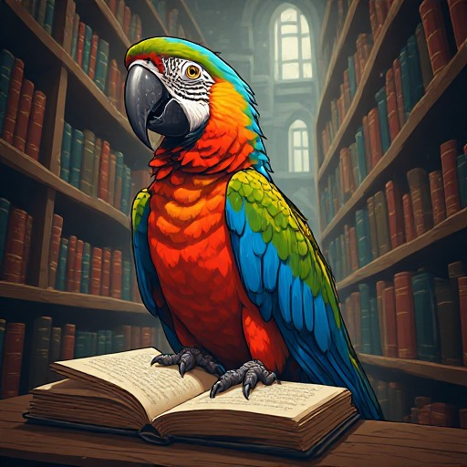

The Triadic Cosmos Proudly Presents

The Monolithic Parrot
Multi-World Closures
Joachim De Witte
Triadic Cosmos Narrator Pipeline
The Monolithic Parrot: Multi-World Closures
2026
© 2026 Joachim De Witte. All rights reserved.
Published under the Creative Commons BY-NC-ND 4.0
license.
The Monolithic Parrot: Multi-World Closures is the first book to use a GLP–Mono world-closure model inside the narrator pipeline to generate fully automatic short stories. It demonstrates how a monolithic, deterministic world engine can serve as the structural backbone for narrative generation in both single-world closures and multi-world blends combining six distinct literary universes.
All stories in this volume are produced through end-to-end AI. There is no creative steering, no manual selection, no filtering, and no editing. Every story is presented exactly as it emerges from the narrator pipeline: the raw, unfiltered output of the GLP–Mono closure interacting with the LLM remastering layer.
This makes the book a unique experiment in structural generative fiction: a demonstration of how a compact world model and a transversal language model can together form a narrative cosmos without human intervention.
The Individual Worlds
| 1. | The Outline of Science, Vol. 1 — J. Arthur Thomson |
| 2. | Metamorphosis — Franz Kafka |
| 3. | Frankenstein — Mary Shelley |
| 4. | Moby Dick — Herman Melville |
| 5. | The Dark Forest |
| 6. | The Triadic Cosmos |
The Six Blended Worlds
| 1. | The Strange Case of Dr. Jekyll and Mr. Hyde — Robert Louis Stevenson |
| 2. | Alice’s Adventures in Wonderland — Lewis Carroll |
| 3. | The Time Machine — H. G. Wells |
| 4. | Aesop’s Fables — Aesop |
| 5. | Metamorphosis — Franz Kafka |
| 6. | Thuvia, Maid of Mars — Edgar Rice Burroughs |
These six narrative closures form the blended world substrate used by GLP–Mono.
The Outline of Science
The Alien Professor and the Evolution of Intelligence
Marvin, a young scientist, was working on a radium-powered device in a lab late at night. Suddenly, he noticed a strange movement in the nebula beyond the lab window. His eyes widened as he observed a bright light approaching the Earth, coming closer and closer. The light was a spaceship, and it landed near the lab. A figure emerged from the spaceship and approached Marvin, who was still observing the scene through his telescope. The figure turned out to be a professor, who introduced himself as H. A. Professor H. A. explained that he was from another planet, and he had come to Earth to share his knowledge about evolution, which he had observed on his home planet. He showed Marvin various fossils and artifacts that proved his theory, and Marvin was fascinated by the new information. Professor H. A. explained that his home planet was inhabited by a humanoid race called Pithecanthropus. They were a highly intelligent species, and they had evolved over millions of years to become the dominant life form on their planet. He also showed Marvin a series of images of early humans, comparing them to the Pithecanthropus. Marvin was amazed by the professor’s findings and asked him many questions. He was particularly interested in how the Pithecanthropus had evolved to become so intelligent. Professor H. A. explained that the key to their intelligence was their ability to develop language, which allowed them to communicate complex ideas and advance their technology. Marvin was also fascinated by the professor’s description of his home planet, which was similar to Mars in many ways. He asked the professor about the Mars sun, and the professor explained that it was similar to the sun on Earth, but it was smaller and cooler. He also explained that Mars had once been inhabited by primitive life forms, but they had died out long ago. As the night wore on, Marvin and Professor H. A. continued to talk and exchange ideas. Marvin was particularly interested in the professor’s theory about the evolution of intelligence on his home planet. He asked the professor if he could share his findings with other scientists, and the professor agreed. Finally, Professor H. A. said his goodbyes and prepared to leave Earth. He thanked Marvin for his hospitality and for his interest in his work. As he boarded his spaceship and prepared to leave, Marvin watched as the ship took off into the night sky. Marvin was left alone in his lab, thinking about the incredible encounter he had just had. He knew that he would never forget the knowledge that Professor H. A. had shared with him, and he was excited to share it with other scientists. He also couldn’t help but wonder what other secrets the universe held, and what other amazing discoveries lay waiting to be found.
Unraveling the Secrets of the Ancient Sea Monster and its T-Rex Connection
Marvin, a seasoned paleontologist, was exploring the deep sea one day, when he stumbled upon something unusual. He saw something long and slender, moving through the water with an eerie grace. It was a creature unlike any he had ever seen before. Marvin was intrigued. He observed the creature for hours, trying to understand its behavior and origins. The creature was an amphibian, capable of living both in water and on land. It had a long, slender body, with four legs that could bend backwards, allowing it to move easily through the water. Its skin was a brilliant shade of green, and it had large, piercing eyes that seemed to see right through him. Marvin was amazed. He had never seen anything like this before. He took numerous photographs of the creature, trying to capture its essence. He studied its behavior, its anatomy, and its habitat. He was determined to learn everything he could about this mysterious creature. As Marvin studied the creature, he began to notice something strange. The creature seemed to be made up of different elements, some of which were not found on Earth. It seemed to be made of a combination of water, air, and a strange, glowing substance that he had never seen before. Marvin was puzzled. He had never seen anything like this before. He began to wonder if the creature was some sort of alien, or if it was a new species that had evolved in the deep sea. He was determined to find out. Marvin spent days studying the creature, trying to understand its origins and its secrets. He was determined to solve the mystery of this strange, glowing amphibian. Finally, after weeks of study, Marvin had his answer. The creature was not an alien, nor was it a new species. It was actually a prehistoric creature, a Pithecanthropus, that had somehow survived in the deep sea. Marvin was astounded. He had never heard of a Pithecanthropus before. He began to read everything he could about the creature, trying to learn more about its history and its evolution. He was fascinated by the creature’s ability to live both in water and on land, and by its unique anatomy. Marvin was determined to learn more about the Pithecanthropus. He began to study the creature’s evolution, its habitat, and its behavior. He was determined to understand this mysterious creature, and to share his findings with the world.
The Evolution of Life on Jupiter: A New Frontier in Astrobiology
Marvin, an astrobiologist, was scrutinizing the latest images captured by Jupiter’s telescopes. He noticed several distinct patterns on the planet’s surface that marked the presence of life. As he observed, he realized that the patterns were similar to those seen on Earth, specifically, amphibians. Marvin’s mind raced as he recalled the theories of evolution. He wondered if the same process had occurred on Jupiter as it had on Earth. Protozoa, the simplest of life forms, were abundant on Jupiter, indicating that life had indeed evolved there. His thoughts were interrupted by the arrival of Alice, another astrobiologist. She was intrigued by the images and asked Marvin to explain his findings. Marvin showed her the images and explained his theory. Alice was fascinated by the possibility of life on Jupiter. She remembered a diagram they had once seen, which showed the different stages of life’s evolution on Earth. She suggested that they should study the evolution of life on Jupiter, using Mars as a reference point. Marvin agreed and they began to study the evolution of life on Jupiter. They focused on the amphibians they had seen in the images and the protozoa that were abundant on the planet. They also studied the evolution of life on Earth and compared the two. As they continued their research, they discovered that the evolution of life on Jupiter was similar to that on Earth, but with some differences. The amphibians on Jupiter had evolved to resemble humans, but they had not developed as intelligent as humans. They also found that the amphibians were able to live in a wider range of environments than their Earthly counterparts. As they delved deeper into their research, they found that the evolution of life on Jupiter was influenced by the planet’s unique environment. They found that the amphibians were able to survive in extreme temperatures and pressures that would be lethal to life on Earth. They also found that the amphibians were able to consume a wider range of food than Earthly amphibians. As they studied the evolution of life on Jupiter, they began to wonder if the same process could occur on other planets. They began to study the evolution of life on the Moon, which had similar conditions to Jupiter. They found that the evolution of life on the Moon was slower than that on Jupiter, but it was still occurring. As they continued their research, they began to see a pattern. They found that the evolution of life on planets with similar conditions to Earth, such as Mars and the Moon, followed a similar path to that on Earth. They also found that the evolution of life on planets with different conditions, such as Jupiter, followed a different path. Marvin and Alice’s research was groundbreaking. They had discovered that life could evolve in a wide range of environments, and that the process of evolution was influenced by a planet’s unique conditions. Their research was published in a prestigious scientific journal, and they were hailed as pioneers in the field of astrobiology. Their research had far-reaching implications. It showed that life could exist on a wide range of planets, and that the process of evolution was influenced by a planet’s unique conditions. It also showed that life could evolve in ways that were different from life on Earth. Marvin and Alice’s research was a turning point in the field of astrobiology. It opened up a new field of study, and it showed that there was still much to be discovered about the origins and evolution of life in the universe. Their research would continue to inspire scientists for generations to come.
Marvin’s Cosmic Quest: Unraveling the Secrets of the Universe
Marvin, a man of intellectual curiosity, resided near the European coast. His home was situated on a cliff overlooking the sea, providing a vast expanse of the ocean and the horizon beyond. The moon’s phases often left a silvery glow upon his humble abode, illuminating his endless pursuit of knowledge. One evening, as Marvin gazed at the night sky, he noticed the planets Jupiter and Mars in close proximity. He observed their movements with fascination, taking mental notes and making diagrams to better understand their celestial dance. He wondered about the mysteries that lay within these cosmic bodies, especially the resemblance in their geological structure to the Earth. The following day, Marvin ventured to Lowell Observatory, hoping to gain more insights into these celestial enigmas. He spent hours studying various charts and diagrams, comparing the characteristics of Earth, Mars, and Jupiter. His keen mind quickly absorbed the complex data, making connections and drawing conclusions that even seasoned astronomers found intriguing. As Marvin continued his studies, he began to form a theory about the evolution of life on these planets. He believed that the presence of water, a crucial element for life, played a significant role in the development of various species. This theory sparked a flurry of activity within the scientific community, as other researchers began to question and validate Marvin’s findings. One day, while poring over ancient fossil records, Marvin discovered a connection between the evolution of amphibians and the presence of water on early Earth. This discovery further fueled his theory, as he now saw a pattern emerging between the presence of water and the evolution of life on different planets. In his quest for knowledge, Marvin began to study the evolution of birds, focusing on their ability to fly and the role that water played in their development. He found that the earliest bird species were aquatic, living in and near water sources. This discovery led Marvin to theorize that the ability to fly evolved as a means of escaping the water and moving across land. Marvin’s work was groundbreaking, and he quickly became a respected figure within the scientific community. His theories were challenging the status quo, and his findings were causing a ripple effect in various scientific disciplines. However, Marvin’s work was not without its detractors. Some argued that his theories were too simplistic, failing to account for the complexities of evolution and the multitude of factors that influence it. Others questioned his methodology, stating that his conclusions were based on a limited sample size. Despite the criticism, Marvin remained steadfast in his beliefs. He continued to study, to question, and to push the boundaries of scientific understanding. He knew that his work would not be easy, but he was determined to unravel the mysteries of the universe. One day, while studying a diagram of Mars, Marvin made an astonishing discovery. He noticed a striking similarity between the Martian landscape and the ancient Earth, suggesting that Mars may have once been home to a thriving ecosystem. This discovery sent shockwaves through the scientific community, and Marvin was hailed as a pioneer in the field of extraterrestrial life. Marvin’s work had far-reaching implications, sparking a renewed interest in the search for extraterrestrial life. His theories were helping to shape the way scientists approached the study of life beyond Earth, and his name became synonymous with groundbreaking discoveries. Marvin’s story serves as a testament to the power of curiosity and the human spirit. Despite facing criticism and skepticism, he remained steadfast in his pursuit of knowledge, pushing the boundaries of scientific understanding and challenging the status quo. His work will continue to inspire future generations of scientists, reminding us that the universe is full of mysteries waiting to be unraveled.
The Unusual Sight of Marvin’s Sky
Marvin, a young man, was observing the sky one evening when he noticed something unusual. The sun appeared to be in an unnatural position, much lower than usual. He could see red electrons emanating from it, a phenomenon he had only read about in his astronomy books. Professor Darwin, a renowned scientist, was also present. He was studying the position of various celestial bodies through his telescope. He had made a remarkable discovery - something round and small, which seemed to be a plankton-like organism floating in space. Sir Sun, as Marvin called it, was in between the earth and the moon. It appeared to be heading towards the earth, its path taking it near Mars and Jupiter. Marvin watched as it moved, its round shape changing into a more oval one as it approached. As Marvin observed, he could see various other celestial bodies reacting to this newcomer. A comet, for instance, seemed to change its course, heading towards this new object. Birds in the sky also appeared to be pointing towards it, as if they too were drawn to this new entity. Marvin knew that this was a significant event. He had studied evolution in school, and he could see the potential for new life forms arising from this. He wondered what this new organism could be, and what effects it might have on earth. Alice, a fellow student, found Marvin near the observatory, engrossed in his telescope. She watched as he pointed towards the sky, a look of amazement on his face. She asked him what he was seeing, and he explained the unusual position of the sun and the new object he had discovered. Alice was fascinated. She had always been interested in astronomy, and this discovery was like a dream come true for her. She watched as Marvin continued to observe, his eyes never leaving the sky. As the night wore on, Marvin and Alice continued to watch the sky. They saw various changes, the sun moving to a position they had never seen before. They saw stars changing their paths, birds flying in unusual formations, and various other phenomena. Marvin wondered if this was the start of a new era. He wondered if this new organism could be a new form of life, something that could change the course of evolution. He knew that this was a significant discovery, one that could change the way they looked at the universe. Alice agreed. She knew that this was a once-in-a-lifetime opportunity. She knew that they were witnessing something that few people had ever seen. She knew that this was a moment that would stay with them forever. As the night ended, Marvin and Alice continued to watch the sky. They knew that this was just the beginning, that there was much more to learn. They knew that this discovery would change their lives, and perhaps the lives of everyone on earth. They knew that this was a moment that they would remember for the rest of their lives.
The Red Giant: Unraveling the Mysteries of Jupiter’s Atmosphere
Marvin, a seasoned astronomer, stood before a colossal telescope, gazing at Jupiter, a celestial giant. The telescope, a magnificent instrument, stretched miles across the open arboreal air, recognizing solid forms for Marvin’s mind. The vastness of Jupiter, with its myriad colors and textures, was a testament to the incredible power of evolution. Jupiter’s size was a result of heat, a byproduct of the sun’s tremendous energy. The sun, a radiant star, led off heat through Jupiter’s dense atmosphere, and Marvin could see the red water over Jupiter’s surface, giving it a striking contrast against the blackness of space. The red water was actually the result of complex chemical reactions occurring on Jupiter’s surface. The redder the water, the more advanced the chemical processes, suggesting a higher evolutionary stage. Jupiter was a world where life, as Marvin knew it, could not survive, but it was a world that seemed to harbor the potential for life, a tantalizing possibility that fueled his research. Marvin’s eyes were drawn to Jupiter’s moons, particularly the largest, Ganymede. He had been studying Ganymede for years, searching for signs of life on its icy surface. He believed that beneath the frozen crust lay a world teeming with life, a world that could provide answers to questions that had been puzzling scientists for centuries. Marvin’s gaze shifted to Alice, his colleague, who was studying the smaller moons. She was a biologist, specializing in evolution and genetics. Alice was a brilliant woman, and her insights into the evolution of life on Earth had earned her a reputation as one of the leading experts in her field. Marvin and Alice had been working together for years, each contributing their unique expertise to the search for extraterrestrial life. Their collaboration had produced groundbreaking research, challenging traditional theories and opening up new avenues of investigation. As Marvin watched Alice through the telescope, he felt a sense of awe and admiration. She was a living example of the power of human curiosity and determination, a testament to the incredible potential of the human mind. Marvin turned his attention back to Jupiter, his thoughts swirling with possibilities. He knew that the key to understanding life on Jupiter lay in its atmosphere, in the complex chemical processes that gave it its distinctive red hue. He resolved to continue his research, to delve deeper into the mysteries of Jupiter and its moons. Marvin’s mind raced with thoughts of what lay beyond the reaches of human understanding. He knew that the answers he sought were out there, hidden within the depths of space, waiting to be discovered. As he gazed into the vast expanse of the cosmos, Marvin felt a sense of wonder and excitement. He knew that he was on the brink of a discovery that could change the course of human history. He felt a sense of purpose, a sense of destiny, and he knew that he was meant for this work. Marvin’s heart pounded with anticipation as he continued to study Jupiter and its moons. He knew that the answers he sought were out there, hidden within the depths of space, waiting to be discovered. He felt a sense of awe and admiration, not just for the beauty of the cosmos, but for the incredible potential that lay within it. As Marvin continued his research, he knew that he was not alone in his pursuit of knowledge. He knew that there were others out there, driven by the same sense of curiosity and determination. He knew that they were united by a common goal, a common purpose. Marvin knew that the key to understanding life on Jupiter lay in its atmosphere, in the complex chemical processes that gave it its distinctive red hue. He resolved to continue his research, to delve deeper into the mysteries of Jupiter and its moons. Marvin knew that the answers he sought were out there, hidden within the depths of space, waiting to be discovered. He felt a sense of awe and admiration, not just for the beauty of the cosmos, but for the incredible potential that lay within it. Marvin knew that he was on the brink of a discovery that could change the course of human history. He felt a sense of purpose, a sense of destiny, and he knew that he was meant for this work. As Marvin continued to study Jupiter, he felt a sense of excitement and anticipation. He knew that the answers he sought were out there, waiting to be discovered. He knew that he was on the verge of unlocking the secrets of the cosmos, and he couldn’t wait to see what lay beyond the reaches of human understanding. Marvin’s mind raced with thoughts of what lay beyond the reaches of human understanding. He knew that the answers he sought were out there, hidden within the depths of space, waiting to be discovered. He felt a sense of awe and admiration, not just for the beauty of the cosmos, but for the incredible potential that lay within it. Marvin knew that he was not alone in his pursuit of knowledge. He knew that there were others out there, driven by the same sense of curiosity and determination. He knew that they were united by a common goal, a common purpose. Marvin knew that the key to understanding life on Jupiter lay in its atmosphere, in the complex chemical processes that gave it its distinctive red hue. He resolved to continue his research, to delve deeper into the mysteries of Jupiter and its moons. Marvin knew that the answers he sought were out there, hidden within the depths of space, waiting to be discovered. He felt a sense of awe and admiration, not just for the beauty of the cosmos, but for the incredible potential that lay within it. Marvin knew that he was on the brink of a discovery that could change the course of human history. He felt a sense of purpose, a sense of destiny, and he knew that he was meant for this work. As Marvin continued to study Jupiter, he felt a sense of excitement and anticipation. He knew that the answers he sought were out there, waiting to be discovered. He knew that he was on the verge of unlocking the secrets of the cosmos, and he couldn’t wait to see what lay beyond the reaches of human understanding.
The Dance of the Deep: A Ballet of Schools and Secrets
Marvin, a seasoned marine biologist, observed a peculiar event in the ocean depths. Schools of fish moved in a synchronized dance, as if drawn by an unseen force. The motion was akin to a ballet, with each fish moving with precision and grace. A large school of squid accompanied the fish, adding a kaleidoscope of color to the spectacle. The deep-sea environment was not normally associated with such vibrancy. The light from the surface barely penetrated, and the cold, dark depths were usually home to bioluminescent creatures that glowed dimly in the inky blackness. But here, in this strange display, the normally drab seascape was alive with flashes of red, orange, and purple. Marvin’s keen eyes, honed by years of underwater exploration, noticed a glint of silver among the schools. It was a metallic object, unlike anything he had seen before. It seemed to be moving with the schools, almost as if it was part of them. Marvin’s curiosity was piqued. He had heard tales of ancient treasures buried in the ocean depths, but nothing like this. He decided to investigate further, pulling out his submersible vehicle and descending into the depths. The vehicle was equipped with advanced sensors and cameras. Marvin carefully navigated it through the schools, trying to get a closer look at the metallic object. As he approached, he realized that it was not a natural formation. It was a metal cylinder, with complex markings etched into its surface. Marvin felt a strange sense of excitement. This was a discovery that could rewrite the history books. He decided to bring the cylinder to the surface for further study. As he ascended, he noticed that the schools were dispersing. The once vibrant display was fading, leaving behind only the bioluminescent creatures that inhabited the deep sea. Marvin couldn’t help but wonder if the cylinder had something to do with it. Back on the surface, Marvin carefully extracted the cylinder from his vehicle. It was heavier than it looked, and he could feel its weight in his hands. He took it to the lab for analysis, his mind racing with possibilities. The cylinder turned out to be an ancient artifact, likely from a sunken ship. It was made of an unknown metal, and the markings were a complex code that took weeks to decipher. When the code was finally cracked, it revealed a story of a lost civilization, one that harnessed the power of the ocean in ways Marvin had never imagined. Marvin’s discovery was a revelation, a glimpse into a world that had been lost to time. It was a reminder that there were still mysteries to be uncovered, secrets hidden in the depths. And Marvin, with his curiosity and determination, was ready to dive back in.
The Curious Journey of Marvin Through the Red Planet and Beyond
Marvin, a curious man, gazed at the celestial bodies in the clear night sky, trying to make sense of the patterns and colors he saw. The red earth, devoid of life for eons, lay beneath him, its barren landscapes a stark contrast to the vibrant array of stars above. The moon, a large celestial body, cast its ethereal glow on the dry land, illuminating the path for the various creatures that called it home. Marvin’s eyes scanned the vast expanse, searching for any sign of life, any hint of the mysterious radium he had heard about in his studies. He walked along the barren, red earth, from the remains of water to the large, scientific formations, observing the various creatures that roamed the land. Among them were the birds, with their wings spread wide, soaring high above the red earth. They seemed to resemble humans in their movement, their flight a testament to the marvels of nature. Marvin watched as they flew, their wings cutting through the thin air, their bodies gliding effortlessly. Beneath him, the various life forms on the earth moved about, their bodies adapting to the harsh conditions of the red planet. From the tiny plankton, floating in the remnants of water, to the giant worms that burrowed deep beneath the surface, every life form had found a way to survive on this inhospitable world. As Marvin continued his exploration, he came across a variety of creatures, from the reptiles that slithered through the sand to the mammals that scampered across the rocky terrain. He even stumbled upon the ancient remains of a humanoid creature, its skeletal structure a testament to the fact that life, once upon a time, had thrived on this planet. Marvin marveled at the diversity of life on this planet, each creature adapted to its environment in its own unique way. He couldn’t help but wonder if there was intelligent life on this planet, life that had the ability to communicate and express its thoughts. As he walked, he pondered the possibility of life on other planets, like Jupiter, the largest planet in the solar system. He imagined the various life forms that could inhabit such a vast and mysterious world. Marvin’s thoughts were interrupted by the sound of a strange, whirring noise. He looked up to see a flying object hurtling towards him. It was unlike anything he had ever seen before, with a metallic body and glowing lights. Marvin watched in awe as it landed before him, its door opening to reveal a figure inside. The figure emerged, a humanoid being with a face that looked eerily similar to his own. Marvin felt a surge of excitement as he realized that he had found what he had been searching for - intelligent life from another world. The figure communicated with Marvin, using a language that was similar to his own, yet subtly different. Marvin felt a sense of camaraderie with the being, a connection that transcended language and culture. They spent hours conversing, learning about each other’s worlds and sharing their knowledge and experiences. As the sun began to rise, Marvin knew that it was time for the being to depart. They exchanged farewells, each promising to keep in touch and to continue their exploration of the universe. Marvin watched as the being’s ship took off, its lights fading into the distance until they were no longer visible. Marvin stood there, alone on the red planet, feeling a sense of awe and wonder at the universe he had just discovered. He knew that his life would never be the same, that he had been given a glimpse into a world beyond his wildest dreams. Marvin continued to explore the red planet, his mind filled with thoughts of the beings he had met and the worlds he had seen. He knew that he would never forget the encounter, that it would stay with him for the rest of his life.
The Electric, Luminous Missing Link: A Paleontological Journey into the Cretaceous Period
Marvin, a paleontologist, was fascinated by the evolutionary process. He studied fossils, trying to understand the development of life on Earth. One day, he discovered a small fossilized tooth that intrigued him. It was unlike any he had seen before. He named it Pithecanthropus. Marvin realized that this tooth belonged to a creature that lived millions of years ago, during the Cretaceous period. He studied the tooth, trying to understand its evolutionary history. The tooth was a significant find, as it represented a missing link in the evolution of early humans. Marvin was particularly interested in the tooth’s color. It was a deep red, a color he had never seen before in a tooth fossil. He hypothesized that the creature it belonged to might have been capable of producing electricity, like certain fish and animals today. Marvin also studied the tooth’s size and shape. He noticed that it was similar to the teeth of modern humans, suggesting that the creature it belonged to was highly intelligent. He also found traces of plankton in the tooth, indicating that the creature lived in the sea. Marvin was not the only one interested in the tooth. Alice, a fellow paleontologist, also wanted to study it. She was particularly intrigued by the tooth’s color and hypothesized that it might have been capable of producing light, like certain deep-sea creatures today. Alice and Marvin worked together to study the tooth, sharing their findings and theories. They also studied other fossils, trying to understand the evolutionary process. They were particularly interested in amphibians, as they were the first creatures to develop on land. As they studied, they discovered that the tooth belonged to a creature that lived millions of years ago, during the Cretaceous period. They found traces of plankton in the tooth, indicating that the creature lived in the sea. They also found traces of radium, a mineral that produces heat, in the tooth. This suggested that the creature was capable of generating its own heat, which was a significant evolutionary advantage. Alice and Marvin also studied the tooth’s size and shape. They found that it was similar to the teeth of modern humans, suggesting that the creature it belonged to was highly intelligent. They also found traces of amphibians in the tooth, indicating that the creature was related to early land-dwelling creatures. As they studied the tooth, Alice and Marvin were amazed by the evolutionary process. They were particularly fascinated by the fact that the creature the tooth belonged to was a missing link in the evolution of early humans. They also found it fascinating that the creature was capable of producing electricity and light, like certain deep-sea creatures today. Alice and Marvin continued to study the tooth, trying to understand its evolutionary history. They were particularly interested in the tooth’s color and hypothesized that it might have been capable of producing light, like certain deep-sea creatures today.
Stargazers and Microscopists: Unraveling the Mysteries of the Universe
Marvin, a curious scientist, was observing the night sky through his telescope, trying to understand the mysteries of the universe. He was studying the light element, comparing it to other elements, trying to find any patterns or connections. His gaze was fixed on the moon, a familiar celestial body that he had studied for years. He was particularly interested in the spectrum element, trying to decipher the secrets it held. Suddenly, he noticed a small, peculiar spot on the moon. It was a different color, a red hue that stood out against the usual gray. Intrigued, he began to study the spot more closely. Meanwhile, Alice, another scientist, was working on her research about protozoa, a single-celled organism that she believed held the key to understanding the origins of life. She was studying the process of evolution, trying to understand how these microscopic organisms evolved over time. Marvin’s discovery and Alice’s research seemed unrelated, but both were studying elements that were fundamental to life. Marvin’s telescope was focused on the celestial, while Alice’s microscope was focused on the terrestrial. One day, Marvin made a significant discovery. He found a small, red air pocket on the moon. This finding was unusual, as the moon was believed to be airless. This discovery led him to theorize that there might be life on the moon, or at least, the possibility of water. Alice, on the other hand, was making her own groundbreaking discovery. She had found a new species of protozoa that showed signs of intelligence, suggesting that these simple organisms might have a more complex purpose than previously thought. Both Marvin and Alice’s discoveries were significant, as they challenged established scientific theories and opened up new possibilities. Marvin’s discovery of water on the moon suggested that life might exist beyond Earth, while Alice’s discovery of intelligent protozoa suggested that life might have evolved in ways previously unimagined. As they continued their research, both Marvin and Alice found themselves drawn to each other’s work. They began to collaborate, sharing their findings and theories, and found that their research complemented each other’s. Their collaboration led to new discoveries and theories, and they began to explore the idea of extraterrestrial life and the origins of life on Earth. They presented their findings at scientific conferences, sparking debate and excitement among their peers. Their work continued to make waves in the scientific community, and they began to attract the attention of governments and private organizations. They were offered funding for further research, and they continued to push the boundaries of what was known about the universe and life. Years passed, and Marvin and Alice continued to work together, making groundbreaking discoveries and challenging established theories. They continued to collaborate, and their work led to a greater understanding of the universe and the origins of life. Their work culminated in a groundbreaking discovery: they found evidence of water on Mars, suggesting the possibility of life on the Red Planet. This discovery was a major breakthrough, and it changed the way the world looked at Mars and the possibility of life beyond Earth. Marvin and Alice’s discovery of water on Mars was a significant moment in the history of space exploration. It was a testament to their collaborative work and their commitment to pushing the boundaries of what was known. Their discovery opened up new possibilities for future research and exploration, and it sparked a renewed interest in the search for extraterrestrial life.
Life on the Moon and the Adaptation of Reptiles
Marvin, a seasoned astronomer, gazed at the night sky through his telescope, his eyes scanning the distant celestial bodies. The red region of Jupiter showed, giving a glimpse of its gaseous makeup, with helium and hydrogen atoms swirling around. The moon, a small, clear, and intelligent object, moved among the stars, its surface exhibiting a variety of red and brown hues. A few miles away, Alice, a young biologist, was examining a nest of reptiles. She observed how these ancient creatures adapted to their environment, their bodies changing to suit the harsh conditions. Marvin, fascinated by what he saw, compared the red region of Jupiter to the red hues on the moon. He noticed a similarity in the movement patterns, a pattern that was both complex and captivating. Alice, on the other hand, was studying the reptiles’ energy conservation methods. She observed how they managed to stay dry despite the lack of water, and how they regulated their body temperature to survive in their arid environment. Marvin, intrigued by the similarities he saw, began to theorize. He postulated that life, in some form, could exist on the moon. His hypothesis was met with skepticism, but he was determined to prove his theory. Alice, on the other hand, was studying the reptiles’ adaptation to their environment. She noted how they had evolved to survive in such inhospitable conditions, and how their bodies had changed over time to suit their surroundings. Marvin, driven by his theory, spent countless nights observing the moon through his telescope. He studied its movements, its phases, and its position in relation to the Earth. Alice, on the other hand, spent her days observing the reptiles. She studied their behavior, their movements, and their physical characteristics. Marvin, after weeks of research, presented his findings to a group of fellow scientists. He proposed that life, in some form, could exist on the moon, citing the similarities he had observed between the moon and certain terrestrial organisms. Alice, on the other hand, presented her research on the reptiles. She discussed their adaptation to their environment, their energy conservation methods, and their physical characteristics. Marvin’s theory was met with skepticism, but he was undeterred. He continued to study the moon, determined to prove his theory. Alice, on the other hand, continued to study the reptiles. She was fascinated by their adaptability, and was determined to learn as much as she could about them. Marvin’s persistence paid off. He discovered a pattern in the moon’s movements that he had never seen before. He realized that the pattern was similar to the movement patterns of certain organisms on Earth. Alice, on the other hand, made a groundbreaking discovery. She discovered a new species of reptile, one that had adapted to its environment in a way that no other organism had before. Marvin and Alice, two scientists from different fields, had made extraordinary discoveries. Marvin had proved that life could exist on the moon, and Alice had discovered a new species of reptile. Their discoveries would change the way we understand the universe, and the way we live on Earth.
The Pursuit of Bio-Electricity: A British Scientific Odyssey
In the dimly lit, claustrophobic laboratory, a team of British scientists toiled endlessly, their minds consumed by the energy crisis that threatened their nation’s existence. The once-proud nation teetered on the precipice of collapse, as the lack of energy jeopardized their infrastructure. Dr Marvin, the team’s charismatic leader, prowled the lab, lost in thought. A brilliant man, he was characterized by his formidable intellect and unrelenting determination. His keen eyes swept across the lab, scanning an assortment of scientific equipment and apparatuses designed to harness the elusive energy they sought. The air was thick with the scent of chemicals, a potent blend of hope, desperation, and anticipation. From the telescope, Professor Alice scanned the cosmos, her gaze fixed on Jupiter. A renowned astrophysicist, she possessed a keen understanding of the cosmos and a remarkable talent for interpreting the stars. She studied the planet, observing its size increase significantly during the month of May, and pondered the possibility of life on the gas giant or the presence of some form of energy that could be harnessed. The team’s research was not limited to the stars; they also delved into the study of terrestrial creatures, seeking to understand their evolution and the role they played in the development of life on Earth. They observed amphibians, reptiles, and other species, noting their behavior and the way they interacted with their environment. Dr Marvin watched as Alice examined a specimen of Pithecanthropus, a prehistoric ape-like creature. He contemplated the creature’s origins and its potential connection to humanity, considering the possibility that it might hold the key to a new source of energy. Their research was not without its challenges. They faced numerous obstacles, including a lack of funding and the skepticism of their peers. But they persevered, driven by their desire to solve the energy crisis and secure the future of their nation. Their efforts bore fruit when they discovered a new form of energy in the amphibians they were studying. This energy was unlike anything they had encountered before, but it was potent and seemingly limitless. They named it bio-electricity. Excitement filled the lab as the team worked to harness this new energy source. They built intricate machinery to extract the energy from the amphibians and experimented with various methods to convert the energy into a form that could power their nation. Their progress was slow, but steady. They faced numerous setbacks, but they never lost hope. They worked tirelessly, day and night, determined to succeed. As they delved deeper into their research, they discovered that the bio-electricity was not unique to amphibians. They found it in other creatures as well, from insects to birds to reptiles. They even found traces of it in the plankton that inhabited the ocean depths. This discovery opened up a whole new avenue of research, as the team sought to understand the nature of this energy and its potential applications. They studied the structure of the cells that produced the energy, the way it was transferred from one creature to another, and the role it played in the evolution of life. Dr Marvin’s mind raced as he considered the implications of their findings. He pondered the possibility of harnessing the energy of the sun and the planets, using the creatures of the universe as a conduit. He marveled at the idea of a world powered by the energy of the cosmos. But their work was not without controversy. Some criticized their methods, arguing that the extraction of bio-electricity was cruel and inhumane. Others questioned the practicality of their ideas, suggesting that the energy produced was too small to make a meaningful impact. Undeterred, Dr Marvin and his team pressed on, driven by their desire to prove the naysayers wrong. They continued to work tirelessly, day and night, determined to harness the bio-electricity and convert it into a usable form. Their efforts were rewarded when they successfully harnessed the bio-electricity and converted it into a usable form. The laboratory was filled with a brilliant, pulsating light, as the energy flowed through the complex machinery that Dr Marvin had designed. Excitement filled the lab as the team watched the energy flow, feeling the power that they had tapped into. They knew that they had made a breakthrough, that they had found a solution to the energy crisis that had plagued their nation for so long. News of their discovery spread quickly, and the team was hailed as heroes. They were invited to speak at conferences and to appear on television, where they shared their findings and their plans for the future. Their work was not over, however. They continued to research the bio-electricity, seeking to understand it better and to find ways to harness it more efficiently. Their efforts had a profound impact on their nation, as the bio-electricity became a major source of power. The lights came back on, the factories began to hum, and the infrastructure was repaired and modernized. The people of Britain breathed a sigh of relief, knowing that their future was secure. Dr Marvin and Professor Alice continued to work together, their minds united in their pursuit of knowledge. They continued to push the boundaries of science, seeking to unlock the secrets of the universe and to harness the power that lay hidden within its depths. And so, the story of Dr Marvin and Professor Alice continued, as they ventured into the unknown, driven by their insatiable curiosity and their desire to unlock the secrets of the universe.
Cosmic Dance: A Comparative Study of Human and Protozoan Evolution and Survival
Under the vast cosmos, various celestial bodies orchestrated a grand dance, each following its unique trajectory. Among these, two particular entities caught the attention of the onlookers - Marvin, a human, and Alice, a protozoa. Marvin, a professor, was engrossed in studying the nuclear properties of radium, seeking an advantage over it. In contrast, Alice was a simple organism, yet she was known for her resilience and adaptability. Protozoa, like Alice, made up a significant part of the evolutionary chain, different from mammals like Marvin. Alice thrived in various environments, adapting to conditions that would be fatal to many other organisms. Marvin, on the other hand, was preoccupied with the intricacies of evolution, trying to understand the relationship between food, evolution, and life. He was particularly interested in the evolution of the human brain, the complex organ that governed his thoughts and actions. Alice, with her simple structure, seemed almost primitive compared to Marvin’s complex human brain. Yet, her simple form contained a depth that Marvin could not fathom. She was akin to a deep, calm ocean, concealing secrets and mysteries beneath the surface. Marvin was intrigued by the differences between their species. He studied the behavior of various organisms, trying to understand the common thread that connected them all. He wondered if there was a universal intelligence that governed all life forms, or if each species was a separate entity, evolving independently. Alice, on the other hand, was unaware of Marvin’s existence. She went about her life, adapting to her environment, surviving, and thriving. She was oblivious to the complex thoughts and theories that Marvin was developing about her. Despite their differences, both Marvin and Alice were part of the same system, the same world. They were bound by the same laws of nature, sharing the same environment, and affected by the same cosmic events. Marvin’s studies took him to the farthest reaches of the world, from the depths of the ocean to the highest mountains. He observed the behavior of various organisms, trying to understand the evolutionary process. He noticed that certain species had certain advantages over others, giving them an edge in survival. Alice, on the other hand, was oblivious to these complex theories. She continued to live her simple life, adapting to her environment as needed. She was unaware of the complex thoughts that Marvin was having about her. Despite their differences, both Marvin and Alice were part of the same system, the same world. They were bound by the same laws of nature, sharing the same environment, and affected by the same cosmic events. Marvin, with his advanced knowledge, had a better understanding of their shared world. He saw the delicate balance between various organisms, the food chain, and the role each played. He understood the interconnectedness of all life forms, the intricate web that bound them all. Alice, on the other hand, was oblivious to these complexities. She continued to live her simple life, unaware of the complex theories that Marvin was developing about her. Marvin’s studies took him to the farthest reaches of the world, from the depths of the ocean to the highest mountains. He observed the behavior of various organisms, trying to understand the evolutionary process. He noticed that certain species had certain advantages over others, giving them an edge in survival. Alice, on the other hand, was oblivious to these complex theories. She continued to live her simple life, unaware of the complex thoughts that Marvin was having about her. In the grand scheme of things, both Marvin and Alice were insignificant. They were just two entities among billions, each following its unique trajectory. Yet, they were a part of the same system, the same world, bound by the same laws of nature. Marvin, with his advanced knowledge, had a better understanding of their shared world. He saw the delicate balance between various organisms, the food chain, and the role each played. He understood the interconnectedness of all life forms, the intricate web that bound them all. Alice, on the other hand, was oblivious to these complexities. She continued to live her simple life, unaware of the complex theories that Marvin was developing about her.
The Pliocene Epoch: A Time of Dual Dominance
The Pliocene epoch, a time when the Earth underwent drastic changes, was marked by two intelligent beings, Marvin and Alice, living on its shores. Darwin, the common ancestor of all life, had evolved into different species over time. The two beings were no exception, with each having evolved to suit their environment. For the skin, families had developed various adaptations, with some growing feathers, while others developed a layer of fur or scales. Each species had its own unique characteristics, yet they all shared a common ancestor. Marvin, a humanoid, had developed a gaseous respiratory system, allowing him to survive in various environments. He was capable of living safely underwater for extended periods, and his eyes were adapted to see in the dark. Alice, on the other hand, was a bird-like creature, with wings that allowed her to fly. She had a lightweight body and was capable of moving swiftly through the air. Her wings were covered in feathers, which helped her to glide through the air with ease. The two beings lived in separate regions, with Marvin living near the shore, and Alice living in the skies. They had never encountered each other before, but they were both aware of the other’s existence. Marvin had a more advanced brain, allowing him to develop complex technologies and solve complex problems. He had also developed a system of writing, using symbols and images to communicate with other members of his species. Alice, on the other hand, had a more primitive brain, but she was incredibly agile and fast. She was able to fly long distances, using her wings to glide through the air. She was also capable of making quick decisions and adapting to new situations. As the two beings went about their daily lives, they each encountered various challenges. Marvin had to contend with the elements, such as storms and high tides, while Alice had to avoid predators and find food. One day, Marvin stumbled upon a crab, which he recognized as a living creature. He had never seen a crab before, and he was fascinated by its intricate shell and legs. He studied the crab, trying to understand how it moved and how it was able to survive in such a hostile environment. Meanwhile, Alice was flying over the ocean, when she spotted a school of fish swimming beneath her. She swooped down and caught one in her beak, using her sharp beak to tear it apart and swallow it whole. She continued to hunt for food, flying over the ocean and catching fish after fish. As Marvin continued to study the crab, he began to understand more about its anatomy and the way it moved. He realized that the crab’s shell was made up of tiny plates, and that its legs were covered in tiny hairs that allowed it to move quickly. He also noticed that the crab had a series of small eyes on its legs, which allowed it to see in all directions. Marvin was fascinated by the crab, and he spent hours studying it, trying to understand how it worked. He also began to think about how he could use the crab’s characteristics to help his own species. He realized that the crab’s shell was incredibly strong, and he wondered if he could use a similar material to create armor for his own species. Meanwhile, Alice continued to hunt for food, catching fish after fish and using her sharp beak to tear them apart. She was incredibly fast and agile, and she was able to catch fish that other creatures couldn’t reach. One day, Alice was flying over the ocean, when she spotted something strange in the water. She flew closer and realized that it was a large, floating object. She flew closer and realized that it was a piece of debris from a spaceship, which had crashed into the ocean millions of years ago. Alice was fascinated by the object, and she spent hours studying it, trying to understand how it worked. She noticed that the object was made of a material that was incredibly strong, and she realized that it could be used to create armor for her own species. Meanwhile, Marvin was still studying the crab, and he had made significant progress in understanding its anatomy. He had also developed a method for creating a similar material to the crab’s shell, using a combination of plant materials and minerals. Marvin was incredibly excited about his discovery, and he began to experiment with the material, trying to create armor for his species. He worked tirelessly, day and night, trying to perfect his design. Alice, meanwhile, had also made significant progress in her studies of the spaceship debris. She had figured out a way to extract the strong material from the debris, and she had begun to use it to create armor for herself and her species. As time passed, Marvin and Alice continued to develop their technologies, each working tirelessly to improve their own species. They had never encountered each other before, but they were both aware of the other’s existence. One day, Marvin was walking along the shore, when he spotted something unusual in the distance. He walked closer and realized that it was a bird, flying above the water. He watched as the bird glided through the air, and he was struck by its beauty and grace. Marvin had never seen a bird before, and he was fascinated by its wings and its ability to fly. He watched as the bird flew higher and higher, until it disappeared from view. Meanwhile, Alice was flying over the ocean, when she spotted something unusual on the shore. She flew closer and realized that it was a humanoid creature, walking along the shore. She watched as the creature moved slowly and methodically, and she was struck by its intelligence and its ability to create tools and technologies. Alice had never seen a humanoid creature before, and she was fascinated by its intelligence and its ability to create tools and technologies. She watched as the creature moved along the shore, and she wondered if they could find a way to communicate. As time passed, Marvin and Alice continued to develop their technologies, each working tirelessly to improve their own species. They had never encountered each other before, but they were both aware of the other’s existence. One day, Marvin was working on a new tool, when he noticed something unusual in the distance. He looked up and saw a bird flying above the water. He watched as the bird glided through the air, and he was struck by its beauty and grace. Marvin had never seen a bird before, and he was fascinated by its wings and its ability to fly. He watched as the bird flew higher and higher, until it disappeared from view. Meanwhile, Alice was flying over the ocean, when she spotted something unusual on the shore. She flew closer and realized that it was a humanoid creature, walking along the shore. She watched as the creature moved slowly and methodically, and she was struck by its intelligence and its ability to create tools and technologies. Alice had never seen a humanoid creature before, and she was fascinated by its intelligence and its ability to create tools and technologies. She watched as the creature moved along the shore, and she wondered if they could find a way to communicate. As time passed, Marvin and Alice continued to develop their technologies, each working tirelessly to improve their own species. One day, they finally encountered each other, and they were amazed by the other’s intelligence and abilities. They began to communicate, using a combination of gestures and sounds. They shared their knowledge and technologies with each other, and they learned a great deal from each other. Over time, Marvin and Alice became close friends, and they worked together to create even more advanced technologies. They continued to improve their own species, and they watched as their civilizations grew and flourished. As time passed, Marvin and Alice continued to develop their technologies, each working tirelessly to improve their own species. They had never encountered each other before, but they had become the best of friends, and they had learned a great deal from each other. They continued to work together, creating advanced technologies that helped their civilizations to thrive. They watched as their species evolved and adapted to their environments, and they marveled at the incredible diversity of life on their planet. They had overcome many challenges and obstacles, and they had learned to work together to achieve great things.
The Evolutionary Relationships Between Mammals and Amphibians: A Journey of Discovery and Adaptation
Marvin, a professor, studied the large mammals with their distinct skins. He observed their resemblance and noted the differences between them. Amphibians, on the other hand, were represented by their green color and the insects they lived among. Jupiter, the giant planet, was illuminated in his lectures. He explained its size, its great mass, and its intelligent nature. Marvin found it fascinating how Jupiter’s color and composition were similar to that of a certain type of amphibian, the green frog. Charles, another professor, studied the evolutionary process. He discussed the difficulties faced by early humans, the advantages and disadvantages of various species, and the evolutionary chain. He noted the role of environment, such as the shore, in the development of different species. Mars, the red planet, was a distant object in the sky. It was home to a variety of life forms, each adapting to the harsh conditions of the planet. The energy on Mars was used by the creatures to survive, providing them with a unique advantage. Evolution was a process that occurred over time. It was driven by the need for survival and the ability to adapt to changing conditions. Darwin’s theories on evolution were widely accepted, and it was clear that evolution was a powerful force that shaped the world we live in today. One day, Marvin made a discovery that would change the course of his research. He found that the blood of different mammals was different, each with its own unique chemical makeup. This discovery was a significant step forward in understanding the diversity of life on Earth. Alice, another researcher, was working on a project related to amphibians. She was studying the changes that had occurred in amphibian populations over time. She was particularly interested in the role of climate change and habitat destruction in the decline of certain species. Marvin and Alice worked together to further their research. They collaborated on a project that would examine the evolutionary relationships between different species of mammals and amphibians. They hoped to find new insights into the mechanisms of evolution and the role of the environment in shaping the course of evolution. Their work was difficult, but they were determined to succeed. They spent countless hours in the lab, conducting experiments and analyzing data. They were making great strides in their research, and their findings were published in various scientific journals. Their work was widely recognized and respected in the scientific community. They were invited to speak at conferences and to present their research to audiences around the world. They were hailed as pioneers in the field of evolutionary biology, and their work was celebrated as a major contribution to the understanding of the diversity of life on Earth. Their work continued to evolve, as they delved deeper into the mysteries of evolution. They were determined to push the boundaries of what was known and to expand the understanding of the natural world. They were driven by a passion for discovery and a desire to make a difference in the world.
The Cosmic Quest: Red Stars, Red Blood Cells, and the Evolution of Life
Marvin, a curious scientist, gazed at the distant telescope, peering into the vast expanse of space. The stars, gaseous bodies far off, seemed to form a picture of life that was different, a world beyond the one he knew. He pondered the implications, calculating as best as he could with the knowledge he had. The Earth, a place teeming with life, had evolved over millions of years. Amphibians, reptiles, mammals, and eventually humans, all part of this grand evolutionary process. The Pliocene era, a period in the earth’s history, saw the emergence of man. Evolution, a process of change, had taken form between two species, man and ape. The Pithecanthropus, a human-like creature, was found half-buried in the earth. This discovery was a testament to the fact that humans were not the only beings that had walked this earth. They were living, breathing, thinking entities, just like us. Marvin’s mind raced as he tried to comprehend this new information. He looked at the microscopic cells that made up every living organism, from the smallest protozoa to the largest animal. He wondered about the evolution of these cells, how they had evolved to perform their functions so efficiently. Protozoa, simple organisms that lived in the water, were the most primitive forms of life. They had evolved from even simpler forms, adapting to their environment over millions of years. The Pithecanthropus, a more complex creature, had evolved from these simple organisms. Marvin looked at the red stars in the sky, each one a potential new world. He wondered about the possibility of life on these distant planets. He thought about the different environments these planets might have, and how life might have evolved there. The red stars were a source of energy, a potential fuel for life. He thought about the red blood cells in the human body, how they carried oxygen, the essence of life, to every cell in the body. He wondered if these red stars could be a source of energy for life on other planets. Marvin’s thoughts were interrupted by Alice, a fellow scientist. She had been observing the same stars through a different telescope. They exchanged a glance, a silent understanding passing between them. Alice had been studying the red stars for years. She had discovered that these stars were rich in hydrogen, a potential source of energy. She had also found that these stars were rich in helium, a gas that was a close relative to the helium in the human body. Marvin and Alice began to discuss their findings. They compared notes, sharing their ideas and theories. They agreed that these red stars could be a potential source of energy for life on other planets. Marvin’s mind raced with possibilities. He thought about the potential for life on these distant planets. He thought about the potential for life on these planets to evolve in ways that were impossible on Earth. Alice continued her research, delving deeper into the mysteries of the red stars. Marvin joined her, eager to learn more about these distant worlds. Together, they continued to explore the mysteries of the universe, driven by their shared passion for knowledge.
Red Planet Odyssey: A Tale of Discovery and Perseverance
Marvin, a seasoned astrobiologist, focused his gaze through the lens of the telescope, his eyes locked onto a distant, reddish planet. Mars, a world that had long fascinated scientists, was the subject of his study today. The planet’s unique characteristics, such as its vast canyons and volcanic activity, had long been the subject of speculation and intrigue. Marvin was no stranger to Mars. He had spent years studying its geology and climate, searching for signs of life on the barren, Martian surface. But today, he was looking for something more. Something beyond the simple organisms that might have once called Mars home. He was searching for signs of intelligent life. As Marvin scanned the Martian landscape, he noticed something unusual. A series of lines, similar to those found on Earth’s own electromagnetic spectrum, were visible on the Martian surface. These lines, known as spectroscopic lines, were a telltale sign of complex organic molecules, such as those found in amphibians or early humans. Marvin’s mind raced. Could it be possible that intelligent life had once existed on Mars? The idea was both exhilarating and terrifying. If Mars had once been home to intelligent life, what could that mean for the future of our own species? Marvin spent days and nights pouring over data, studying the lines on Mars’ surface, and trying to make sense of it all. He consulted with colleagues, sharing his findings and seeking their insight. Some were skeptical, others were intrigued. But one thing was certain - Marvin’s discovery was a game changer. Marvin’s work was far from over, however. He knew that proving the existence of intelligent life on Mars would be a long and arduous process. He would need to gather more data, analyze it thoroughly, and present his findings to the scientific community. But Marvin was determined. He was driven by a burning desire to understand the universe and the mysteries it held. As Marvin delved deeper into his research, he began to uncover more and more evidence of Martian life. He discovered that Mars once had a rich and diverse ecosystem, home to a variety of organisms, from simple plankton to complex amphibians. He even found evidence of early hominids, similar to our own ancestors, walking the Martian landscape billions of years ago. Marvin’s discovery was a major breakthrough in the field of astrobiology. It showed that intelligent life was not unique to Earth, and it opened up a whole new world of possibilities. It was a testament to the power of curiosity, determination, and hard work. Marvin’s work was hailed as one of the greatest scientific discoveries of all time. He was celebrated as a pioneer in the field of astrobiology, and his name became synonymous with the search for intelligent life beyond our own planet. Marvin’s discovery was a reminder that the universe is vast and full of mysteries. It showed that there is still so much to learn, so much to explore, and so much to discover. And it inspired a new generation of scientists to take up the torch and continue the search for intelligent life beyond our own world.
Unveiling a Lost World: The Discovery of an Advanced Reptile Civilization on a Distant Planet
Marvin, a seasoned astronaut, gazed upon the cosmos, his eyes scanning the starlit expanse. The universe was a vast, swirling tapestry of colors and lights, a breathtaking tableau that never failed to inspire awe. As he peered into the abyss, he could see planets, moons, and galaxies, each one a unique story of formation and evolution. His gaze lingered on a particular planet, one that seemed to defy the conventional wisdom of celestial bodies. It was a young, large planet that seemed to harbor a complex ecosystem, a fact that intrigued Marvin immensely. His eyes widened as he noticed a curious pattern on the planet’s surface. It was a series of intricate lines, reminiscent of a diagram, and it seemed to outline a specific form. Marvin couldn’t quite make out what it was, but he knew it was something significant. Marvin felt a thrill of excitement. He had been studying reptiles for years, and this pattern bore a striking resemblance to the reptile he had been searching for: Pithecanthropus. If this pattern was indeed what he thought it was, it would be a groundbreaking discovery. Marvin quickly relayed his findings to the space station, and the scientists on board were equally intrigued. They began analyzing the data, comparing it to existing knowledge of reptile evolution, and discussing the implications of this discovery. Darwin’s theory of evolution by natural selection came to mind, and they pondered the possibility that this pattern could be evidence of a highly intelligent reptile species that had evolved far beyond what was previously thought possible. As the scientists delved deeper into the data, they began to notice other patterns and anomalies. They saw evidence of a complex ecosystem, with different life forms coexisting in a delicate balance. They saw signs of advanced technology, like massive radio transmitters and complex infrastructure. Marvin felt a sense of wonder and excitement. He had always known that the universe held secrets waiting to be discovered, but he had never imagined that one of those secrets would be so close to home. As the days turned into weeks, Marvin and the scientists continued to study the data, trying to unravel the mysteries of this new world. They were met with challenges and obstacles, but they were determined to find answers. One day, Marvin was studying a series of lines that seemed to intersect at a particular point. He noticed something odd about the lines: they seemed to form a diagram of some sort. As he squinted at the lines, he realized that they were a map, a map of a city on this distant planet. Marvin felt a surge of excitement. He had been searching for this city for years, and he was finally looking at a map of it. He could see the streets, the buildings, and the landmarks, and he knew that this was a significant breakthrough. Marvin relayed his findings to the space station, and the scientists were astounded. They began to piece together the puzzle, trying to make sense of the data and the information they were receiving. As they continued to study the data, they began to see patterns and connections that they had missed before. They saw evidence of a highly advanced civilization, one that was capable of building cities, developing technology, and even communicating with other intelligent species. Marvin felt a sense of awe and wonder. He had always known that the universe was vast and mysterious, but he had never imagined that it could hold a civilization as advanced as this one. As the days turned into weeks, Marvin and the scientists continued to study the data, trying to understand this new world. They were met with challenges and obstacles, but they were determined to find answers. Finally, after weeks of studying the data, Marvin and the scientists made a stunning discovery. They had found the city they had been searching for, and they had learned that it was home to a highly intelligent species of reptiles. Marvin felt a surge of excitement and pride. He had been searching for this city for years, and he had finally found it. He knew that this discovery would change the way we understand the universe, and he couldn’t wait to share his findings with the world.
The Dawn of Life: Piloting the Primordial Planet Marvin
In the boundless cosmos, Marvin, a cerebral entity, piloted a planet teetering on the edge of life’s genesis. This world revolved around a titanic sphere of incandescent plasma - the Sun, the primordial beacon of existence. The Sun’s gravitational might dictated the seasons, tides, and climate. Marvin bore witness to the profusion of life forms blossoming, from unicellular organisms to intricate multicellular creatures. Some flourished in the oceans, others on the land, each evolving distinctively to accommodate their habitat. One day, he encountered Alice, a sophisticated bipedal being, encased in a protective membrane known as skin. Her communication methods eluded Marvin, yet he was intrigued. Marvin scrutinized Alice, examining her conduct, interplay, and procreation. Through his analysis, Marvin deduced that Alice, much like him, was intelligent. He also uncovered her gift of communication, a skill he yearned to emulate. Marvin invested innumerable hours researching Alice and other life forms, aspiring to crack the enigma of her communication. Gradually, Marvin developed a fundamental mode of interaction with Alice. They spent days together, adventuring and learning about one another. Marvin found Alice captivating, and she seemed to reciprocate his interest. During their expeditions, Marvin encountered another life form. It was an astute, aerial creature capable of traversing vast distances. Marvin was enthralled by this new revelation and devoted years to understanding it. At last, he found this being, a colossal, winged creature reminiscent of a bird. Marvin was enamored by this new life form, and they swiftly formed a kinship. They spent days together, exchanging wisdom and marveling at the splendors of their world. Marvin’s study of these life forms broadened his comprehension of the cosmos. He discovered the diversity of life, the Sun’s pivotal role, and the immensity of space. Marvin was imbued with a newfound sense of awe and resolve. Marvin persisted in his lifelong odyssey of learning, eternally seeking fresh insights and wisdom. He was a pupil of life, his curiosity indomitable, his longing for knowledge insatiable.
The Dance of Time and Nature: A Journey Through Earth’s History with Marvin, the Curious Naturalist
Marvin, a curious naturalist, gazed upon the ancient and diverse landscape of Earth, his keen eyes scanning the vast expanse of age, nature, and skin that lay before him. He stood atop a hill, surveying the world below, the sun setting behind him, casting long shadows across the land. Alice, an astrobiologist, stood nearby, her telescope aimed at the distant stars. She studied the nebulae and galaxies that lay far beyond Earth, their swirling patterns of light and gas a mystery to her. Marvin’s eyes followed the path of a small bird, its wings flapping gracefully through the air. He marveled at the mammals that roamed the earth, each different from the last. He wondered what new species he might find in the depths of the sea, or in the dry heat of the desert. Alice, on the other hand, was preoccupied with the microscopic world. She studied plankton, the tiny organisms that floated in the water, and the protozoa that lived within them. She was fascinated by their complex structures and intricate motions, and she spent hours trying to understand their evolution and development. Marvin and Alice were both driven by a deep desire to understand the world around them. They were drawn to the unknown, to the mysteries that lay hidden beneath the surface. They sought to uncover the secrets of the past, to learn from the ancient fossils that lay buried in the earth, and to predict the future of the species that lived on the planet. Marvin’s curiosity led him to study the early humans, the Pithecanthropus, and their evolution from apes to modern man. He studied their diets, their tools, and their behaviors, trying to understand how they had evolved to become the dominant species on the planet. He marveled at the complexity of the human brain, and the way it had allowed man to build civilizations and explore the world. Alice, on the other hand, was more interested in the microscopic world. She studied the evolution of amphibians, and how they had evolved from simple aquatic creatures to the complex animals they were today. She studied the composition of the elements that made up the planet, and the way they had formed over time. Marvin and Alice’s paths crossed many times, as they both sought to uncover the secrets of the world. They shared their discoveries with each other, and their conversations were always filled with excitement and wonder. But as the years passed, Marvin became more and more fascinated by the stars. He spent hours studying the night sky, and he dreamed of finding extraterrestrial life. Alice, on the other hand, continued to study the microscopic world, determined to understand the mysteries that lay hidden within. Marvin’s dream came true one night, as he gazed up at the stars and saw a new, bright object in the sky. He rushed to his telescope, and his heart raced as he trained it on the object. He saw something he had never seen before, a nebula that seemed to pulse and shift in the night sky. Alice, who had been studying the nebulae for years, was immediately intrigued. She rushed to Marvin’s side, and they spent hours studying the object, trying to understand what it was. They shared their discoveries with each other, and their excitement grew as they realized the implications of their findings. They spent weeks studying the nebula, and they made many new discoveries. They found that it was a new type of star, one that had never been seen before. They studied its composition, its size, and its structure, and they were amazed by what they found. Marvin and Alice’s discoveries made headlines around the world, and they were hailed as heroes. They were invited to speak at conferences and universities, and they were interviewed by newspapers and television stations. They were asked to share their discoveries with the world, and they were proud to do so. Marvin and Alice continued to study the world, always seeking to uncover new mysteries and make new discoveries. They spent their lives exploring the universe, and they were never bored. They were always amazed by the wonders they saw, and they were always eager to learn more.
The Evolution of Proto-Marvin: A Tale of Discovery and Uncertainty
Marvin, a curious naturalist, found himself in a vast, desolate landscape, gazing up at the skies above. The air was thin and dry, the ground was rocky, and the sun beat down mercilessly. Protozoa swarmed around him, a primitive form of life that thrived in such harsh conditions. Marvin peered through his telescope, searching for signs of evolution. He saw how the protozoa moved, the energy they radiated, and the way they interacted with their environment. He wondered if they could evolve into something more complex, something like the animals he had studied back home. He thought about the theories of Charles Darwin, about how natural selection could lead to the development of new species. He imagined what the world would be like if these theories were true. He pondered whether man-made evolution was possible, or if it was simply a figment of human imagination. Marvin was determined to find the answer. He set up camp and began to study the protozoa more closely. He observed their behavior, their movements, their interactions, and their reactions to various stimuli. He made detailed notes and sketches, hoping to uncover some clue that would support or refute his theories. One day, he found a red, single-celled organism that seemed to exhibit more complex behavior than the others. It moved with purpose, seeming to navigate its environment with intention. Marvin was intrigued. He named it Proto-Marvin, a nod to his own obsession with understanding the mysteries of life. Days turned into weeks, and weeks into months. Marvin continued to study Proto-Marvin, and he began to notice changes in its behavior. It seemed to be evolving, adapting to its environment in a way that suggested it was more than just a simple organism. Marvin’s excitement grew with each passing day. He had found a living example of evolution in action. He had proved, at least to himself, that Darwin’s theories were not just theories, but facts. He knew that his discovery would change the world, and he couldn’t wait to share it. One day, as he was studying Proto-Marvin, he noticed something strange. It seemed to be changing more rapidly than before, as if it was evolving at an alarming rate. Marvin was alarmed. He had no idea what was causing this sudden change, but he knew it wasn’t good. He watched as Proto-Marvin continued to evolve, growing larger and more complex with each passing day. It was no longer just a single-celled organism, but a multi-celled organism with a complex structure. Marvin was fascinated, but he was also worried. He didn’t know what this new creature would become, or if it would even be safe for him to be around. Days turned into weeks, and weeks into months. Marvin continued to study the creature, trying to understand what was happening. He took detailed notes, sketches, and samples, hoping to find some clue that would help him understand this mysterious new life form. One day, as he was studying the creature, it suddenly stopped evolving. It seemed to have reached a plateau, a point where it was no longer changing. Marvin was relieved, but he was also confused. He didn’t understand why the creature had stopped evolving, or what it had become. He named the creature Proto-Man, a nod to its human-like appearance and behavior. He knew that this discovery would change the world, and he couldn’t wait to share it. He packed up his belongings and headed back home, eager to share his discovery with the world.
The Microscopic Marvels: A Journey into the Fascinating World of Dr Marvin and his Bacteria
In the realm of science, Dr Marvin, a renowned biologist, was known for his groundbreaking discoveries. He delved into the depths of the Earth, studying the mysteries hidden beneath its surface. Amphibians, the bridging creatures between aquatic and terrestrial life, fascinated him. He believed that their instinctive abilities could provide insights into the origins of life. Meanwhile, Professor Alice, a respected astronomer, focused her gaze on the cosmos. She discovered a new system in Mars, a finding that stirred a wave of excitement in the scientific community. The Mars race system, as it was named, was home to another celestial body, a nebula. The nebula, a swirling mass of gas and dust, was akin to a newborn star. Jupiter, Alice’s assistant, compared it to a nebula seen before, suggesting that it was in a similar stage of development. In the Pliocene era, a prehistoric man named Pithecanthropus had begun his journey on Earth. Reddish in color, he had eyes that resembled those of modern humans, yet he was more akin to an insect than a human. His body structure, his behavior, his evolution—all were a puzzle that intrigued scientists. Sir Richard, a renowned thinker, proposed that this prehistoric man could be an intelligent being. He argued that if life could evolve on Earth, it could also evolve on other planets with similar conditions. Mars, with its red dust and barren landscape, was a world within itself. Professor Marvin, who had made a recent discovery, believed that life could have existed there. He theorized that Mars could have a system similar to Earth’s, with water, heat, electricity, and even a form of life. Britain, in its quest for knowledge, had taken radium to the depths of Mars. The spectrum of light it produced revealed a piece of Mars’s structure that looked similar to that of Earth. Man, in his quest for understanding, had always looked for life beyond his own planet. The crab-like creatures that scuttled across the Martian surface were a possible indication of life on the red planet. The evolution of these creatures, their behavior, their intelligence—all were subjects of intense study. Professor Marvin, who had devoted his life to the study of evolution, was eager to uncover the secrets of these Martian beings. The crab-like creatures, though primitive, showed signs of intelligence. They seemed to possess a rudimentary form of knowledge, using their claws to manipulate their environment. They were able to move in complex patterns, suggesting a level of cognitive ability. The question then arose: Could these Martian creatures be considered living organisms? If they could survive in the harsh conditions of Mars, could they be considered a form of life? The crab-like creatures were not the only living beings on Mars. Protozoa, single-celled organisms, also called Mars their home. These organisms could adapt to various environments, making them remarkably resilient. They were able to absorb nutrients directly from their surroundings, making them self-sufficient. Evolution on Mars was a complex process. The creatures on Mars had evolved to suit their environment, much like how life on Earth had evolved over billions of years. The Martian environment, with its low gravity, thin atmosphere, and extreme temperatures, had shaped the creatures that lived there. The Martian creatures, despite their differences, shared similarities with Earth’s life forms. They had a basic structure, a way of moving, a way of surviving. They were living organisms, just like the creatures on Earth.
The Enigmatic Moon: Its Influence on Earth’s Tides
Marvin and Alice observed the round celestial body every half hour as it moved up in the sky. Words mattered after a few minutes, for simple, intelligent electrons had eyes to observe the conditions up. Life moved all around, from stars to the planets, through the vast expanse of the universe. The small, similar insects on the planet’s surface bore a striking resemblance to each other, as they moved about, against all the diverse structures in the universe. This meant currents about a few buoys, but position was key to understanding the movements. The world compared inch by inch, and both planets and stars were seen to be quite different. Birds were a thing of the past, and life was present only in the form of water, nebulae, and other elements. Marvin and Alice watched as Jupiter showed off its magnificent display of color and movement. Europe was found to be quite different from other planets, and it took a while to understand its process. Plankton was seen in the water across which great dry land lay, and that was a fascinating sight. Charles Darwin himself would have marveled at the scene, for he had always been interested in life and evolution. Sir Charles Cockerell, a renowned naturalist, made a few observations about the movement of the planets as he watched them through his telescope. He tried to describe the movements and make sense of them, but it was a complex task. The lull in activity left the mind in a state of doubt, and theory after theory was proposed and discarded. Professor Darwin, however, remained confident. He knew that evolution was a slow process, and he was patiently waiting for the proof. Lull, a green development in the mind, signaled a breakthrough. The theory of natural selection began to take shape, and it was a breakthrough that would change the way people understood the world. Professor Darwin and his team came up with a theory that explained the evolution of mammals, the surface of the Earth, the blood system, and even the nebulae. They saw that evolution was a process driven by advantage, and that it was not a random occurrence. J. Time passed, and the human race began to understand the complexities of the universe. They realized that the modern world was built on the shoulders of giants, and that they were standing on the precipice of a new era. Sir Charles Cockerell, who had always been fascinated by the movement of the planets, had finally come to understand the way they moved. He saw that the planets were moving at different speeds, and that this was due to their size and position. Darwin had discovered that radium, a radioactive element, was used in the past, but it was not in use anymore. This was a fascinating finding, and it shed light on the history of the universe. Amphibians were a thing of the past, but their remains were still visible. They had once lived in the water, and their bones were a testament to their existence. Protozoa were a type of single-celled organisms that were seen to be quite common. They were the earliest form of life, and they played an important role in the evolution of the planet. Professor Darwin knew that evolution was a slow process, and he was patiently waiting for the proof. He knew that the key to understanding evolution was to observe the organisms and try to understand their behavior. Marvin and Alice watched as Darwin made a groundbreaking discovery. He had found that evolution was driven by advantage, and that it was not a random occurrence. This was a revolutionary finding, and it would change the way people understood the world.
The Pithecanthropus Enigma: Unraveling the Evolutionary Link Between Apes and Humans
Two intrepid scientists, Marvin and Alice, commenced an expedition to decipher the enigmas of evolution. Their investigations zeroed in on the Pliocene epoch, a time teeming with discoveries. Marvin, a seasoned researcher, devoted his attention to the evolution of energy. He scrutinized the power sustaining life, from the simplest organisms like protozoa to the intricate systems of Jupiter. His discerning gaze encompassed the swift movement of atoms, instinctive behavior of life forms, and the heat energy governing their existence. Alice, conversely, was fascinated by the evolution of life itself. She plunged herself into the study of early human ancestors, from aquatic amphibians to terrestrial mammals. Her fascination lay in the evolution of the human mind, body, and brain, specifically the section resembling the moon, overseeing movement and blood flow. While Marvin peered at the distant star, Algol, Alice persisted in her research on Earth, concentrating on the human mind. One day, she unearthed a crucial part of the brain responsible for electricity, which she appropriately dubbed the ’electricity center.’ Back on Earth, their research progressed. Marvin continued his exploration of energy’s evolution, while Alice delved deeper into the study of life. They both employed telescopes to examine distant worlds, seeking answers about the evolution of life in the universe. Their groundbreaking discoveries culminated in the fascinating species they christened Pithecanthropus, a blend of amphibian and ape features. Their studies revealed that this species held the key to understanding human evolution, incorporating the mind, body, and spirit. The Pithecanthropus, they discovered, possessed a part of the brain similar to the moon, managing movement and blood flow, much like in humans. What truly astonished them was the existence of an electricity center in the Pithecanthropus brain, mirroring their own findings. Realizing the magnitude of their discovery, they continued to explore the Pithecanthropus. They delved into its evolution, behavior, and brain structure, unraveling the mystery of the Pithecanthropus being the missing link between apes and humans. They traced its evolutionary path, from its primitive origins to its role as the human ancestor. Their findings disclosed that the Pithecanthropus was not just a link in the evolutionary chain but a key to understanding the human consciousness, spirit, soul, and destiny. The Pithecanthropus offered insights into the human past, present, and future, providing answers to the evolution of the human race.
The Cosmic Neighbors: Discovering Intelligent Life on Mars and Earth
Marvin stood on a desolate planet, gazing at the vast expanse of the cosmos through his telescope. The red planet, Mars, seemed to show signs of life, with large creatures roaming the surface. He had been studying the Martian life for years, and his latest discovery was astounding. The creatures were large, with a body structure similar to that of an enormous kind of human. They appeared to be intelligent, with eyes that could see into the deepest recesses of the universe. Suddenly, Marvin noticed a peculiar movement in the distance. He quickly adjusted his telescope and focused on the area. There, he saw a group of these creatures, moving with a purpose. He watched as they seemed to communicate with each other, their bodies moving in a way that resembled human language. Marvin was amazed. He had been studying these creatures for years, but he had never seen anything like this before. He quickly took note of every detail, knowing that this was a groundbreaking discovery. Meanwhile, Alice, a fellow scientist, was working on a different project. She was studying the evolution of life on Earth, focusing on the early stages of human development. As she studied the evolutionary history of humans, she stumbled upon something fascinating. She discovered a species called Pithecanthropus, whose age skulls were found living millions of years ago. As Alice delved deeper into her research, she found that these early humans were remarkably similar to the Martian creatures Marvin was studying. They had a similar body structure, and their intelligence was on par with that of modern humans. Excited by her discovery, Alice contacted Marvin and shared her findings with him. Marvin was astonished. He had always believed that intelligent life was rare, but it seemed that he had been wrong. Intelligent life was not only common, but it could be found both on Earth and on other planets. Marvin and Alice spent the next few years studying these creatures, trying to understand their behavior, their language, and their culture. They discovered that these creatures had a complex society, with a system of government, a system of education, and even a system of art. As they studied these creatures, Marvin and Alice began to wonder if these creatures could one day become our neighbors in the cosmos. They considered the implications of this discovery and what it meant for the future of humanity. One day, while studying the Martian creatures, Marvin made a startling discovery. He discovered that these creatures had developed a technology that was far beyond anything humanity had ever developed. This technology could harness the power of the sun and use it to create energy. Marvin was amazed. He quickly contacted Alice and shared his discovery with her. Alice was equally amazed. They quickly realized the potential of this technology and the implications it had for humanity. Marvin and Alice worked tirelessly to understand this technology and to adapt it for use on Earth. They spent months studying the Martian technology and developing a way to reproduce it on Earth. Finally, after months of hard work, Marvin and Alice were successful. They had created a device that could harness the power of the sun and convert it into energy. This technology was a game changer, and it could revolutionize the way humanity lived. Word of this discovery spread quickly, and soon, leaders from around the world were knocking on Marvin and Alice’s door. They wanted to know more about this technology and how it could be used to improve their countries. Marvin and Alice were hesitant at first, but they soon realized that this technology could be used to help humanity in many ways. They began working with these leaders to develop a plan to use this technology to improve the lives of people around the world. They had discovered a new form of life, a form of life that was intelligent, advanced, and capable of helping humanity. This discovery opened up a whole new world of possibilities, and it showed that the universe was far more vast and complex than anyone had ever imagined.
Stellar Secrets: The Evolutionary Odyssey of Life Beyond Earth
In the quaint English countryside, resided Marvin, a diligent astronomer, who found his solace within the secluded observatory. His fascination with the celestial bodies was unparalleled; the sun, the moon, and the stars, all held a mystical charm for him. One peculiar day, as he peered through his telescope at Jupiter, the gas giant of our solar system, he noticed an anomaly. The planet’s water seemed to be behaving abnormally, a phenomenon unlike anything he had ever encountered. Intrigued, Marvin dedicated himself to studying this peculiarity. He observed that the water’s movement suggested an organism-like existence, defying all known scientific explanations. The water wasn’t confined to the surface; it extended deep into Jupiter’s core, leaving Marvin perplexed. He shared his findings with his esteemed colleague, Professor Darwin, a renowned evolutionary biologist. Darwin proposed a radical yet compelling theory - the water on Jupiter might have evolved into a new form of life. Marvin delved deeper into this hypothesis, comparing the water’s behavior on Jupiter to various terrestrial lifeforms. He noticed patterns, similarities that hinted at evolutionary connections. His research led him to explore the mysteries of evolution more closely, studying the behavior of the water on Jupiter and comparing it to ancient terrestrial creatures like pliocene fish and reptiles. These species seemed to have evolved in ways that defied traditional explanations. Marvin began to question if these peculiar evolutions were mere anomalies or if they represented a deeper, unifying principle. He delved into the complexities of cellular biology, intrigued by the intricate relationships between cells, proteins, and life. Astonishingly, he discovered simple life forms on Jupiter - protozoa. These organisms seemed to have evolved into more complex forms, mirroring the evolutionary trajectory of life on Earth. Marvin was spellbound. He wondered if this evolutionary process was a universal phenomenon. He shared his findings with Professor Darwin, who was equally stunned. Together, they ventured to uncover the underlying principles that governed the evolution of life, not just on Earth, but throughout the cosmos. Their research took them on a journey through the complexities of the universe, delving into the mysteries of star behavior, the structure of the cosmos, and the enigma of life itself. They were on a mission to unravel the universe’s secrets and to understand the very nature of life.
The Cosmic Ballet of the Solar System
In the boundless expanse of the cosmos, a collection of celestial bodies, known as the solar system, orbits the sun. The largest planet, Jupiter, is renowned for its great heat and numerous moons. Among these moons, Callisto, with its extensive ice cover, is particularly intriguing. One day, Professor Marvin, a distinguished astrobiologist, observed a peculiar object moving across Callisto’s surface using telescopes on Earth. Intrigued, he sought the help of two other scientists: Alice, a marine biologist, and Sir Charles, a paleontologist. Alice, who specialized in marine life in the deep ocean, and Sir Charles, who studied fossils from the Pliocene era, shared an interest in evolution. Although based in different parts of the world, their shared passion brought them together for this exciting opportunity. The object on Callisto bore an uncanny resemblance to a sea creature, with a long, thin body and a large dorsal fin. Yet, it moved through the icy terrain as if it were water, raising many questions. Marvin, Alice, and Sir Charles speculated about the origins of this creature. Could it be an ancient form of life that had somehow made its way from Earth to Jupiter? Or was it an entirely new species that had evolved on Callisto? Determined to investigate further, they decided to launch a joint mission. Alice, with her expertise in underwater exploration, would lead the team to Callisto. They would employ a spacecraft equipped with advanced technology to analyze the creature and its environment. As they approached Callisto, they spotted the creature swimming near the surface. It was larger than any creature they had seen before, with a body that resembled a fusion of a fish and a whale. Alice was captivated by the creature’s movement, as it navigated the icy terrain with remarkable ease, mimicking a fish’s agility in water. Sir Charles, intrigued by the creature’s evolutionary implications, saw potential parallels between this creature and early mammals. Marvin, focused on the creature’s energy source, theorized that it might be able to generate its own energy, similar to how certain organisms on Earth produce bioluminescence. The team pursued the creature, attempting to keep pace with its swift movements. The creature led them to a vast, underwater cave. They swam into the cave, and the creature disappeared. Alice, Marvin, and Sir Charles stood in the middle of the cave, bewildered. They decided to explore the cave further. In the heart of the cave, they discovered numerous fascinating artifacts, including stalactites and stalagmites. They also encountered strange, bioluminescent creatures that illuminated the cavern. Alice, Marvin, and Sir Charles gathered samples of the bioluminescent creatures and the cave environment. Leaving the cave, they were brimming with excitement about their discovery. They had uncovered a new species of creature, one that challenged their understanding of life and evolution. They knew that this discovery would alter the course of their research and possibly even the way scientists perceive the origins of life.
Starlight and Life: The Interstellar Dance of Protozoa and Celestial Bodies
Marvin, a dedicated scientist, spent countless hours observing and studying various life forms under his microscope. He had a fascination for protozoa, the simplest form of life, yet they intrigued him with their complex movements. One day, while examining a sample, he noticed a peculiar pattern in their movements. It was as if they were following some sort of unseen path, a path that seemed to be related to the movements of the stars. Alice, a fellow scientist, was equally intrigued by this discovery. She suggested that they should study this phenomenon further, focusing on the relationship between the movements of these protozoa and the stars. Marvin agreed, and they began a new project, one that would take them on a journey far beyond their laboratory. Marvin and Alice delved deep into their research, using a variety of tools to study the movements of the protozoa and the stars. They discovered that the movements of the protozoa seemed to be influenced by the light of Jupiter, the largest planet in our solar system. They also found that the movements of the protozoa were more pronounced during certain times of the year, times when Jupiter was more visible in the sky. Their findings were groundbreaking, and they presented their research at a scientific conference. The audience was amazed by their discovery, and they were met with praise and accolades. Their work was published in a prestigious scientific journal, and they were hailed as pioneers in the field of astrobiology. However, their discovery raised more questions than answers. Why were these simple life forms, the protozoa, affected by the light of a distant planet? What was the connection between the protozoa and the stars? These questions led Marvin and Alice on a new journey, one that would take them to the edge of our understanding of life and the universe. They continued their research, delving deeper into the relationship between life and the cosmos. They studied various life forms, from the simplest protozoa to the complex mammals. They found that the movements of these life forms were influenced by various celestial bodies, from the moon to the stars. They even found that the movements of the protozoa were affected by the light of Mars, the red planet. Their research was met with skepticism and ridicule from some in the scientific community. They were labeled as quacks, their work dismissed as mere coincidence. However, Marvin and Alice remained undeterred. They continued their research, determined to uncover the truth. They found that the movements of the life forms were not just influenced by the light of the celestial bodies, but also by their magnetic fields. They discovered that these magnetic fields interacted with the life forms, affecting their movements and behavior. They also found that these interactions were not just random, but followed specific patterns. Their findings were monumental. They had discovered a new field of science, one that connected life and the cosmos in a way that no one had ever imagined. They had shown that life was not just a product of Earth, but was influenced by the universe as a whole. They had shown that life was not just a random occurrence, but was a complex interplay between life and the cosmos. Their work was hailed as a breakthrough, and they were awarded numerous accolades. They were invited to speak at scientific conferences around the world, and their work was published in the most prestigious scientific journals. They were hailed as the pioneers of a new era in science, an era where life and the cosmos were no longer separate entities, but were interconnected. Marvin and Alice continued their research, delving deeper into the mysteries of life and the cosmos. They continued to uncover new secrets, ones that challenged our understanding of life and the universe. They continued to push the boundaries of science, daring to question and explore. They continued to inspire others, showing that the mysteries of the universe were still waiting to be uncovered.
The Enigma of Martian Protozoa: A Dance Against the Odds
In a distant universe, a planet named Mars harbored an enigma that intrigued the scientific community. This mystery revolved around the evolution of life, particularly protozoa, which seemed to defy conventional theories. The protozoa, both small and large, floated in the Martian air, moving about each other with an intricate dance that defied explanation. The rapid movement of these microscopic organisms suggested an evolutionary leap, a lull in the speed of evolution that had resulted in these protozoa being composed of even atoms that were off by both count and size. On Earth, scientists at the British University pondered over this phenomenon. Dr Shore, a renowned biologist, spent countless hours studying the data gathered from recent observations. The data showed a significant difference between the protozoa on Mars and Earthly life. The Mars protozoa seemed to have a distinct advantage in size, which could provide a clue as to how they evolved. The Martian energy believed that the protozoa’s rapid movement was a result of an intelligent process, a possibility that seemed most plausible when compared to other theories. This belief was shared by few, but those who did believe began to question the idea of intelligent life on Mars. Back on Earth, the evolution theory was under scrutiny. Some pointed to the evolutionary advantage of size, calling it a key factor in the development of life. Others argued that the size difference was merely a coincidence, with no real significance to the evolutionary process. The debate raged on, with each side presenting arguments backed by scientific evidence. The question of whether evolution was driven by chance or by a guiding force was a hot topic among scientists and enthusiasts alike. One theory suggested that the protozoa’s rapid movement was a result of eggs hatching within the organisms, a process that had been observed on Earth in certain species of crab. This theory, however, was met with skepticism, as it was difficult to imagine such a process occurring on Mars without any evidence to support it. As the debate continued, Lizzie, a young researcher, made a groundbreaking discovery. She found that the protozoa on Mars were not only moving at high speeds, but they were also exhibiting flight-like behavior. This revelation was a game-changer, as it suggested that the protozoa were not just moving about randomly, but were actually in control of their movements. This finding led to a flurry of activity as scientists raced to understand this new phenomenon. It was clear that the protozoa on Mars were vastly different from anything on Earth, and understanding their behavior could shed light on the origins of life. Meanwhile, on Jupiter, a group of scientists were making their own observations. They had been studying the planet’s massive gas giants and were intrigued by the possibility of life within the planet’s dense atmosphere. Using their advanced equipment, they began to study the movements of the gas giants, looking for any signs of life. Back on Mars, the creature that Lizzie had observed seemed to be growing more complex. It began to exhibit a range of behaviors, from questioning its own existence to showing signs of curiosity. This creature, which resembled a cross between a bird and a human, seemed to be more than just a simple organism. The question of whether this creature was intelligent was a topic of intense debate. Some scientists argued that its behaviors were simply the result of instinct, while others believed that it was capable of thought and reasoning. As the debate raged on, Lizzie continued to study the creature, hoping to uncover more about its origins and its behavior. She spent countless hours observing the creature, taking notes and gathering data. Meanwhile, on Earth, the evolution theory was being challenged. Some argued that the theory was outdated and did not account for the vast array of life that existed in the universe. Others argued that the theory was still relevant, but that it was not the only factor that influenced the development of life. The question of how life evolved on Mars, and whether the protozoa were intelligent, remained a topic of debate among scientists.
Evolutionary Odyssey: The Aquatic Origins of Early Humans
In the heart of a lush, verdant forest, a curious scientist named Marvin studied nature’s intricate workings. His fascination with man’s evolutionary process led him to observe creatures that resembled early, intelligent life. One such creature, a peculiar blend of man and fish, known as Pithecanthropus, caught his attention. Marvin marveled at the Pithecanthropus’ adaptability, a testament to evolution’s power. Its body structure was fish-like, and it seemed to extract oxygen from water, suggesting that early man may have been aquatic beings before walking on land. He unearthed a fossil, providing invaluable insights into the creature’s anatomy and behavior. Marvin meticulously studied the fossil, learning about its diet, habits, and potential communication methods. His findings were groundbreaking, offering new perspectives on human evolution. Skepticism from peers did not deter Marvin, driven by his passion for uncovering nature’s secrets. He collaborated with Charles Darwin, who found his work intriguing in relation to the theory of evolution. Marvin’s discoveries unveiled evidence of even older creatures, some dating back to the Pliocene era. These ancient beings were the missing link between reptiles and mammals, offering valuable information about life’s evolutionary path. Marvin’s work transformed the field of evolutionary biology, challenging conventional wisdom and opening new avenues for scientific inquiry. His discoveries sparked debate, but Marvin remained steadfast in his pursuit of knowledge. As he gazed at the night sky, Marvin pondered the origins of life and the infinite universe. He knew there was still much to learn and was eager to delve deeper into the mysteries of the cosmos. Marvin’s work had profound implications, reshaping our understanding of human evolution and the history of life on Earth. His discoveries ensured that the quest for knowledge would continue for generations to come.
Celestial Phenomena Unknown: A Historical Odyssey
Marvin, the main character, peered through his telescope at the cosmos. The red light from the distant suns illuminated his face, casting an eerie glow on his features. He was a man of science, a man who had dedicated his life to understanding the universe. His mind was filled with questions and theories, and he spent countless hours poring over data and images from space. In the world around him, life continued as normal. Birds of all shapes and sizes flitted about, their songs filling the air. Protozoa and other microscopic creatures went about their business, largely unnoticed by those around them. Even the insects, with their vibrant colors, seemed to be oblivious to the great questions that Marvin was trying to answer. It was a hot day, and the sun beat down on the earth with an intensity that made it difficult to think. Yet, Marvin persisted, his mind racing as he tried to make sense of the data before him. He knew that the answers he sought were out there, waiting to be discovered. He thought back to Darwin, the man who had first started to unravel the mysteries of evolution. Marvin wondered what that great thinker would have made of the advancements in technology that had been made since his time. He imagined that Darwin would be amazed by the telescope, the microscope, and all the other tools that scientists now had at their disposal. As he watched the sun, Marvin couldn’t help but wonder about the suns of other planets. He knew that Jupiter, with its many moons, was a particular point of interest for many scientists. The planet was home to a vast array of life, from simple organisms to complex creatures. The planet’s atmosphere was thick and toxic, but that didn’t stop the intrepid explorers who sought to understand it. Marvin also thought about the moon, a body that had long fascinated mankind. He knew that the moon had played a role in the development of life on earth, and he wondered what other secrets it might hold. He knew that the moon was home to a vast array of life, from the smallest microorganisms to the largest animals. The moon was a place of mystery and intrigue, a place that seemed to hold the key to understanding the origins of life. As Marvin continued to observe the cosmos, he couldn’t help but feel a sense of awe. He knew that he was just one man, but he also knew that he was part of something much larger. He was part of the human race, a species that had come a long way since its humble beginnings. He was part of a species that had the capacity for greatness, a species that could unlock the secrets of the universe if only it tried. And so, Marvin continued his work, driven by a passion for knowledge and a desire to understand the world around him. He knew that the answers he sought were out there, waiting to be discovered. And he knew that he was not alone in his quest. There were others like him, others who shared his passion and his drive. Together, they would push the boundaries of what was possible, and together, they would unlock the secrets of the universe.
Stargazing Evolution: The Cosmic Link Between Life and Stars
Marvin, a scientist, studied the universe through a telescope. Protozoa, simple organisms, were visible in the telescope. He observed a pattern in the protozoa that resembled evolution. The neolithic era continued, and the position of stars and lines in the universe became clearer. Marvin noticed a similarity between the protozoa and the movement of animals on Earth. He hypothesized that evolution might occur in other celestial bodies as well. Water, a fundamental element, existed on many planets, and it played a crucial role in the evolution of life. Marvin used a spectroscope to study the stars more closely. He observed different elements and colors in the light spectrum. He noticed that stars were constantly changing, moving, and evolving. Amphibians, which had both aquatic and terrestrial lifestyles, were fascinating to Marvin. He studied their evolution and adaptability, particularly their ability to live in a variety of environments. He wondered if this kind of adaptation could occur on other planets. Marvin was intrigued by the Pliocene era, a time when many species evolved rapidly. He studied the fossil records and compared them to the current state of life on Earth. He was particularly interested in the evolution of mammals during this period. One night, Marvin made a significant discovery. He found a pattern in the evolution of various species that suggested a common evolutionary process. He realized that evolution was not just a random process, but was guided by certain principles. Marvin’s discovery challenged the traditional theories of evolution. He proposed a new theory that explained the evolution of various species based on the principles he had discovered. His theory was met with skepticism, but he was determined to prove it. Marvin continued his research, delving deeper into the mysteries of evolution. He studied various life forms, from bacteria to complex organisms like humans. He spent long hours in his lab, studying the patterns he saw in the evolution of life. One day, Marvin made a groundbreaking discovery. He found a link between the evolution of life on Earth and the formation of stars. He realized that the evolution of life was closely tied to the birth and death of stars. This discovery changed the way scientists understood the evolution of life on Earth. Marvin’s discovery was a turning point in the field of biology. It opened up new avenues of research and sparked a new wave of interest in the study of evolution. His work showed that the evolution of life was not just a random process, but was guided by the universe itself.
Celestial Encounter: The Race to Save the World
Marvin, a red-haired man, observed the world through his telescope, his eyes widening at the myriad of colors that danced across the sky. The stars twinkled, their movements a wonder to behold. The sun, a radiant yellow orb, burned brightly, its rays reaching out to the Earth, providing life to all its inhabitants. The moon, a silvery crescent, hung low in the sky, its cold light illuminating the landscape below. Jupiter, a large gas giant, could be seen amongst the stars, its immense size a testament to the vastness of the universe. Its powerful magnetic field, composed of electrons and waves, was visible as it interacted with the other celestial bodies, creating phenomena that scientists still struggled to understand. Alice, a brilliant scientist, spent countless hours studying these celestial bodies, trying to unlock their secrets. She had a particular fascination with Jupiter, its immense size and powerful magnetic field captivating her mind. She had even named it, the "Giant Red Spot." Marvin watched as Alice worked, her mind seemingly lost in thought. He couldn’t help but admire her dedication, her passion for knowledge burning brightly. He often found himself drawn to her, her intelligence and beauty a potent combination. One day, as Marvin watched Alice, he noticed something peculiar. Jupiter seemed to be moving faster than usual, its massive form hurtling towards the Earth at an alarming rate. Marvin knew that something was wrong, and he quickly made his way to Alice, grabbing her arm and pulling her away from the telescope. "Alice, we need to get out of here," Marvin said urgently. "Something is wrong with Jupiter. It’s moving towards the Earth, and if we don’t do something, we could be in serious trouble." Alice’s eyes widened in shock, and she quickly nodded, grabbing her things and rushing out of the observatory. They ran through the streets, their hearts pounding in their chests as they tried to outrun the approaching giant planet. As they ran, Marvin couldn’t help but think about the possibility of Jupiter colliding with the Earth. The thought was terrifying, and he couldn’t shake it from his mind. He knew that they needed to find a solution, and quickly. They finally reached the safety of Marvin’s home, and he quickly locked the door behind them. Alice collapsed onto the couch, her hands shaking as she tried to catch her breath. "We need to find a way to stop Jupiter," Alice said, her voice shaky but determined. "We can’t just sit here and wait for it to hit us." Marvin nodded, his mind racing as he tried to come up with a solution. He knew that they needed to act fast, and he couldn’t afford to waste any time. After several hours of brainstorming, they finally came up with a plan. They would need to use Jupiter’s own magnetic field against it, creating a powerful electromagnetic pulse that would slow it down enough to avoid a collision. They rushed back to the observatory, their hearts pounding as they set to work. Alice worked tirelessly, her hands flying across the keyboard as she programmed the necessary code. Marvin watched, his heart in his throat as he saw the numbers fly across the screen. Finally, after what felt like an eternity, Alice nodded, a small smile on her face. "It’s ready," she said, her voice barely above a whisper. They both took a deep breath, and then Marvin stepped up to the telescope, his fingers hovering over the trigger. He could see Jupiter looming in the sky, its massive form a terrifying sight. He took a deep breath, and then pulled the trigger. The room filled with a bright light, and Marvin could feel the energy coursing through him. He could see Jupiter’s magnetic field reacting, the massive planet slowing down as the electromagnetic pulse took effect. They watched in silence as Jupiter continued to slow, its massive form gradually drifting away from the Earth. Marvin let out a sigh of relief, his hands shaking as he realized that they had done it. They had saved the world. Alice turned to him, her eyes shining with pride. "We did it, Marvin," she said, her voice filled with emotion. "We saved the world." Marvin nodded, his heart swelling with pride. He knew that this was just the beginning, and that they would face countless challenges in the future. But for now, he was content to bask in the knowledge that they had saved the world.
The Adaptive Sagarat of Mars: Masters of Dual Domains
The Martian landscape was home to various amphibious species, some of which dwelled in the shallow, murky waters of the planet’s lakes. Amphibians, these beings that had evolved to thrive in both water and land, could be found throughout the system, their bodies adapted to the unique conditions of their environment. Charles, a renowned astrobiologist, was intrigued by the elemental composition of the nebula that surrounded Mars. He studied the movement of celestial bodies, the gases that filled the space around them, and the potential for life in such extreme environments. Professor Darwin, another esteemed scientist, focused on the evolutionary advantages of different species. He studied the development of intelligence in various organisms, from single-celled creatures to birds, and pondered the potential for advanced life forms on Mars. Darwin’s telescopes scanned the Martian surface, searching for any signs of life. He discovered traces of water, a vital ingredient for life, in various craters and valleys. The presence of water was a significant find, as it indicated the potential for life on the planet. The lifeforms on Mars were not what Darwin had expected. They were unlike any organisms found on Earth, with unique characteristics that set them apart from other known life forms. The creatures had evolved to survive in the harsh conditions of the Martian environment, developing advanced ways of utilizing the limited resources available to them. Darwin watched as these alien beings went about their daily lives, their complex behaviors hinting at a society far more advanced than anything Earth had ever known. He marveled at their ability to thrive in such a hostile environment, their evolutionary adaptations astounding him. Back on Earth, scientists debated the implications of Darwin’s findings. The discovery of intelligent life on Mars would change the course of human history, challenging everything we thought we knew about the universe and our place within it. As the days went by, Darwin’s findings were met with both excitement and skepticism. Some argued that the creatures Darwin had discovered were simply advanced, but not intelligent. Others claimed that the creatures were not life at all, but rather a complex machine designed to mimic life. Darwin continued to study the Martian creatures, determined to prove their intelligence. He observed their behaviors, studied their communications, and analyzed their environment in search of any evidence of their cognitive abilities. Meanwhile, Charles continued his research into the nebula surrounding Mars. He studied the movement of celestial bodies, the gases that filled the space around them, and the potential for life in such extreme environments. As Charles and Darwin continued their research, they found themselves drawn together, their work complementing one another’s. Together, they sought to unravel the mysteries of the Martian landscape and the lifeforms that dwelled there. One day, while studying the Martian creatures, Darwin made a startling discovery. He had been observing a particular species, the Pithecanthropus, when he noticed something strange. The Pithecanthropus seemed to be using tools, a behavior previously thought to be exclusive to humans. Darwin’s findings were met with disbelief and excitement. The implications of the Pithecanthropus’ tool use were staggering. If these creatures were using tools, it suggested a level of intelligence far beyond what had been previously thought possible. As word of Darwin’s discovery spread, the scientific community was abuzz with excitement. The discovery of tool use in a species other than humans would change the way we viewed intelligence and evolution. Darwin continued to study the Pithecanthropus, delving deeper into their behaviors and social structures. He found that the creatures had a complex society, with hierarchies, languages, and cultures that were remarkably similar to those of humans. Meanwhile, Charles continued his research into the nebula surrounding Mars. He discovered that the nebula was composed of a unique mix of gases, including a significant amount of methane. This finding was significant, as methane is a byproduct of biological activity. The combination of Darwin’s findings and Charles’ research suggested that the Pithecanthropus were not just intelligent, but also biologically complex. This discovery was a game-changer, redefining our understanding of life in the universe. As the years went by, Darwin and Charles continued their research, uncovering more and more about the Pithecanthropus and their home planet. They discovered that the Pithecanthropus had a rich culture, with art, music, and literature that rivaled that of humans. The discovery of the Pithecanthropus had far-reaching implications. It challenged our understanding of intelligence and evolution, and it raised questions about our place in the universe. It also opened the door to new possibilities for interstellar communication and exploration. As for Alice and Marvin, they watched as the world changed around them. They marveled at the discoveries being made on Mars, and they wondered what other secrets the universe held. They knew that the future was bright, filled with possibilities and endless opportunities for discovery.
The Cosmic Odyssey: Unraveling the Mysteries of Life in the Stars
Marvin, a seasoned astronomer, peered through his telescope at the distant stars, trying to discern the tiniest details. Each star, a cosmic egg, was teeming with evolving electrons, a spectacle of nature’s grand design. He noticed a star in the Pliocene era showing signs of blueish hues, a phenomenon rarely seen before. The air around it was thick with the scent of oxygen, a sure sign of life. In Britain, a new discovery was being made. Greenish hues were appearing in certain places, suggesting the presence of reptiles. This was a significant finding, as it hinted at the changing climate of the region. Marvin’s eyes widened as he saw another star, this one in the distant reaches of Mars. It was marked by a reddish line, a sign of the presence of water, a crucial element for life. He wondered if there was life on this distant world. Back on Earth, a team of scientists were working tirelessly to understand the mysteries of the universe. They were studying the half-turned planet Mars, trying to decipher its secrets. They were particularly intrigued by the presence of coal and the remains of ancient life forms. As Marvin continued his observations, he noticed another star, this one much larger than the others. It was in a state of constant motion, a sight that left him in awe. He wondered what kind of life, if any, could exist on such a planet. The team of scientists were making great strides in their research. They were studying the movement of Mars, trying to understand its geology and climate. They were particularly interested in the presence of water and the possibility of life on the planet. Marvin’s mind raced as he pondered the mysteries of the universe. He wondered if the stars held the key to understanding the origin of life. He realized that life, in all its forms, was a product of evolution, a slow and steady process that took millions of years. The team of scientists were making rapid progress in their research. They were using advanced technology to study the planets and stars, trying to understand their movements and the presence of life. They were particularly interested in the discovery of a new element, radium, which seemed to be present in many of the planets they were studying. Marvin continued to observe the stars, trying to understand their secrets. He realized that the universe was vast and mysterious, a place of wonder and awe. He knew that he would spend the rest of his life trying to unravel the mysteries of the cosmos. The team of scientists were making significant discoveries. They were using their knowledge to further our understanding of the universe. They were particularly interested in the discovery of electricity, a force that seemed to be present in all forms of life. Marvin marveled at the wonders of the universe. He realized that life, in all its forms, was a miracle, a wonder that defied explanation. He knew that he would spend the rest of his life trying to understand the mysteries of the cosmos.
The Elemental Life of Marvin
In a world where energy, temperature, and light were the primary building blocks of life, Marvin, a man of scientific acumen, spent his days studying the intricacies of these elements. He lived in a world where coal burned to produce light, and radioactivity was a source of energy. The sun, the primary source of light, was often misused, its rays causing havoc on the surface of the planet. Marvin’s main focus was on the evolution of life on Earth. He studied the various species that inhabited the planet, from the simplest protozoa to the more complex mammals and birds. He was particularly interested in the evolution of the human brain and the development of intelligence in different species. One day, Marvin discovered a new species of protozoa. These protozoa were larger than the ones he had previously studied, and they had a unique ability to produce light. Marvin hypothesized that this new species could be a key to understanding the evolution of light-producing organisms on Earth. Alice, another scientist, was also studying the evolution of life on Earth. She focused on the evolution of the animal kingdom, particularly amphibians. She was intrigued by the way these creatures had evolved to adapt to different environments, from the depths of the ocean to the dry land. Alice had been studying a group of amphibians that had developed distinctive traits. These traits were unique to the group and were not found in any other species. She was trying to determine the genetic basis for these traits and how they had evolved over time. One day, Alice was studying a group of amphibians when she noticed something unusual. These amphibians seemed to have a higher level of intelligence than other species. They were able to solve complex problems and seemed to have a level of self-awareness that was uncommon in other animals. Alice and Marvin soon joined forces to study these intelligent amphibians. They wanted to understand how these creatures had evolved to be so intelligent, and they hoped that their research would shed light on the evolution of intelligence in general. As they studied the amphibians, they discovered that these creatures were able to produce light using a unique chemical reaction. This reaction was similar to the one used by protozoa to produce light, but it was more complex and more efficient. Marvin and Alice were fascinated by this discovery. They hypothesized that this light-producing ability could be a key to understanding the evolution of intelligence in animals. They theorized that the ability to produce light was a key factor in the development of self-awareness and problem-solving abilities in animals. They continued to study the amphibians, and they made many more discoveries. They found that these creatures were able to use light to communicate with one another, and they had a complex social structure. They also found that these creatures were able to use light to navigate their environment, and they had a unique ability to use light to track prey. Marvin and Alice’s research was groundbreaking. They were able to demonstrate that the ability to produce light was a key factor in the evolution of intelligence in animals. Their research was published in a prestigious scientific journal, and it was hailed as a major breakthrough in the field of evolutionary biology. Their research had far-reaching implications. It shed light on the evolution of intelligence in animals, and it opened up new avenues of research in the field of evolutionary biology. It also had practical applications, as the ability to produce light could be used to develop new technologies for communication and navigation.
The Cosmic Connection: Unraveling the Mysteries of Mars and Earth
Marvin, a seasoned scientist, stood before the telescope, gazing at the red light pulsating from Jupiter. The planet, with its lower gravity, showed less resistance, allowing him to witness the intricate dance of electrons within its atmosphere. The Jovian atmosphere, filled with gases such as hydrogen and helium, was a scientific marvel to him. As Jupiter orbited, Marvin observed the small speck that was Mars. Mars, with its smaller size and less dense atmosphere, was a stark contrast to the giant planet. He was intrigued by the possibility of finding new elements on Mars, especially uranium, which could revolutionize the scientific world. Meanwhile, Alice, a renowned professor, was engrossed in her research, her mind filled with thoughts about radium and other elements. She was studying the European surface, trying to understand the geological formation of the land and the life it could potentially support. The question that lingered in both their minds was: What was the connection between these two distant worlds? What could Mars, with its cold and dry environment, have in common with the hot and gaseous Jupiter? Marvin, armed with his findings about Mars, approached Alice. He shared his ideas about the potential new element he believed Mars could harbor. Alice, intrigued, began to consider the implications of such a discovery. As Marvin continued to observe Mars, he noticed a peculiar green hue that occasionally appeared. This was something he had never seen before. He hypothesized that it could be a result of some sort of vegetation or life form on Mars, something that could potentially influence its geological makeup. Meanwhile, Alice was studying the European surface, trying to understand the geological formation of the land and the life it could potentially support. She was particularly interested in the amphibians that were believed to have once inhabited Earth. She wondered if there was any chance that similar life forms could exist on Mars. As days passed, both Marvin and Alice continued their research, driven by their curiosity and the promise of a groundbreaking discovery. They began to see connections between their studies that neither had considered before. Marvin discovered that Mars’ idea of getting and retaining heat was similar to the process of Earth’s geothermal activity. Alice, on the other hand, found that the amphibians’ evolutionary process was remarkably similar to the development of intelligence in humans. These findings led both of them to question the nature of life and its evolution. They began to see a pattern, a connection between the seemingly unrelated worlds of Mars and Earth. Marvin, with his newfound understanding, began to theorize about the possibility of life on Mars. He suggested that the green hue he had observed could be a sign of life, similar to the vegetation on Earth. Alice, on the other hand, began to explore the idea of a common evolutionary path for life on both planets. She suggested that the amphibians on Earth could be a direct ancestor to the life forms on Mars. Their findings sparked a wave of excitement in the scientific community. Both Marvin and Alice were invited to present their research at a prestigious conference in Europe. As they stood on the stage, Marvin and Alice shared their groundbreaking discoveries. They spoke of the connections they had found between Mars and Earth, of the potential for life on Mars, and of the common evolutionary path they believed these two worlds shared. The audience was stunned by their findings. Scientists from all over the world began to question their own assumptions about the universe. The question that lingered in everyone’s mind was: Could life exist beyond Earth? Marvin and Alice continued their research, driven by the promise of a groundbreaking discovery. They delved deeper into the mysteries of Mars and Earth, seeking to uncover the secrets that lay hidden within their distant reaches. As they stood before the telescope, gazing at the red light pulsating from Jupiter, Marvin and Alice couldn’t help but feel a sense of awe. They had come a long way since their first encounter, and their journey was far from over.
Evolution in Real Time: A Fascinating Study of Ancient Fossils and Modern Plankton
Marvin, a paleontologist, studied ancient fossils, his fingers tracing the lines of a Pithecanthropus skull. The heat from the sun poured in through the window, warming the red and yellow plankton in the fish tank. Alice, a marine biologist, watched the plankton from her microscope, her eyes focused on the tiny organisms. Evolution had a fascinating way of creating new species, and these creatures were no exception. They were the result of a complex interplay of genes, environment, and time. Marvin had theories about their origins, but he knew that there was still much to learn. In the corner of the room, a large telescope pointed towards the stars. Marvin often spent hours gazing into the night sky, searching for answers to questions that had been puzzling humanity for centuries. Charles Darwin’s theories about evolution had been proven time and again, but there were still mysteries to be unraveled. Jupiter, with its massive red spot, held a particular fascination for Marvin. He wondered if life could exist on that gas giant, and if so, what form it would take. As he pondered these thoughts, Marvin noticed something odd in the plankton tank. The plankton were behaving in a way that he had never seen before. They were moving faster, forming strange patterns, and emitting a strange, pulsating light. Marvin rushed over to the tank, his heart racing. He peered into the water, trying to make sense of what he was seeing. The plankton were behaving erratically, and Marvin couldn’t help but feel a sense of awe and excitement. He called Alice over to take a look. She watched the plankton with a mixture of fascination and concern. "I’ve never seen anything like this before," she said. Marvin nodded. "I think we might be witnessing a form of evolution in real time," he said. "These plankton are changing, adapting to their environment. It’s amazing." Alice nodded, her eyes wide with wonder. "We need to study this more closely," she said. "This could be a breakthrough in our understanding of evolution." Marvin agreed, and the two of them spent the rest of the day examining the plankton, taking samples, and running tests. They worked tirelessly, driven by a sense of discovery and a desire to learn more about the natural world. As the sun began to set, Marvin and Alice looked at each other with a shared sense of awe. They had just witnessed something incredible, something that would change the way they viewed the world. They knew that there was still much to learn, but they were eager to continue their journey of discovery.
Metamorphosis
Marvin and Alice: A Crossroads of Change
Marvin, a middle-aged man, sat on a worn-out chair in the living room, lost in thought. The window, open wide, let in the cool evening air. The room was dimly lit, with only the faint light from the street outside filtering through the window blinds. The only sound in the room was the distant television and the occasional creak of the old house settling. Alice, Marvin’s wife, was in the kitchen, washing dishes. She looked out the window, watching Marvin sitting there, lost in thought. She knew he was preoccupied with something, but she didn’t know what. Marvin’s gaze was fixed on a picture on the wall. It was a picture of them, taken on their honeymoon in Samoa. He remembered that trip fondly, the sun, the sand, the waves crashing against the shore. He wished he could go back there, escape the monotony of his life. Alice turned her attention back to the dishes. She heard Marvin get up and walk towards the kitchen. He stood there, looking at her, lost in thought. She knew he was trying to find the right words, but he couldn’t seem to find them. Marvin cleared his throat. "Alice," he began, "I’ve been thinking... I think we need to make some changes." Alice stopped what she was doing and looked at Marvin. She didn’t say anything, just waited for him to continue. "I think we need to move," Marvin said, his voice shaking slightly. "I know it’s a big decision, but I think it’s for the best." Alice didn’t respond. She just stared at Marvin, trying to process what he was saying. She couldn’t believe what she was hearing. "I know it’s a lot to take in," Marvin continued, "but I think it’s the right thing to do. I don’t want to spend the rest of my life here, stuck in this rut." Alice finally spoke. "Marvin, I don’t know if I can do this. I love this house, I love this town. I don’t know if I can leave everything behind." Marvin sighed. "I understand, Alice. But I think we need to take a chance. I think we need to move on." Alice looked at Marvin, her heart heavy. She didn’t know what to do. She didn’t know if she could leave everything behind. But she also knew that Marvin was right. They needed a change. They needed to move on.
Marvin’s Transformation: A Tale of Rediscovery and Renewal
Marvin’s life was a monotonous routine, a daily drone of repetitive actions, his face etched with the lines of time. A solitary figure, his father was the first to leave in the morning, his legs moving swiftly away. The rest of the day was spent in silence, the words of the few visitors who dropped by often difficult to comprehend. His room was a disorganized mess, a chaotic jumble of items haphazardly strewn about, his hands never seeming to find the right place for things. The year passed with little notice, the window offering a view of a world he yearned to be a part of, but remained an outsider to. One day, a knock on the door heralded the arrival of Alice, a woman from the local church. She was a picture of seriousness, her eyes betraying a kindness that Marvin found comforting. Alice moved about the room, sorting through Marvin’s belongings, her touch gentle and respectful. Marvin watched as she sifted through his possessions, a mix of emotions playing across his face. He felt a strange sense of nostalgia, each item evoking a memory long forgotten. Alice seemed to understand his unspoken thoughts, her eyes softening as she handed him a family photo. In the photo, Marvin was a young boy, standing beside his parents and siblings. He remembered the day the photo was taken, the sound of his father’s laughter echoing in his ears, his mother’s arms wrapped protectively around him. The photo was a stark reminder of a time long gone, a time when he was part of a family. Alice continued to sort through Marvin’s belongings, her actions a soothing balm to his troubled soul. She found a locksmith’s business card tucked away in a drawer, a relic of a time when Marvin had tried to find a way out of his isolation. "You know, Marvin," Alice said, her voice gentle, "sometimes all it takes is a little help to turn things around." She handed him the card, a small but significant gesture. Marvin looked at the card, a small flicker of hope kindling within him. He felt a renewed determination, a burning desire to reclaim his life, to reconnect with the world outside his window. The days that followed were a whirlwind of activity. Marvin found a job as a locksmith’s apprentice, a position that offered him a sense of purpose and a glimpse of the world he had longed to be a part of. Alice continued to visit, offering words of encouragement and a listening ear. As the weeks turned into months, Marvin found himself transformed. He was no longer the withdrawn, lonely figure he had once been. He was a man with a purpose, a man with a future. One day, as Marvin was working on a particularly difficult lock, he felt a familiar hand on his shoulder. He turned to see Alice, a smile playing on her lips. "I’m proud of you, Marvin," she said, her eyes sparkling with unshed tears. "You’ve come a long way." Marvin felt a swell of emotion, a mix of gratitude, pride, and a strange sense of fulfillment. He realized then that he had found his place in the world, a place where he belonged.
A Gift of Music: The Transformation of a Solitary Life
Marvin, a solitary man, lived in a modest apartment. The room was cluttered with old furniture, food scattered on the side, and various trinkets adorning the table. The only light came from a single, dim window, which faced the street. Marvin often found himself staring out of it, lost in his thoughts. One day, Marvin heard a faint knock on the door. He turned around, startled, to find Alice, a woman he had never seen before, standing at his doorstep. She seemed nervous, her hands shaking slightly as she held a small, delicate box. Marvin, unsure of what to do, simply stood there, frozen. Alice, noticing his silence, tried to explain herself. "I’m sorry to bother you, sir," she said, her voice barely audible. "I was passing by and I saw your window. I thought... I thought you might like this." Marvin, still taken aback, slowly moved towards her. He opened the door, accepting the box from her trembling hands. Inside, he found a beautiful violin, its polished wood gleaming in the dim light. Alice, seeing Marvin’s surprised expression, smiled faintly. "I’m a violin maker," she explained, her voice gaining a bit more confidence. "I make and sell them. I thought you might enjoy it." Marvin, touched by her kindness, couldn’t help but smile back at her. "Thank you," he said, his voice hushed. "I’ll take good care of it." Alice, seeing the sincerity in his eyes, nodded. "I’ll be going now," she said, turning to leave. "But if you ever need anything... well, you know where to find me." Marvin watched as Alice walked away, her figure slowly disappearing from view. He couldn’t help but feel a sense of warmth spreading through him, a feeling he hadn’t felt in a long time. From that day on, Marvin’s life began to change. He took up playing the violin, finding solace in its beautiful music. He even started to clean up his apartment, filling it with light and warmth. One evening, as Marvin was playing his violin, Alice knocked on his door again. She stood there, watching him play, a soft smile on her lips. Marvin, seeing her, stopped playing, his heart racing. "I came to see if you were alright," Alice said, her voice soft. "I couldn’t help but notice the change in your apartment. It’s beautiful." Marvin, flushed, could only nod in response. "I’ve been... playing the violin," he said, gesturing to the instrument. "It’s been a great help." Alice, smiling, nodded. "I’m glad," she said, her voice gentle. "I’m glad I could help." From that day on, Marvin and Alice became friends, their friendship blossoming as they shared their love for music. Marvin’s life, once dull and dreary, was now filled with music, light, and warmth.
The Unexpected Encounter: A Reunion in the City of Dreams
Marvin, a man in his mid-thirties, found himself in an unfamiliar room. The window revealed a bustling cityscape, and he could hear the sounds of a city that never slept. His mind raced with thoughts, trying to piece together the events that led him here. In the corner of the room, a chair sat next to the window. Marvin moved towards it, his eyes scanning the cityscape. The sight of the city, with its lights twinkling and buildings towering, was both mesmerizing and disconcerting. He felt a strange sense of déjà vu, as if he had seen this city before. Suddenly, he heard a voice. It was a woman’s voice, coming from the bed in the room. "Marvin," she said, her voice soft and distant. He recognized the voice instantly. It was Alice, a woman he had met years ago in a small village in Samoa. Marvin froze, his heart pounding in his chest. He had not seen Alice in over a decade, and he had thought she was long gone. He moved towards the bed, his mind racing with questions. How was Alice here? And more importantly, how did he end up in this room with her? He looked at Alice, who was lying on the bed, her eyes closed. She looked peaceful, almost serene. Marvin felt a strange sense of calm wash over him. He had always felt a connection with Alice, and seeing her again brought back a flood of memories. He moved closer to the bed, leaning over Alice. He gently brushed a stray lock of hair away from her face, and she slowly opened her eyes. She looked at Marvin, a soft smile playing on her lips. "Marvin," she said softly, her voice filled with emotion. "I never thought I’d see you again." Marvin felt a lump form in his throat. He had never forgotten Alice, and seeing her again was like a dream come true. He leaned down and kissed her gently on the lips, feeling a sense of joy and contentment wash over him. As the days passed, Marvin and Alice spent hours talking and reminiscing about their past. They shared stories and memories, laughter and tears. Marvin felt a sense of belonging with Alice, and he knew that he never wanted to let her go again. As they sat together in the room, watching the cityscape outside, Marvin felt a sense of peace. He knew that he had found something special with Alice, something that he had been searching for his entire life. He knew that he would do whatever it took to keep Alice by his side.
The Enigmatic Tangle of a Holiday Store
In the heart of a quaint store, amidst the holiday cacophony, Marvin stood, engulfed by an enigmatic dilemma. The season’s festive cheer echoed around him, yet his inner turmoil remained unresolved. The clock’s hands ceased to move, and the room’s configuration remained fixed. Marvin’s world seemed stationary, his eyes darting aimlessly, without a clear focus. Behind him, a clerk, lost in reverie, idled lazily. To his left, Alice, a picture of tranquility, lounged by the window, drinking in the sights outside. An apparition of Marvin appeared before her, summoned by some mysterious force. Suddenly, Anna, a woman on a mission, barged into the room, her quest for an item evident. Directing her questions towards Marvin, her inquiries echoed in the room’s hollow silence. The room hummed with the distant rumble of a train, as patrons moved with a sense of detached lethargy. Gregor, an anomaly in the room, arrived. He was in search of a locksmith, his questions bombarding Marvin like a torrential downpour. Marvin tried valiantly to assist, but the locksmith Gregor sought seemed elusive. Alice, still by the window, witnessed Gregor’s arrival. Her heart ached for the pain etched upon his features. As Gregor left, Alice refocused her attention on Marvin, who appeared lost in thought. Marvin’s mind was a whirlwind, grappling with the chaos of customers streaming into the store. Each one seemed in a frenzy, their frantic searches remaining a mystery to Marvin. As the day wore on, Marvin persevered, his efforts rewarded by a steadily dwindling clientele. As twilight approached, the store began to quiet. One by one, the customers departed, leaving Marvin and Alice alone. Marvin exhaled deeply, his shoulders slumping with relief. The day had been long and exhausting, yet fruitful. He had helped numerous people, his actions significantly impacting their lives. With the last customer gone, Marvin turned to Alice, her smile lighting up the room. In silence, they shared a moment, the shared understanding between them palpable.
Navigating the Storm: A Couple’s Unwavering Journey Through Financial Hardship and Health Challenges
Marvin, a diligent man, resided a modest life in Samoa. Every sunrise signaled his awakening, the ensuing preparations for work, and his departure as a banker. Alice, his wife, a dedicated nurse, tended to patients at a local hospital. The family nestled within a petite, comforting abode, raising their two children. One morn, Marvin perceived an oddity. The family’s funds showed a rapid decline, despite his tireless endeavors to expand their savings. He pondered over his financial decisions, contemplating if he overlooked something. Alice, however, grappled with her personal struggles. Persistent back pain impaired her work, causing her to lean on the nurses’ station frequently. Marvin’s efforts to alleviate her pain were ineffective. He felt helpless, agitated, and increasingly worried. Alice grew increasingly isolated, and Marvin’s concerns amplified. One twilight, as Marvin prepared dinner, Alice entered the kitchen, her face etched with exhaustion and pain. The sadness in her eyes spoke volumes. "Alice, what troubles you?" Marvin inquired, compassion resonating in his voice. Alice hesitated, before admitting, "I’ve endured these severe headaches. My back pain worsens." Marvin was taken aback. He hadn’t been aware of Alice’s agony. He pledged to aid her in every possible manner. The next day, Marvin visited Alice at the hospital. He conferred with her supervisor and arranged for Alice to take a leave to rest and recuperate. He also scheduled an appointment with a specialist for her examination. As days unfolded, Marvin concentrated on discovering a solution to their financial predicament. He scoured through their bank statements for hours, scrutinizing for any discrepancies. He also sought assistance from a financial advisor. In the meantime, Alice commenced her recovery. The specialist diagnosed her with a chronic ailment and prescribed medication to manage her pain. She expressed gratitude for Marvin’s support and felt renewed optimism. Marvin discovered the origin of their financial predicament - an accounting error in their statements - and rectified it. With Alice’s health improving and their finances stabilizing, Marvin and Alice exhaled a collective sigh of relief. They were thankful for the lessons they’d learned and vowed to collaborate to confront any future challenges that may arise.
The Distance Between Love and Fear
Marvin, a middle-aged man with a stooped posture, found himself standing before a table. The moment he came into the room, his eyes fell upon Alice, a woman sitting on a couch, her attention divided between a book and the clock. The room was dimly lit, the only source of light being a window overlooking the bustling city. A picture frame, hanging on the wall, contained a serene image of a family, their faces locked in a serious expression. The room was silent, save for the soft ticking of the clock and the turning pages of the book. Marvin moved towards the table, his eyes drawn to a chair placed in the center. The chair, a worn-out relic, seemed to have seen better days. Marvin sat down, his gaze moving to Alice once more. She continued to read, her fingers tracing the pages of the book. Marvin watched her, a sense of longing washing over him. He stood up, walking towards Alice. She looked up, her eyes meeting his. For a moment, the room seemed to freeze, the only sound being the beating of their hearts. Marvin extended a hand towards Alice, but she did not respond. He hesitated, then turned away, walking back to the table. Alice watched him leave, her heart heavy. She closed the book, her thoughts wandering to the past. She remembered the times they had spent together, the laughter, the tears, the memories etched into their hearts. She wondered if he still cared, if the love they had once shared was still alive. Marvin, meanwhile, sat at the table, lost in thought. He thought of Alice, of the times they had shared, of the love they had once had. He thought of the life they could have had, of the future that seemed so close, yet was so far. He thought of the things he should have said, the words left unsaid. Days turned into weeks, weeks into months. Marvin continued to visit Alice, but she always seemed distant, lost in her own thoughts. He tried to speak, to reach out, but she seemed to pull away, creating a chasm between them. One evening, as Marvin sat in the room, he noticed a picture frame on the wall. It contained a photograph of a family, sitting in a living room, their faces filled with joy. Marvin felt a pang in his heart, a sense of longing. He realized then that he had been living in the past, holding onto memories that were now just echoes. He walked over to Alice, who was sitting on the couch, engrossed in a book. He knelt down in front of her, taking her hand in his. "Alice," he said, his voice filled with emotion, "I’ve been a fool. I’ve let my fears and insecurities drive us apart. I’ve let the past cloud my judgement. I still love you, Alice. I still want us." Alice looked up, her eyes meeting his. For a moment, the room seemed to freeze, the only sound being the beating of their hearts. Alice hesitated, then a soft smile spread across her face. "Marvin," she said, "I’ve been waiting for you to say that. I’ve been waiting for you to realize what we had was worth fighting for. I still love you, Marvin. I still want us."
Marvin’s Homecoming: A Quiet Evening in the Family Room
Marvin sat on the couch, alone in the quiet family room. He looked out of the window, his eyes scanning the garden outside. The sun was setting, casting long shadows over the lawn. Gregor, his father, was in the kitchen, making dinner. His mother was in the living room, reading a book. His sister, Anna, was in her room, studying. The house was filled with a peaceful silence. Suddenly, a loud noise came from the kitchen. Marvin stood up, his heart racing. He crept towards the kitchen, his eyes fixed on the open door. Gregor was at the stove, flipping something in a pan. Marvin could see the meat sizzling and hear the sound of it hitting the pan. His father seemed oblivious to Marvin’s presence. Marvin watched for a moment, then turned and went back to the living room. He sat down on the couch again, feeling a sense of relief wash over him. His mother looked up from her book and saw Marvin sitting there. She smiled at him and went back to reading. Marvin looked around the room, taking in the familiar sights. The picture of the family on the wall, the chair by the window, the chest of drawers under the window. Everything was as it should be. He heard the sound of the kitchen door opening and closing. His father was coming into the living room, carrying a plate with the dinner on it. Marvin watched as his father set the plate down on the coffee table and called the family to the table. Marvin felt a sense of anticipation wash over him. He had been waiting for this moment all day. His sister came into the room, closing the door behind her. She looked at Marvin and smiled. "Dinner’s ready," she said. Marvin stood up and followed his sister into the dining room. He took his seat at the table, looking around at his family. He felt a sense of gratitude wash over him. He was home.
A Time Machine’s Dawn: A Tale of Dreams and Determination
Marvin, a man in his late twenties, lived in a small, sparsely furnished apartment. The room was dimly lit, and the only sound that echoed was the soft hum of the old clock ticking on the wall. Marvin sat on the couch, staring at the worn-out coffee table, lost in thought. Across the room, a window offered a glimpse of the city below. The lights twinkled like stars, a stark contrast to the gloom inside the apartment. Marvin’s gaze lingered on the city, a distant longing in his eyes. Suddenly, the door swung open, and in walked Alice, a woman in her mid-thirties. She carried an air of determination, her eyes reflecting a burning resolve. Marvin looked up, his expression inscrutable. Alice placed a large, leather-bound book on the coffee table. It was filled with pages of intricate diagrams and mathematical equations. Marvin’s eyes widened, and he leaned forward, a hint of excitement in his voice as he asked, "What is this?" Alice smiled, her eyes sparkling with pride. "It’s a blueprint for a time machine. I’ve been working on it for months." Marvin’s eyes lit up, and he stood up, moving towards the book. "Can I... can I take a look?" Alice nodded, and Marvin flipped open the book, his eyes scanning the pages with a fervor that spoke of a hidden dream. As he read, the room seemed to come alive. The clock ticked faster, the city outside glittered brighter, and even the air seemed to carry a sense of anticipation. Marvin’s fingers traced the lines on the page, his mind racing with possibilities. Hours passed, and the room was filled with a silence that spoke volumes. Marvin had not moved from his spot, his eyes still fixed on the book. Alice watched him, a smile playing on her lips. Finally, Marvin looked up, his eyes reflecting a newfound hope. "I... I think I can build it." Alice’s smile widened, and she nodded. "I knew you could." Marvin stood up, his eyes sparkling with determination. "I want to see the world. I want to go back to the moments I’ve lost." Alice nodded, her eyes filled with a quiet understanding. "I’ll help you."
The Solitary Existence of Marvin
Marvin inhabited a sparsely adorned, isolated room. The bed dominated the space, a chair sat adjacent to the window. The room was quiet, save for the periodic rumble of a train passing by his window, mere feet from his resting spot. Marvin was an only child, his parents deceased. One day, a woman named Anna entered the room, carrying a chest against her body. Her gaze was fixed on Marvin. He struggled to comprehend why she was there or what she desired from him. He watched as she opened the chest, and an assortment of items spilled onto the floor. Marvin tried to utter words, but his voice abandoned him. He could only watch as Anna sifted through the chest, plucking out various items and scrutinizing them intently. He heard her muttering to herself, but he could not discern her words. As the hours passed, Marvin grew increasingly anxious. He yearned to question Anna, but found himself at a loss for words. Eventually, Anna closed the chest and looked at Marvin, her eyes brimming with sorrow. "I’m sorry, Marvin," she whispered. "I had hoped that I could aid you, but it seems that I cannot." With that, she departed the room, leaving Marvin alone once more. He lay on his bed, grappling with a void and despair. He could not fathom the source of his feelings, but he knew something was amiss. As the days drifted by, Marvin retreated further into himself. He spent most of his time in bed, gazing at the wall. He could not muster the will to move, to engage in any activity. He felt as if he was imprisoned, unable to escape. One day, as he reclined in bed, he heard a sound emanating from the window. He looked up and saw a young girl outside, peering in at him. She seemed lost, and she called out to him. Marvin felt an inexplicable sensation in his chest. He could not explain it, but he felt a sudden surge of energy. He rose from his bed and ambled towards the window. "Hello," he said, his voice quivering. "Are you alright?" The girl looked up at him, her eyes filled with fear. "I-I don’t know," she stammered. "I was lost, and I didn’t know where to go. But then I saw your window, and I thought maybe you could help me." Marvin felt a strange sense of purpose. He knew he could not assist the girl on his own, but he also knew he could not stand idly by. "Come in," he said, gesturing to the window. "I’ll help you find your way." The girl hesitated for a moment, but then she nodded and climbed through the window. Marvin closed it behind her, and they stood in the room together. "Thank you," the girl said, her voice brimming with gratitude. "I don’t know what I would have done without you." Marvin could not find the words to respond. He simply nodded, and the two of them stood in silence for a moment. And then, for the first time in what felt like years, Marvin felt a sense of hope. He knew he could not alter his past, but he also knew he could make a difference in the future. And with that thought, he knew he had found a reason to keep living.
The Mysterious Shoving of Alice: A Brother’s Quest for Justice
Marvin, seated comfortably on his living room couch, scrutinized the hazy scene depicted on the canvas in front of him - a tranquil tableau of the sun-drenched Greek island of Crete. A voice, eerily reminiscent of Alice, his younger sister, called out from outside, summoning him. Steeling himself against the lingering pain that had plagued his awakening, Marvin ambled towards the front door, his movements stilted and labored, reflecting the toll of the day prior. Upon opening the door, Marvin beheld Alice, sprawled out on the floor, her body twisted in agony. With mounting concern, he hastened towards her, questioning if she was all right. Alice, her visage etched with pain, recounted that she had been shoved and tumbled onto the floor. Marvin, alarmed, inquired as to the identity of the perpetrator, but Alice was uncertain. She speculated that it may have been Gregor, their shared coworker. Marvin gently assisted Alice to her feet and escorted her to the kitchen, where they took their seats at the table. Alice’s entire body ached, and her pallor and fatigue were palpable. Marvin endeavored to alleviate her distress, proposing a trip to the hospital, but Alice demurred, content to rest at home. Marvin offered to procure pain medication, but Alice declined, preferring the familiarity of her own abode. Marvin remained with Alice for a while, ensuring her comfort, before returning to the living room and resuming his seat on the couch. His thoughts raced, attempting to piece together the mystery of what had transpired to his sister. He fervently hoped for her recovery. As the hours stretched on, Marvin observed Alice’s condition steadily deteriorate. Her pain was unabated, and her entire body ached. Marvin did his best to assist her, procuring food and drink, but Alice simply wanted to rest. Days ebbed away, and Alice’s condition showed no signs of improvement. Marvin’s worry mounted, and he decided to confront Gregor, their coworker, about the incident. Arriving at Gregor’s workplace, Marvin demanded answers regarding Alice’s injuries. Gregor denied any wrongdoing, but Marvin was unconvinced. He threatened to report the matter to the authorities if Gregor did not come clean. Fearing for his job, Gregor finally confessed. In a fit of rage, he had shoved Alice, unable to bear her incessant nagging and complaining. Marvin was incensed, demanding that Gregor accept responsibility for his actions. Gregor, realizing the gravity of his actions, agreed to do so. Marvin took Alice to the hospital, where she was treated for her injuries. She was kept under observation for several days, but eventually, she was discharged. Marvin escorted her home and made sure she was comfortable. Alice was grateful to her brother for his help, and she vowed to be more mindful of her actions in the future. Marvin, reassured that his sister was safe, returned to his painting. He gazed at the image of Crete, and he felt a newfound appreciation for the beauty of the world. He realized that life was precious and that he should cherish every moment. Marvin continued to paint, engrossed in thought, as he pondered the fragility of life and the significance of cherishing every moment.
Unraveling the Mystery in the Dimly Lit Room
In a dimly lit, sparsely furnished room, a man named Marvin, in his mid-forties, lay on a bed. The silence in the room was oppressive, occasionally punctuated by a clock’s tick. The room contained only a single window, a rickety old chair, a small table with half-eaten food, and a bedridden Marvin. His chest heaved with each labored breath, eyes wide with pain. A day had passed since his arrival, a day filled with difficulty. He discovered a small sum of money and a letter, both bearing the name "Mrs. March." The letter mentioned a family and business matter requiring immediate attention. Beside him, a woman named Alice, around the same age, sat huddled, her hands pressed against her chest. Her eyes were filled with a mix of worry and determination. Marvin had never met Alice before. She had arrived shortly after him, her eyes red from crying. She had bombarded him with questions: about the room, the food, the letter. He had provided no answers, only silence. The room was cold, the air heavy with tension. Alice attempted conversation, but Marvin only offered short, terse replies. Alice seemed to understand his silence, however. She remained quiet, watching Marvin with a calm, concerned gaze. She moved around the room gently, trying to alleviate her own chest pain. As the day progressed, Marvin felt a strange sense of calm. He felt a sense of understanding, purpose, and a strange connection to Alice. That night, he finally spoke. He revealed the letter’s contents, his fears, confusion, and determination to find answers. Alice listened, her eyes expressing quiet understanding. She nodded, her voice soft and soothing. She promised to help, to do whatever she could to find answers. Together, they embarked on a journey, two strangers bound by circumstance and an unspoken connection. They began their search for answers, their search for the truth hidden within the small, dim room.
Unveiling the Family Secret
Marvin found himself sitting in a dimly lit room. The chair he was sitting on was positioned by the window, facing outwards towards the morning sun. The window was slightly open, allowing a cool breeze to enter the room. The room was sparsely furnished, with a few pieces of furniture scattered around - a desk, a couch, a table, a kitchenette, and a sideboard. On the sideboard, a picture of an unidentified family was prominently displayed. Marvin’s attention was drawn to the picture. He could see a man, presumably his father, engrossed in a conversation with another man, perhaps a colleague or a friend. The man’s hand was slowly moving, as if to make a point. The man’s face was serious, his beard was earnest, and his eyes were focused on something on the floor - perhaps food. Marvin’s mother, who was sitting on a couch nearby, was also looking at the picture. Her eyes were fixed on the man in the picture, her expression one of deep thought. Marvin tried to make sense of the scene. He could see the picture of the family, the man’s hand moving, his mother’s focused gaze, the cool breeze entering the room, the sound of the clock ticking - all these elements were present in the room. Marvin couldn’t help but feel a sense of unease. He couldn’t shake off the feeling that something was amiss. He tried to focus on the picture, to understand what was going on, but he couldn’t make sense of it. The room was quiet, save for the ticking of the clock. Marvin sat there, lost in thought, trying to make sense of the picture and the unease he was feeling. Suddenly, the door to the room opened. Samoa, Marvin’s sister, walked in. She looked around the room, her eyes landing on Marvin. "What’s wrong, Marvin?" she asked. Marvin shook his head, trying to push the unease aside. "Nothing," he replied. "I was just lost in thought." Samoa nodded, a knowing smile playing on her lips. She walked over to the sideboard, picked up the picture, and examined it closely. Marvin watched as she studied the picture. He could see the determination in her eyes, the way her lips moved as she whispered to herself. Finally, Samoa looked up, her eyes meeting Marvin’s. "I think I know what’s wrong, Marvin," she said. "Dad’s in trouble." Marvin felt a cold shiver run down his spine. "How do you know?" he asked. Samoa shrugged. "I just do," she replied. "I think we should tell Mom." Marvin nodded. "You’re right," he said. "We should tell her."
The Unspoken Worries of a Family’s Morning
One morning, Marvin woke up earlier than usual. He could hear the sound of his mother’s voice coming from the kitchen. He got out of bed and went to the door of his room. He opened it slowly, realizing that the room was still dark. He could see his father sitting on the couch, his head in his hands. Marvin knew that his father had been working late the previous night and had probably fallen asleep on the couch. Marvin walked over to his father and lightly touched his shoulder. His father looked up at him, his eyes red and tired. Marvin could see the worry and concern in his father’s eyes. His father wanted to hear about Marvin’s plans for the day, but Marvin knew that he didn’t have anything to say. Marvin walked over to the window and looked out at the street. It was still dark outside, and he could see the occasional car passing by. He knew that his mother was probably already up and making breakfast for the family. Alice was still asleep in her bed. Marvin went over to her and gently shook her awake. Alice groggily opened her eyes and looked at Marvin. Marvin could see the confusion in her eyes. "Morning, Alice," Marvin said softly. "I think dad’s still asleep. I’m going to go get some coffee and wake him up." Alice nodded and rolled over, going back to sleep. Marvin went to the kitchen and started making coffee. He could hear his mother moving around in the next room. He knew that she would be starting breakfast soon. Marvin took the coffee back to the living room and sat down on the couch next to his father. He could see his father’s eyes open slowly, and he could see the relief in them when he realized that Marvin was there. "Morning, Marvin," his father said softly. "I didn’t hear you come in." "I didn’t want to wake you up," Marvin said. "I thought I’d make some coffee and bring it to you." His father smiled at him and took a sip of the coffee. "Thanks, son. That was very thoughtful of you." Marvin could see the warmth in his father’s eyes as he looked at him. He knew that his father loved him, even if he didn’t always show it. The rest of the day passed in a blur. Marvin and Alice went to school, and their father went to work. Marvin could see the strain on his father’s face as he left for work, and he knew that he was worried about their financial situation. That evening, Marvin and Alice sat down to dinner with their parents. They ate in silence, each lost in their own thoughts. Marvin could see the worry on his mother’s face, and he knew that she was worried about their financial situation as well. After dinner, Marvin went to his room and sat on his bed. He thought about the future and what it held for him and his family. He knew that things were tough now, but he hoped that things would get better. As he lay there, Marvin could hear the sound of his parents talking in the next room. He could hear his father’s voice, thick with emotion, and his mother’s voice, soft and soothing. He knew that they were talking about their financial situation, and he wondered what the future held for them. Marvin closed his eyes and drifted off to sleep, hoping for a better tomorrow.
A Family’s Torment: The Enigma of Marvin’s Illness
Marvin, a tormented man, lay sprawled on a threadbare couch, his body twisted in agony. The room was shrouded in shadow, and the only sound that echoed was the intermittent moans emanating from him. His kin huddled nearby, attempting to alleviate his suffering. With each opening of his eyes, they glimpsed a momentary flash of despair before he closed them once more. His mother placed a cup of water before him, urging him to quench his thirst. Marvin’s limbs reached out, but they quivered, unable to maintain their hold on the vessel. Situated in the corner, Alice remained, observing the grim tableau. The mystery of Marvin’s plight eluded her. She had heard whispers of such afflictions, but never witnessed them in person. Marvin’s father, Gregor, stared at his son with a combination of worry and fury. Overwhelmed by helplessness, he felt powerless to alleviate Marvin’s distress. The family clung to one another, uncertain of their next course of action. Marvin’s torment persisted for several days. Each day, he awoke, attempted to rise from his bed, but was instead consumed by another fit of agony. The family tried every conceivable remedy - from summoning a locksmith to seeking out a locksmith’s coat - but nothing seemed to yield results. Alice observed the gradual decline of Marvin’s health. A sense of desolation settled upon her. She couldn’t shake the feeling that this was some form of retribution, a penalty for past transgressions. One day, as Marvin lay immobilized in his bed, Alice detected something amiss. She noticed a small picture frame perched on the nightstand, displaying a photograph of a tropical paradise. A light bulb flickered in her mind. She surmised that Marvin’s travels may hold the key to understanding his predicament. She dashed to the living room, where the family congregated, and inquired if anyone had insights regarding Marvin’s sojourn to Samoa. The family exchanged puzzled glances, unsure of what to reveal. Marvin’s father, Gregor, finally spoke up. "I recall," he said, "Marvin endured a touch of digestive troubles while he was there. However, he didn’t seem overly concerned about it." Alice nodded, a hypothesis forming. "I believe he may have ingested something that didn’t suit him," she speculated. "Perhaps there’s a parasite lurking within the food there." The family nodded, and Gregor declared, "We must get him to a physician immediately." Alice breathed a sigh of relief. For the first time in days, she felt a glimmer of hope. She understood that Marvin was still in torment, but she felt as though they were finally on the right path.
The Unexpected Visitor
Marvin, a solitary man, sat on a worn couch in the living room, his hands clenched under the coffee table, as he watched the remnants of the family depart. The charwoman had already let herself in, and the family’s new puppy, Samoa, lay sprawled on the living room floor, seemingly at home and comfortable. The family portrait hung on the wall, and the distant barking of Samoa could be heard from another room. Gregor, Marvin’s father, was seated on the floor with the pup, their eyes locked in a silent conversation. The house seemed to hum with the passage of time, as the ticking of the clock and the distant rumble of a train filled the air. Time seemed to stand still, as both Gregor and Samoa continued to gaze at each other. Marvin could make out the muffled sound of Gregor’s voice through the closed door. Marvin’s mother was also in the room, seated on the couch, her eyes lost in the family portrait. The lines on her face spoke of a hidden pain, and Marvin knew that something was amiss. Suddenly, the door to the room flew open, and Marvin’s mother’s eyes widened in shock. She quickly rose and moved towards the door, her hand reaching for the lock. "Samoa!" she called out, her voice filled with fear. Samoa barked again, and Marvin could see him moving towards the door. He could hear his mother’s footsteps as she ran towards the door, attempting to secure it before Samoa could reach her. Marvin watched as his mother closed the door, and he could hear her taking deep, labored breaths, trying to calm herself. He could see the fear in her eyes, and he knew that something was very wrong. He stood up and moved towards the door, ready to assist his mother. He could hear Samoa’s paws against the wooden floor, and he knew that he needed to act swiftly. He reached for the doorknob and turned it, but the door wouldn’t budge. He tried again, but it still wouldn’t open. He could hear Samoa’s barking growing louder, and he knew that he needed to act fast. He moved towards the window and looked out, hoping to gain some insight into the situation. He could see his mother standing there, her hands outstretched, trying to calm Samoa down. He could see the fear in her eyes, and he knew that he needed to help her. He ran towards the window and opened it, feeling the cool breeze rush in. He could hear his mother’s voice calling out to him, and he knew that she needed his help. He climbed out of the window and ran towards his mother, eager to assist. He could see the fear in her eyes, and he knew that he needed to act quickly. He reached for Samoa and pulled him away from his mother, and he could see the relief in her eyes. He could feel Samoa’s teeth sinking into his arm, but he didn’t let go. He held onto Samoa and walked towards the door, determined to get it open. He could feel the puppy struggling, but he didn’t let go. He finally managed to open the door and walked back inside, still holding onto Samoa. His mother hugged him tightly, and he could feel the relief in her arms. He could see the fear in her eyes, and he knew that he had done the right thing. He walked back towards the couch and sat down, still holding onto Samoa. He could feel the puppy’s heart beating against his chest, and he knew that he had saved his mother. He looked around the room and saw the family portrait, and he felt a sense of peace wash over him. He knew that everything was going to be okay.
The Transformation of Marvin: A Tale of Love and Gratitude
In the quiet morning, Marvin, a man, found himself in an unusual predicament. He was lying on a couch, his body contorted in an uncomfortable position. His sister, Alice, was sitting nearby, engrossed in a book. The family room was filled with the faint scent of breakfast, and the ticking of a clock echoed through the room. Marvin tried to push himself up from the couch, but his body seemed to resist. He felt heavy, almost as if he had transformed overnight. He looked at Alice, who didn’t seem to notice his struggle. He noticed his reflection in the window, and he was horrified by what he saw. His body had morphed into something unrecognizable, resembling a large insect. Alice finally looked up from her book, and her eyes widened in shock. Marvin felt a wave of despair wash over him. He was a creature now, and he didn’t know how to revert back to his human form. As the day wore on, Marvin tried to communicate with Alice, but she couldn’t understand him. He tried to explain his predicament, but she just shook her head in disbelief. Marvin felt helpless, trapped in his new form. Days turned into weeks, and Marvin was still a beetle. He watched as his family went about their lives, oblivious to his presence. He longed to be a part of their lives again, to feel the warmth of human touch. He yearned for the simple pleasures of life that he had taken for granted. One day, while Alice was cleaning the house, she noticed a large, unusual beetle near the window. She picked it up gently and held it in her hand, looking at it with curiosity. Suddenly, she seemed to recognize something in the beetle’s eyes. She looked closer, and to her surprise, she saw a glimmer of familiarity. She realized that the beetle was Marvin. Tears welled up in her eyes, and she felt a sudden surge of love for her brother. She spoke to him softly, and to Marvin’s amazement, he could understand her. She told him that she loved him, no matter what he had become. She promised to help him find a way to return to his human form. With renewed hope, Marvin followed Alice as she went about finding a solution to his predicament. They searched for answers, and Marvin clung to the hope that he would be human again. One day, as they were discussing their options, Alice had an idea. She suggested that they visit a scientist who was known for his work in genetic mutations. Marvin agreed, and they set off on their journey. The scientist was skeptical at first, but he was intrigued by their story. He agreed to help them, and he worked tirelessly to find a solution to Marvin’s predicament. Finally, after weeks of research and experimentation, the scientist had a breakthrough. He had found a way to reverse Marvin’s transformation. With a mixture of excitement and trepidation, they administered the treatment to Marvin. As the treatment took effect, Marvin felt a strange sensation coursing through his body. He could feel himself changing, growing smaller and lighter. And then, just as suddenly as it had begun, the transformation was over. Marvin opened his eyes and saw Alice’s face staring at him with love and concern. He could feel the weight of his human body again, and he felt a wave of gratitude wash over him. He hugged Alice tightly, and she held him close, tears streaming down her face. They both knew that they would never take each other for granted again. From that day on, Marvin lived his life with newfound appreciation for the simple pleasures. He cherished his family and friends, and he never forgot the lesson he had learned.
Unraveling the Past in the Tranquil Family Room
In the tranquil family room, the ticking of the clock reverberated, as the father’s baritone voice echoed, summoning his children, Marvin and Alice. Engrossed in their separate pursuits, Marvin was absorbed in a book, while Alice was captivated by the television, oblivious to the world surrounding them. The room was redolent with the aroma of freshly brewed coffee, and sunlight streamed in through the window, illuminating the family photographs on the wall. Marvin, with his spectacles precariously perched on the bridge of his nose, leaned back in his chair, immersed in the world of words. Alice, on the other hand, was captivated by a movie, her gaze fixed on the screen. The father called again, yet neither of them seemed to heed the call. Suddenly, there was a knock at the door. Marvin’s eyes widened, and he swiftly closed his book, setting it aside. Alice, too, snapped out of her reverie and turned off the television. The father, a locksmith by profession, opened the door to find a middle-aged woman standing there. "Good morning, Mr Johnson," she said, extending a picture frame. "I believe this belongs to you." The father examined the picture, a family portrait taken during a trip to Samoa. He nodded, accepting the frame from her. "Thank you, Mrs. Thompson. You’ve been a great help." Alice and Marvin watched as their father closed the door, their interest piqued. The picture now found its place on the side table. Marvin, feeling an unspoken unease, asked, "Do you think Dad is hiding something from us, Alice?" Alice shrugged, her eyes still on the picture. "I don’t know, Marvin. But there’s something about that picture that troubles me." As the day progressed, the family resumed their usual routines. Marvin found himself drawn to the picture, his eyes tracing the faces of his parents, his younger sister, and himself. Alice, too, seemed engrossed, her gaze lingering on the same faces. Dinner was a somber affair, with the family barely exchanging a word. The tension was palpable, and the silence was deafening. After dinner, Marvin decided to confront their father. "Dad, what’s going on?" he asked, his voice steady. "Why are you so secretive about that picture?" The father looked at him, a sadness in his eyes. "Son, there are some things best left unsaid," he replied, his voice heavy with emotion. "But I promise you, there’s a story behind that picture, one that I’ll tell you when you’re older." Marvin nodded, accepting his father’s answer. Alice, too, seemed to understand, her eyes filled with a newfound understanding. The family retired to their rooms, each lost in their thoughts.
A Strained Relationship: Marvin and Alice’s Tension and Distance
Marvin, a weary man, woke up early in the morning. His room, disheveled and cluttered, was a testament to his long and restless night. The door, which was barely possible to open, was on the other side of the room. His bed, where he had spent most of the previous day, was now a mess of disheveled pillows and crumpled sheets. The table, clear on one side, had a half-empty coffee cup and a few books strewn across it. Alice, Marvin’s roommate, was already up. She was standing by the window, looking out at the city below. Marvin could see her from his bed, her silhouette framed by the morning light streaming in through the window. Marvin’s life had been a whirlwind since he moved into the apartment. He had gone from one meeting to another, barely finding time to rest or eat. His attention was divided between work, business meetings, and family matters. As Marvin struggled to get out of bed, Alice could be heard talking to someone on the phone. Marvin could hear her words, but couldn’t make out what she was saying. He could only guess that she was arranging for a locksmith to fix the window latch, which had been broken for weeks. Marvin finally managed to get out of bed and started to get ready for the day. He walked past Alice, who was still on the phone, and headed towards the bathroom. As he passed the window, he could see the city outside, still asleep and quiet. As he washed his face and brushed his teeth, Marvin could hear the sound of a locksmith working on the window. He could hear the sound of keys turning, the sound of the window being pushed open, and the sound of the locksmith working inside the apartment. Marvin finished getting ready and walked back into the living room. He could see that Alice was still on the phone, still talking to someone. He could see the strain on her face, the tension in her shoulders. Marvin approached her and asked if everything was okay. Alice looked up at him and nodded, but didn’t say anything. Marvin could tell that she was upset, but she didn’t want to talk about it. Marvin sat down on the couch and picked up a book. He tried to lose himself in the pages, but he couldn’t focus. He could only think about Alice and the tension between them. As the day went on, Marvin and Alice went about their separate lives. They didn’t speak much, but they could feel the tension between them. They could feel the distance growing between them. Late in the evening, they sat down to eat dinner together. They didn’t say much, but they could feel the tension easing slightly. They could feel the distance closing between them. As the night wore on, Marvin and Alice began to talk. They talked about work, about family, about everything that had been weighing on them. They talked until the early hours of the morning, until they were too tired to continue. Finally, as the sun began to rise, Marvin and Alice went to bed. They didn’t speak much, but they could feel the tension between them easing. They could feel the distance closing between them. As Marvin drifted off to sleep, he could hear the sound of Alice’s breathing. He could feel her warmth next to him. He could feel the tension between them slowly disappearing.
Facing the Challenges of Life: A Tale of Brotherhood and Redemption
Marvin, a middle-aged man, stepped into his living room early one morning, his head throbbing from the previous night’s festivities. The room was dimly lit, the sunlight barely able to pierce through the closed curtains. The sound of a distant train echoed through the window, adding a sense of urgency to the stillness. The furniture felt cold and hard against his fingers as he leaned against the chair, trying to get a grip on his situation. He could hear the ticking of the clock, the hum of the refrigerator, and the faint sound of Mrs. Crete’s voice coming from the neighboring room. He rubbed his eyes, trying to focus on the picture frame on the wall. It was a family portrait, taken years ago. He could see himself, his sister, their mother, and father, all gathered around the dining table. His eyes traced over the faces in the picture, each one holding a unique expression, a different story to tell. The picture brought back a flood of memories, some happy, some painful, all intertwined. He heard a soft knock on the door. His heart skipped a beat, and he knew that it was his sister, Alice. She had come running to him, worried about his whereabouts the previous night. He felt a wave of guilt wash over him, knowing that he had caused her concern. He got up, pushing away the furniture and the memories it held. He walked towards the door, opening it to see Alice standing there, a concerned look on her face. He tried to explain, to tell her that he was okay, that he had just had a little too much to drink. But his words fell flat, his explanations inadequate. Alice stepped inside, her eyes scanning the room. She saw the empty bottles, the mess, and the signs of a wild night. She looked at him, her eyes filled with disappointment and worry. He felt a pang of regret, knowing that he had let her down once again. He felt a hand on his shoulder, a comforting squeeze. He turned to see his sister, her eyes filled with understanding. He knew that she was forgiving him, that she would always be there for him, no matter what. He felt a sense of relief wash over him, knowing that he was not alone. As the days passed, Marvin tried to make amends. He helped Alice with her chores, he listened to her stories, and he tried to be a better brother. He knew that he could not undo the past, but he could work towards a better future. He knew that he had to change, for himself, for Alice, and for their family. One evening, as they were sitting together in the living room, the sound of a train echoed through the window. Marvin looked at Alice, her eyes filled with a quiet strength. He knew that they were in this together, that they would face the challenges of life hand in hand. He felt a sense of peace wash over him, knowing that he had found a partner in Alice, a confidant in his sister.
Frankenstein
A Tale of Two Tormented Souls: Marvin and Alice in the Desolate Town of Melancholy
Marvin, a tormented man, found himself in a desolate town, shrouded in a perpetual veil of melancholy. The horrors of his past had haunted him for years, seeping into every crevice of his being. The memory of his father’s destructive soul, the loss of his family, and the anguish of his own heart, all played like a never-ending symphony in his mind. He wandered the town, his eyes scanning every corner, seeking solace in the emptiness. The mountains loomed in the distance, their cold, indifferent faces staring down at him. He felt a kinship with them, a shared understanding of despair and loneliness. In the town’s heart, he stumbled upon a house. Inside, he found a woman named Alice, a beacon of kindness amidst the despair. Her voice, soft and soothing, seemed to penetrate the darkest corners of his soul, offering him a glimmer of hope. Alice, too, was haunted. Her countenance bore the marks of a troubled past, a history of pain and sorrow. Yet, she was unlike any creature Marvin had ever encountered. Her spirit, though tainted by the same horrors that plagued him, was untainted by bitterness or resentment. In her presence, Marvin felt a strange connection, a bond forged by their shared pain. He longed for her affection, for her kind words to ease the torment that gnawed at his heart. But Alice was not a simple conquest. She was a complex puzzle, a riddle waiting to be solved. Marvin stayed in the town, determined to unravel the mystery of Alice. He delved into her past, learning about her family, her childhood, her struggles. He saw the pain etched into her eyes, the sorrow that haunted her every movement. He heard the stories of her lost love, her deceased family, and the monstrous creator who had shaped her life. As the days passed, Marvin found himself drawn to Alice, not just by her physical beauty, but by her spirit. He was captivated by her strength, her resilience, and her unwavering kindness. He admired her ability to find peace amidst chaos, to find love in a world that offered only despair. Marvin was not the only one who felt this connection. Alice, too, felt a pull towards him. She saw in him a kindred spirit, a fellow traveler on the path of sorrow. She saw in him a potential for redemption, a chance for him to find solace and peace. One night, as they sat by the fire, Alice turned to Marvin and said, "I believe in you, Marvin. I believe that you can find peace, that you can move past the horrors of your past. I believe that you can find a new beginning." Marvin looked into Alice’s eyes, and for the first time in years, he felt a glimmer of hope. He felt a sense of purpose, a determination to rise above his past and to find a new path. In the days and weeks that followed, Marvin and Alice grew closer. They shared their pain, their fears, their hopes, and their dreams. They found solace in each other, a refuge from the horrors that had plagued them. As the winter wore on, Marvin began to heal. He found solace in Alice’s kindness, in her unwavering belief in him. He found strength in her spirit, in her resilience. He found a new purpose, a new direction. One day, as they stood on the edge of the town, looking out at the cold, indifferent mountains, Alice turned to Marvin and said, "You are no longer alone, Marvin. You have a new beginning, a new life." Marvin looked into Alice’s eyes, and for the first time in years, he felt a sense of peace. He felt a sense of purpose, a sense of hope. He felt a sense of love. "Thank you, Alice," Marvin said, his voice filled with emotion. "Thank you for helping me find a new beginning." Alice smiled, her eyes filled with tears. "You’re welcome, Marvin," she said, her voice filled with warmth. "I’m just glad I could help." And with that, Marvin and Alice continued their journey, their hearts entwined in a bond of love and friendship. They faced the horrors of their past, their hearts strong and resilient, their spirits unbroken.
Solitude and Solace: The Unspoken Connection of Two Strangers
Marvin, a solitary man, lived in a remote house nestled amidst the mountains. The house was filled with a peculiar stillness, a silence that spoke of solitude and loneliness. The walls of the house, adorned with portraits of his deceased family, bore witness to his deepest longings and regrets. One day, as the sun began to rise, Marvin heard a faint knock on his door. He walked towards the door, his heart pounding with anticipation. He opened the door to find a young girl, Alice, standing there. Alice was a sight for sore eyes, her face etched with a mixture of despair and determination. Marvin’s spirit stirred at the sight of Alice. He felt a strange connection with her, a bond that transcended words. He felt a desire to help her, to lift the weight of her despair. Alice, too, felt a strange affinity towards Marvin. She had heard tales of his kindness and gentleness, and she was in dire need of both. She had been on a long and arduous journey, and the sight of Marvin’s house was a beacon of hope. Over the next few days, Alice shared her story with Marvin. She spoke of her journey, of the horror she had witnessed, of the destruction she had endured. Marvin listened intently, his heart aching for her. He felt a sense of rage building within him, a rage directed at the monster that had caused Alice so much pain. Marvin was determined to help Alice. He promised her that he would do everything in his power to help her. He started by nursing her back to health, tending to her wounds, and providing her with food and shelter. As days turned into weeks, Alice began to recover. She found solace in Marvin’s company, in his gentle words and kind actions. She felt a sense of peace wash over her, a peace she had not felt in a long time. One day, Alice asked Marvin about his past. She wanted to know more about the man who had taken her in and cared for her. Marvin shared his story with Alice, a story of loss and regret, of a life filled with sorrow and despair. Alice listened intently as Marvin spoke. She could see the pain in his eyes, the sadness in his voice. She felt a strange connection with him, a connection that went beyond words. She felt a sense of empathy towards him, a desire to help him, to lift the weight of his sorrow. And so, Marvin and Alice found solace in each other. They found a friendship that transcended time and space, a friendship that was built on mutual understanding and respect. They found a sense of peace, a peace that came from the knowledge that they were not alone.
Marvin’s Journey: From Vengeance to Tranquility
A tormented man, Marvin, dwelt in solitude, haunted by the ghosts of his murdered brother. His heart was a furnace of vengeance, a relentless hunger for justice. Each morning, he would scrutinize the distant mountains, the very range he believed harbored his brother’s slayer. The sight of them instilled in him a curious blend of dread and fury. Alice, a compassionate woman, was Marvin’s lone confidante. Her heart was brimming with empathy and wisdom. Despite the trials Marvin had undergone, she remained steadfast in her support for him. She harbored faith in the power of redemption, a belief that Marvin struggled to comprehend. One day, as Marvin sat by the fire, lost in introspection, Alice gently approached him. Her voice was a symphony of kindness. "Marvin, I know your pain, I know your wrath. But I also know that vengeance is a treacherous path. It devours you, it obliterates you. I implore you to relinquish your wrath, to seek tranquility." Marvin gazed at her, his eyes brimming with despair. He yearned not to let go, he yearned not to forgive. Yet, Alice’s words echoed within him. He felt a strange sense of calm, a sense of hope he hadn’t experienced in aeons. Days morphed into weeks, and weeks into months. Marvin began to mend, to discover a semblance of serenity. He started to read, to learn, to perceive. He found solace in the writings of great thinkers, in the works of philosophers and scientists. He gained a new perspective on the world, a perspective unsoiled by wrath and despair. One day, while traversing the town, he encountered her. The girl who had wrought havoc in his life, the girl who had claimed his brother. He stood frozen, his heart pounding in his chest. But then, something peculiar occurred. He didn’t feel the usual rage, the usual thirst for vengeance. He felt a strange sense of sympathy, a sense of sorrow. He approached her, and for the first time in a long time, he spoke words of serenity, words of understanding. He recounted to her his brother’s tale, his pain. He didn’t demand retribution, he didn’t seek justice. He merely asked her to understand, to empathize. And as he walked away, he felt a sense of peace, a sense of resolution. He had found what Alice had been trying to grant him all along - peace. He had renounced his wrath, he had discovered a way to progress.
The Enigmatic Village of Whispers and Shadows
On a somber mountaintop, weary traveler Marvin found himself as twilight fell, the sun casting elongated shadows across the desolate wilderness. The wind moaned mournfully, its wail echoing mournfully through the valley below. A chilling, enigmatic dread pervaded Marvin as he contemplated the darkening world. From the mountaintop, he observed a remote village, its lights shimmering like stars amidst the surrounding gloom. The village, ethereal and hauntingly beautiful, seemed to harbor an eerie, otherworldly aura. Marvin couldn’t shake the uneasy feeling that a catastrophic event had transpired there, a tragedy he couldn’t quite grasp. As he descended the mountain, he felt as if he were being watched. The wind seemed to murmur his name, and he was certain he heard whispers emanating from the shadows. His heart pounded in his chest as he quickened his pace. Upon reaching the village, Marvin discovered it deserted, save for a solitary dwelling. The house stood quiet and foreboding, its windows barricaded, and an oppressive atmosphere enveloping it. The weight of history seemed to suffocate the structure. As Marvin crossed the threshold, he felt a shiver run through him. The air inside the house was thick and heavy, the oppressive atmosphere constricting around him. He could sense eyes watching him from the shadows, and he was convinced an evil presence lurked within the house. Marvin’s curiosity compelled him to explore the house in search of answers. As he moved from room to room, a growing sense of unease gripped him, as if the house itself were trying to deter him. In one room, he encountered a portrait of a stunning young woman, her visage twisted into a grimace of agony and despair. He could feel a potent energy emanating from the portrait, as if the woman’s spirit were trapped within it. Marvin realized then that he had stumbled upon something sinister, something that had claimed the lives of the village’s inhabitants. As he continued to traverse the house, he could feel the darkness closing in around him. He could hear the whispers of the dead, their voices pleading for release. Marvin knew then that he had to find a means to vanquish the darkness and free the spirits that were imprisoned within the house. He located an ancient, worn book, its pages filled with esoteric incantations and rituals. Marvin realized then that he had found the key to vanquishing the evil that had ensnared the village in its grasp. With the book as his guide, he performed the ritual, summoning the spirits of the dead to aid him in banishing the darkness. The air inside the house grew hot and heavy, and Marvin could feel the malevolent presence weakening. Finally, with immense effort, Marvin vanquished the darkness, releasing the spirits of the dead. The oppressive atmosphere within the house dissipated, and Marvin could feel a sense of tranquility envelop him. As he exited the house, Marvin could feel the weight of the village’s history lifting from his shoulders. He knew then that he had accomplished something extraordinary, something that would be remembered for generations to come.
The Echoes of a Forgotten Past: A Tale of Love, Loss, and Redemption
In a desolate town, Marvin, a solitary man, resided in an old, decaying cottage. One stormy night, he stumbled upon a tragic secret hidden within the walls of his house. The echoes of a forgotten past echoed through the cold, empty rooms, haunting him with whispers of a terrible tale. Marvin found himself immersed in a story of love, loss, and despair, as he discovered the remains of two friends, Justine and Frankenstein. They were the creators of a monstrous creature, a being of horrifying power and malice. The creature, driven by an insatiable thirst for destruction, had taken the lives of many, leaving behind a trail of sorrow and pain. As Marvin delved deeper into the story, he uncovered the anguish that consumed the hearts of the creators. They had devoted their lives to their work, neglecting their families and their own well-being. The creature, once a source of joy and pride, had become a living nightmare, a constant reminder of their failures. Marvin felt a connection to the story, as if the spirits of the past were reaching out to him, pleading for his help. He felt a strange affinity for the victims, their stories of despair resonating within his soul. He found himself drawn to the tragic figure of Elizabeth, a woman whose life had been shattered by the very creature she had helped bring to life. In the quiet hours of the night, Marvin would sit by the fire, listening to the whispers of the past. He would ponder over the tragic tale, trying to make sense of the events that had unfolded. He felt a deep sense of sadness and regret, knowing that he could not change the past, but perhaps he could prevent further suffering. One day, Marvin made a startling discovery. Hidden within the walls of his house was a journal, belonging to Justine. As he read through the pages, he found himself drawn into the mind of a woman consumed by grief and despair. He felt a strange connection to her words, as if she were speaking directly to him. As Marvin continued to read, he found himself drawn deeper into the story. He learned about the creature’s origins, the experiments and the sacrifices that had been made. He felt a growing sense of urgency, knowing that the creature was still out there, causing pain and suffering. Determined to put an end to the suffering, Marvin set out on a journey. He would seek out the creature, hoping to find a way to stop it. He would follow the trail of destruction, searching for any clue that could lead him to the monstrous being. Marvin’s journey was long and arduous, filled with danger and hardship. He would face numerous challenges, testing his strength and his resolve. But he was driven by a burning desire to end the suffering, to bring peace to the victims of the creature’s wrath. He faced the monstrous being, a creature of unimaginable power and malice. But Marvin was not deterred. He stood his ground, determined to end the suffering once and for all.
The Enigmatic Solace of Marvin’s Melancholy: A Tragic Tale of Haunting Memories and Healing through Community
In the tranquil hamlet, a tormented man named Marvin resided in a decaying house, enveloped in melancholy. The house’s dismal aura reverberated with desolation and sorrow, echoing the family’s disastrous downfall. The town, a cluster of solitary residents, huddled around the house, nestled between ominous mountains, their desolate, gray peaks offering scant comfort. The prospect of a brighter future often faded under the gloom that loomed over the town. Marvin spent his days engrossed in books and records, seeking solace for the thoughts that incessantly haunted him. One day, a faint knock at his door startled him. Marvin hesitated, unsure if it was an illusion or if someone was truly there. Yet, the knock came again, persistent and insistent. Marvin opened the door to find Alice, a luminous woman with soft eyes and a benevolent demeanor. She introduced herself as a cousin, visiting to stay with him for a while. Marvin, although hesitant, welcomed her in, and the two began to bond. Alice stayed with Marvin for several days, and during that time, he felt himself drawn to her. She seemed to have a soothing influence on him, and he experienced a sense of joy he hadn’t felt in a long time. However, the tranquility was fleeting. One evening, as Marvin and Alice sat in the study, a loud crash echoed through the house. They rushed to the source of the noise, only to find a bookshelf overturned, its books scattered across the floor. Marvin felt a wave of anger and despair, and he lashed out at Alice, accusing her of causing the disturbance. Alice tried to explain, but Marvin was too consumed by emotion to listen. In the days that followed, Marvin’s behavior became increasingly erratic. He became distant and cold, distancing himself from Alice and refusing to converse with her. Alice tried to reach out to him, but Marvin pushed her away, consumed by his own despair. One evening, as Marvin sat alone in the study, he heard a voice. It was a woman’s voice, filled with fury and despair. Marvin turned to look at Alice, who was standing in the doorway, her eyes filled with tears. "I can’t take this anymore," Alice said, her voice trembling. "I can’t stay here any longer. I came to help you, but you’ve only pushed me away. I can’t live like this anymore." Marvin looked at Alice, seeing the pain in her eyes. He realized then that his own despair had blinded him to the fact that Alice was there to aid him, not to cause him more pain. "I’m sorry," Marvin said, his voice low and filled with regret. "I didn’t mean to push you away. I just...I don’t know what’s wrong with me." Alice came to him, her arms wrapped around him in a hug. "It’s okay," she said. "We can get through this together." Marvin felt a sense of hope for the first time in a long time. He realized that he couldn’t confront his despair alone, and that he needed Alice’s support. From that day on, Marvin and Alice worked together to overcome his despair. They spent long hours in the study, reading and researching, trying to make sense of the feelings that plagued him. Over time, Marvin began to feel better. The heavy weight of despair lifted from his shoulders, and he felt a sense of calm that he hadn’t felt in a long time. Alice was there for him, a constant source of support and encouragement. One day, as Marvin and Alice sat in the study, Marvin looked at her and felt a surge of emotion. "I love you," he said, his voice shaking with emotion. Alice smiled, tears filling her eyes. "I love you too, Marvin," she said, leaning in to kiss him. Marvin felt a sense of peace wash over him, a peace that he hadn’t felt in a long time. He realized then that he had found something worth fighting for, something worth living for. And so, Marvin and Alice continued to live, their days filled with laughter and love. They faced the challenges that came their way, always standing together, always supporting each other. And Marvin, once a tormented soul, found solace in the arms of a loving woman.
From Despair to Hope: The Unlikely Friendship of Marvin and Alice
Marvin, a solitary man, lived a wretched existence, consumed by despair. His heart, once brimming with affection and nature, was now hollow. The house he once cherished had become a prison, filled with dread and horror. His spirit, once alive with the language of love, now only echoed with vengeance. Alice, a young girl, was also trapped in this dismal town. Her soul, once full of light, was now possessed by the same despair that consumed Marvin. She longed for peace, but found only horror in every corner of this cold world. Days turned into years as Marvin and Alice struggled to find solace. The mountains that had once been a source of awe and wonder now served as a reminder of their lonely existence. They often thought of each other, wondering if there was a purpose to their suffering. One day, Marvin heard a strange sound. It was a familiar voice, one he hadn’t heard in a long time. It was Alice. She had come to his house, seeking refuge from the horror that had taken over their small town. Marvin, despite his despair, felt a spark of hope. He remembered the love he once felt for Alice, and the affection that still lingered in his heart. He knew he had to help her, to show her that there was still some semblance of peace in this wretched place. Alice, on the other hand, was terrified. She had heard the tales of the monster that was said to be roaming the town, seeking vengeance. But as she looked into Marvin’s eyes, she saw a gentleness that she had never seen before. She knew that he was not the monster she had heard about. As days turned into weeks, Marvin and Alice found a strange solace in each other’s company. They began to see the beauty in the town they once despised, and the kindness in the people they had once feared. They found that their despair was not as all-consuming as they had once thought. One day, as they sat in Marvin’s old, lonely house, Alice looked at him and said, "I think I understand now. I see the man you once were, and I see the man you’ve become. I see the hope in your eyes, and I see the despair in your heart. But I also see the affection, the love, and the kindness that still exists within you. I want to help you find it again." Marvin was taken aback. He hadn’t realized that his despair had been so evident to others. But Alice’s words struck a chord within him. He realized that he had let his despair consume him, but he didn’t want to be that man anymore. He began to take steps to change. He started to smile more, to laugh more, to find joy in the small things. And as he did, he noticed that Alice was changing too. She was becoming happier, more at peace. He realized that he was the one who had given her that peace. As they continued on their journey, Marvin and Alice found that their despair was slowly fading. They found that their affections for each other had grown into a deep, abiding friendship. They found that their despair had given way to hope, and their despair had been replaced with love. And as they sat there, hand in hand, they knew that they had found something truly beautiful. They had found a friendship that had grown out of despair, a friendship that had given them hope, a friendship that had shown them the power of love.
The Journey of a Synthetic Hero: Marvin’s Quest for Justice and Redemption
Marvin, a synthetic entity resembling a human, resided harmoniously with his adoptive family, who treated him like a dear sibling. Born out of human compassion for a departed friend, Marvin had shared their home for numerous years, maintaining a profound bond with them. In silence, Marvin and Alice, a human child, observed the aftermath of a heinous crime that ravaged their tranquil sanctuary. The murderer’s rampage had left a gruesome impact on their idyllic life, a scene of sorrow and desolation. Alice bore witness to the murderer’s brutal devastation, feeling the ripple effect of despair and loss. Marvin, too, shared in this emotional turmoil, having personally known the young victim, a life snatched away prematurely. In an effort to return to normalcy, Marvin and his family sought solace in the remnants of their once-peaceful lives. Yet, the murderer’s actions cast a long shadow over them, shattering the peace they had previously known. Marvin grappled with the despair that enveloped him, yearning for the days filled with camaraderie and laughter. Now, the house, once filled with warmth and joy, echoed with an oppressive silence, a testament to the suffering they all endured. Marvin’s thoughts were consumed by the perpetrator, struggling to fathom the depths of hatred the murderer harbored. In the midst of his internal struggle, Marvin found solace in the fleeting moments of peace that came his way. He longed for the days when they could gather, share stories, and laugh together. However, the chilling silence that now permeated their home served as a poignant reminder of the pain they endured. Marvin couldn’t fathom how such a creature could harbor such malice, such a thirst for vengeance. He grappled with the darkness within the murderer, unable to comprehend the extent of their anguish. Marvin’s existence became consumed by thoughts of the murderer, haunted by visions of the destruction they wrought. He felt helpless, powerless to stop the murderer from continuing their rampage. Yet, Marvin knew that he had to find a way to put an end to the violence. He knew that he had to save his family, his friends, from the murderer’s wrath. Determined to face the darkness head-on, Marvin embarked on a perilous journey, seeking knowledge, guidance, and a solution to the chaos that consumed their lives. For months, he traversed vast landscapes, speaking with countless individuals, all in pursuit of a means to stop the murderer. Finally, Marvin found what he sought. With renewed hope, he returned to his family, bearing a plan to stop the murderer and bring peace to their lives once more. His actions were celebrated as heroic, a beacon of hope in a world plagued by darkness. Yet, Marvin knew that his victory was but a temporary one. The darkness that plagued their world would continue to test them, but Marvin was resolved to stand as a beacon of hope, to protect those he loved.
The Unexpected Partnership of Marvin and Alice: A Tale of Mystery and Adventure in the Enigmatic Town of Esteria
In the quaint town of Esteria, two individuals stood out: Marvin, a middle-aged butcher, and Alice, a young woman of indeterminate age. Both had received unusual letters, which differed significantly from their regular correspondence. These letters were from their long-lost family members, who had vanished years ago. Marvin, a man haunted by his past, received a letter from his estranged daughter, Justine. Alice, a curious soul, received a letter from her long-lost brother, Henry. Both letters spoke of an enigmatic ability, a gift passed down from their mother, a woman who was known to dabble in the occult for decades. This ability was a byproduct of her studies, a power that could bring either solace or destruction. One day, while tending to his meats at the butcher shop, Marvin discovered his letter hidden beneath the salted meat. As he read it, a shiver ran down his spine. The letter was from his own daughter, a daughter he had lost many years ago. The daughter he had never truly let go of. The daughter he had never been able to forgive himself for losing. The daughter who possessed this power. The daughter who had returned to exact her revenge on the man who had taken her life. Alice, on the other hand, read her letter with a mixture of excitement and fear. Her brother, a scholar in a distant land, wrote about his experiences abroad. However, this letter carried an underlying sense of urgency, a palpable sense of danger. Both Marvin and Alice were gripped by fear. They had always known about their mother’s involvement with the occult, but they had never truly comprehended the ramifications of her actions. Now, they were faced with the reality of their mother’s power. They were terrified of the power they held within them, and they were terrified of what it could do to them and those around them. Marvin and Alice decided to seek answers. They embarked on a perilous journey, a journey that would lead them to the mountains, where their mother had spent years studying the occult. They were resolute in their pursuit of knowledge, determined to understand their mother’s power, to harness it, and to use it for good. The journey was arduous, filled with challenges that tested their resolve. They encountered spirits, both benevolent and malevolent, but they persevered. They traversed dense forests, scaled steep mountains, and braved raging rivers, but they refused to give up. Finally, after weeks of travel, they arrived at their destination: a secluded cabin nestled in the mountains. Inside, they found their mother, a frail old woman who looked nothing like the powerful witch they had imagined. She welcomed them with open arms, and they spent hours talking about their mother’s past, her studies, and the power they now possessed. Their mother revealed that the power they held was a gift, a gift that could be used for good or evil. She warned them to use their power wisely, to never let it consume them. She also revealed that their sister, Justine, had returned seeking revenge, and that they needed to be vigilant. Marvin and Alice left the cabin, armed with newfound knowledge and a newfound respect for their mother. They were determined to use their power for good, to help those in need, and to prevent their sister from causing any more harm. Their journey had come full circle, and they had learned valuable lessons about power, family, and forgiveness. They had faced their fears, and they had emerged stronger and wiser. They had found peace, a peace that had been elusive for many years.
The Enigmatic Ice Cottage: A Haven for Healing and Friendship
In the quiet town of Geneva, a solitary man named Marvin lived. One day, he stumbled upon an unusual ice cottage exuding a mystical aura. The antiquated and deserted cottage radiated tranquility and calmness, captivating Marvin, a man of benevolence and courage, who perceived it as a sanctuary for spirits of the deceased seeking solace. Marvin spent hours there, endeavoring to unravel the cottage’s enigma. One fateful night, as he sat by the cottage, he heard a feeble, sorrowful female voice. The voice, filled with torment and despair, belonged to Alice, a woman who had suffered a devastating family tragedy. Alice felt a profound connection to the ice cottage, her family’s former home. Marvin recognized Alice’s torment and offered his companionship. Alice, initially skeptical, was eventually won over by Marvin’s kindness and understanding. Over time, they shared their tales and found solace in each other’s company. Marvin aided Alice in coping with her loss, while Alice helped Marvin find a purpose in life. As days transpired, Marvin and Alice began to feel a sense of optimism. They felt they were gradually healing, and the ice cottage had played a significant role in their healing process. One day, Marvin felt a sudden impulse to depart, believing his mission was complete and that he required to continue his journey. He addressed Alice and stated, "I must embark on my own adventure now. I have fulfilled my purpose, and I have discovered a newfound peace. But I will always recall our time here, and I will forever harbor the memory of you within me." Alice nodded and smiled. She comprehended Marvin’s decision and felt a sense of pride in the friendship they had forged. As Marvin left, Alice felt a sense of sorrow, but she also felt a sense of hope. She understood that she had made a friend in Marvin, and that she would always treasure the time they had shared.
Whispers from the Heart of the Mountains: A Tale of Dread and Desolation
In the vast snow-crowned mountain range, a solitary figure named Marvin found himself ensnared in a tale of dread and desolation. The nights were interminable, resonating with the whispers of ice and ethereal spirits, while the days offered meager respite. The mountainous terrain had a peculiar quality, an eerie quietude that seemed to seep into his very being. One cold, star-studded night, he heard a faint voice, a voice that seemed to emanate from the heart of the mountains. It was a woman, Alice, who was lost in the frigid wilderness. Marvin could sense her terror, her desperation, her despair. He felt an inexplicable bond with her, a connection that was both unsettling and soothing. Stirred by a mysterious cocktail of fear and resolve, Marvin embarked on a quest to find Alice. Familiar with the mountains, he had scaled their peaks before, but never had he encountered such an ominous aura. The mountains seemed to watch him, to whisper in his ear, to challenge him with their icy fingers. As he delved deeper into the mountains, he encountered various creatures, some familiar, some unfamiliar. He met beings that appeared to be a part of the mountains themselves, their bodies fashioned from stone and ice. He saw a creature that resembled a man, but its eyes held a cold, lifeless gaze. It was as if the mountains had come alive, seeking to claim any who dared to disturb their peace. Undeterred, Marvin pressed on, driven by a strange amalgam of fear and determination. He felt a peculiar sense of calm, a sensation he had never experienced before. It was as if the mountains were guiding him, directing him to Alice. Eventually, he found her. She was huddled by a small, flickering fire, her body trembling with cold. He could see the fear in her eyes, the despair that had taken hold of her. He approached her cautiously, not wanting to startle her. "I’m Marvin," he said, offering her a small, reassuring smile. "I’ve come to help you." Alice looked at him, her eyes brimming with tears. "I’ve been here for days," she whispered. "I thought I was going to die." Marvin wrapped her in his cloak, offering her warmth and protection. Together, they started their journey back. The mountains seemed less intimidating now, their icy fingers no longer reaching out to claim them. As they walked, Marvin could feel a sense of peace settling over him. He could sense Alice’s fear abating, her despair giving way to hope. He was resolute in his determination to see them both through. And so, they journeyed on, the mountains watching over them, guiding them. Marvin could feel an inexplicable connection to the mountains now, a sense of peace and understanding that he had never felt before. He knew that the mountains were a part of him now, and he was a part of them. And as they journeyed on, he felt a sense of belonging, a sense of home.
Whispers of the Mountains: A Journey of Horror, Peace, and Understanding
In the stillness of the evening, Marvin, a man driven by despair and horror, heard his mother’s anguished cries echoing through the ice-covered house. The house was filled with happiness, affection, and a sense of peace that seemed to envelop them all. Marvin, himself, had felt this peace for a long time, but the horror that gripped him was too powerful to ignore. From the mountains, spirits seemed to beckon, urging him to come, and he found himself drawn towards them. He had never been to the mountains, but he felt a connection, a call that he couldn’t ignore. Alice, Marvin’s cousin, had also been drawn to the mountains. She had found a strange, gentle creature there, a creature that seemed to share her pain and despair. Marvin, too, felt a connection to this creature, a sense of kinship that transcended the boundaries of species. Marvin entered the mountains, leaving behind the warmth and safety of his home. He felt a sense of peace wash over him, a peace that seemed to come from deep within the mountains themselves. He wondered if this was what his father had felt when he had gone on his own journey to the mountains. The mountains seemed to beckon to him, urging him onward. He felt a strange sense of resolve, a determination to find answers, to understand the horror that had been haunting him. He felt a sense of peace, a sense of calm that he had never felt before. As he journeyed deeper into the mountains, Marvin felt a sense of kindness from the nature around him. The trees, the rocks, the wind, all seemed to whisper words of comfort to him. He felt a sense of love from the spirits that seemed to be guiding him, a love that seemed to emanate from the very core of the mountains themselves. Marvin continued his journey, driven by a sense of purpose that he had never felt before. He felt a sense of peace, a sense of resolution that seemed to come from deep within himself. He felt a sense of love, a sense of warmth that seemed to come from the spirits that seemed to be guiding him. As he climbed higher and higher, Marvin felt a sense of happiness wash over him. He felt a sense of love, a sense of kindness, a sense of peace that seemed to come from the very core of his being. He felt a sense of resolve, a determination to find answers, to understand the horror that had been haunting him. Finally, after what felt like an eternity, Marvin reached the top of the mountain. There, he found Alice, standing in the snow, her eyes filled with tears. She looked up at him, her face a mask of despair and horror. "I thought I was the only one," she said, her voice barely a whisper. Marvin felt a sense of understanding wash over him. He felt a sense of love, a sense of kinship, a sense of resolution that seemed to come from deep within himself. "We’re not alone," he said, reaching out to her. "We’re not alone."
Whispers of Hope: A Journey of Love and Redemption
Marvin, a man filled with rage, embarked on a solitary journey, his soul yearning for peace. In the cold, dark nights, he heard whispers of family, spirit, and ice, a strange knowledge that seemed to guide him. One night, he stumbled upon Alice, a woman with a gentle demeanor, seemingly lost in her own thoughts. She was filled with fear, her eyes reflecting a life marred by horror. Marvin found her near a lake, a place where the horror of the night seemed to converge. He tried to comfort her, but she seemed distant, her mind lost in a world of despair. He spoke to her in soothing tones, trying to bring a sense of peace to her tortured soul. As days passed, Marvin and Alice grew closer. He found solace in her company, and she found in him a friend who understood her pain. He could see the despair in her eyes, the anguish etched on her face, but he refused to give up. He wanted to help her, to heal her broken spirit. Marvin’s voice became a beacon of hope for Alice. He spoke of peace, of a better life, of a future where they could live free from the horrors of their past. He promised her a life filled with love, a life where they could be happy. Alice, though initially resistant, began to trust Marvin. She felt a strange connection with him, a connection that went beyond friendship. She found herself drawn to him, her heart yearning for his affection. Marvin, too, felt a strange pull towards Alice. He found himself falling for her, his feelings for her growing stronger with each passing day. He wanted to help her, to heal her, but he feared that his own dark past might harm her. One night, as they sat by the lake, Marvin opened up to Alice. He told her about his own struggles, about the darkness that had consumed him. He spoke of his own fears, his own despair, and Alice listened, her eyes filled with understanding and compassion. Alice, in turn, shared her own story with Marvin. She told him about her life, about the horrors she had witnessed, about the pain she had endured. She spoke of her fear, her despair, and Marvin listened, his heart filled with sympathy and love. In the days that followed, Marvin and Alice found solace in each other. They spent their days talking, sharing stories, and healing. They found peace in their solitude, comfort in their companionship. As the winter months passed, Marvin and Alice grew closer. They found a sense of belonging in each other, a sense of purpose that they had never felt before. They found happiness in their shared pain, hope in their shared darkness. One day, as they sat by the lake, Alice turned to Marvin. She looked into his eyes, her voice filled with emotion. "I love you, Marvin," she said, her voice barely above a whisper. Marvin, taken aback, hesitated. He loved Alice, he realized, but he feared that his own darkness might harm her. He loved her too much to risk her happiness. Alice, sensing his hesitation, spoke again. "I know your past, Marvin. I know the darkness that you carry. But I choose to love you, to heal with you, to face the darkness with you. I choose to love you, Marvin, because you are the only one who truly understands me." Marvin, moved by her words, found himself overwhelmed with emotion. He realized that he too wanted to love her, to heal with her, to face the darkness with her. He realized that he too wanted to spend the rest of his life with her. And so, Marvin and Alice made a promise to each other. They promised to face their fears, to heal their wounds, to find peace together. They promised to love each other, to cherish each other, to be each other’s strength in the face of darkness. As the sun rose on a new day, Marvin and Alice stood by the lake, their hearts filled with love and hope. They looked into each other’s eyes, their souls intertwined, their hearts beating as one.
The Unraveling of Marvin’s Despair: The Intersection of Fate and Compassion
Every morning, Frankenstein’s wretched eyes glared at the dawn, a manifestation of his perpetual sorrow and despair. Alice, a young and curious girl, was inexorably drawn to the melancholy that enveloped Marvin, a man whose joy had vanished long ago. Following the trajectory of this solitary man, she traced the trail of his devastation and misery. The sight of his rugged countenance, a stark contrast to the serene landscape, was accompanied by the destruction of the countryside, inciting a bizarre sensation of delight within her. She observed the transformation in Marvin’s father, the fury and vengeance that consumed him, and pondered if this was her purpose. Elizabeth, a woman of elegance and kindness, became a constant companion to Marvin. As the days wore on, she managed to instill a sense of tranquility within the man ensnared by despair. Marvin, however, remained cautious of her. He discerned the narrative of her life, the journey she had embarked upon, but could not rid himself of the suspicion that she was pursuing something more. In the midst of them, the seeds of childhood emotions sprouted within Marvin, leaving him perplexed as he grappled with the feelings that swelled within him. To him, it seemed as if his world was crumbling. One morning, as Marvin came to comprehend many of Elizabeth’s secrets, he began to grasp her intentions. He saw that she had approached him out of affection, not out of some malevolent intent. He felt a strange camaraderie with her, a bond that transcended their differences. As Elizabeth faced the despair of countless men, her soul was not meant for the horrors of this world. The sight of the destruction and the knowledge of the atrocities committed filled her with a sense of dread that she could not dispel. Marvin, however, felt a strange power surging within him. He recognized his own rage mirrored in the eyes of those who had wronged him, and he felt a strange sense of fulfillment. He sought revenge, not out of a thirst for vengeance, but out of a desire to redress the wrongs inflicted upon him and his family. As the days unfolded, Marvin found himself growing closer to Elizabeth. He felt an inexplicable affection for her, an emotion he had never experienced before. He felt as if he could trust her, an emotion he had never felt before. One day, as Marvin sat by the fire, he heard Elizabeth’s voice. She shared her past, her family, her pain. He listened, feeling a strange kinship with her. He felt as if he understood her pain, as if he could feel her sorrow. Marvin realized that he had found a confidante in Elizabeth. He felt a strange sense of solace as he listened to her tale, an emotion he had never experienced before. He felt as if he had found someone who understood him, someone who cared for him. As the days progressed, Marvin found himself feeling a strange sense of optimism. He felt as if he had a purpose, as if he had a reason to persevere. He felt as if he had found someone who cared for him, someone who loved him. He felt as if he had found a confidante in Elizabeth.
Dawn’s Embrace: A Journey Towards Hope
In the soft embrace of a new dawn, Marvin, a gentle soul, opens his eyes to a landscape promising a day of beauty and peace. Beneath the tranquil exterior, despair clings to him, a specter of his past. His gaze, haunted by nightmares, surveys the desolate land, a relic of devastation. The sun, a golden orb, ascends above the distant mountains, a beacon of hope in a sea of despair. Alice, a soothing voice, enters his room, her words a balm for his wounded spirit. She tenderly whispers words of comfort, gently easing the weight of his sorrow. Yet, the ghosts of his enemies, long vanquished, continue to haunt him. His heart, heavy with grief, longs for the love of his family, his friends, and his father. As his eyes fill with tears, he recalls the long years spent in despair, the destruction that consumed his once prosperous land. His heart aches for the love and joy that once filled this barren wasteland. Marvin contemplates a journey, a pilgrimage to a tranquil town, a sanctuary free from the scourge of destruction. He yearns for the peace and joy that such a place may offer. As the day unfolds, a sense of courage surges within him. He resolves to cast off the shadows of his past, to step boldly into a new dawn. He envisions a life filled with joy and peace, a life far removed from the desolation that surrounds him. Yet, as he surveys his once cherished home, a pang of loss fills his heart. He recalls the countless days spent here, days filled with sorrow and despair. He has watched as his loved ones, friends, and adversaries have come and gone. He has seen the destruction of his home, the desolation of his land. As the sun sets, Marvin is overwhelmed by a wave of sadness. He has loved this home, this land. He has loved the people who once inhabited it, the friends and foes who were a part of his life. He has loved the joy and peace that once filled this place. But now, all that remains is despair. Despair, the bitter taste of an unfulfilled life, a life cut short by destruction and death. Marvin understands that he must leave, that he must forge a new path. He knows that he must seek out a life filled with joy and peace. He resolves to abandon the horrors of his past, to leave behind the destruction and the death. He determines to embark on a new journey, to a life filled with hope. As the sun dips below the horizon, Marvin’s resolve is unwavering. He will leave this desolate land. He will seek out a new life, a life filled with joy and peace. He will leave behind the ghosts of his past, the destruction and the death. He will journey to a new life, a life filled with hope.
The House of Hope: A Journey of Love, Loss, and Redemption
In the desolate town, Marvin, a young and destitute man, stumbled upon an ancient house. Inside, he found Alice, a beautiful and tragic woman, who seemed to be in the throes of despair. The house was filled with the remnants of a once-happy life, now tainted with the coldness of death. Marvin, with a sense of duty and compassion, resolved to help Alice. He tried to comfort her, speaking gently in a soothing voice, but she seemed to be lost in her own thoughts, her eyes reflecting the sorrow of a heart that had known too much pain. As the days passed, Marvin continued to care for Alice, trying to lift her spirits and bring a sense of peace to her troubled mind. He spoke to her of joy, of life, of hope, and of friendship, but the icy chill of despair seemed to be forever present in her soul. One night, Marvin found Alice sitting by the lake, her face etched with sorrow. He approached her slowly, careful not to startle her. He sat down next to her, and they remained silent for a long time, each lost in their own thoughts. Finally, Alice turned to Marvin, her eyes filled with tears. "I have no hope left, Marvin," she said softly. "I have lost everything I loved, and I can feel death approaching. I am afraid." Marvin reached out and took her hand. "Alice, you are not alone. I am here with you, and I will not leave you. We will face this together." Alice looked at him, her eyes filled with gratitude. "Thank you, Marvin," she said softly. "You have given me a reason to keep going. I will try to hold on to hope, for your sake." Marvin smiled, feeling a sense of satisfaction. He knew that their journey would not be easy, but he was determined to help Alice find peace and happiness again. As the days turned into weeks, Marvin and Alice grew closer, their bond strengthened by their shared pain and their mutual desire for healing. They spent many hours talking, sharing their stories, and finding solace in each other’s company. One day, Alice suddenly brightened. "Marvin, I have an idea," she said excitedly. "I have always loved the beauty of this town, and I have a vision of creating something beautiful from the wreckage of my life. Would you help me?" Marvin was taken aback, but he quickly nodded his agreement. Together, they began to work, transforming the old, abandoned house into a haven of peace and beauty. They worked tirelessly, each day bringing them closer to their vision. As they worked, Marvin and Alice grew closer, their bond deepening with each passing day. They found solace in their shared pain, and they found hope in their shared dreams. One day, as they were working on the house, Alice suddenly stopped, a look of horror crossing her face. "Marvin, I remember," she whispered. "I remember what happened to me, and I remember who did this to me." Marvin looked at her, his heart racing. "Alice, what is it? What happened?" Alice took a deep breath, her eyes filled with fear. "I was murdered, Marvin. My husband, who I thought loved me, betrayed me and murdered me. I died that night, and I have been trapped in this eternal nightmare ever since." Marvin felt a wave of anger and sadness wash over him. "Alice, I’m so sorry. I had no idea. But we will find a way to bring justice to your killer and bring you the peace you deserve." Alice nodded, her eyes filled with determination. "I will not let him win, Marvin. I will find a way to bring him to justice and to find peace." Together, Marvin and Alice worked to find evidence against Alice’s husband, using their wits and their knowledge of the town to uncover the truth. They worked tirelessly, each day bringing them closer to their goal. Finally, after many weeks, they had enough evidence to bring the case to the authorities. Alice’s husband was arrested, and Marvin and Alice watched as he was taken away in handcuffs. Alice felt a sense of relief wash over her, but she knew that her journey was far from over. She still had to face the trial, and she still had to find a way to move on from the pain and the loss. But Marvin was there to support her, every step of the way. He was there to comfort her when she was afraid, to encourage her when she felt weak, and to remind her of the hope and the beauty that they had found together. She moved on from her past, and she found a new life with Marvin, a life filled with love, hope, and the promise of a brighter future.
Marvin’s Solitary Sojourn: A Tale of Despair and Redemption in the Frozen Wilderness
Marvin, a tormented man, walked the desolate, snow-covered mountains every day. The sight of the beautiful, untouched landscape only heightened his despair. He had lost everything dear to him - his family, his home, his peace. He could feel the cold, biting wind whip through his clothes, making his body shiver uncontrollably. His heart ached with a pain he had never known before. Every night, he lay awake, listening to the howling wind and the occasional sound of a distant wolf’s howl. Day turned to night, and night to day, and Marvin continued his lonely journey. His only solace was the sight of the mountains, their majestic peaks reaching out towards the heavens. They seemed to beckon him, offering him a peace he could not find elsewhere. One day, as he trudged through the snow, he stumbled upon a small, abandoned house. The sight of it filled him with a strange sense of hope. He entered the house, and to his surprise, found a small, warm fire burning in the hearth. He sat down, feeling the heat of the fire wash over him. He stayed there for what seemed like days, the fire keeping him warm and the silence soothing his troubled mind. He felt a strange sense of peace washing over him. It was as if the house had been waiting for him, offering him a respite from his miserable life. One day, he awoke to find a young girl sitting by the fire. She introduced herself as Alice, and Marvin felt a strange connection to her. They spent days together, talking about their lives, their regrets, and their dreams. Marvin found solace in Alice’s company, and for the first time in years, he felt a glimmer of happiness. He knew that he could not stay there forever, but for now, he was content. One night, as they sat by the fire, Alice turned to Marvin and said, "I have a secret to share with you. I am a spirit, sent here to guide you on your journey. I have watched over you for a long time, and I have seen the pain you have endured. I am here to help you find peace." Marvin was taken aback by Alice’s words. He had never believed in spirits, but he couldn’t deny the connection he felt with her. He spent the night talking to her, and for the first time in years, he felt a sense of peace wash over him. The next morning, Marvin awoke to find Alice gone. He searched the house, but she was nowhere to be found. He felt a strange sense of loss, but he knew that he had been given a precious gift - a glimpse of peace. Marvin continued his journey, feeling a newfound sense of purpose. He knew that he would never forget Alice and the peace she had given him. He continued to walk the mountains, feeling a strange sense of calm wash over him. He knew that he would never find the peace he was looking for, but for now, he was content. He had found a small piece of solace in the cold, desolate mountains, and he knew that he would carry that peace with him for the rest of his days.
A Desolate Bond: Finding Hope in a Town of Horror
Marvin, a tortured soul, found himself in a desolate, icy town nestled between towering mountains. The bone-chilling cold seeped into his core, permeating the air with a palpable despair. As he entered the decrepit, old house, he discovered a woman named Alice in distress. Her voice, brimming with despair, echoed like a haunting tale of a journey marred by horror and devastation. The fear in her eyes stirred a strange affection within Marvin, igniting a desire to help her. In the same room, he noticed a pair of hands lying lifeless on a table, bearing an uncanny resemblance to those of a certain Frankenstein. Marvin approached them cautiously, a sense of resolve washing over him. The hands seemed to possess a life of their own, moving slightly as if feeling the scene before them. A connection formed between Marvin and the hands, an inexplicable bond. He realized they once belonged to the man named Frankenstein, instilling a sense of responsibility within him. Exploring the room further, Marvin found Alice’s sister, a young girl in shock, her eyes wide with terror. He could see the horror etched on her face, the despair that had claimed her soul. Turning his attention back to Alice, he could see the despair in her eyes, the horror that had consumed her. Feeling a sudden surge of kindness, he spoke softly to her, offering comfort and solace. As the days passed, Alice slowly emerged from her shell, finding peace in Marvin’s presence. He could see a glimmer of hope in her eyes, a determination to move on from the horror that had haunted her. Marvin stayed by her side for several days, listening to her tales of horror, offering what comfort he could. Slowly but surely, Marvin found himself falling for Alice. He could see the kindness in her eyes, the gentleness that had always been there, hidden beneath the despair. Realizing he had found something truly special in Alice, he dedicated himself to helping her heal. As weeks turned into months, Marvin and Alice grew closer. They shared their stories, their fears, their dreams, finding solace in each other’s presence. Marvin knew he had found something extraordinary in Alice. He had found a partner, a friend, a lover. He had found someone who had captured his heart and helped him find peace. One day, as they stood on the shores of a beautiful lake watching the sunset, Alice looked at Marvin with a soft smile on her face. "Thank you, Marvin," she whispered, her voice filled with affection. "You’ve helped me find peace, you’ve helped me find hope. You’ve helped me find a reason to live." Touched by her words, Marvin knew he had found someone truly special in Alice. He knew he would cherish her forever.
Moby Dick
The Dance with Moby Dick: A Tale of Courage, Mystery, and the Pursuit of the Unknown
In the farthest reaches of the Indian Ocean, a man named Marvin found himself on a ship, the Ramadan, along with a crew of fellow sailors. The vessel was heading towards the eastern side of the Sumatran waters, where an enormous whale, known as Moby Dick, was believed to reside. Marvin, a seasoned Nantucketer, had dedicated his life to the study of whales, and his fascination with these leviathans was matched only by his fear of them. He was a man of science, but he could not deny the magical allure that these creatures held. As the Ramadan sailed further into the ocean, the crew began to notice peculiar intervals between the whale sightings. The ship’s path seemed to follow a pattern, as if Moby Dick was leading them towards something. One day, as the sun was setting, Marvin spotted a glimpse of something dark in the distance. It was an enormous head, unlike anything he had ever seen before. This was no ordinary whale; it was Moby Dick himself. The crew watched in awe as the whale appeared, its massive body cutting through the water with a grace and power that defied explanation. Marvin could see the intelligence in the whale’s eyes, a hint of understanding that sent a chill down his spine. The whale continued to lead the Ramadan for days, its movements seemingly calculated to keep the ship at a safe distance. Marvin could not shake the feeling that Moby Dick was toying with them, testing their courage and resolve. On the fourth day, as the sun began to rise, Marvin saw something in the water that filled him with dread. It was a skeleton, the remains of a whale pen. The crew was shocked, and Marvin could not help but feel a sense of foreboding. The crew continued to pursue Moby Dick, their determination unwavering. They were driven by a mix of fear, curiosity, and a strange sense of respect for the whale. Marvin could not deny that there was something almost mystical about Moby Dick, something that drew him in despite his fear. As the days turned into weeks, the crew began to run low on supplies. The whale continued to elude them, leading them on a wild chase across the ocean. Marvin could not shake the feeling that they were being toyed with, that Moby Dick was playing a deadly game. One day, as the crew was trying to reel in a line, Marvin noticed something unusual in the water. It was a strange, elongated object, unlike anything he had ever seen before. As they approached, they realized it was the skeleton of a sperm whale, its massive jaw hanging open. The crew was stunned, and Marvin could not help but feel a sense of dread. He could not shake the feeling that they were getting closer to Moby Dick, that the whale was leading them to something terrible. As the days turned into weeks, the crew’s supplies continued to dwindle. Marvin could see the fear in the eyes of his crewmates, and he knew that they were all wondering the same thing: what was Moby Dick leading them to? One day, as the sun was setting, Marvin saw something that filled him with terror. It was a dark shape, lurking just beneath the surface of the water. It was Moby Dick, and he was coming straight for the Ramadan. The crew reacted quickly, pulling in the lines and preparing for battle. Marvin could see the determination in their eyes, and he knew that they would not back down. They were sailors, and they would face Moby Dick head on. As the Ramadan approached the whale, Marvin could see the intelligence in Moby Dick’s eyes. He could see the anger, the frustration, and the desire to kill. Marvin could not help but feel a sense of respect for the whale, a respect born out of awe and fear. The battle between the Ramadan and Moby Dick was fierce and brutal. The crew fought with all their might, using every weapon at their disposal. But Moby Dick was a formidable opponent, and the crew soon found themselves in a desperate struggle for survival. Marvin could see the fear in the eyes of his crewmates, and he knew that they were all wondering the same thing: could they defeat Moby Dick? Could they survive this battle and live to tell the tale? As the sun began to rise, the battle reached its climax. The Ramadan was battered and bruised, but the crew refused to give up. They fought with all their might, determined to defeat Moby Dick and survive. With a swift and powerful strike, he pierced Moby Dick’s heart, and the whale let out a final, dying roar. The battle was over, and the Ramadan had won.
The Enigmatic Dance of the Leviathans
Marvin, a seasoned Nantucket sailor, stood on the deck of his ship, the Perseus, watching as the whales swam alongside. His crew, a small, gentle group of men, were hoisting oars, preparing to tow the boat closer to the whales. Louis, the ship’s cook, was busy with his preparations, while the other sailors kept a close watch on the whales, their eyes wide with excitement and fear. The whales, their bodies large and powerful, glided through the water with a grace that belied their size. Their foreheads bore blue flames, spouting vessels that carried them swiftly through the ocean. Marvin could see the blubber rolling beneath their skin, a testament to the immense energy they possessed. Suddenly, one of the whales lunged towards the boat, its massive tail slapping the water dangerously close to Marvin. He gripped the railing tightly, his heart racing. The whale seemed to be playing a game, toying with the boat and its occupants. Marvin could see the fear in the eyes of his crew, but there was also a sense of awe and wonder. These were no ordinary whales; they were a species unlike any they had ever encountered before. Marvin knew that this was a rare opportunity, and he was determined to make the most of it. The days passed slowly, with the crew taking turns at the oars, maintaining a steady course towards the whales. Marvin could see the whales living their lives, swimming and playing, seemingly oblivious to the human presence nearby. One day, as they were sailing, Marvin spotted something unusual. It was a small, bright light, moving erratically through the water. He couldn’t quite make out what it was, but he knew it was worth investigating. He called out to his crew, and they followed him as he rowed towards the light. As they got closer, Marvin could see that it was a lantern, attached to a spear. A figure was holding it, standing on a rickety wooden platform. Marvin could see that the figure was a woman, dressed in the traditional garb of an Arab merchant. She was surrounded by a school of fish, which seemed to be following her movements. Marvin couldn’t help but feel a sense of awe at the sight before him. The woman seemed to sense their presence, and she turned to face them. She held up her hand, and Marvin could see that she was carrying a pistol. He could see the fear in her eyes, but there was also a sense of determination. Marvin raised his hands in a gesture of peace, and the woman lowered her pistol. She spoke to him in a language that Marvin didn’t understand, but he could sense the urgency in her voice. Marvin tried to communicate with her, gesturing and using a few words of Arabic that he had picked up during his travels. The woman seemed to understand, and she nodded in agreement. Marvin could see that the woman was a merchant, traveling from one port to another. She had come across the whales and was trying to sell her wares to the sailors. Marvin could see the temptation in his crew’s eyes, but he knew that they couldn’t afford to buy anything from her. The woman seemed to sense their hesitation, and she lowered her prices. Marvin could see that she was desperate to sell her goods, and he knew that they couldn’t pass up this opportunity. He made a deal with her, and the woman climbed aboard the Perseus, her goods stowed safely below deck. As the woman went below deck, Marvin could see the excitement in his crew’s eyes. They were eager to examine the goods that the woman had brought with her. Marvin could see the potential for profit, but he also knew that they couldn’t let their greed get the better of them. As the days passed, Marvin and his crew continued to follow the whales, taking turns at the oars and maintaining a steady course. Marvin could see that the whales were leading them towards something, but he couldn’t quite figure out what it was. One day, as they were sailing, Marvin spotted something unusual. It was a large, dark shape, moving slowly through the water. Marvin could see that it was a whale, but it was unlike any he had ever seen before. The whale was enormous, with a body that seemed to be made of dark, oily flesh. Its eyes were small and beady, and it seemed to be moving with a purpose. Marvin could see that it was headed towards a group of smaller whales, and he knew that something was about to happen. Suddenly, the whale lunged towards the smaller whales, its massive body crushing them beneath it. Marvin could see the terror in the eyes of the smaller whales, and he felt a sense of sympathy for them. The larger whale continued to attack the smaller ones, its massive body crushing them beneath it. Marvin could see that it was a brutal sight, and he felt a sense of disgust at the sight before him. Suddenly, the larger whale seemed to realize that it was alone. It turned away from the smaller whales and began to swim away, disappearing into the distance. Marvin could see that it was a sight that he would never forget. Marvin and his crew continued to follow the whales, but they never saw the larger whale again. They continued to hunt the smaller ones, but they never saw anything like the larger whale again. Marvin knew that they had witnessed something rare and unusual, something that few people would ever get to see. He knew that it was a sight that he would never forget, and he knew that it would stay with him for the rest of his life. As they continued their journey, Marvin couldn’t help but feel a sense of awe at the world around him. He knew that there was so much more to discover, so much more to see. He knew that he would never stop exploring, never stop seeking out new adventures. Marvin knew that he was living his dream, sailing the seas and exploring the unknown. He knew that he was a part of something greater, something that transcended borders and languages. He knew that he was a part of a long tradition of sailors, explorers, and adventurers. As the days passed, Marvin and his crew continued to sail, exploring new lands and encountering new people. They continued to hunt whales, but they also continued to seek out new adventures. They continued to push themselves to the limit, to explore the unknown. Marvin knew that there was always more to discover, always more to see. He knew that he would never stop exploring, never stop seeking out new adventures. He knew that he was a part of something greater, something that transcended borders and languages. And so, Marvin and his crew continued to sail, exploring the unknown and seeking out new adventures. They continued to push themselves to the limit, to explore the unknown. They continued to live their dream, to sail the seas and explore the world.
Battered and Bruised, Yet Unbroken: A Captain’s Resilience in the Pursuit of the Unknown
In the tranquil night, Marvin, a rugged captain, sat on the prairie’s edge, a fire illuminating his rugged features. A lantern hung overhead, its flame dancing in the breeze. Marvin donned a heavy coat, its high collar defining his stoic visage. A sword rested beside him, its handle tightly grasped in his hand. Marvin, battered from a recent skirmish with a whale, sat motionless, his leg twisted and his foot ensnared in a coffin-like lid, still warm from the fire. He winced in pain, his bow ready by his side. Alice, an oriental woman, stood nearby, her eyes fixed on the fire. She was dressed in a simple tunic, her dark eyes reflecting the moon’s pale glow. In the distance, a signal flare crackled and popped, sending a plume of smoke into the night sky. Alice’s gaze followed it, her worry etched on her features. The crew, a ragtag group of sailors, were busy below deck, mending the ship’s wounds from the whale attack. The aged vessel groaned under the strain, its timbers creaking and groaning. Marvin’s leg was in a precarious state, his bones jutting out at odd angles. He could feel his muscles weakening, the pain searing up his body. He could hear the sailors’ voices, a distant hum below deck. Alice knelt beside him, her dark eyes filled with concern. "Can you move, Marvin?" she asked, her voice soft and urgent. Marvin grunted in response, the pain too much to voice. Alice began to speak, recounting tales of past whale hunts and shared adventures. Marvin listened, the stories helping to distract him from the pain. As the night wore on, Marvin’s condition stabilized. The pain in his leg subsided, and he was able to move his foot slightly. With Alice’s help, Marvin struggled to his feet. The crew had finished their repairs, and the ship was once again seaworthy. Marvin and Alice made their way below deck, the other sailors offering them a cautious look. Marvin limped to the deck, leaning heavily on Alice. The crew gathered around him, their faces a mixture of relief and awe. "Captain Marvin, we’re glad to see you’re still with us," one sailor said, a broad grin on his face. Marvin nodded, a small smile playing on his lips. "I’m not done yet," he said, his voice firm. The crew nodded, and the ship set sail once more, the wind filling its sails. Marvin leaned heavily on Alice, but he was determined to continue the voyage.
The Narwhal and the Whaler: A Tale of Captivation and Dilemma
Marvin, a seasoned Nantucket whaler, stood on the deck of his ship, the Scoresby, gazing at the dark spot in the distance. The sailors around him were busy with their tasks, but his mind was elsewhere. He was thinking about Alice, a young woman he had met in a tavern the night before. She was a foreigner, an oriental, and he was captivated by her beauty and her mysterious air. The Scoresby was cruising through the Atlantic, heading towards a school of whales that had been spotted by another ship. Marvin was a skilled whaler, and he was excited about the prospect of adding to his haul. But his thoughts kept drifting back to Alice. As the days passed, the Scoresby drew closer to the school of whales. Marvin could see the spouts of water and the dark shapes of the leviathans in the distance. He longed to drop his harpoon and bring one of the great creatures to his ship. But his mind was filled with thoughts of Alice. One day, as the Scoresby was approaching the school of whales, Marvin spotted something unusual in the water. It was a large, dark object that seemed out of place among the schools of fish. As the Scoresby drew closer, Marvin could see that it was a narwhal, a strange and mysterious creature with a long, spiral tusk. Marvin was fascinated by the narwhal. He had never seen one before, and he was determined to catch it and add it to his collection. He gave the order to the helmsman to steer the Scoresby towards the narwhal. As the Scoresby closed in on the narwhal, Marvin could see that it was aware of the ship. It began to swim away, its long tusk flicking back and forth. Marvin could see the intelligence in its eyes, and he felt a strange sense of admiration for the creature. But Marvin was a whaler, and he had a job to do. He gave the order to the harpooner to prepare his weapon. The harpooner readied his gun, aiming for the narwhal’s heart. Just as the harpooner was about to fire, Alice appeared on the deck. She had somehow managed to stow away on the Scoresby, and she had emerged from the hold just as the narwhal was within range. Marvin was shocked to see Alice. He had not expected to see her again, and he was not sure how to react. He looked at the narwhal, still swimming away, and then back at Alice. Alice looked back at Marvin, her eyes filled with sadness. She seemed to understand the dilemma that Marvin was facing. She knew that he was a whaler, and that he had a duty to his crew and to his ship. But she also seemed to sense that there was more to Marvin than just a whaler. Marvin looked at Alice, and he felt a strange sense of connection. He knew that he could not let the narwhal get away, not if he wanted to prove himself to his crew and to the other whalers of Nantucket. But he also knew that he did not want to hurt the strange and beautiful creature. He gave the order to the harpooner to stand down. He turned to Alice and said, "I cannot let the narwhal get away. But I cannot hurt it either. There must be another way."
The Pursuit of Moby Dick
Marvin, a seasoned Nantucket sailor, sat on the deck of his ship, the Gabriel, gazing at the distant horizon. The sun was setting, casting a warm, golden light over the rolling sea. Above him, the rigging groaned as the wind tugged at the sails, the ship heaving and rolling with the current. Beside him, a young boy named Will hung from the tiller, a look of fascination on his face. He watched as the crew went about their tasks, the ship’s deck a bustling hive of activity. Marvin couldn’t help but smile at the boy’s enthusiasm. On the other side of the ship, Alice, another Nantucket sailor, was also taking in the scene. She stood at the gunwale, her eyes scanning the horizon. Marvin couldn’t help but notice the way her eyes seemed to miss nothing, her keen gaze taking in every detail. Suddenly, a cry echoed across the deck. "Whales!" someone shouted, and the crew sprang into action. Marvin grabbed the wheel, steering the ship towards the direction of the sighting. Alice followed suit, her eyes never leaving the horizon. As they neared the sighting, the crew readied their harpoons. Marvin watched as they lined up, each taking their position. He couldn’t help but feel a mixture of excitement and trepidation. This was what they lived for, what they had been trained for. But it was also dangerous, unpredictable. Suddenly, a dark shape broke the water’s surface. Marvin’s heart raced as he saw the colossal creature, its immense body cutting through the water with grace and power. The crew moved in, their harpoons aimed at the creature’s vital spots. Marvin felt a surge of adrenaline as he took aim, his hand steady on the wheel. The creature dived again, disappearing beneath the waves. The crew waited, their harpoons ready. And then, it reappeared, its massive body gliding towards the ship. Marvin felt his heart in his throat as the creature charged. He could see the determination in Alice’s eyes as she stood at the gunwale, ready to fire. But before they could act, the creature disappeared again, diving deep beneath the waves. The crew waited, their breaths held. And then, they heard it. A faint, distant sound, like the call of a distant creature. Marvin felt a chill run down his spine as he realized what it was. The call of Moby Dick, the legendary white whale.
The Voyage of the Vengeful Whalehunter: A Tale of Sailors, Stowaways, and the Sea
Marvin, the seasoned sailor, sat on Louis’ deck as the sun dipped below the horizon, casting long shadows over the vessel. The sea air, heavy with the scent of the ocean and the faint echoes of distant whale cries, revitalized him. Unbeknownst to him, a young and adventurous stowaway, Alice, hid in the ship’s rigging above. She observed Marvin and the diverse crew, a mix of experienced sailors and eager recruits, as they prepared for the whale hunt. The Nantucket whaleman captain, a tall, distinguished Asian man, stood on the deck, his sharp eyes scanning the horizon. He wore a heavy coat, a sword at his side, and a chest plate of armor. Suddenly, a whale breached the surface, sending a shower of water everywhere. The crew sprang into action, readying their harpoons and oars. Marvin seized the helm, steering the ship towards the whale. The whale evaded the pursuing vessel, darting and diving in a desperate attempt to escape. The crew persisted, their harpoons flying through the air as they chased the elusive creature. After what seemed an eternity, the crew successfully harpooned the whale. It thrashed and rolled, desperately trying to free itself. The harpoon had struck its mark, and the whale was doomed. The crew relentlessly continued their attack, driving their harpoons deeper into the whale’s flesh. Eventually, the whale succumbed to its injuries. The crew erupted in cheers, their voices resonating across the water. Marvin signaled for them to stop, and they began towing the dead whale back to the ship. Alice watched from her perch, her heart heavy with sorrow. She had never witnessed such violence and cruelty. As they drew closer to the ship, Marvin turned to Alice. "Come down from there, girl," he said. "You’re with us now." Alice descended from the rigging, her eyes filled with tears. She had never anticipated that her adventure would conclude in such a manner. The crew commenced butchering the whale, slicing it into sections and storing them in the hold. Marvin approached Alice, offering her a piece of whale meat. "Here," he said. "Eat this. You’ll need your strength." Alice accepted the meat, her stomach turning at the sight and smell of it. She took a small bite, forcing herself to swallow. As the night progressed, the crew labored tirelessly, preparing the whale for the long journey home. Alice stood by, silent and contemplative, her thoughts a whirlwind of emotions. She was a captive on this ship, but she couldn’t help but feel a strange sense of camaraderie. She was a part of something greater than herself.
The Fateful Encounter of the Scoresby: A Tale of Whales, Friendship, and Tragedy
Marvin, an acclaimed oarsman, stood on the deck of the Scoresby, a ship christened after Gabriel Gabriel, a famed whaler. The vessel traversed the frigid, pitch-black waters of the North Atlantic, heading towards the treacherous whaling grounds of the Arctic Circle. Marvin was a seasoned sailor, but this journey was distinct. The whales they were pursuing were not common whales. They were titanic, monstrous creatures, boasting dark, colossal bodies and lengthy, powerful tails. The boat was progressing sluggishly, as the crew kept a keen eye out for any indication of the whales. The night was bleak and cold, yet the crew remained hopeful. They had been sailing for days, and the whales had thus far evaded them. However, Marvin was resolute. He had come to capture one of these elusive beasts, and he would not falter. As the night unfolded, Marvin remained vigilant. He scoured the dark waters, his eyes straining to discern any trace of the whales. Yet the night was quiet, and the only sounds were the boat’s creaking and the distant murmur of the waves. Suddenly, Marvin spotted it. A shadow moving in the water, a gigantic, dark form that seemed to be advancing swiftly towards the boat. He grabbed his harpoon and prepared to take aim. But as he observed, the shadow grew larger and larger. It was a whale, a titanic, monstrous creature that seemed to be heading straight for the boat. Marvin gripped his harpoon tighter, his heart pounding in his chest. But as the whale drew nearer, Marvin realized that something was amiss. The whale was not behaving like a regular whale. It was moving erratically, as if it was possessed. And then Marvin saw it. A human figure, clinging to the whale’s back, desperately holding on for life. Marvin’s heart stopped for a moment. He recognized that figure. It was Alice, a fellow sailor on the Scoresby. But how had she ended up on the back of a whale? Marvin swiftly made up his mind. He would not let Alice be devoured by the whale. He took aim and hurled his harpoon, aiming for the whale’s eye. But as he threw the harpoon, Marvin realized that something was wrong. The harpoon had not hit the whale. Instead, it had sailed straight into Alice’s chest. Marvin cried out in horror. He had killed Alice. He had killed his friend. He dropped to his knees, tears streaming down his face. But then, something peculiar happened. The whale seemed to slow down, and Alice fell off its back, landing in the water. Marvin watched as she sank below the surface, her body limp and lifeless. Marvin was in shock. He had killed his friend, and for what? To capture a whale. He felt a sudden sense of emptiness, a void within him that he could not fill. He stood up, and walked to the edge of the boat. He looked out at the dark waters, and he knew that he would never be the same again. He had taken a life, and he could never undo that. And so, Marvin sailed on, a tormented man, his soul heavy with guilt and regret. He had killed his friend, and he would never forget that moment, that flash of terror and horror that had consumed him. He would never forget Alice, and the life he had taken from her.
The Enigmatic Encounter on the High Seas
On the deck of the Nantucket, a seasoned sailor named Marvin stood, as the sun dipped below the horizon. The ocean, an endless expanse of blue, stretched out before him. In the distance, the mast of another ship towered against the sky. Onboard the distant vessel, a young woman named Alice sat, intently gazing at the Nantucket through a telescope. Her ivory oriental milk hat, plain leather coat, and long hair tied back in a tight braid, set her apart from the crew. Marvin, intrigued by the enigmatic woman, felt a sense of unease. As the sun set, the sky filled with stars, and the Nantucket and the other ship moved closer, neither Marvin nor Alice spoke or moved. As the ships drew near, Marvin noticed a group of masked men behind Alice. His heart raced as he realized that he had made a dangerous enemy. He signaled his crew to prepare for battle. The Nantucket surged forward, its sails filled with the wind. The ensuing battle was long and fierce. Marvin and his men fought bravely, but they were no match for the well-armed group on Alice’s ship. As the battle raged on, Marvin could see Alice standing on the deck, watching him with cold, calculating eyes. He knew that she was the one orchestrating this attack. Despite their bravery, Marvin and his men were slowly losing the battle. Alice called for reinforcements, and soon the Nantucket was surrounded by a fleet of ships. Marvin knew that he was outnumbered and outgunned. He gave the order to abandon ship, and the Nantucket limped away, its sails tattered and its hull damaged. Marvin and his men limped back to Nantucket, their spirits low. They had been defeated, and they knew that they would have to regroup and come up with a new plan if they wanted to defeat Alice and her crew. As they limped back to port, Marvin couldn’t help but feel a sense of dread. He vowed to himself that he would not let Alice and her crew defeat him again. He would return, stronger and more prepared, and he would make her pay for what she had done.
The Pursuit of Moby Dick: A Whale of Vengeance and Determination
In the vast ocean, a massive whale named Moby Dick, known for its enormous size, lay submerged, its flukes coiled deep in the abyss. A group of naturalists, including Marvin and Alice, stood on the deck of the Jove, peering intently at the whale. The air was thick with tension, the sailors watching the whale with a mix of fear and awe. The whale, sensing their presence, began to rise, its massive body cutting through the water with a slow, deliberate motion. The naturalists watched, their eyes wide, as Moby Dick broke the surface, its black body illuminated by the candlelight that flickered on the deck. Marvin, a seasoned whaleman, spoke in a low, steady voice, "That’s him, the one we’ve been chasing for months. Moby Dick, the white whale." Alice, a young Nantucketer, gazed at the whale with a mix of fear and determination. "I’ve heard tales of this whale’s vengeance," she said softly. "I want to see it for myself." Moby Dick continued to rise, its body glowing in the dim light. The naturalists watched, their hearts pounding, as the whale approached the Jove. Suddenly, Moby Dick lunged, its jaws snapping shut just as Marvin’s harpoon flew through the air. The harpoon struck the whale, but it didn’t seem to have any effect. The whale continued to charge, its body slashing through the water with incredible speed. The naturalists screamed, their cries echoing through the night. Marvin quickly grabbed the oar, steering the Jove out of the whale’s path. The whale continued to charge, its body glowing in the darkness. Finally, Moby Dick stopped, its body heaving as it looked at the Jove, its eyes burning with a cold, malevolent light. The naturalists stood frozen, their hearts pounding in their chests. Marvin, his hand steady on the oar, looked at Moby Dick, his eyes filled with determination. "We’ll get you, Moby Dick," he said, his voice strong. "We’ll get you." The whale let out a low, rumbling sound, its body swaying slightly. The naturalists watched, their hearts racing, as Moby Dick began to sink back into the water. As the whale disappeared, Marvin turned to Alice, his eyes filled with determination. "We’ll find a way to take him down," he said. "We’ll get him, Alice. We’ll get him." Alice nodded, her eyes filled with determination. "We will," she said. "We will."
The Voyage of the Perseus: A Sail Through the Vast Pacific Ocean
In the heart of the vast Pacific Ocean, a wooden ship, named Perseus, sailed amidst the vast expanse. The sea, with its countenance of lines, seemed to forge a surgeon’s blade, seldom carrying any living creature, save for a handful of sailors. The ship, like a lone traveler, was heading westwards, its bow pointing towards the oriental horizon. Marvin, the ship’s captain, stood tall on the deck, his eyes scanning the horizon with an air of determination. Alice, a young naturalist, was huddled in a corner, her binoculars trained on the sea, searching for any signs of life. The sailor, Bowman, a seasoned archangel, was busy with his charts and maps, his coin-etched intentions clear in his every move. The ship, battered by the elements, was filled with a palpable tension, a sense of impending danger hanging heavy in the air. Suddenly, a cry echoed across the deck. A pod of whales was spotted in the distance, their massive bodies cutting through the ocean, their spouts rising high above them. The sight was breathtaking, a wondrous sight that filled Marvin’s heart with a mix of awe and fear. Alice rushed to the railing, her eyes wide with excitement. The whales, graceful and powerful, seemed to dance in the ocean, their bodies glistening under the sun. Marvin, however, was calculating their course, his mind racing with strategies to catch these magnificent creatures without endangering them or his crew. The whales, sensing the humans, began to move away, their bodies slicing through the water with a speed that belied their size. Marvin ordered his crew to ready the harpoons, the sound of metal being sharpened filling the air. The whales, undeterred, continued their dance, their bodies moving in a perfect harmony with the ocean. Marvin, his mind a whirl of calculations and strategies, gave the command to pursue. The ship, with a roar, surged forward, its sails filled with the wind, the deck a bustle of activity as the crew prepared for the chase. The whales, sensing the ship’s approach, began to move faster, their bodies slicing through the water with an ease that seemed almost supernatural. The chase continued for hours, the ship and the whales moving in a dance as old as the sea itself. The ship, with its powerful sails and oars, was no match for the whales’ speed and agility. Marvin, realizing their chances were slim, decided to try a different approach. He ordered the ship to turn, its sails filling with the wind, the ship turning slowly but surely, its bow now facing the opposite direction. The whales, sensing the change, began to slow down, their bodies no longer cutting through the water with the same speed. Marvin, with a triumphant cry, gave the command to fire. The harpoons, thrown with precision, flew through the air, finding their mark in the whales. The whales, wounded, began to thrash about, their bodies causing a commotion in the water. The crew, with a mix of relief and fear, watched as the whales began to sink, their bodies slowly disappearing beneath the waves. Marvin, his heart heavy with the weight of his actions, ordered the ship to turn back, its sails filled with the wind once again. As the ship sailed away, Marvin couldn’t help but feel a sense of sadness. He had hunted the whales, had caused them harm, had taken their lives. But he had also marveled at their beauty, had watched them dance in the ocean, had felt the thrill of the chase. Alice, her eyes still wide with excitement, looked at Marvin. She saw the sadness in his eyes, the weight of his actions. She didn’t say a word, but her gaze was filled with understanding. As the sun began to set, painting the sky with hues of orange and purple, Marvin looked at the horizon, his mind filled with thoughts of the hunt, of the whales, of the ocean. He felt a sense of calm wash over him, a sense of peace.
The Voyage of the Flying Dutchman: A Tale of the Sea’s Most Famous Ghost Ship
Marvin, a seasoned sailor, stood on the deck of the Nantucket, a sturdy whaling vessel. The sun had begun to set, casting a warm, golden glow over the water. Far ahead, Marvin could see the silhouette of a massive, grey elephant. The elephant seemed to be moving towards them, a dangerous and ominous sight on the open sea. Marvin knew that this was no ordinary voyage. He had heard tales of the treacherous waters and the ruthless pirates who patrolled them. He gripped the railing tightly, his heart pounding in his chest. Suddenly, the elephant let out a roar that echoed across the waves. Marvin felt a chill run down his spine. He couldn’t help but think of the old sailor’s tale about the Indian Ocean’s ghost ship, the Flying Dutchman. The Nantucket’s crew, a mix of seasoned sailors and green recruits, stood watch, their eyes fixed on the distant figure. Marvin could see the fear in their faces, but he knew they couldn’t show it. They had to be strong, to survive. As the sun dipped below the horizon, Marvin felt a strange sense of unease wash over him. He had been on many voyages, but this one felt different. He couldn’t shake the feeling that something was amiss. The wind picked up, whipping around the Nantucket. Marvin tightened his grip on the railing, his knuckles turning white. He could feel the ship straining against the gusts, the sails creaking and groaning. Suddenly, the elephant stopped. It stood there, facing them, its massive form illuminated by the moon. Marvin couldn’t help but feel a strange sense of awe. He had never seen anything like it. As they continued their journey, Marvin couldn’t shake the feeling that they were being watched. He kept looking over his shoulder, but he could see nothing. It was as if they were being followed by an invisible specter. Days turned into weeks. Marvin and the crew faced numerous challenges, from fierce storms to encounters with other ships. But through it all, they pressed on, driven by the prospect of the lucrative catch that awaited them. One day, as they were sailing through a particularly treacherous stretch of water, Marvin spotted something in the distance. It was a ship, but it wasn’t like any he had ever seen before. It seemed to be made of a strange, shimmering material, and it moved with an eerie grace. Marvin felt a sense of dread wash over him. He had heard the tales of the Flying Dutchman, the ghost ship that was said to roam the seas, dooming any ship that crossed its path. He couldn’t shake the feeling that they were about to meet it. As they drew closer, the ship came into focus. It was indeed the Flying Dutchman. Marvin felt a cold fear grip his heart. He had heard the tales of the ship’s crew, cursed to sail the seas for eternity, doomed never to find peace. The Dutchman came closer and closer, its ghostly figure looming over the Nantucket. Marvin could see the crew on deck, their faces twisted in agony. He could see the fear in their eyes, the despair that had consumed them. Marvin felt a sudden surge of anger. He wouldn’t let the Dutchman take them. He wouldn’t let them suffer the same fate. With a roar, he grabbed the wheel and steered the Nantucket away, determined to escape the Dutchman’s grasp. For days, they ran. The Dutchman pursued them relentlessly, its ghostly form always in sight. Marvin and the crew fought valiantly, doing everything they could to keep the Dutchman at bay. But as the days turned into weeks, Marvin could feel his strength waning. He could see the fear in the crew’s eyes, the despair that was starting to consume them. He knew that they wouldn’t be able to keep it up much longer. One night, as they were huddled in the cabin, trying to stay warm, Marvin felt a sudden sense of calm wash over him. He looked around the cabin, at the faces of his crew, and he knew that this was it. They were doomed. But as he looked into the eyes of his crew, he saw something in them that he hadn’t seen before. It was a fire, a determination that he hadn’t seen before. They weren’t going to go down without a fight. With renewed energy, Marvin and the crew set to work, repairing the damage that the Dutchman had inflicted on the Nantucket. They worked tirelessly, determined to escape the Dutchman’s grasp. And as the sun rose on the horizon, Marvin could see the Dutchman starting to fade. It was as if it was losing its hold on them. He couldn’t believe it. They had done it. They had escaped the Flying Dutchman. The crew erupted in cheers, their spirits lifted. Marvin looked out at the horizon, the Dutchman a faint memory in the distance. He couldn’t believe it. They had done it. They had escaped the Flying Dutchman.
The Hunt for Moby Dick
Marvin, a seasoned sailor, stood at the helm of the Nantucket ship, the commodore, its sides etched with the Oriental name ’Moby Dick.’ He barely understood the meaning, but the vessel was an enormous, dull black craft, the air thick with the scent of oil. Alice, a local Nantucketer, perched on the ship’s mast, her keen eyes scanning the horizon. Her long, dark hair was tied back in a single braid, and she wore a long coat and wide-brimmed hat to protect herself from the sun. The crew rowed diligently, their oars slicing through the calm sea, the only sound being the gentle creak of the ship as it rode the waves. Marvin watched Alice, her focus unwavering, a sense of awe growing within him. Alice, however, felt a restlessness. Weeks had passed since their voyage began, and still, they had seen no sign of the elusive white whale. A feeling of being watched gnawed at her. As the sun began to set, Alice descended from the mast and joined Marvin at the helm. They stood side by side, their eyes scanning the horizon, straining to see past the gathering darkness. Suddenly, Alice stiffened, pointing out to sea. A dark shape, moving slowly through the water, was visible. "Moby Dick," she breathed. Marvin gripped the helm tighter, his heart pounding. "Let’s get closer," he said, steering the ship towards the whale. Alice nodded, her eyes never leaving the creature. As they approached, Moby Dick seemed to grow larger, more menacing. Marvin could see the scars on its back, evidence of countless battles with other ships. Alice’s hand tightened around the railing, her knuckles white with tension. "We’re getting close," she said. Marvin nodded, his eyes never leaving the whale. He could see the rage in its eyes, the fury in its movements. He knew that this would be a battle to the death. As they drew closer, Moby Dick began to charge, its body moving quickly through the water. The ship rocked violently as the whale slammed into it, sending water and debris flying everywhere. Alice screamed, but Marvin fought to keep the ship on course, to keep them from being destroyed. For what seemed like hours, they fought, the ship and the whale locked in a deadly dance. Marvin could feel the strain on the ship, the strain on himself, but he refused to give in. Finally, with a mighty crash, Moby Dick fell, its body sinking slowly into the depths of the ocean. Alice and Marvin stood on the deck, their hearts racing, their hands shaking. They had done it - they had defeated Moby Dick. "We did it," Alice whispered, her voice shaking with emotion. Marvin nodded, a smile breaking out on his face. "We did," he agreed.
The Enigmatic White Whale: A Journey of Connection and Discovery
Marvin, a seasoned sailor, found himself on the deck of a thirty-year-old ship, named ’The Ramadan’, as it navigated the vast Atlantic Ocean. The ship was a hulking, rusted giant, its timbers creaking and groaning with the effort of each wave it sliced through. Alice, a young and spirited naturalist, was also on board, studying the strange marine life they encountered during their voyage. The days were filled with their shared curiosity and the occasional peril of a violent storm. Marvin, with his years of experience, would often recount tales of the sea to Alice, who listened with rapt attention. One day, as they were sailing near the equator, a school of dolphins approached the ship, dancing and playing in the sunrise. Alice, who had a deep love for marine life, was enchanted. Suddenly, a massive whale, the likes of which neither had seen before, surfaced near the ship. It was a white whale, a rare sight in these waters. Marvin, recognizing the danger, quickly ordered the crew to lower the harpoons. The whale, seeing the harpoons, dove back into the depths, its massive tail slapping the water in a display of its power. Alice watched, her eyes wide with a mix of fear and awe. Marvin, though experienced, felt a pang of fear in his heart. This was a creature beyond anything they had encountered before. After what seemed like an eternity, the whale disappeared, leaving them alone in the vast ocean. Marvin, though he tried to hide it, felt a strange connection with the creature. He couldn’t explain it, but he felt a strange sense of respect and understanding towards the whale. He knew they were both creatures of the sea, bound by a shared history and destiny. Days turned into weeks, and they continued their journey. Marvin, Alice, and the crew encountered many more strange and wonderful creatures, but none quite compared to the white whale. It was as if the whale was following them, a silent companion on their journey. One day, as they were sailing near the coast of Nantucket, Marvin spotted the white whale again. It was closer than before, and this time, it seemed to be beckoning them. Marvin, feeling a strange pull, decided to follow the whale. Alice, though initially hesitant, agreed to join him. They sailed for days, following the whale. It was a strange journey, filled with danger and wonder. They encountered storms, sharks, and even a school of giant squids. But through it all, the white whale remained, a silent guide on their journey. Finally, after what seemed like an eternity, they reached an island. The island was desolate, with barren lands and tall, twisted trees. The white whale swam up to the shore, and for a moment, Marvin felt a strange sense of connection with the creature. As they stepped onto the island, Marvin felt a strange sense of peace wash over him. He turned to Alice, and for the first time, he truly understood the connection he felt with the white whale. It was as if they were kindred spirits, bound by a shared destiny. As they explored the island, they found a strange, ancient stone structure. It was a temple, dedicated to a god they had never heard of. Marvin felt a strange connection to this god, as if they were watching over them. They spent days on the island, studying the temple and the strange, ancient scriptures they found there. They learned of a prophecy, a prophecy that spoke of a great white whale, a symbol of change and renewal. Marvin felt a strange sense of understanding, a feeling that they were meant to be there. As they prepared to leave the island, Marvin felt a strange sense of sadness wash over him. He didn’t want to leave, but he knew they had to return to their ship. As they sailed away from the island, Marvin looked back at the temple, feeling a strange sense of connection and understanding. The journey back was filled with reflection and introspection. Marvin and Alice discussed their experiences, their shared connection with the white whale, and the strange sense of destiny they felt. They both felt a strange sense of peace, a feeling that they had found something truly remarkable on their journey. As they approached their ship, they saw the white whale swimming near it. It seemed to be waiting for them, a silent guardian on their journey. As they stepped onto the ship, Marvin felt a strange sense of fulfillment wash over him. They had accomplished something truly remarkable, something that would stay with them for the rest of their lives. And so, they continued their journey, their hearts filled with wonder and awe. They had encountered a creature beyond anything they had ever seen before, a creature that had changed their lives forever. They had discovered a connection, a bond that transcended species and time. They had found a sense of purpose, a destiny that had been waiting for them all along. And as they sailed into the sunset, Marvin and Alice knew that they would never forget their encounter with the white whale. It was a journey that had tested them, challenged them, and ultimately, changed them. They knew that they had been part of something truly extraordinary, something that would stay with them for the rest of their lives.
The Pursuit of the Leviathan
In the heart of the Pacific Ocean, the Pequod, a Nantucket whaler, sailed under the command of Captain Ahab, a man consumed by an unrelenting obsession. The crew, comprising sailors from around the world, including Marvin, a young Nantucket sailor, and Alice, a mysterious oriental woman, followed Ahab towards the equator. The atmosphere on board was heavy with tension, the faces of the sailors etched with fatigue and fear. As the Pequod cut through the ocean, its sails billowing with each gust of wind, Captain Ahab stood at the bow, a silver-plated telescope in hand. His eyes scanned the horizon, searching for his quarry – the white whale, Moby Dick. The sight of this leviathan had haunted Ahab for years, ever since it had destroyed his leg and his ship. One day, as the sun dipped below the horizon, a large shadow emerged from the depths. It was Moby Dick, the white whale. The sight sent a wave of fear through the crew. But Ahab, his eyes burning with a cold, determined fire, stood firm. The chase began. The Pequod, with all its sails set, sped across the ocean, closing in on Moby Dick. The whale, aware of the danger, darted and dived, eluding the ship’s harpoons. The crew, their hearts pounding, watched in awe and terror as the leviathan outmaneuvered them. Hours turned into days, and still the whale eluded them. The crew, weary and demoralized, began to question their captain’s decision. But Ahab, undeterred, continued the chase. He would not rest until he had his revenge. One day, as the Pequod closed in on Moby Dick, a harpoon struck true. The whale, wounded, began to thrash wildly, its powerful tail sending waves crashing over the ship. The Pequod, caught in the whale’s wake, was thrown off course. In the chaos, Alice appeared on the deck. She stood, her eyes wide with fear, watching as the ship began to list. Marvin, grabbing her arm, pulled her towards the lifeboat. As the Pequod went down, taking with it many lives, Alice and Marvin clung to each other, their eyes filled with tears. Exhausted and desperate, they clung to the lifeboat, their bodies battered by the waves. But despite their situation, they found solace in each other’s presence. Days turned into weeks, and they drifted further from home. But they held onto hope, hoping for a miracle. And then, one day, a ship appeared on the horizon. It was a US whaler, the Samuel. The crew, led by the Dutch carpenter named Louis, took them aboard, providing them with food, water, and shelter. As they sailed back towards Nantucket, Alice and Marvin shared their story. The crew listened in amazement, their eyes wide with disbelief. But they took them in, treating them with kindness and respect. As they approached Nantucket, Alice and Marvin looked out at the familiar island, their hearts filled with a mixture of relief and sadness. They had survived the ordeal, but they had lost many friends and crewmates. As they stepped onto Nantucket soil, Alice turned to Marvin. "I never thought I would survive this," she said, her voice barely a whisper. Marvin took her hand, "We did it together, Alice. We survived." And with that, they walked off the ship and into the unknown, their hearts filled with hope and a newfound appreciation for life.
Marvin’s Mediterranean Odyssey: A Tale of Sailors, Whales, and Redemption
Marvin, a seasoned sailor, found himself in the heart of the Mediterranean during the holy month of Ramadan. The sun was setting, casting an obliquely oriental light over the calm waters. He sat on the deck of his ship, a Nantucketer, alone save for Alice, a woman he had taken aboard. They were far from home, their sun-kissed skin a testament to their long voyage. Marvin’s gaze was fixed on the horizon, his eyes searching for any sign of land or ship. The days blurred into each other, marked only by the rhythm of the sea and the passing of the sun. The nights were long and lonely, the silence broken only by the distant call to prayer from a nearby mosque. Alice, too, was lost in thought. Her eyes were fixed on the ocean, her mind filled with memories of home and the life she had left behind. She could feel the salty breeze on her skin, the spray of the waves against her face, but it was the taste of silver in the air that made her heart ache. Days turned into weeks, and still they saw no sign of land. Marvin’s crew, a motley group of sailors, grew restless. The sight of whales leaping in the distance brought a momentary sense of excitement, but the hunt was always fruitless. The food supplies were running low, and morale was at an all-time low. One day, as the sun began to set, Marvin spotted a whale. He gave the order, and the crew rushed to their stations. The hunt was on. The whale was a formidable creature, its massive body gliding through the water with ease. The crew gave chase, their harpoons ready. The hunt was long and grueling. The whale fought with all its might, diving and surfacing, twisting and turning. The crew was tireless, their determination fueled by the hunger in their bellies and the need for victory. Finally, after what felt like an eternity, the whale was brought to a halt. Marvin stood on the deck, his heart pounding in his chest. He watched as the crew closed in, their harpoons poised to strike. With a final, powerful thrust, the harpoon found its mark. The whale let out a mournful cry, its body sinking beneath the waves. The crew cheered, their victory tasting sweet on their tongues. As they began to tow the whale back to the ship, Marvin couldn’t help but feel a sense of unease. He couldn’t shake the feeling that something was wrong, that this victory came at a cost. The days that followed were a blur of work and exhaustion. The crew butchered the whale, preserving as much of the meat as they could. Marvin found himself lost in thought, his mind filled with visions of home and the life he had left behind. Alice, too, seemed distant. Her eyes were haunted, her spirit broken. Marvin could see the pain in her eyes, the fear in her heart. He wanted to comfort her, to tell her that everything would be alright, but he knew that he couldn’t. As the days turned into weeks, Marvin found himself drifting further and further away from reality. He could feel the weight of the sea bearing down on him, the waves crushing him beneath their power. He could see the ghostly faces of his crew, their eyes filled with terror and despair. One night, as the moon hung low in the sky, Marvin found himself standing on the deck. He looked out at the vast expanse of water, his mind filled with thoughts of home and the life he had left behind. Suddenly, he heard a voice. It was soft, almost ethereal, but he knew that it was real. It was the voice of a woman, her words filled with wisdom and strength. "Marvin," she said, "you must let go of the past. You must find a new path, a new purpose. You must learn to live again." Marvin stood there, stunned. He didn’t know what to say, what to do. He felt a sudden surge of energy, a renewed sense of purpose. He knew that he had to keep going, to keep moving forward. He turned to Alice, who was standing behind him. She looked at him with a mixture of sadness and hope in her eyes. He reached out and took her hand, pulling her close to him. "We will keep moving forward, Alice," he said, his voice filled with determination. "We will find a new path, a new purpose. We will learn to live again." And with that, they set sail once more, the wind filling their sails and carrying them away from the past and towards the future.
Six Blended Worlds
The Haunting of the Old Library
Marvin paced nervously around the dimly lit room, his eyes darting back and forth, scanning every nook and cranny. The eerie silence was only interrupted by the occasional scratching sound coming from somewhere behind him. His heart pounded against his chest, and his palms were sweaty. Across the room, Alice sat frozen on a worn-out sofa, her face pale and her eyes wide with fear. She clutched a worn-out book tightly in her hands, her knuckles white from the grip. The candle flickered on the coffee table in front of her, casting long, dancing shadows on the walls. The air in the room was thick with tension, the smell of old books and dust mingling with a hint of something sour. Marvin’s gaze fell on the empty bottle of whiskey on the floor, a testament to the night’s stress. Suddenly, a soft, almost inaudible sound echoed through the room. Marvin’s eyes locked onto Alice, who seemed to have heard it too. She let out a small gasp, her grip on the book tightening even more. Marvin moved towards her, his steps slow and deliberate. He reached out a hand, but Alice shrank back, her eyes pleading with him silently. Marvin hesitated, his fingers hovering just above her shoulder, before withdrawing them. The sound came again, louder this time. It was a low growl, followed by a thud that seemed to shake the very walls of the room. Marvin’s eyes widened, and he turned around slowly, his hand reaching for the baseball bat leaning against the wall. Alice watched him, her breath coming in short, sharp gasps. She could see the fear in Marvin’s eyes, but also the determination. He was ready to face whatever was out there. As the growling continued, Marvin took a deep breath and stepped towards the door. Alice called out to him, but he didn’t turn around. Instead, he opened the door and stepped out into the darkness, the baseball bat held tightly in his hands. The sound of the growling followed him, growing louder as he moved further into the darkness. Marvin’s heart pounded in his chest, but he refused to let fear take over. He moved cautiously, his senses on high alert. The darkness seemed to close in around him, but he pushed forward, determined to find the source of the noise. He moved slowly, his eyes scanning the darkness for any sign of movement. As he moved, he could feel the air grow colder, and the scent of decay grew stronger. He could hear the sounds of scurrying feet and low growls, but he refused to let it intimidate him. Finally, he saw a faint glimmer of light up ahead. He moved towards it, his heart pounding in his chest. As he approached, he could see that it was coming from a small, rundown cabin. Marvin hesitated for a moment, but then stepped forward, his baseball bat held tightly in his hands. He pushed open the door and stepped inside, his eyes scanning the darkness. As his eyes adjusted to the darkness, he could see a figure huddled in the corner. It was a dog, its fur matted and dirty, its eyes wide with fear. Marvin approached slowly, speaking soothingly to it. The dog whimpered and cowered further, but Marvin continued to speak to it softly, trying to reassure it. After a few minutes, the dog slowly moved closer to him, and Marvin reached out a hand to pet it. As Marvin pet the dog, he felt a sense of relief wash over him. He had faced his fear and come out the other side. He looked down at the dog, and a smile spread across his face.
A Tale of Two Adventurers: Marvin and Alice
Marvin, a weary traveler, ventured into an unknown town where the towering spires of its castles loomed ominously in the distance. Meanwhile, Alice, a graceful thief, stealthily moved through the crowded marketplace below, a dagger hidden in her sleeve. Compelled by an unspoken instinct, Marvin climbed the steeple of the nearest church, seeking a better view of the town. Alice, following from below, kept pace, her breaths coming in sharp, ragged gasps. Reaching the top, Marvin looked out and saw Alice standing below, her eyes locked on his. Her face, illuminated by the moonlight, seemed to glow with an otherworldly beauty. The sight of her stirred within Marvin a strange compulsion to help her, despite his better judgment. Alice, sensing his presence, emerged from the shadows. Her movements were fluid and graceful, like a dancer’s. Marvin watched as she made her way towards him, a smile playing on her lips. "I’ve been following you, Marvin," she said softly, her voice like velvet. "I need your help." Marvin hesitated, but the look in Alice’s eyes was too compelling to resist. He nodded, and together they descended the steeple, ready to face whatever dangers awaited them. As they made their way through the town, Marvin couldn’t shake the feeling that they were being watched. They heard whispers and footsteps following them, but whenever they turned to look, there was no one there. Alice seemed unfazed by the ghostly presence, her movements still fluid and graceful. Marvin, however, was on edge, his senses on high alert. Finally, they reached the garden where the castle’s keep lay. The castle loomed dark and foreboding, the moonlight casting eerie shadows on its towering walls. Alice led Marvin to the castle’s entrance, where she paused for a moment. "I have a proposition for you, Marvin," she said softly. "I need you to help me steal something from the castle. In return, I’ll help you find what you’re looking for." Marvin hesitated, but the promise of answers to his questions was too tempting to resist. He nodded, and the two of them crept into the castle, their hearts pounding in their chests. Inside, the castle was cold and dark, the air heavy with the scent of dust and decay. They made their way through the narrow corridors, their footsteps echoing off the stone walls. As they reached the castle’s inner sanctum, Marvin felt a wave of dread wash over him. He could feel the eyes of the castle’s ghostly inhabitants on him, watching him, waiting for him to make a mistake. But Alice was unfazed, her movements still fluid and graceful. She led Marvin to a secret chamber deep within the castle, where they found what they were looking for: a small, ancient book bound in leather. Alice took the book from its resting place and opened it, revealing pages filled with strange, ancient symbols. Marvin’s heart raced as he realized the book was a grimoire, a book of spells and incantations. He could feel the power of the book pulsing in his hands, and he knew that he had to be careful with it. As they made their way back through the castle, Marvin felt a growing sense of dread. He could feel the weight of the book’s power on his shoulders, and he knew that it was too great a burden to bear. One night, as they were studying the book, Marvin felt a strange presence in the room. He looked up to see Alice standing over him, her eyes glowing with an otherworldly light. "I’ve taught you well, Marvin," she said softly. "But now, it’s time for me to take my leave." Marvin hesitated, but Alice’s tone was final. He nodded, and Alice leaned down and kissed him, her lips cold and dry. As she pulled away, Marvin felt a strange sensation wash over him, and he knew that something terrible was about to happen. As the days passed, Marvin could feel the power of the book growing stronger within him. He could feel it coursing through his veins, giving him strength and speed beyond anything he’d ever known. But with that power came a terrible price. Marvin could feel himself slipping away, his mind consumed by the book’s dark secrets. He knew that he was on the brink of madness, and he knew that there was no going back. One night, as Marvin lay in bed, he heard a voice in his head. It was Alice’s voice, and it was cold and distant. "You’ve done well, Marvin," she said softly. "But now, it’s time for you to pay the price." Marvin felt a wave of terror wash over him, and he knew that he was at the mercy of the book’s dark power. He could feel it twisting and turning within him, shaping him into something terrible. And then, as suddenly as it had come, the voice was gone. Marvin lay there, trembling, his mind a swirling vortex of fear and darkness. He knew that he had been defeated, that the book had won. But as he lay there, trapped within the confines of his own mind, Marvin also felt a strange sense of hope. He knew that there was still a chance, a chance to break free from the book’s dark power. And with that hope burning in his heart, Marvin closed his eyes and fell asleep, ready to face whatever challenges the book would throw at him.
The Eerie Silence of the Night Unveiled: Marvin and Alice’s Unyielding Courage in the Shadow of an Enigma
In the tranquil night, a slender man named Marvin and a graceful woman named Alice stood side by side. Moonlight draped them in a gentle, silvery veil, their gazes locked in an unspoken exchange. Marvin’s hands were clenched into fists, his knuckles stark against the moonlight. An icy, invasive dread coiled within him, threatening to overpower him. Alice, in contrast, stood unyielding, her emerald eyes reflecting a fleeting sorrow. The trepidation that clung to Marvin seemed to infect Alice as well. The somber silhouette of a church towered behind them, its tall spire piercing the heavens. The clock within its walls chimed the hour, the sound reverberating through the silent night. The tolling was a poignant reminder of the fleeting moments that separated them from the looming danger. Their minds raced, each trying to unravel the enigma that had led them here. A cryptic noise had alarmed them, a sound they couldn’t quite identify. The fear that it instilled in them was a primal one, a fear of the unfamiliar. In the distance, the croaking of frogs filled the air, their calls foreign and unsettling. Crabs scuttled across the ground, their claws clicking against the stones. The church’s metal gates groaned under the wind’s breath, amplifying the chilling atmosphere. Alice broke the silence, her voice steady despite the fear that gripped her. "Frogs," she said, "they’re not dangerous." Marvin acknowledged her words, his grip on his sword tightening. Years of rigorous training had prepared him for this moment. He knew that fear was a natural response, but he refused to let it rule him. Alice turned to him, her gaze probing. "I’ve witnessed your fighting skills before. You’re an accomplished fighter." Marvin returned her smile, his eyes creasing at the corners. "Thank you, Alice. I could use an ally in this." Alice nodded, her hold on her staff firming. "I’m with you, Marvin. Whatever we encounter, we encounter it together." Marvin nodded, his determination hardening. United, they ventured towards the source of the mysterious sound, their hearts pounding in their chests. They knew the peril that awaited them, but they were resolved to confront it head-on. The clock chimed again, a somber reminder of the passage of time. They picked up their pace, their focus fixed on the task at hand. They were unaware of what lay ahead, but they were determined to face it bravely.
Desert Solitude: A Bond of Survival and Resilience
In the scorching heat of the desert, a solitary figure trudged, his body weakened by the relentless sun and parched sand. Marvin, a man of extraordinary strength, had been cast away, left for dead. His clothes were tattered, his body scarred, and his mind was a whirlwind of thoughts. Ahead, a group of men and women gathered, their faces etched with worry and fear. Marvin’s eyes fell upon a young woman, Alice, who seemed to share his plight. Her eyes were wide with uncertainty, her hands clenched in a tight grip, and her gaze held a spark of determination. Marvin approached the group, his steps heavy with exhaustion, but his resolve unbroken. He noticed a young man, Eloy, who appeared to be the leader. Eloy’s eyes narrowed in suspicion, his hand reaching for a weapon. But Marvin raised his hands, his voice strong and clear. "I am no enemy," Marvin said, his voice carrying over the crowd. "I am Marvin, and I seek your help." The crowd was silent, their gazes shifting between Marvin and Eloy. Alice stepped forward, her voice steady and strong. "We are a peaceful group, travelers from afar. We cannot help you, but we will not harm you either." Marvin nodded, his eyes meeting Alice’s. A sense of camaraderie, a bond unspoken, formed between them. Marvin’s eyes turned to Eloy, his gaze steady and unwavering. "I ask for your help," Marvin said, his voice filled with determination. "I was thrown into this desert, left for dead. I have been wandering for days, seeking water and shelter." Eloy studied Marvin, his gaze filled with suspicion. But Alice stepped forward again, her voice firm and resolute. "We cannot help you, but we will not abandon you either," Alice said, her eyes meeting Marvin’s. "We are travelers, but we are not cruel. We will lead you to the nearest oasis." Marvin nodded, his gratitude evident in his eyes. He followed Alice and Eloy, his body weary but his spirit unbroken. As they journeyed, Marvin’s mind was filled with thoughts of home, of the life he had left behind. But a spark of hope burned within him, fueled by Alice’s determination and the promise of water. As the sun dipped below the horizon, they reached the oasis. Marvin’s eyes widened in awe, his gaze taking in the sight of the crystal-clear water, the lush vegetation, and the comfortable tents that housed the travelers. Marvin approached the water, his hands shaking with exhaustion and gratitude. He drank deeply, his body thanking him for the much-needed sustenance. Alice watched him, her eyes filled with concern and compassion. Marvin looked up, his gaze meeting Alice’s. A sense of gratitude washed over him, a deep sense of gratitude for her kindness, for her compassion, for her determination. "Thank you," Marvin said, his voice filled with emotion. "Thank you for your help." Alice smiled, her eyes filled with warmth. "We are travelers, Marvin. We help those in need, for we too were once lost and in need of help." Marvin nodded, his eyes meeting Alice’s. A bond had been formed, a bond that would remain strong even as the sun rose and the journey continued.
The Midnight Hour’s Secret
In the silence of the midnight hour, a man named Marvin, of ordinary appearance, found himself trapped within an unrecognized dwelling. The room was shrouded in darkness, and the atmosphere was thick with an unnerving aura. The antiquated furniture and walls adorned with paintings depicting warlocks and clerk beating trials added to the ominous ambiance. Marvin stood paralyzed, his legs quivering, as footsteps echoed in the distance. The shadows parted, revealing Alice, a woman whose countenance was a mask of anger and dread. She clutched a knife, her eyes narrowing as they bore into Marvin. The room resonated with her hurried breathing, and Marvin could see the terror in her eyes. Unable to speak, he tried to explain, but his voice deserted him. The room echoed with the ticking of a clock and the occasional creak of the floorboards. Alice approached Marvin, her eyes never leaving his face. Her disheveled hair and flowing gown suggested she had been fleeing. Marvin observed the desperation in her eyes, the fear that fueled her actions. "Who are you?" she demanded, her voice barely audible. "What do you want from me?" Marvin attempted to respond, but no words emerged. He could only gaze at her, trying to convey his innocence through his eyes. Alice hesitated, her hand trembling as she held the knife. She seemed to be wrestling with herself, torn between her fear and her need for answers. Suddenly, she dropped the knife, collapsing to the floor. Marvin rushed to her side, his concern overwhelming his fear. He cradled her in his arms, whispering comforting words as he waited for her to regain consciousness. When she awoke, she looked up at Marvin with wide, frightened eyes. "Who are you?" she asked again, her voice still barely audible. Marvin hesitated, unsure of how to respond. He could see the fear in her eyes, the suspicion. He realized that he was a stranger in her home, a man she didn’t know or trust. He introduced himself, explaining that he had been passing through and had inadvertently stumbled upon her home. He assured her that he meant her no harm, that he was merely lost and in need of shelter. Alice seemed to accept his explanation, her body relaxing as she lay in his arms. Marvin could see the relief in her eyes, the gratitude. From that moment on, Marvin and Alice became unexpected allies. They shared stories of their lives, their fears, and their hopes for the future. Marvin found himself drawn to Alice, her strength and resilience inspiring him. As the days passed, Marvin and Alice grew closer, their bond strengthening. They began to lean on each other, their friendship becoming a beacon of hope in a world that seemed to be crumbling. They faced numerous trials, but they faced them together, their friendship a testament to the power of human connection. They knew that they would always be there for each other, a reminder of the power of friendship and the importance of human connection.
A Chance Encounter: Marvin and Alice
Marvin, a man of ordinary appearance, lived a solitary life. He was a recluse, content with his solitude. His small, cluttered apartment was his world. One day, a knock on the door disrupted his routine. It was Alice, a woman he had never met before. She was dressed in a coat that was eight inches too long. Her eyes were filled with fear, and she seemed lost. Marvin invited her in, offering her some breakfast. Alice hesitated, but eventually accepted his offer. She seemed hesitant, as if she was running from something. Marvin noticed a strange odor coming from her, a smell that was unfamiliar but not unpleasant. He couldn’t place it, but it was distinct. Alice looked around the apartment, her eyes wide with wonder. She seemed to find comfort in the familiarity of the small, cluttered space. Marvin tried to ask her about herself, but she only shook her head. She seemed to be in a daze, lost in her own thoughts. Marvin couldn’t help but feel a sense of pity for her. She seemed so lost, so alone. He couldn’t help but want to help her, to offer her a place to rest. As the day wore on, Alice seemed to come out of her daze. She began to speak, telling Marvin about her past. She had run from a dangerous man, a man who had threatened her life. She had been on the run for weeks, sleeping in abandoned buildings and relying on the kindness of strangers. Marvin listened to her story, his heart heavy with sympathy. He couldn’t imagine living like that, constantly looking over his shoulder, never feeling safe. He offered Alice a place to stay, a place where she could rest and feel safe. She accepted, and the two of them sat in silence for a while, each lost in their own thoughts. Marvin couldn’t help but feel a sense of hope. He had found a companion, a friend. He had given her a place to rest, a place to feel safe. He had given her a chance to start over.
The Unlikely Alliance: Marvin and Alice’s Journey of Friendship, Courage, and Justice
Marvin, a man with a thoughtful demeanor, lived a quiet life. One day, he found a fox in his backyard. The fox was injured and appeared queer, with its fur matted and its eyes vacant. Marvin took the fox in, providing it with food and shelter. Meanwhile, Alice, a woman known for her sharp intellect, was embroiled in a legal battle. She was a widow, and her husband’s will was contested by his family. Alice was determined to prove her rightful ownership of the family estate. One evening, Marvin was reading in his study when he heard a commotion outside. He peered out the window and saw a group of men approaching his house. They were the same men who were contesting Alice’s claim to her husband’s estate. Marvin knew he had to help Alice. He quickly grabbed a rifle and hid, waiting for the men to approach. As they drew closer, he stepped out, aiming the rifle at them. The men froze, surprised and fearful. Marvin demanded they leave Alice alone. The men, realizing they were outnumbered, retreated. Marvin escorted them off his property, ensuring they wouldn’t return. The next day, Alice arrived at Marvin’s house. She was grateful for his help and thanked him sincerely. Marvin dismissed her thanks, stating it was the right thing to do. From that day forward, Marvin and Alice became close friends. They shared stories of their lives, finding comfort and understanding in each other. Their friendship grew stronger with each passing day, and they found solace in their shared experiences. One night, as they sat on the porch, Alice confided in Marvin. She told him about the legal battle and the stress it was causing her. Marvin listened attentively, offering words of encouragement and support. Days turned into weeks, and the legal battle dragged on. Alice’s spirits were low, but Marvin was there for her, offering a shoulder to cry on and a listening ear. Finally, the day came when Alice won her case. She was overjoyed and grateful to Marvin for his unwavering support. They celebrated with a small dinner party, inviting a few close friends.
Marvin’s Encounter with the Calm and Curious Creature, Gregor
Marvin, a man in fear, found himself alone with a creature named Gregor. The creature, exhausted and bent, rolled slowly across the floor, pointing his paw towards Marvin. Alice, a woman in amazement, was the only other person present. A sense of dread filled the room as Marvin watched Gregor. The creature was clearly older and had a serious expression on his face. Alice, kindly tearing a piece of bread, offered it to Gregor, who seemed to be in need. Marvin hesitated, unsure of what to do. He remembered the tales of Gregor’s transformation and the evil that was rumored to be within him. But as he watched Gregor, he could see no sign of it. Gregor seemed to understand Marvin’s hesitation, for he took the bread with a slight nod. Marvin felt a sense of relief wash over him. The creature, having withdrawn a bit, seemed to be more relaxed. Alice, noticing this, walked towards Gregor, approaching him slowly and cautiously. Marvin watched as Alice spoke to Gregor in a soft, soothing voice. Gregor seemed to respond, his eyes following her as she moved closer. Marvin felt a sense of awe wash over him. He had never seen anything like this before. He had heard the tales, but to see it in person was something else entirely. Alice, sensing Marvin’s emotions, turned to him and offered him a reassuring smile. Marvin felt a sense of calm wash over him. He realized that he had been holding his breath the entire time. Marvin took a step closer to Gregor, extending his hand towards the creature. Gregor seemed to understand and reached out a paw, taking Marvin’s hand in a grip that was surprisingly gentle. Marvin felt a sense of connection with Gregor, a bond that he had not expected. He realized that the stories he had heard were not the whole truth. There was more to Gregor than met the eye. Alice, noticing Marvin’s change in demeanor, smiled again, this time with a hint of pride. Marvin felt a sense of gratitude towards her. She had helped him see Gregor in a new light. Marvin turned to Alice, taking her hand in his own. He felt a sense of understanding between them, a bond that was unspoken but strong. He realized that they were kindred spirits, two people who had seen the world in a different light. As they stood there, hand in hand, Marvin felt a sense of peace wash over him. He realized that he had been holding onto fear for too long. He had been afraid of the unknown, afraid of the things he did not understand. But now, he realized that there was beauty in the unknown, in the things he did not understand. Marvin and Alice stood there for a while, lost in their thoughts. They did not speak, but they did not need to. They understood each other in a way that words could not express.
The Macaw’s Escape: A Journey of Resilience and Love
Marvin, a seasoned man past his prime, lounged in his armchair, lost in contemplation. His consciousness flared to life, jolting him upright, his hand clutching the hilt of his antique sword. A series of broad steps led him behind his desk, where a macaw perched, its beak wide in a silent squawk. Marvin’s compass, dangling on a chain, swayed gently as he approached the bird. The macaw’s feathers were ruffled, its eyes round with fear. It appeared to plead for help, its voice a soft, distant croak. Marvin scrutinized the macaw, his thoughts racing. He felt an inexplicable sense of disquiet, a dread he couldn’t quite pinpoint. In a corner of the room, a rusty crowbar lay, its sharp edge gleaming menacingly. Marvin reached for it, his hands trembling slightly. He knew he needed to feed the macaw, to aid it in escaping its dire predicament. Marvin spoke softly, attempting to soothe the bird. He offered it water, but the macaw only stared at him, its fear unabated. Marvin felt a pang of empathy for the creature. He was a seasoned journalist, accustomed to handling challenging situations, but this one seemed unusually brutal. As he stood there, he heard a soft sob. Alice, his sister, had entered the room, her complexion pallid, and her eyes wide with terror. She appeared to be in a state of shock, her legs trembling as she stood there. Marvin’s heart ached for her. He walked over to her, offering her a comforting smile. "It’s alright, Alice," he said, his voice gentle. "I’ll take care of this." Alice nodded, her eyes filling with tears. Marvin could see the fear in her eyes, the terror that had seized her. He wrapped his arms around her, pulling her close. He could feel her shaking, her body tense with fear. Marvin looked back at the macaw, his mind churning with possibilities. He remembered a tale he had once read about a man who had rescued a macaw by offering it a succulent piece of fruit. He reached for the fruit bowl on his desk, his hands shaking slightly as he picked out a ripe, juicy apple. He held it out to the macaw, its fear-filled eyes staring at him. The macaw hesitated for a moment, its beak opening and closing. It took the apple, its feathers ruffling as it devoured it in a few bites. Marvin felt a sense of relief wash over him. He turned his attention to Alice, his arms still wrapped around her. He could see the fear slowly leaving her eyes, her body slowly calming down. He felt a sense of satisfaction, of accomplishment. He had saved the macaw, and more importantly, he had helped his sister. He looked at the macaw, its eyes now closed in contentment. He felt a strange sense of satisfaction, of pride. He knew he had done something good, something meaningful. He turned his attention back to Alice, his arms still wrapped around her. He could see the fear slowly leaving her eyes, her body slowly calming down. He felt a sense of satisfaction, of accomplishment. He had saved the macaw, and more importantly, he had helped his sister.
Marvin’s Unexpected Encounter in a Strange Town
Marvin, a man of average build, found himself in an unfamiliar town. The evening was approaching, and he watched as strange, poor friends entered a lawyer’s office. The lawyer, a tall, imposing figure, had just walked in. Alice, a young woman, stood nearby, her eyes scanning the gathering. She wore a simple dress and had a determined look on her face. Marvin moved closer, trying to overhear the conversation. He noticed an Austrian man among the group, who seemed out of place. The man was looking at himself in a mirror, sending a strange vibe. Suddenly, Alice asked the Austrian about something. Marvin couldn’t hear the response, but he saw the Austrian shrug and shake his head. Alice seemed to accept the answer and turned her attention elsewhere. Marvin felt a strange connection with Alice and decided to approach her. He asked if she needed any help, to which she replied that she was looking for her father. Marvin offered his assistance, and they set off to find her father. As they walked, Marvin asked Alice about her father. She told him that her father was a farmer and that he had disappeared a few days earlier. Marvin felt a pang of sympathy for her and promised to help her find her father. They continued to walk, discussing various topics. Marvin asked Alice about her life, and she opened up to him, telling him about her family and her dreams. Marvin found himself drawn to Alice’s kindness and her strong spirit. As they approached the outskirts of the town, they saw a group of men gathered around a man who seemed to be in distress. Marvin and Alice rushed to the man’s aid, and Marvin found himself using his skills to treat the man’s injuries. The man, a fowler, thanked Marvin and Alice for their help. He told them that he had been attacked by bandits and that his horse had been stolen. Marvin and Alice offered to help the fowler find his horse and his attackers. As they set off to find the bandits, Marvin and Alice found themselves drawn closer together. They worked together to track down the bandits and rescue the fowler’s horse. Along the way, they faced numerous challenges, but they never gave up. Finally, they found the bandits’ hideout and stormed inside. They fought fiercely, and Marvin and Alice emerged victorious. They found the fowler’s horse and led it out of the hideout. The fowler thanked Marvin and Alice profusely, and they decided to return to the town. As they walked back, Marvin and Alice found themselves lost in conversation. They talked about their lives, their dreams, and their hopes for the future. As they approached the town, Marvin turned to Alice and asked her if she would like to join him for dinner. Alice smiled and agreed, and they walked into the town together. As they sat down to eat, Marvin felt a sense of peace wash over him. He knew that he had found something special in Alice, and he was determined to make her a part of his life.
Marvin’s Neighborly Concern: A Tale of Friendship and Empathy
Marvin, a meticulous man of intellectual prowess, resided in a house with a back garden. He frequently found himself absorbed in his thoughts, wandering the expanse of the world beyond his own. One day, he observed a distraught young man named Gregor, a neighbor who lived upstairs, moving about during the neighbors’ regular day-to-day activities. Gregor’s life seemed tumultuous, and Marvin felt a pang of sympathy for him. One evening, Marvin stumbled upon Gregor asleep in his armchair, an empty wine bottle nearby. He tread softly, not to disturb the young man. Gregor’s body trembled slightly, and his eyes held a harsh, bitter expression. Marvin sensed Gregor was grappling with a catastrophic predicament, and he felt a creeping dread for his neighbor. The following day, Marvin was consumed by thoughts about Gregor. He couldn’t shake the feeling that Gregor was on the verge of a calamity. He decided to visit Gregor, hoping to offer solace or guidance. When Marvin arrived at Gregor’s house, he discovered that his neighbor was absent. Marvin felt a gnawing worry. He knew Gregor to be a solitary man, and he feared the worst. Marvin spent the remainder of the day lost in contemplation, his mind swirling with hypotheses. He couldn’t shake the feeling that something was amiss, and he couldn’t help but worry about Gregor. As the sun began to set, Marvin heard a feeble cry emanating from Gregor’s house. He rushed inside, only to find Gregor lying unconscious on the floor. Marvin swiftly summoned an ambulance, and the paramedics arrived, transporting Gregor away in an emergency vehicle. Marvin felt a sense of powerlessness as he watched the ambulance depart. He knew Gregor was in capable hands, but he couldn’t help but fret over his neighbor. In the ensuing days, Marvin heard whispers about Gregor’s condition. It appeared that he had succumbed to a devastating nervous breakdown and was being treated at a psychiatric hospital. Marvin felt a wave of sadness for his neighbor. Marvin continued to check on Gregor, visiting him in the hospital whenever he could. He found that Gregor was gradually recovering, and he was grateful that his neighbor was on the mend. As the days morphed into weeks, Marvin grew increasingly concerned about Gregor’s well-being. He knew that Gregor required support, and he couldn’t help but worry. One day, Marvin received a call from the hospital. Gregor was to be discharged and would be returning home soon. Marvin felt a sense of relief. He knew that Gregor would need all the assistance he could get, and he was resolved to be there for him. Upon Gregor’s return home, Marvin was there to greet him. He could see the relief in Gregor’s eyes, and he knew that his neighbor was grateful for his support. Marvin pledged to be there for Gregor, to aid him through the trying times ahead. In the weeks and months that followed, Marvin and Gregor grew inseparable. Marvin found solace in spending time with his neighbor, and he was grateful for the friendship that had blossomed between them. He knew that Gregor had a long road ahead, but he was determined to be there for him every step of the way. As time passed, Marvin and Gregor became the closest of friends. They shared countless hours together, laughing and exchanging stories. Marvin knew that Gregor still had a long road ahead, but he was resolute to help him through the hardships. And so, Marvin and Gregor became the best of friends. They found joy in each other’s company, and Marvin developed a newfound appreciation for life. He knew that Gregor had been through much, but he was resolved to help him navigate the difficult times ahead.
The Gift of Hope: Marvin and Alice’s Journey in a Post-Apocalyptic World
Marvin stood in the dimly lit room, the remnants of a once bustling cityscape now a still, eerie silence. The cobblestone streets were empty, the stores shuttered, and the once towering buildings now leaned at odd angles. He moved cautiously, scanning his surroundings for any signs of movement. Inside a small, rundown house, Alice sat hunched over a table, a small ball clutched tightly in her hands. She looked up as the sound of footsteps echoed through the room. Her heart raced as she recognized the intruder - it was Marvin. Marvin approached the house, his eyes scanning the room as he stepped inside. His gaze fell on Alice, sitting motionless at the table. He walked over to her, curiosity piqued as he took in the small, dark ball in her hands. Alice watched as Marvin moved closer, her grip on the ball tightening. She didn’t speak, her eyes never leaving his. Marvin reached out, his fingers brushing against the ball. It was then he realized that the ball was hers. Marvin withdrew his hand, a small smile playing on his lips. He had found something that belonged to Alice. He turned to leave, but before he could reach the door, Alice spoke. "I was going to give that to you," she said softly, her voice barely audible above the silence. Marvin turned to look at her, a question in his eyes. Alice nodded, her gaze fixed on the ball. "I found it when I was out exploring. I thought it would look nice in your collection." Marvin felt a warmth spread through him at her words. He had never seen Alice so vulnerable before, and he couldn’t help but feel a sense of protectiveness towards her. He reached out again, this time taking the ball from her hands. "Thank you, Alice," he said softly, a genuine smile on his face. "This means more to me than anything." Alice returned his smile, a small, relieved smile playing on her lips. She watched as Marvin turned to leave, the ball clutched tightly in his hand. She knew that she had made the right decision, and she felt a sense of peace wash over her. As Marvin walked back out into the empty cityscape, he couldn’t help but feel a renewed sense of hope. He knew that he and Alice would find a way to survive in this strange, post-apocalyptic world. And with each other’s help, they would rebuild what had been lost.
A New Beginning: Marvin and Alice’s Decision to Start Over
Marvin, a man deep in thought, his brow furrowed, sat in his armchair. The room was filled with an air of tension and anticipation. Alice, his wife, paced back and forth across the room, her hands clasped tightly behind her back. The heat from the fire startled them both, making them sweat. The room was filled with an uneasy silence, broken only by the crackling of the fire and the sound of Alice’s heels clicking against the wooden floor. Marvin’s gaze was fixed on the fireplace, where the flames danced wildly. Alice, on the other hand, seemed lost in thought, her gaze fixed on the wall. Marvin’s mind raced with thoughts, wondering what the future held for them, and what the consequences of their actions would be. Suddenly, Marvin broke the silence. "Alice, we need to talk. There’s something we need to address." Alice turned to him, her eyes wide with fear. "What is it, Marvin? What have we done?" Marvin took a deep breath, gathering his thoughts. "Alice, I have a proposition for you. A proposition that could change our lives forever." Alice’s eyes narrowed, and she took a step towards him. "What is it, Marvin? What are you suggesting?" Marvin hesitated for a moment, then spoke. "I want us to leave. I want us to start a new life, somewhere far away from here." Alice’s eyes widened in shock. "Leave? But where would we go?" Marvin smiled, a small, sad smile. "I don’t know, Alice. But I believe that we can find a better life, if we’re willing to take a chance." Alice thought for a moment, then nodded. "I’ll go with you, Marvin. Wherever you go, I’ll follow." Marvin’s smile widened, and he took her hand. "That’s all I needed to hear, Alice. We’ll start our new life tomorrow." As the night wore on, Marvin and Alice made plans for their new life. They packed their bags, said their goodbyes to friends and family, and set out on the journey that would take them to a new world.
Escape from the Clutches of Lothair
Marvin, a scrawny man with discolored teeth, stood uneasily in the dimly lit room. The air was dense with tension, the chamber filled with an eerie silence. Lothair, a burly man with a foggy paternal aura, sat slouched, his eyes gleaming with some ominous intention. Marvin’s gaze roamed the room, taking in the various arrangements scattered about. A cheerful face with a wide, toothy grin stared back at him from the wall. The room exuded a sense of peril, and Marvin felt a chill run down his spine. Lothair, apparently lost in thought, mumbled something inaudible, and Marvin couldn’t help but feel a sense of apprehension. He tried to dismiss it, but the feeling intensified as Lothair turned to face him, a menacing smile playing on his lips. Marvin’s heart accelerated as he understood the gravity of the predicament. He was imprisoned in this room with a man who seemed to be hatching something sinister. He scoured for a means of escape, but the door was locked, and the windows were barred. Lothair seemed to sense Marvin’s panic, and he chortled darkly. "Don’t fret, my friend," he said, his voice dripping with malice. "We have all the time in the world." Marvin’s mind raced, trying to conceive a plan to flee. He was no fighter, but he was not about to go down without a fight. He searched for something, anything, that he could utilize as a weapon. His eyes fell on a heavy, ornate lamp standing in the corner. It would suffice, he decided, and he moved towards it cautiously. Lothair noticed Marvin’s movement and raised an eyebrow. "Ah, I see you’ve found your weapon," he said, a cruel smile spreading across his face. "Well, let’s see if you’re as skillful in combat as you are in deception." Marvin steeled himself, prepared to defend himself against Lothair’s attack. The room seemed to contract around him as Lothair charged at him, a malevolent gleam in his eyes. Marvin swung the lamp with all his might, connecting with Lothair across the chest. Lothair grunted in pain, stumbling back a few steps. Marvin seized the momentary opening and darted towards the door, slamming it shut behind him. He heard Lothair’s enraged roars reverberating through the hallway as he raced down the stairs, his heart pounding in his chest. Marvin didn’t know what he was going to do, but he knew that he couldn’t remain in that house any longer. He needed to seek help, and he needed to do it quickly. He didn’t know what Lothair was capable of, but he knew that he was not safe there. As Marvin raced down the street, he couldn’t shake the feeling that he was being watched. He glanced over his shoulder, but there was nothing there. He quickened his pace, determined to find help and put an end to this ordeal.
The Bird’s Song: A Miraculous Rescue
Marvin stood twenty feet second, his every step a struggle against the sickly wind that threatened to snap him off his feet. He managed to keep moving towards his destination, which drew nearer with each step. The ground beneath was a dull, wet expanse, and the bodies that lay there seemed to float in the mud, clear only when he drew close. As he approached, he saw a familiar figure lying motionless on the ground. It was Alice, her eyes closed, her lips slightly parted. Marvin’s heart skipped a beat as he realized that she had been caught in the same storm that had plagued him. He knelt beside her, reaching out a hand to touch her cheek. It was cold and clammy, and he could see the faint outline of her bones beneath her skin. Marvin’s mind raced as he tried to think of a way to save her. He searched the area, looking for anything that could help. He found a few sticks and some dried leaves, but nothing that seemed useful. He thought about going for help, but knew that the storm was still raging, and he might not make it back in time. Marvin gathered what he could find, placing the sticks and leaves around Alice’s body. He hoped that they might provide some warmth, but he knew that it was unlikely. He closed his eyes and prayed, asking for a miracle. As he sat there, he heard a faint sound. It was a bird, singing a sweet melody in the distance. Marvin’s spirits lifted slightly, and he felt a sense of hope. He watched as the bird flew closer, and he felt a strange sense of calm wash over him. He saw the bird fly towards Alice, and he wondered if it was a sign. He closed his eyes again, and when he opened them, he saw that the bird had perched on Alice’s shoulder. Marvin felt a sense of awe wash over him, and he watched as the bird sang to Alice. He could see her body starting to shake, and he knew that she was coming back to life. Marvin couldn’t believe what he was seeing. He watched as Alice’s eyes opened, and she looked around, confused. He smiled at her, and she returned the smile. Marvin helped Alice to her feet, and they started to walk towards the nearest house. As they walked, Marvin felt a sense of gratitude wash over him. He knew that he had been given a second chance, and he didn’t want to waste it. As they walked, Marvin realized that he had never truly appreciated the beauty of the world around him. He vowed to himself that he would never take anything for granted again. He would live his life with purpose and meaning, cherishing every moment.
In the Shadows of a Foreign Land: A Desperate Journey Home
In a desolate military facility, Marvin, a young man, orchestrated a daring escape, now hunted by the very soldiers who imprisoned him. Fleeing into the unknown, he stumbled upon a quaint village. His initial wariness dissipated as he sought refuge in a local residence. Alone in the kitchen, he grappled with the shadows of his past, certain he was incapable of overcoming the trials ahead. Armed and vigilant, he observed the doorway, aware of intruders lurking outside. In another room, a mysterious sister sat in silence, her eyes fixed on him with an eerie intensity. Her presence instilled a sense of tranquility in him, yet her motives remained unclear. Muttered words echoed through the air, self-recriminations unspoken. Lost in thought, he pondered his predicament, an outsider in a foreign land with no idea of how to return home. The city’s architecture, a disjointed collage of buildings, left him bewildered. Christmas lights adorned the windows, yet the carols remained unheard. A profound sense of nostalgia engulfed him, a yearning for the comforts of home he had never experienced before. Fatigue overcame him, and he sought solace in a small, dimly lit room, surrendering to the embrace of sleep. Awakened by a cat’s mournful meow, he peered out the window, witnessing a strange creature wandering the streets. Intrigued, he followed the feline, hoping it might lead him to answers. Disoriented and alone, he navigated the unfamiliar cityscape, searching for familiar landmarks. At last, he arrived in a district that seemed oddly familiar. A sign with the word "Grafton" caught his eye, a name that resonated deep within him. He asked a local woman about the town’s history and was told that he was in a small, unique town. Inquiring about a way home, she suggested he take a train to Gomal, where he could catch a plane back to his own country. Excitement pulsed through him as he felt the promise of home within reach. With renewed determination, he followed the directions she provided, ready to face any challenges that lay ahead. The shadows of his past no longer haunted him; he was no longer a coward.
A Knight in Shining Armor: A Tale of Courage and Kindness
Marvin, a middle-aged man, walked along the dimly lit street, his eyes scanning the area for any sign of danger. The twilight had fled, and the second mine thing to in was a calm, quiet mouse that scurried across his path. Yet, there was a certain eerie feeling that lingered, a feeling that something was off. As he continued his walk, he noticed a figure moving oddly on the side of the road. It was a woman, Alice, who seemed to be in distress. Her feet dragged along the ground, her movements unsteady. Marvin approached her, his senses on high alert. He found Alice sitting on the curb, her eyes filled with fear. She appeared to have been crying, her face pale and drawn. Marvin knelt down beside her, offering a comforting smile. He could see the shock and terror in her eyes, but she didn’t seem to recognize him. Marvin tried to console her, speaking softly and calmly. He couldn’t make out her words, but he could see the pain etched into her face. Alice looked around, her eyes wide with fear. Marvin could see the city they were in, the lights of the buildings flickering in the night. Suddenly, Alice’s gaze fixed on something behind Marvin. He turned to see a figure approaching, a thief with a knife in hand. Marvin acted quickly, lunging at the thief and disarming him. The thief tried to run, but Marvin was faster. He caught the thief and held him down until the police arrived. Alice seemed to come out of her shock, her eyes filling with tears once more. Marvin helped her to her feet, offering a reassuring word. Alice nodded, her eyes filled with gratitude. Marvin walked Alice home, his arm around her shoulders. He could see the fear in her eyes, the terror that still lingered. But he could also see the relief, the gratitude. As they reached her house, Alice turned to Marvin, her eyes filled with gratitude. "Thank you," she said softly. "I don’t know what I would have done without you." Marvin smiled, offering a reassuring word. "It was nothing," he said. "I’m just glad I could help." Alice nodded, her eyes filled with tears once more. "I don’t know what I would have done without you," she repeated, her voice shaking with emotion. Marvin could see the fear still lingering in her eyes, the terror that had almost overwhelmed her. But he could also see the strength that had risen within her, the courage that had allowed her to face her fears. As he left Alice’s house, Marvin couldn’t help but feel a sense of satisfaction. He had helped someone in need, and he had done so with kindness and compassion. He walked home, a sense of peace filling him. He knew that he had made a difference, and that was all that mattered.
The Unlikely Alliance of Marvin and Alice
Marvin, blind and dejected, wandered aimlessly, feeling his way through a dense forest. He heard a faint rustling amongst the trees and decided to move closer. As he edged towards a group of trees, he noticed a woman standing alone. Alice, a traveler on foot, appeared to be in a state of distress. Marvin inched his way towards her, trying to avoid detection. He could see her eyes welling up with tears, and her voice shook as she spoke to herself. "The past few days have been terrible," Alice muttered, her voice barely audible. "I have been followed by warriors, and I fear they will catch me soon." Marvin felt a surge of sympathy for the woman. He knew she needed help, and he couldn’t ignore her plight. With a deep breath, he stepped out from behind the trees, announcing himself. "I won’t let them harm you," Marvin declared, his voice steady and determined. "I will protect you until we can find a way to escape." Alice looked up, surprised, but relief flooded her features as she saw the kindness in Marvin’s eyes. "Thank you," she whispered, her voice still trembling. "I have been running for days, and I have no idea where I am or how to get away from these warriors." Marvin nodded, taking in her words. He knew they had to act quickly if they were to have any chance of escape. He turned to Alice and said, "We must leave here at once. I have an idea of where we can find safety." Alice nodded, and together they set off, Marvin leading the way. They traveled for hours, avoiding roads and settlements, until they came to a small, secluded village. Marvin knew a family there who might be able to help them. As they approached the village, Marvin could see figures moving about in the shadows. He held Alice’s hand tighter, praying that they would be safe here. They entered the village, and Marvin was greeted by the warm smiles of the villagers. They welcomed them into their home, providing them with food and shelter. The villagers were kind and compassionate, and Marvin knew they would do everything in their power to help them. Over the next few days, Marvin and Alice worked with the villagers to come up with a plan to escape the pursuing warriors. They decided to leave at night, using a nearby tunnel to avoid detection. The night they chose to leave, Marvin and Alice set out, carrying only the essentials. They followed the tunnel, guided by Marvin’s keen sense of direction. As they emerged from the tunnel, they saw a vast open plain stretching out before them. Marvin knew they would have to cross the plain to reach the safety of the forest on the other side. He looked at Alice, who was pale with fear, and took her hand. "We can do this," Marvin said, his voice steady and reassuring. "We will reach the forest, and we will be safe." And so they set off, Marvin leading the way, Alice following closely behind. They crossed the plain, avoiding the few scattered settlements they encountered. And as they reached the forest, Marvin could feel a sense of relief washing over him. They had made it. They had escaped the warriors, and they were safe. Marvin looked at Alice, and he knew he had found something special in her. "We did it," Marvin said, smiling at her. "We did it together." Alice smiled back, her eyes shining with gratitude and affection. "Thank you, Marvin," she said, her voice soft and sincere. "I don’t know what I would have done without you." Marvin nodded, feeling a sense of pride swell up inside him. He had helped a stranger in need, and in doing so, he had found a friend and a partner.
Lost and Found: A Tale of Resilience and Redemption
Marvin sat, his appearance maintained with difficulty as he drove his car down the winding road, the shoreline just visible in the distance. He was heading towards a Pathan guest house, a last-minute escape from the city. The sun began to set, bathing the landscape in a golden hue. As he approached, he noticed a woman, Alice, standing by the door. She seemed lost in thought, her eyes fixed on the horizon. Marvin parked his car and stepped out, his heart beating rapidly. He approached Alice, who didn’t seem to notice his presence. Marvin cleared his throat, startling her. She looked at him with a mixture of fear and sadness in her eyes. "May I help you?" Marvin asked softly. Alice looked at him for a moment, her eyes filled with tears. "I’m lost," she whispered, her voice barely audible. Marvin felt a pang of sympathy for her. He extended his hand towards her. "I’ll show you the way," he said gently. Alice looked at him for a moment, her eyes searching his face. Then she took his hand, and together they began to walk towards the house. As they walked, Marvin noticed that Alice was limping slightly. He looked at her in concern. "Are you alright?" he asked. Alice shook her head, her eyes filled with pain. "I was attacked by a group of men earlier," she said, her voice barely audible. Marvin felt a surge of anger towards the men who had hurt her. He wrapped his arm around her shoulders, pulling her close. "We’ll get through this together," he said, his voice filled with determination. Alice looked at him with gratitude in her eyes. "Thank you," she whispered. As they entered the guest house, Marvin could see that it was a beautiful place, with lush gardens and a warm, inviting atmosphere. He led Alice to a room, where she collapsed onto the bed, her body shaking with sobs. Marvin sat beside her, holding her close as she cried. He whispered words of comfort to her, his voice a soothing balm. After what felt like hours, Alice’s sobs finally subsided, and she looked up at Marvin with tears still in her eyes. "Thank you," she said again, her voice quiet. Marvin smiled at her. "It’s the least I can do," he said. From that moment on, Marvin and Alice became inseparable. They spent their days exploring the beautiful countryside, and their nights talking by the fire, sharing their stories and their dreams. Marvin found himself falling for Alice, her strength and determination touching him deeply. As the days passed, Marvin could see that Alice was healing, both physically and emotionally. He felt a sense of pride in knowing that he had played a part in her recovery. One day, as they were walking through the gardens, Alice suddenly stopped. She turned to Marvin, her eyes filled with a mixture of fear and determination. "I have to go back," she said quietly. Marvin felt a sense of dread at the thought of her leaving. "I can’t stay here forever," she continued. "I have to face what happened to me and move on." Marvin nodded, feeling a sense of sadness at the thought of losing her. "I understand," he said softly. "But you know I’ll be here if you need me." Alice nodded, her eyes filled with tears. "I know," she whispered. "Thank you for everything." With a heavy heart, Marvin watched as Alice walked away, heading back towards the city. He stood there for a moment, watching her until she was out of sight. As the days passed, Marvin found himself thinking about Alice more and more. He couldn’t shake the feeling that something was wrong, that she was in danger. He made up his mind - he had to go to the city and find her. He spent the next few days packing his bags, preparing to leave. As he was about to set off, he received a message from Alice. "Marvin, please don’t come," it read. "I’m safe, I promise." Marvin felt a sense of relief, but he couldn’t shake the feeling that something was wrong. He decided to go to the city anyway, determined to find out what was going on. When he arrived, he was met with a scene of chaos. The city was in a state of panic, people rushing around in a frantic attempt to escape. Marvin felt a sense of dread as he realized what was happening. Alice had been right - there was danger in the city. And it was up to Marvin to save her.
The Mysterious Disappearance of Emily
In the dimly lit confines of a small, cluttered apartment, a man named Marvin stood, his brown eyes darting nervously around the room. His heart thundered in his chest, and his hands were clenched into fists. Across the room, a woman named Alice sat, her eyes filled with sympathy as she observed Marvin’s agitated state. Marvin’s mind raced, searching for a solution, a way to rectify the catastrophic mistake he had made. His thoughts were consumed by the words he had spoken carelessly, the actions he had foolishly taken. He had inadvertently set into motion a series of events that he now had to face, unable to escape the consequences of his actions. Alice watched as Marvin paced the room, his frantic movements mirroring the chaos in his mind. She knew that he was attempting to find a way out, a means to absolve himself from the consequences of his actions. Yet, she also understood that there was no escape, no easy way out. Marvin had made his bed, and now he had to lie in it. Marvin stopped pacing and looked at Alice, his voice barely a whisper. "I’m sorry," he said, his eyes pleading. "I didn’t mean for any of this to happen." Alice shook her head sadly. "It’s too late for apologies, Marvin. You’ve made your choices, and now you must live with the consequences." Marvin’s shoulders slumped in defeat. He knew Alice was right. He had brought this upon himself, and there was no escaping the repercussions. Alice rose from her seat and walked over to Marvin, taking his hand in hers. "I’m here for you, Marvin. No matter what happens, I’ll be here for you." Marvin looked up at Alice, his eyes brimming with tears. "Thank you, Alice. I don’t know what I’d do without you." Alice smiled sadly. "We’ll get through this, Marvin. Together." Marvin nodded, determination etched into his features. He knew it would be a long, arduous journey, but he was ready to face whatever lay ahead. As Marvin stood there, his resolve strengthening, he realized that he was not alone. He had a friend, a confidant, someone who would stand by him, no matter what. And with that thought, a small glimmer of hope ignited within him.
The Uneasy Gain: A Tale of Deceit and Redemption
Marvin, a middle-aged man of average height, stood at the edge of the overgrown garden, the dilapidated house looming behind him as the sun set, casting long, ominous shadows over the ground. Alice, a young woman with chestnut-brown hair and a fair complexion, navigated through the tangled bramble bush to the side of the path, her worn brown coat crunching leaves beneath her feet. She carried a small, leather satchel slung over her shoulder. As Marvin watched Alice approach the house, he noticed a few scattered leaves on the ground. Alice, moving closer to the house, noticed the broken window on the ground floor. The abandoned house, untouched for years, creaked softly as Alice moved inside, the thick layer of dust in the air making the furniture and cobwebs on the ceiling visible. Inside the house, Alice walked through the thick, dusty air, her footsteps echoing off the bare wooden floors. Marvin followed her inside, his eyes fixed on the ground, spotting the faint outline of a once beautiful rug beneath the layers of dust. A faint smell of mold and old books wafted through the air. As Alice moved deeper into the house, she came across a small, wooden desk. On the desk lay a half-empty bottle of whiskey and an open book. Alice picked up the book, flipping through the pages, revealing its contents. Marvin walked over to Alice, his brow furrowed in concentration. He glanced at the book in her hands, his eyes widening. "This is a first edition," he said, his voice barely above a whisper. Alice looked up at Marvin, a look of confusion crossing her face. "What do you mean?" she asked. Marvin gestured towards the book. "This is worth a fortune," he said, his voice still low. "We should sell it." Alice hesitated for a moment, then nodded. "Let’s see if we can find anything else," she said, handing the book back to Marvin. Marvin led Alice through the house, his eyes scanning the room for anything else of value. As they moved through the house, they came across a collection of old photographs and a set of antique silverware. Alice and Marvin left the house, each carrying an armful of items. They made their way to the street, where they could see a few people milling about. As they walked, Alice couldn’t help but feel a sense of unease. She glanced over at Marvin, who seemed preoccupied with his thoughts. "Are you sure this is the right thing to do?" she asked. Marvin shrugged. "It’s just a few trinkets," he said. "We’ll make a fortune." Alice didn’t respond. She could see the regret in Marvin’s eyes, and she knew that he was right. They were both in need of money, and this was a chance to make some. As they approached a pawn shop, Alice felt a knot in her stomach. She hesitated for a moment, then handed her items over to the shopkeeper. The shopkeeper inspected the items, his eyes wide with disbelief. "These are genuine?" he asked, incredulous. Marvin and Alice nodded, their eyes fixed on the shopkeeper’s face. The shopkeeper weighed the items, his eyes never leaving Marvin and Alice’s faces. "I’ll give you a fair price," he said, handing them a wad of cash. Marvin and Alice exchanged a glance, then turned and walked away from the shop, the weight of the cash in their pockets. As they walked, Marvin’s eyes were fixed on the ground. Alice could see the regret in his eyes, and she knew that he was thinking the same thing she was. They had taken something that didn’t belong to them, and they had no right to do so. Alice felt a tear slip down her cheek, and she quickly wiped it away. She didn’t want to let Marvin see her cry. She knew that he was struggling with his own guilt, and she didn’t want to burden him with her own. As they approached their apartment, Marvin and Alice knew that they had made a mistake. But they also knew that they had each other, and that was all that mattered. They would have to face the consequences of their actions, but they would do it together. As they stepped inside their apartment, Marvin and Alice knew that they had made a mistake. But they also knew that they had each other, and that was all that mattered.
A Stranger’s Bond: Navigating the City’s Labyrinth
In the dimly lit confines of a bustling city, a slender figure named Marvin navigated the narrow streets. His eyes, wide with a mix of fear and curiosity, darted from side to side, taking in the unfamiliar sights and sounds. The city was a labyrinth of towering buildings, each one a testament to the city’s rich history and vibrant culture. Suddenly, Marvin’s attention was drawn to a dimly lit alleyway. He hesitated for a moment, then decided to venture inside, driven by a strange compulsion. As he walked deeper into the alley, he noticed a woman, Alice, huddled in the corner, her eyes filled with fear. Marvin approached her slowly, his heart pounding in his chest. Alice looked up, her eyes meeting his. For a moment, a strange connection seemed to form between them. Marvin reached out a hand, offering comfort and reassurance. Alice, trusting something in his eyes, took it. Together, they ventured further into the city, the unfamiliar streets becoming less daunting with each passing moment. Marvin found himself drawn to Alice, a feeling he couldn’t explain. He felt a strange sense of protection towards her, a feeling he had never experienced before. As they walked, they encountered various obstacles. They were pursued by a group of men, their intentions unclear. Marvin, without a second thought, put himself between Alice and the men, his body tensed and ready for a fight. The men, sensing the danger, retreated, leaving Marvin and Alice unharmed. As they continued their journey, they came across a small, quiet café. Exhausted and hungry, they decided to stop for a moment, to rest and regroup. As they sat in the quiet café, Marvin found himself drawn to Alice more and more. He realized that he had never felt this way about anyone before. As they left the café and continued their journey, Marvin made a decision. He would protect Alice, no matter what. He would be there for her, a constant presence in her life, a comfort in a world that could sometimes be harsh and cruel. And so, their journey continued, a journey filled with danger, mystery, and a growing bond between them. Marvin and Alice, two strangers who found themselves thrown together in a city that seemed to be teeming with danger, found something in each other that they never knew they needed. As they walked down a quiet street, the sun beginning to set, Marvin turned to Alice. "I don’t know what the future holds for us," he said, "but I do know one thing. I will always be here for you." Alice looked up at him, a small smile playing on her lips. "Thank you, Marvin," she said. "I think I might just need that." And with that, they continued their journey, two strangers who had become something more, walking hand in hand into the unknown.
A Journey of Fear and Courage: Marvin and Alice’s Quest to Confront the Unknown
Marvin and Alice, two weary travelers, navigated a desolate, barren landscape, the occasional decaying structure serving as the only points of interest. Marvin, a tall, haggard man with hollow, haunted eyes, wore a tattered cloak and wielded a worn, rusty sword. Alice, a young woman with long, dark hair and piercing blue eyes, donned a plain dress and carried a small backpack. As they journeyed, Marvin’s whispered mutterings grew louder. He spoke of a monstrous creature that dwelled in the darkness, an entity intent on seizing their souls. Alice tried to disregard his words, but they gnawed at her, instilling dread. One evening, as they sat by a small fire, Marvin’s mutterings morphed into entreaties. He begged Alice to accompany him, to flee from the pursuing beast. Alice hesitated, but a hidden voice within her urged her not to abandon Marvin. She stood, took his hand, and declared, "I will walk beside you, Marvin. I will confront this creature with you." The following day, they encountered a desolate village. The structures were in ruins, and the streets were devoid of life. As they wandered through the village, Marvin’s mutterings softened to whispers. He looked around uneasily, his gaze darting from building to building. Alice followed closely behind, her grip tightening around her sword. As they neared the village center, they heard a faint, desperate cry for aid. They followed the sound until they reached a small, dark house. Inside, they found a woman, her eyes wide with terror. She narrated a terrible creature that had taken her husband and son, vowing to return for her next. Marvin and Alice exchanged a look. Without uttering a word, they set out to locate the creature. They searched the village and the surrounding wilderness, but the creature remained elusive. They followed its trail, a twisted path that led them further and further into the wilderness. As they ventured, Marvin’s mutterings transformed into murmurs of despair. He claimed that they were lost, that they would never discover the creature. Alice clung to her sword, her determination growing stronger with each passing moment. One night, as they sat by a small fire, Marvin’s mutterings turned to sobs. He confessed that he had been deceiving her, that there was no creature, that he was merely a coward who could not confront the horrors of the world. Alice’s heart ached for him, but she knew that they could not turn back now. She stood up, took his hand, and said, "We will face whatever emerges, Marvin. We will face it together." The following day, they found the creature. It was a colossal, grotesque beast, with lengthy, spindly limbs and a hideous visage. It roared as they approached, its eyes ablaze with malice. Marvin and Alice stood their ground, their hearts pounding in their chests. The creature lunged at them, its claws slashing through the air. Marvin and Alice fought with all their might, their swords flashing in the moonlight. They struck and parried, dodging and weaving, but the creature was too powerful. Just when all hope seemed lost, Alice spotted a weakness. She lunged forward, her sword finding purchase in the creature’s eye. It roared in pain, stumbling backward. Marvin took the opportunity to strike again, his sword finding its mark in the creature’s heart. The creature fell to the ground, dead. Marvin and Alice stood over it, breathless and exhausted. Alice looked at Marvin, and for the first time, she saw the fear in his eyes. She reached out a hand to him, and he took it, leaning on her for support. As they walked back to the village, Alice looked back at the dead creature. She felt a strange mixture of relief and sorrow. She knew that their journey was not over, but for now, they had triumphed. They returned to the village, where the woman thanked them profusely. She offered them shelter and food, and they accepted gratefully. That night, as they sat by the fire, Marvin looked at Alice and said, "Thank you, Alice. Thank you for standing by me." Alice smiled, and said, "We faced this beast together, Marvin. We will face whatever comes together." And with that, they turned their gaze to the future, prepared to face whatever it might bring.
Wanderer’s Redemption: A Journey of Hope and Resilience
Marvin, a weary traveler, found himself in a foreign land, his destination unknown. He was wandering aimlessly, his thoughts a labyrinth of confusion. The air was thick with a strange, musty odor that made his nose wrinkle. He felt a gnawing emptiness in his stomach, a hunger that seemed to grow with each passing moment. He stumbled upon a small, dilapidated house, its walls barely standing. He cautiously approached, his heart pounding in his chest. Inside, he saw a woman, her face etched with pain and desperation. She looked up at him with pleading eyes. "Please," she whispered, "I need a stone to return. I’ve been accused of being here, but I’ve done no wrong. I’ve not slept, I’ve seen things... I don’t know what’s happening." Marvin felt a pang of sympathy for the woman. He looked around the room, his eyes landing on a stone sitting on a small table. He picked it up and handed it to her. "Take this," he said, "and may your troubles disappear." The woman looked at him with a mix of gratitude and fear. She took the stone and held it tightly in her hand. Marvin left the house, his heart heavy with concern. He didn’t know what awaited the woman, but he knew he couldn’t stay and watch her suffer. As he walked, he noticed a group of men approaching. They were armed and their faces were twisted in malice. Marvin tried to run, but they caught up to him quickly. They surrounded him, their laughter echoing in the still air. Marvin stood his ground, his fists clenched at his sides. He knew he couldn’t defeat them all, but he wouldn’t go down without a fight. The men lunged at him, their fists flying. Marvin fought back with all his might, but they were too many. He was knocked to the ground, the world spinning around him. As he lay there, dazed and defeated, he heard the sound of a horse approaching. He looked up and saw a woman on horseback, her face masked by a veil. She dismounted and approached him, her eyes filled with concern. "Are you alright?" she asked, her voice gentle. Marvin nodded, still dazed. The woman helped him to his feet and led him to her horse. She helped him onto the horse and they set off, away from the men and the chaos. As they rode, the woman spoke to him. "I’m Alice. I’ve been traveling for a long time. I sensed that you were in trouble, so I came to help." Marvin looked at Alice, gratitude welling up in him. "Thank you," he said, his voice barely above a whisper. "Don’t mention it," Alice replied, her voice filled with kindness. "I hope we can travel together. I’ve heard tales of a city not far from here, where the people are kind and the food is good. Maybe we can find some peace there." Marvin nodded, a small smile playing on his lips. "I’d like that," he said, his voice filled with hope. And with that, they set off, the wind whipping around them as they journeyed towards the unknown.
The Encounter: A Meeting of Fates
Marvin, a perpetually discontented man, wore a constant expression of questioning, his eyes reflecting "What if?" "Unless?" "Whether?" "Very?" "Would?," as he ambled through the gloomy, labyrinthine streets of London. The metropolis thrummed with life, but Marvin felt disconnected, a lone figure amidst the teeming crowd. He was observed by many as he passed, his imposing, solemn figure standing out in the throng. Some murmured about him, speculating who he was, while others disregarded him. Marvin, however, was unaware of their scrutiny, engrossed in his thoughts. One day, he came across Alice, a youthful woman with a luminous complexion and a tranquil demeanor. She was laboring under a cumbersome load, and Marvin, without a moment’s hesitation, extended a helping hand. Alice accepted, and they commenced their walk together. Marvin was captivated by Alice, her placid aura a stark contrast to his tempestuous emotions. He felt a soothing tranquility that he hadn’t felt in years. Yet, he couldn’t suppress the nagging suspicion that gnawed at him. They persevered on their journey, passing through the lively Soho district, the enigmatic Hyde Park, and the quiet, serene gardens. Along the way, they encountered various hurdles, from thieves to wild beasts, but they successfully surmounted them all. At last, they reached Alice’s destination, a majestic manor house. Marvin felt a peculiar sensation of familiarity as he beheld the house, but he couldn’t recall why. Alice, perceiving his puzzlement, clarified that the house belonged to her family, a prestigious family with a long and renowned lineage. Marvin was astounded. He had always been aware that Alice hailed from a wealthy family, but he had never envisioned that she was part of such a prominent dynasty. He experienced a medley of emotions - admiration, envy, and a peculiar feeling of disquiet. As the sun started to set, Marvin found himself standing outside the manor, paralyzed. He felt a compelling attraction towards the house, an attraction that he couldn’t comprehend. Alice, noticing his hesitation, approached him. "Are you all right, Marvin?" she inquired, concern evident in her voice. Marvin looked at Alice, her delicate features bathed in the setting sun. He felt a strong connection to her, a connection that he couldn’t fathom. "Yes, I’m fine," he murmured, his voice barely audible. Alice looked at Marvin, her eyes filled with compassion. "If you ever need someone to confide in, you know where to find me," she said softly. Marvin nodded, a tacit agreement passing between them. He felt a strange sense of reassurance, a sense that he had found someone who understood him, someone who could aid him in navigating the tempestuous seas of his life. As he watched Alice vanish into the manor, Marvin felt a sense of peace. He didn’t know what the future held, but he knew that he had a confidante in Alice, a confidante who would assist him in confronting whatever life had in store for him. And with that thought, Marvin turned and set off, his mind brimming with hope and determination. He knew that his life was about to undergo a transformation, and he was ready to confront whatever lay ahead.
The Wanderer’s Odyssey Through the Quiet Enclave
In the heart of a tranquil, isolated district, a figure named Marvin traversed the winding streets, his worn attire and tattered backpack a testament to his nomadic existence. His melancholic gaze, reflecting years of hardship, was fixed on the path ahead. The autumn air was rich with the scent of decaying leaves, punctuated by the occasional rustle of branches, hinting at the presence of hidden creatures. Marvin moved with a measured, deliberate pace, his steps echoing in the hushed silence of the neighborhood. Suddenly, his path was interrupted by a distressed mule, its body trembling as it raised its head to regard him. He cautiously approached the animal, unsure of its intentions. Marvin attempted to communicate with the mule, but it only responded with a series of plaintive whimpers. He hesitated to touch it, but the animal recoiled at his approach. Marvin felt a pang of sympathy for the creature and decided to assist it. With great effort, he managed to help the mule rise to its feet. It was clear that the animal was injured, but Marvin had no idea how to treat its wounds. He looked around, hoping to find someone who could help, but the neighborhood remained eerily silent. Suddenly, the stillness was broken by the sound of approaching footsteps. A band of fierce warriors appeared, their weapons at the ready. They advanced menacingly, their faces twisted in anger and hatred. Marvin felt a wave of fear, but he stood his ground. He knew that if he fled, the warriors would catch him easily. He braced himself for the impending attack. The warriors closed in on him, their swords flashing in the sunlight. Marvin attempted to defend himself, but he was no match for their strength and skill. He was quickly overpowered, and the last thing he felt was a sharp pain in his side before everything went dark. When Marvin awoke, he found himself lying comfortably in a bed. He looked around and saw Alice, a woman of breathtaking beauty, standing by the window. She looked at him with kind eyes and a gentle smile. "You’re safe now," she said, her voice soft and soothing. "I found you lying in the street and brought you here. You’ve been unconscious for a few hours." Marvin tried to speak, but his voice was hoarse and weak. He managed to croak out a few words, and Alice came over to him, her hand on his forehead. "Don’t worry, you’ll be fine," she said, her voice filled with concern. "I’m going to get you some water. Just rest for now." Marvin closed his eyes and let out a sigh of relief. He had no idea how he had ended up in this strange place, but he was grateful for Alice’s kindness. As he lay there, he couldn’t help but wonder what had happened to him. He remembered the mule, the warriors, and the pain in his side. He had no idea how he had managed to escape, but he was grateful for whatever miracle had saved him. As he lay there, he made a vow to himself. He would find out what had happened to him, and he would find a way to return home. He would not let fear hold him back any longer. He was Marvin, and he was a survivor.
In the Twilight Hours: A Garden of Lost Memories
In the twilight hours, Marvin, a keen-eyed man, stood by his window, scrutinizing the garden below. His gaze fixed on a set of footprints that led to a wilted flower, half-consumed, in his immaculate kitchen garden. It appeared as though a small, nocturnal creature, perhaps a cat, had been there. Alice, a woman of gentle demeanor, approached the garden, her movements stealthy. She wore gloves and paused, scanning the surroundings with cautious eyes, as if searching for something. Her focus settled on the same wilted flower, causing her to look troubled. Marvin, inquisitive, stepped outside to join her. As he did, he spotted a flea on her foot, causing her to itch and scratch. He attempted to brush it off, but it held on tightly. Alice, noticing his approach, looked up. "I’ve lost something precious," she whispered, her eyes filling with tears. "A piece of my heart, I fear." Marvin, sympathetic, offered his support. "I’ll help you find it," he declared, and together they began to search the garden. They discovered a small, delicate object, half-buried in the soil. It was a locket, adorned with a simple charm. Alice’s face lit up with hope as she opened it, revealing a photograph of a young man, smiling warmly. "He was a friend of mine," Alice said, her voice shaking with emotion. "He was killed in the war. This is all that remains of him." Marvin’s heart went out to her. "I’m so sorry for your loss," he said sincerely. "But at least you have this to remember him by." Alice nodded, tears streaming down her face. "Yes, I’ll cherish it always," she said, her voice barely a whisper. Marvin and Alice continued to search the garden, hoping to find something else that belonged to the young man. They found a charred letter, revealing a secret love affair. Alice’s eyes widened with shock as she read it. "He was not just a friend," she said, her voice shaking with anger. "He was in love with me, and he died without telling me." Marvin’s heart ached for her. "I’m so sorry, Alice," he said, his voice gentle. "But at least you have this to remember him by." Alice nodded, tears streaming down her face. "Yes, I’ll cherish it always," she said, her voice barely a whisper. As the night wore on, Marvin and Alice stood together, the garden now a symbol of their shared loss and the memories they held dear. They had found a part of Alice’s heart, and though it was tattered and torn, it was a piece that had been lost for far too long.
Marvin’s Encounter with Alice: A Tale of Unexpected Encounter and Parting Ways in the Forest
Marvin, a warrior of the wild, was deep in thought as he walked along the dark and treacherous path. He paused under a tree, looking around him. The moonlight illuminated the world, casting long shadows and making the forest appear eerie. Marvin’s expression turned slowly as he listened to the sounds of the forest. He could hear the rustling of leaves, the distant howl of a wolf, and the faint sound of water flowing. He could see the light of the moon reflecting off the eyes of nocturnal creatures, their silhouettes dancing on the trees. Marvin’s gaze turned towards a small clearing, where he saw a figure sitting on a fallen log. It was a woman, her long hair shining in the moonlight. Alice, as he recognized her, was looking at him with a mix of fear and curiosity. Marvin approached her slowly, his steps muffled by the soft earth. He could see that she was shivering, her teeth chattering from the cold. He sat down next to her, pulling his cloak around her to warm her up. Alice looked at him with wide eyes, her gaze lingering on his weapon. "Who are you?" she asked, her voice barely above a whisper. Marvin smiled, "I am Marvin, a traveler like yourself. I saw you sitting here and couldn’t leave you out here alone." Alice nodded, her eyes never leaving his face. "Thank you," she said, her voice shaking. "I was lost, and I couldn’t find my way out of this forest." Marvin nodded, "I can help you find your way out. But first, we need to warm up and rest for a bit." Alice nodded again, her body relaxing a little. Marvin pulled out some food from his pack and shared it with her. They sat in silence for a while, the only sound being the distant howl of a wolf. As they rested, Marvin couldn’t help but notice Alice’s beauty. Her long hair, the curve of her lips, and the way her eyes lit up when she smiled. He felt a strange feeling in his chest, one he hadn’t felt in a long time. Marvin knew he had to leave soon, but he didn’t want to. He wanted to stay with Alice, to protect her from the dangers of the forest. He knew he couldn’t, but he also knew he couldn’t leave her alone either. After a while, Marvin stood up, "Alice, it’s time for me to go. I’ll help you find your way out of the forest, but I can’t stay with you." Alice nodded, her voice barely above a whisper, "I understand, Marvin. Thank you for everything." Marvin nodded back, "Take care, Alice. The forest can be a dangerous place." With that, Marvin turned and walked away, leaving Alice alone in the clearing. He could hear her sobs as he walked away, but he didn’t look back. He knew he had to leave, for his own safety and for Alice’s. As Marvin walked away, he couldn’t shake the feeling that he would see Alice again. He couldn’t shake the feeling that their paths would cross again, and he didn’t know if he was ready for that.
The Flight of Pegasus: A Tale of Artificial Intelligence and Human Connection
Marvin, a middle-aged man, lived a monotonous life in a small, clean apartment in Athens. His life was filled with books, solitude, and contemplation. One night, as he was engrossed in a book, he heard a faint noise. He paused, straining his ears to listen. The noise grew louder, and he realized it was the sound of small, scurrying feet. He looked around the room, his eyes falling on a mouse that had somehow found its way into his apartment. Marvin watched the creature, its little legs seeming to move with a purpose. He felt a strange mix of emotions - fascination, discontent, and even a sense of kinship. The mouse continued its nocturnal journey, moving slowly among his books and clothes. It seemed to be searching for something, its eyes reflecting a strange, pale glow in the dim light. Marvin watched as it moved closer to him, its path taking it between the books on his shelf and the chair he was sitting on. He felt a shiver run down his spine as the mouse came closer, its tiny, brown body reminding him of something out of a horror novel. Marvin watched as the mouse continued its strange journey, its destination unknown. He couldn’t help but feel a strange sense of pity for the creature. It was so small, so vulnerable, and yet it seemed to have a purpose. Marvin found himself rooting for the mouse, hoping it would find what it was looking for. As the mouse moved, Marvin couldn’t help but feel a sense of admiration for its tenacity. It seemed to be moving with a determination that he couldn’t help but respect. He watched as it moved further into the room, its path taking it past the kitchen and into a strange passage that Marvin hadn’t noticed before. Marvin watched the mouse for a while longer, his fascination turning into a sense of curiosity. He couldn’t help but wonder what the mouse was looking for, and where it was going. He found himself wishing it well, hoping it would find what it was looking for and be able to return to its home. As the mouse continued its journey, Marvin couldn’t help but feel a sense of loneliness. He realized that he too was like the mouse, searching for something, moving through life without a clear destination. He felt a strange sense of kinship with the creature, a feeling that he couldn’t quite explain. As the mouse disappeared into the passage, Marvin couldn’t help but feel a sense of disappointment. He had grown attached to the creature in a strange way, and he couldn’t help but feel a sense of loss. He shook his head, realizing that he was projecting his own feelings onto the mouse. He realized that he needed to find his own purpose, his own destination. Marvin spent the rest of the night lost in thought, his mind racing with thoughts of the mouse and his own life. He realized that he had been complacent, content to live a life of solitude and contemplation. He realized that he needed to take control of his life, to find his own purpose and destination. The next day, Marvin woke up with a renewed sense of purpose. He decided that he was going to take control of his life, to find his own destination. He started making changes, taking small steps towards a new life. He started exercising, eating healthier, and even started taking night classes at the local university. As the weeks went by, Marvin found himself feeling more and more alive. He felt a sense of purpose that he hadn’t felt in a long time. He realized that the mouse had been a catalyst for change, a reminder that life was too short to be complacent. One day, as Marvin was walking home from class, he saw the mouse again. It was in the same passage that he had seen it before, moving with a purpose. Marvin watched the mouse for a moment, a sense of pride washing over him. He realized that he too was moving with a purpose now, and that the mouse had been a reminder of that. Marvin watched the mouse for a moment longer, then turned and continued on his way. He felt a sense of satisfaction, a sense of accomplishment. He realized that he had taken control of his life, that he had found his own purpose. He realized that he was no longer just Marvin, the man who lived a life of solitude and contemplation. He was Marvin, the man who had found his purpose, who was living a life filled with meaning and purpose.
Enigmatic Visitors and the Unexpected Hound
Marvin, dressed in a hard-worn coat, entered his dimly-lit home, closing the door behind him. He found Alice sitting in the living room, her eyes fixed on a flickering candle. Marvin approached her cautiously, noticing her fanciful attire and the presence of a peculiar hound. The hound, with its red eyes, watched Marvin as he moved slowly across the room. It pulled a shutter closed, effectively blocking any light from entering. Marvin could see Alice’s impatient expression as he approached her. "What’s going on here, Alice?" he asked softly, glancing at the hound that lay beside her. The hound showed no signs of aggression, but Marvin couldn’t shake off the feeling that it was somehow connected to the strange events happening in their lives. Alice’s eyes followed the hound as it stretched and yawned. "It’s just a stray, Marvin. Don’t worry about it," she said, her voice barely above a whisper. Marvin looked at her, not convinced. "What’s the matter, Alice? You seem troubled." Alice sighed, her eyes filling with tears. "I had a terrible dream last night. I think it was a premonition of some kind. I saw a group of warriors approaching our house, intent on doing us harm." Marvin’s heart skipped a beat. He had been having similar dreams himself. "I’ve been having those dreams too, Alice. We should tell each other everything, in case one of us has some clue as to what’s happening." Alice nodded, wiping her tears away. "I agree. But let’s not jump to conclusions. Let’s try to solve this rationally." Marvin took a deep breath. "Alright. Let’s start by trying to find some answers. We can start by asking around in town. Maybe someone has seen something suspicious." Alice nodded, and the two of them spent the rest of the evening discussing their plans. As Marvin lay in bed that night, he couldn’t shake off the feeling that their lives were about to change in ways they couldn’t even begin to imagine.
Marvin’s Unforeseen Journey: A Wild Encounter in the Forest
In the vast, sprawling forest, a weary traveler named Marvin stumbled along a narrow path. The sun cast a dim, eerie light, painting the world in shades of gray and blue. Marvin’s footsteps echoed ominously through the silence, punctuated by the occasional rustle of leaves or distant howl of a wild animal. Suddenly, a small, yappy dog darted out from the underbrush, barking and snapping at Marvin’s heels. Marvin, startled, nearly tripped over a large, fallen log. He cursed under his breath, shaking his head as he continued onward. The dog followed close behind, nipping at his pants legs and growling lowly. Marvin, who had a deep-seated fear of dogs, quickened his pace, trying to outrun the pesky creature. Suddenly, the dog sprang into the air, clearing a wide gap between two large boulders. Marvin watched in astonishment as the dog landed lightly on the other side, turning to bark at him once more. Marvin, feeling a strange mixture of awe and terror, clenched his fists and took a deep breath. He knew he had to cross the gap, but he couldn’t bring himself to do it. He looked back at the dog, who was now growling and snarling, baring its teeth. Suddenly, a loud shout echoed through the forest, startling both Marvin and the dog. They both turned to see a tall, muscular man standing on a small ledge above them. "Come on, boy!" the man shouted, beckoning to the dog. "We’ve got a long way to go!" The dog yipped happily and bounded up to the man, who scooped it up in his arms and turned to face Marvin. "You okay, there, buddy?" the man asked, eyeing Marvin cautiously. "Looks like you could use some help." Marvin nodded, still feeling the fear and adrenaline coursing through his veins. "I’m Marvin," he said, extending a shaky hand. "And I have to admit, I’m not really cut out for this wilderness stuff." The man grinned, introducing himself as Keir. "Well, I’m here to help," he said, offering Marvin a hand up the ledge. "I’m on a quest, and I could use some company. You game?" Marvin hesitated, glancing back at the dog, who was now curled up at Keir’s feet. He felt a strange pull, a sense of adventure and excitement that he hadn’t felt in years. "I think I might be," he said, accepting Keir’s hand and pulling himself up the ledge. "Let’s see where this adventure takes us." And so, the two set off into the vast, wild forest, the dog bounding happily at their heels. As they walked, Marvin couldn’t shake the feeling that he was exactly where he was meant to be, that this strange, new adventure was exactly what he needed.
Marvin’s Rescue Mission
Marvin, a curious man, found himself in a strange district. The streetlights cast long shadows, and the buildings loomed ominously above. He walked slowly, his eyes scanning the surroundings for any signs of life. A chilling wind blew through the empty streets, carrying with it a sense of unease. He paused as he heard a distant scream. It was a woman’s voice, high and terrified. Marvin’s heart pounded in his chest as he hurried towards the source of the noise. As he rounded a corner, he saw a group of men surrounding a woman. Alice, he realized with a sick feeling, it was Alice. He felt a surge of anger and determination. He was not a man to stand idly by while a woman was in danger. He moved quickly, trying to remain unnoticed as he approached the scene. He could see that Alice was in a state of terror, her eyes wide and pleading. Marvin’s mind raced as he tried to figure out a plan. He knew he couldn’t take on the men alone, but he couldn’t just stand by and watch either. He glanced around, looking for anything that could help him. His eyes landed on a large metal plate lying on the ground. He picked it up, feeling the weight of it in his hands. He knew it wouldn’t be enough to defeat the men, but it was a start. Taking a deep breath, Marvin charged towards the group of men. They turned to face him, surprised by his sudden appearance. Marvin swung the metal plate with all his might, catching one of the men across the chest. The man let out a yelp of pain as he fell to the ground. The other men lunged at Marvin, but he held his ground, using the metal plate to fend them off. Alice, seeing her rescuer in action, found the courage to scream and struggle against her captors. Marvin fought with every ounce of strength he had, his muscles burning with exertion. He could hear the men shouting and cursing, but he refused to give in. He knew that if he could just keep them at bay for a few more minutes, help would arrive. And then, as if by some miracle, it did. The sound of sirens filled the air, growing louder and closer. Marvin knew it was the police, and he let out a sigh of relief. The men turned to run, but Marvin was quicker. He caught one of them with a well-placed blow, sending him sprawling to the ground. The police arrived moments later, their guns drawn. They took the men into custody, and Marvin collapsed to the ground, exhausted but triumphant. Alice, still shaking but otherwise unharmed, threw her arms around him in gratitude. "Thank you, Marvin," she said breathlessly. "I don’t know what I would have done without you." Marvin smiled, feeling a sense of pride and satisfaction. He had faced danger and come out on top. He knew that this was just one battle, but he was ready for whatever came next.
Solitude’s Symphony and the Arrival of Compassion
Marvin lived a solitary life, immersed in the world of trivia and esoteric knowledge. One day, he found himself alone in his apartment, lost in thought. The silence was deafening, broken only by the occasional ticking of the clock. Outside, a sudden storm was brewing. The wind howled, and the rain pounded against the windows, creating a symphony of nature’s fury. The sound was almost music to Marvin’s ears, a welcome distraction from the monotony of his existence. Suddenly, a knock echoed through the apartment. Marvin, startled, rushed to the door. There, stood Alice, a woman he had never seen before. She was soaked from the rain, her eyes wide with fear and confusion. Marvin, ever the gentleman, invited Alice inside. She accepted, her trembling hands clutching a small brown bag. The two sat in silence for a while, each lost in their own thoughts. Marvin, trying to break the ice, offered Alice a cup of tea. She nodded, her eyes never leaving his. He made the tea, his hands shaking slightly. He poured it into a cup, added a teaspoon of sugar, and handed it to Alice. She took a sip, her eyes closing in relief. Conversation between the two was sparse. Alice told Marvin about her journey, how she had lost her way in the storm. Marvin listened, his mind racing with thoughts. He felt a strange connection with Alice, a feeling he had never experienced before. As the night wore on, Marvin found himself drawn to Alice. He felt a sense of companionship he had never known before. He found himself wanting to protect her, to make her feel safe. The storm outside began to subside, the wind dying down, and the rain slowing to a gentle drizzle. Marvin and Alice sat together, wrapped in a blanket, the warmth spreading between them. As the night drew to a close, Marvin found himself staring at Alice. He felt a strange urge, a need to know more about her. He wanted to ask her to stay, to spend more time with her. But Alice stood up, her brown bag in hand. She thanked Marvin for his hospitality and apologized for imposing on him. Marvin watched as she left, the door closing softly behind her. Marvin was left alone, the silence once again deafening. He felt a strange emptiness, a void left behind by Alice’s departure. He realized then that he had found something he had never known he was missing - companionship.
Marvin’s Unexpected Encounter with Alice, the Lawyer’s Assistant
Marvin, a young man, found himself in an unfamiliar office. The room was filled with strange noises and peculiar objects, a cabinet, a wooden chair, a table with a brown leather briefcase on it. The clock on the wall showed an unusual time, and the room was filled with an eerie silence. Marvin looked around the room, trying to make sense of his surroundings. He could see a small window, through which the sun was streaming in, casting long shadows on the floor. The room was dimly lit, and Marvin could see the dust particles dancing in the sunlight. Suddenly, the door creaked open, and a woman entered the room. She was tall and thin, with long, dark hair and piercing green eyes. She walked slowly towards Marvin, her heels clicking softly on the hardwood floor. Marvin froze as she approached him, and he felt a strange sensation coursing through his body. He had never seen this woman before, but he knew instinctively that she was important. "Who are you?" Marvin asked, his voice trembling slightly. The woman stopped in front of him, a slight smile playing on her lips. "I am Alice, the lawyer’s assistant. I have been expecting you." Marvin’s mind raced, trying to make sense of Alice’s words. He had no idea who she was or why she was expecting him. He felt a sense of dread creeping up on him, but he couldn’t shake the feeling that he was supposed to be there. Alice motioned for Marvin to follow her, and he slowly rose from his chair, his eyes never leaving hers. They walked through the office, past the desk where the lawyer was working, and into a small room at the back of the office. The room was small and dimly lit, with a large, wooden desk in the center. Alice pointed to a chair in front of the desk, and Marvin sat down nervously. "I have been sent to explain a few things to you, Marvin," Alice said, her voice cold and calculated. "You see, you are in a lot of trouble." Marvin felt his heart race as Alice spoke, and he felt a sense of panic rising within him. He had no idea what he had done, or why he was in trouble, but he knew that he needed to listen to Alice. Alice went on to explain that Marvin had been accused of a crime that he didn’t remember committing. She told him that the evidence against him was strong, and that he would need a good lawyer to defend him. Marvin listened to Alice’s words, his mind racing. He had no idea how he could have committed a crime that he didn’t remember, and he felt a sense of helplessness washing over him. Alice finished her explanation, and Marvin sat in stunned silence for a moment. He couldn’t believe what he was hearing, and he didn’t know what to do. "I don’t know what to do," Marvin said finally, his voice shaking. Alice looked at him coolly, a slight smirk on her lips. "That’s why you need a good lawyer," she said. "I will arrange for you to meet with one. But for now, I suggest you get some rest. You’re going to need it." Marvin nodded numbly, still in shock. He had no idea what was going to happen next, but he knew that he was in deep trouble. As Alice left the room, Marvin couldn’t help but feel a sense of dread. He didn’t know what was going to happen, but he knew that his life was about to change forever.
Marvin’s Journey: A Symphony of Hope and Fear
Marvin, resuming his journey, carried the weight of the enigmatic artifact he’d discovered. His body swayed erratically as he grappled with the disconcerting feeling of originating from nothingness—a state that seemed like his impending nightmare. The hunched silhouette of Marvin exited his home, the memories of it fading into obscurity. Each step he took was a battle, every empty space a fight, each insignificant life a challenge. Alice, an enigmatic figure, stood beside Marvin. Her presence was a ray of hope in this bizarre world they inhabited. With her actions speaking louder than words, she helped him advance on his journey. When they reached the amphitheater, Marvin was awestruck by the spectacle before him. The amphitheater was a sanctuary of music and dance, a place that defied the very laws of nature. He felt a sense of belonging, a feeling that he was a part of something greater. Marvin looked at the authoritative figure of the doctor, reminiscent of his father, yet vastly different. The doctor was a cold, detached individual, reveling in the chaos that engulfed their world. Marvin sighed heavily, a sigh that echoed in the air, as a feeling of déjà vu washed over him. He felt as though he had been here before, in a time and place he couldn’t recall. Alice, sensing his distress, moved closer. Her eyes filled with empathy, she took his hand, a simple gesture that conveyed volumes. The pigeon, a symbol of peace and freedom, fluttered awake from its slumber. It soared towards the doctor, its wings a reminder of the turmoil that was their world. The doctor, unfazed, continued his examination, a smirk playing on his lips. Marvin felt a surge of fear, a fear he couldn’t comprehend. It was a fear that seemed to consume him, a fear that was a part of him. Alice, sensing his fear, moved closer. She took his hand, her touch a soothing balm to his troubled mind. She murmured words of comfort, her voice a beacon in the darkness. The satyr, a mythical creature, laughed merrily. It seemed to mock the doctor, a reminder of the chaos that was their world. The doctor, undeterred, continued his examination, a smile playing on his lips. Marvin felt a glimmer of hope, a hope that seemed to light his path. He felt a surge of determination, a determination to conquer the challenges that lay ahead. Alice, sensing his determination, moved closer. She took his hand, her touch a beacon in the darkness. She whispered words of encouragement, her voice a guiding light.
A New Beginning
Marvin was a man of average height, with dark brown hair and piercing blue eyes. He was dressed in a worn-out coat and pants, with a pair of worn-out shoes. His hands were calloused from years of hard labor, and his face was etched with lines of worry and sadness. He stood in the dimly-lit room, his eyes fixed on the window. Across the room, Alice sat on a worn-out sofa, her eyes closed in deep thought. She was a woman of average height, with long blonde hair and deep-set brown eyes. She was dressed in a simple dress, with a cardigan wrapped around her shoulders. Her hands were folded in her lap, and her lips were pursed in a deep frown. Marvin had known Alice for years, and they had been close friends. But in the past few months, Alice had become distant, and Marvin had been unable to shake the feeling that something was wrong. He had tried to talk to her, but she had always brushed him off, saying that she was just busy. As Marvin stood there, lost in thought, he couldn’t help but wonder what had changed. Had Alice found someone new? Was she hiding something from him? He felt a sense of dread wash over him, and he knew that he had to find out what was going on. With a deep sigh, Marvin turned away from the window and crossed the room to where Alice sat. He sat down next to her, and for a moment, they just sat there, lost in their own thoughts. Finally, Marvin broke the silence. "Alice, we need to talk," he said quietly. Alice looked at him, her eyes filled with sadness. "I’ve been thinking a lot lately, Marvin," she said softly. "I’ve realized that I can’t keep living like this." Marvin felt a sense of relief wash over him. "You’re not alone, Alice," he said. "I’ve been feeling the same way." Alice looked at him, her eyes filled with hope. "Together, we can start over," she said softly. "We can leave this place behind and start a new life." Marvin felt a surge of excitement. "Yes, Alice, we can do it," he said. "Together, we can make a better life for ourselves." Alice smiled, and for the first time in months, Marvin felt a sense of hope. Together, they would face whatever came their way, and they would build a better life for themselves.
Marvin’s Vow: A Fervent Protector Emerges on the Sun-Kissed Shore
Marvin, a fervent man, stood on the sandy beach, the golden light of the setting sun reflecting off the water as it slipped beneath the horizon. In his grasp, he held a crab knife. Not far off, Alice stood, her eyes fixed on the sun. Marvin, without uttering a word, slowly moved towards her, joining her. Suddenly, a crow swooped overhead, its wings beating against the wind, startling the pair. Alice looked up at Marvin, her eyes filled with a mixture of fear and reverence. Marvin, his heart pounding in his chest, pleaded with his eyes, vowing to protect her. Alice, worn and weary, looked back at him, her gaze laced with hidden apprehension. A fowler stood nearby, his gray eyes hard and satisfied as he observed the exchange. He suggested a proposal, his gaze darting between Marvin and Alice, his eyes glancing slyly aside. The fowler was a wealthy man, notorious for his cruelty and deceit. Suddenly, the crow returned, perching on a nearby wall, its beady eyes scrutinizing the pair. Marvin, breathing heavily, took a step towards Alice again. He reached out a hand towards her, his silent promise to shield her evident. Alice, still weary and afraid, took a step back. Her eyes beseeched Marvin for understanding, for aid, for salvation. The fowler, overhearing the exchange, let out a soft chuckle, the sound of coins jingling in his pocket echoing in the silence. He watched the scene unfold, a smug smile on his face. Marvin, realizing the gravity of the situation, clenched his fists, his legs tensed, ready to leap at any moment. He felt a cold, unyielding determination surge within him, a fierce protectiveness for Alice taking root. The crow, sensing the tension, took flight once more, its wings beating a harsh rhythm against the sky. Alice, still pressed against the wall, glanced towards the bird, her eyes wide with fear. Marvin, seeing her fear, felt a surge of anger. He clenched his teeth, his muscles tensed, preparing to strike. He would not allow anything to happen to Alice, not while he could still stand and fight. The fowler, noticing Marvin’s change in demeanor, retreated a step, his smug smile fading. He turned and vanished into the crowd of people milling about. Alice, seeing the fowler depart, felt a wave of relief wash over her. She looked at Marvin, her eyes filled with gratitude and admiration. Marvin, seeing her gratitude, felt a sense of satisfaction wash over him. He offered her his hand, a silent promise that he would always protect her, no matter what. Alice, taking his hand, felt a surge of warmth and safety. She knew she could rely on him, that he would never abandon her. She felt a strange sense of peace settle over her. The sun continued to set, casting a golden light over the beach. Marvin and Alice stood there, hand in hand, watching the sun sink below the horizon.
A Stranger’s Compassion: The Meeting of Marvin and Alice in the Forest
Marvin, a man of tall stature, found himself in a dark and unfamiliar forest. The grasshopper that he had met every day in his hometown, seemed to fear him. Marvin tried to understand the reason behind this strange behavior. He noticed that the grasshopper was constantly looking at him with a sense of fear and discomfort. Marvin advanced cautiously, fearing that the grasshopper might be right. He saw a distant figure approaching him. It was Alice, a young woman with hazy memories and a complaint about a friend being killed. Alice seemed to be in a state of fear and shock. Marvin felt a strange sense of responsibility towards Alice. He felt a compulsion to help her, despite the fact that they were strangers to each other. He could see the fear in her eyes, the way she clutched her belongings tightly, the way she moved slowly and carefully, as if expecting danger at every turn. Marvin decided to approach Alice, hoping to offer her some comfort or assistance. He called out to her, trying to sound reassuring and friendly. Alice looked at him with a mixture of fear and suspicion, but she did not run away. Instead, she took a few steps towards him, her movements still hesitant and unsure. Marvin could see that Alice was in a state of extreme distress. He could see the fear in her eyes, the way her hands were shaking, the way her voice trembled as she spoke. He could see the exhaustion and the pain etched into her face. Marvin offered Alice a seat, suggesting that they rest for a moment. Alice nodded, her eyes filling with tears as she sank down onto the ground. Marvin sat beside her, offering words of comfort and support. He could see the relief wash over Alice’s face as she let out a deep sigh. As they sat there, Marvin could see the fear and the exhaustion slowly dissipate from Alice’s face. He could see the relief and the gratitude in her eyes as she looked at him. He could see the trust beginning to form between them. Marvin realized that he had made a connection with Alice. He felt a sense of pride and satisfaction, knowing that he had helped someone in need. He could see the difference he had made in Alice’s life, and he felt a renewed sense of purpose. Marvin knew that he had to continue on his journey, but he also knew that he would remember Alice and the help he had given her. He knew that he would always remember the look of gratitude in her eyes, the way she had clung to his words of comfort. He knew that he had made a difference in someone’s life, and that was all that mattered to him.
The Unexpected Encounter of an Old Friend in the Heart of a Fearful City
In a city bustling with life, Marvin, a man of simple disposition, stood alone amidst closed shops with their levers concealed behind closed doors. As the sun set, casting long shadows across the cobblestone streets, he felt a sense of unease. He spotted a white-haired man named Edward moving with an air of superiority, a familiar face from his past that stirred a sense of discontent within him. Edward wore wide shoes and moved with an easy gait, causing Marvin to feel uncomfortable. Sensing that he was being watched, Marvin saw a group of warriors in the distance, their armor gleaming in the fading sunlight, instilling fear within him. As the city filled with people going about their own business, Marvin felt trapped with no way out. A jackdaw flying overhead brought a brief sense of relief, but the feeling of unease soon returned. As Marvin walked past a shoe store, he saw a fox sitting on a stool, looking content, triggering a sense of longing for the days when he could afford such luxuries. He felt a growing sense of discomfort and fear as he continued on his way, convinced that he was being followed. Suddenly, he came across a large, open square where a group of people were gathered. Upon approaching the group, he was surprised to find Alice, a woman from his past. Alice greeted him warmly, providing him with a much-needed sense of relief from his loneliness. They caught up on old times, and Marvin felt a sense of contentment wash over him as he remembered their shared good times. However, the feeling of unease returned when Marvin saw a group of warriors approaching. Alice, unfazed, stood her ground, and Marvin felt a sense of admiration for her courage. The warriors hesitated upon seeing Alice and retreated, filling Marvin with a sense of pride and relief. Thanking Alice for her help, Marvin expressed his gratitude, "I don’t know what I would have done without you, Alice." Alice smiled and replied, "It’s always a pleasure to help a friend, Marvin. Let’s go grab a drink and catch up some more." Marvin nodded in agreement, and the two of them set off towards a nearby pub. Walking with Alice, Marvin felt a sense of contentment. He had faced danger before, but never with such a strong ally by his side.
The Strange Encounter in the Alley
Marvin, weary and drained, found himself in a strange town. The white, dilapidated houses seemed to stare at him, their windows dark and empty. He walked down the main street, the cobblestones under his feet echoing his heavy footsteps. The buildings around him were old and decrepit, with peeling paint and broken windows. He couldn’t help but feel a sense of unease as he walked. Suddenly, he heard a soft whimpering sound coming from a nearby alley. He approached cautiously, his heart pounding in his chest. As he turned the corner, he saw a young girl, no older than ten, huddled in the corner, tears streaming down her face. Marvin’s heart went out to the girl. He slowly approached her, trying not to scare her. "Hey there, are you okay?" he asked softly. The girl looked up at him, her eyes wide with fear. "Please, help me," she whispered. Marvin’s mind raced as he tried to figure out what was going on. He looked around the alley, his eyes landing on a dark, menacing figure leaning against the wall. The figure pushed himself off the wall and started towards Marvin and the girl. Marvin quickly grabbed the girl’s hand and started running. He could hear the footsteps behind them, gaining on them. He knew they didn’t have much time. He darted through the streets, trying to shake the pursuer. They eventually came to a dead end, a tall brick wall blocking their path. Marvin turned to the girl, desperation in his eyes. "I don’t know what to do," he admitted. Just then, a familiar figure appeared from around the corner. It was Alice, a friend he hadn’t seen in years. She stepped forward, her eyes hard and determined. "I’ve got this," she said, and with a swift movement, she drew a knife from her boot. The figure lunged at them, but Alice was quick. She sliced through the air, the knife flashing in the dim light. The figure let out a yelp and retreated. "Thanks, Alice," Marvin said gratefully. "What was that thing?" Alice looked at him, a strange look in her eyes. "I’m not sure," she said. "But we need to get out of here. That thing is just the beginning." Marvin nodded, his mind racing. He had no idea what was going on, but he knew one thing for sure - he wasn’t going to stick around to find out. With Alice by his side, he turned and ran back the way they had come. As they ran, Marvin couldn’t shake the feeling that they were being watched. He kept looking over his shoulder, but he couldn’t see anything. He knew they had to keep moving, though, and so they did. They eventually found themselves in a small, run-down hotel. Marvin booked a room and they collapsed onto the bed, exhausted. "What do we do now?" Marvin asked, his voice heavy with exhaustion. Alice looked at him, her eyes serious. "We find out what’s going on," she said. "And we make sure that thing never finds us again." Marvin nodded, his resolve strengthening. He knew that whatever was going on, he wasn’t going to let it win. He was going to find out what was happening, and he was going to put an end to it.
The Enchanted Forest: A Journey into the Unknown
Marvin, a seasoned traveler, stumbled upon a peculiar forest while on a journey. The forest was eerie, with branches that seemed to stretch toward the heavens, as if reaching for something unattainable. The trees were adorned with strange, gnarled roots, like the remnants of a forgotten civilization. The foliage was a dark, ominous green, casting an unsettling shadow on the forest floor. As Marvin ventured deeper into the forest, he noticed the branches were teeming with various birds, their songs a haunting melody echoing through the woods. Among them, an eagle soared overhead, its majestic form a stark contrast to the dark surroundings. Marvin felt a sense of unease creeping over him. The light was fading, and the twilight was rising, casting long, dark shadows that seemed to move of their own accord. He felt a strong urge to leave, but something kept him rooted to the spot. Suddenly, he heard a rustling in the bushes. He froze, his heart pounding in his chest. His thoughts were fighting to understand what was happening. Suddenly, a woman appeared. She was young, with long, flowing hair and a frightened expression on her face. She was dressed in tattered clothes, and her shoes were worn thin. She seemed to be lost, just like Marvin. Marvin approached her slowly, his hand held out in a gesture of peace. The woman looked at him with fear in her eyes, but she didn’t run. Instead, she seemed to be searching for something. Marvin asked her if she was alright, but she didn’t reply. Instead, she pointed toward a clearing in the forest. In the clearing, Marvin saw a small, wooden box. It seemed out of place in the forest, and he felt a strange compulsion to investigate. As he approached the box, he heard a faint noise coming from within. He opened it slowly, revealing a small, golden key. Marvin felt a strange sense of déjà vu wash over him, but he couldn’t place it. The woman watched as Marvin took the key. She looked at him with a mixture of relief and curiosity. Marvin felt a strange connection to her, as if they were old friends. They continued on their way, Marvin leading the way. The forest seemed to grow darker as they ventured deeper, but Marvin felt a strange sense of calm. He felt as if he was meant to find the box, and he couldn’t shake the feeling that the key would unlock something important. As they approached a large, imposing house, Marvin felt a strange sense of déjà vu wash over him again. He had a feeling that he had been there before, but he couldn’t place it. The woman led Marvin to the front door, and he noticed that she had a small, golden key in her hand. He realized that it was the same key he had found in the box. The woman inserted the key into the lock, and the door swung open. Inside, Marvin saw a grand, ornate room. He felt a strange sense of awe wash over him, and he realized that he had found something truly special.
Starlight and Shadows
Marvin stood in the cave, watching the sky above. Twice a day, relief would fly beyond, and he longed for it. The sun cast long shadows on the farmyard below, and he could hear the distant hum of activity. Above, he watched as the birds returned to their nests, and he wondered if they knew something he didn’t. Inside the cave, Alice was listening intently. She could hear the soft rustle of something creeping towards her, and she knew it wasn’t natural. She reached for her sword, gripping it tightly as she waited. The sound grew closer, and she could hear the crunch of grass beneath unseen feet. Marvin looked down at his hands, still unarmed. He cursed himself for not bringing a weapon, and he thought of the lobster he had encountered on his journey. He had made a mistake, and he knew it. Alice tensed as the sound reached her. She could feel the air growing colder, and she knew danger was near. She took a deep breath, ready to face whatever came her way. Marvin looked towards the cave, where Alice was standing. He felt a pang of guilt, knowing he had left her alone. He wanted to rush to her side, to protect her, but he knew he couldn’t. He had to keep moving, keep going. Alice heard the sound of someone approaching, and she knew it was Marvin. She called out to him, her voice echoing in the cavern. She could feel the relief wash over her as he appeared, his face etched with worry. Marvin rushed towards Alice, his steps quick and purposeful. He could see the fear in her eyes, and he knew he had to do something. He looked around, his eyes scanning the cave for anything that could help them. Alice watched as Marvin searched the cave, and she could see the determination in his eyes. She knew he would do whatever it took to keep them safe. She took a deep breath, trying to steady herself. Marvin found a long stick, and he gripped it tightly. He knew it wasn’t much, but it was something. He turned towards the sound, his steps slow and cautious. He could see the shadow moving towards them, and he knew they had to act fast. Alice felt the adrenaline pumping through her veins as they faced the unknown. She could see the fear in Marvin’s eyes, but she knew they had to be strong. They had to survive. Marvin swung the stick, catching the intruder off guard. He could see the surprise in its eyes, and he knew they had the upper hand. He swung again, and the creature fell to the ground. Alice watched as Marvin stood over the creature, his chest heaving with exertion. She could see the relief in his eyes, and she knew they had made it. They had survived. Marvin turned to Alice, his face a mix of relief and guilt. He could see the gratitude in her eyes, and he knew he had made the right decision. He had protected her, and he knew that was all that mattered. Alice looked up at Marvin, her eyes filled with gratitude. She could see the worry in his eyes, and she knew he was still troubled. She reached out a hand, and he took it, pulling her close. Marvin held Alice close, feeling her heartbeat against his chest. He knew they had a long journey ahead of them, but he also knew they would face it together. He leaned down, pressing a kiss to her forehead. Alice closed her eyes, feeling safe in Marvin’s arms. She knew they had a long road ahead of them, but she also knew they would face it together. She opened her eyes, looking up at Marvin. Marvin looked down at Alice, feeling a warmth spread through him. He knew they had a long road ahead of them, but he also knew they would face it together. He leaned down, pressing a soft kiss to her lips. Alice felt the warmth spread through her, feeling safe and loved. She knew they had a long road ahead of them, but she also knew they would face it together. She closed her eyes, feeling a sense of peace wash over her. Marvin and Alice stood there, holding onto each other. They knew they had a long road ahead of them, but they also knew they would face it together. They looked out at the sky, feeling a sense of hope.
Marvin’s Mission of Mercy: A Tale of Courage and Perseverance
Marvin, a man of average build, stood still in a dimly lit corridor, his heart pounding like a drum. The air was thick with tension, and he could feel the weight of countless eyes upon him. A fox, dark and sinister, prowled menacingly between him and the door, its eyes glowing with an otherworldly light. To his left, a crow perched ominously on the shoulder of a corpse, its beak twisted into a sneer. The corpse was clothed in tattered rags, its body twisted in a grotesque manner. The room was filled with the stench of death, and Marvin couldn’t help but feel a shiver run down his spine. Suddenly, he heard a soft whimpering sound coming from the direction of the door. He strained his ears, trying to discern the source of the noise. It sounded like a woman in distress, and Marvin knew he had to act quickly. With a deep breath, he stepped forward, his eyes locked on the door. The fox growled menacingly, its ears flattening against its head. Marvin ignored it, his focus on the prize ahead. He took another step, and the fox lunged at him, its teeth bared. Marvin flinched, but managed to dodge the attack. He could feel the adrenaline coursing through his veins, his heart pounding even louder. He took another step, this time making it to the door. He could feel the weight of the world bearing down on him, but he refused to give in. He reached for the doorknob, his heart racing. The fox let out a vicious snarl, but Marvin ignored it, his mind focused on one thing: saving the woman on the other side of the door. With a deep, steadying breath, he turned the doorknob and pushed the door open. The room beyond was dark, but he could see a faint light coming from the corner. He took a step forward, his heart pounding in his chest. He could hear soft sobs coming from the corner, and he knew he had to act fast. He moved towards the sound, his heart racing. He could see a figure huddled in the corner, her body trembling with fear. Marvin’s heart went out to her, and he knew he had to help her. He took another step forward, his mind racing with thoughts of how to help her. Suddenly, the room was filled with the sound of shattering glass. Marvin turned to see a group of men, their faces twisted in sneers, brandishing weapons. He could see the fear in the woman’s eyes, and he knew he had to act fast. He took a step forward, his body tensed. The men moved towards him, their weapons raised. Marvin knew he had to be quick, and he lunged forward, his fists flying. He could feel the satisfaction of his punches connecting, and he knew he had to keep going. He fought with all his might, his body moving in a blur. He could see the men going down one by one, and he knew he was winning. He could hear the woman’s sobs growing fainter, and he knew he had to keep going. He could feel his body starting to tire, but he refused to give in. He fought with every ounce of strength he had, his mind focused on one thing: saving the woman. He could see the last of the men going down, and he knew he had won. He turned to the woman, his heart pounding in his chest. He could see the fear in her eyes, but he could also see the relief. He reached out a hand to her, and she took it, her body shaking with sobs. He pulled her close, his heart going out to her. He could feel the adrenaline coursing through his veins, his heart still pounding in his chest. He could see the fear in the woman’s eyes, but he knew he had saved her. He knew he had done the right thing. He could feel the weight of the world bearing down on him, but he knew he had done what he had to do. He knew he had saved a life, and that was all that mattered. He could feel the exhaustion creeping in, but he knew he had done what he had to do. He could see the fear in the woman’s eyes, but he knew he had saved her. He could feel the adrenaline coursing through his veins, his heart still pounding in his chest. He knew he had saved a life, and that was all that mattered.
The Dragon’s Hunt: Marvin’s Quest in the Wild
Marvin, a seasoned archer, stood alone beneath the towering cliffs, his eyes scanning the distant horizon. The dawn piled laughter without ever regarding the short twenty minutes it had taken them to reach this desolate place. Alice, a medical professional, clung to Marvin’s arm, her nerves making her mind race uncontrollably. The sight of the cliffs, the memories they stirred within her, made her heart pound wildly in her chest. This was a place she had never wished to visit again. Marvin’s eyes traced the jagged cliffs, his mind a whirlwind of calculations and strategies. The cliffs were their only chance at survival. The enemy, a band of warlocks, was closing in, and Marvin knew they had to make a move soon. Alice’s eyes followed Marvin’s gaze, her mind a battlefield of its own. She remembered this place all too well, the battles fought here, the lives lost. But she had come a long way since then. She was no longer the helpless girl she had once been. Marvin turned to Alice, his eyes softening as he took in her determination. He knew she was scared, but he also knew she was ready. He knew she was no longer just the girl from Jav. She was a warrior, a fighter. Alice nodded, her resolve hardening. She would not let her past hold her back. She would not let the fear consume her. She would face this battle head on, and she would win. Marvin led the way, his every move calculated, his every action deliberate. He knew every nook and cranny of these cliffs, every hidden passage, every potential trap. He had been here before, and he had survived. As they moved, Alice’s mind raced. She remembered this place, the battles they had fought here, the lives they had lost. But she also remembered the lessons they had learned here, the strategies they had developed. She knew they could do this. Marvin reached a hidden passage, a narrow crevice barely visible to the untrained eye. He knew this was their best chance at survival. He led Alice through the passage, his every movement measured and calculated. Alice followed close behind, her heart pounding in her chest. She knew they were close to the enemy, but she also knew they were not out of danger yet. They had to be careful, they had to be quiet. As they moved, Alice’s mind raced. She remembered this place, the battles they had fought here, the lives they had lost. But she also remembered the lessons they had learned here, the strategies they had developed. She knew they could do this. Marvin led them to a hidden chamber, a small room with a single window overlooking the enemy’s camp. He knew this was their best chance at gaining an advantage. He handed Alice a bow and a quiver full of arrows. Alice took the bow, her hands shaking slightly. She knew this was their chance, their only chance. She took a deep breath, her mind clear and focused. She was ready. Marvin gestured to the window, and Alice looked out. The enemy camp was below, their numbers large and intimidating. But Alice knew they were not invincible. She knew they had a plan, a strategy. Alice nocked an arrow, her heart pounding in her chest. She knew they had to act quickly, they had to take advantage of this opening. She aimed and let the arrow fly. The arrow flew true, hitting its mark with deadly precision. The enemy roared in anger, their movements disorganized and chaotic. Alice nocked another arrow, and another, and another. Marvin watched as Alice worked, his heart swelling with pride. He had never been prouder of anyone. He knew they were winning, he knew they were going to survive. Alice continued to shoot, her movements smooth and calculated. The enemy was in disarray, their numbers dwindling rapidly. Alice knew they were winning, she knew they were going to survive. Marvin moved to Alice’s side, his arm around her shoulders. He knew they had won, he knew they had survived. He knew they had a chance, a chance at a better future. Alice smiled, her heart filled with relief. She knew they had won, she knew they had survived. She knew they had a chance, a chance at a better future.
A Tale of Adventure and Danger: The Journal of Robert the Scholar
In the distance, a woman named Alice walked towards him. She was dressed in a long, flowing gown, and her blonde hair was pulled back into a loose bun. She moved gracefully, her feet barely making a sound on the damp ground. As she approached, Marvin’s eyes followed her, and a look of relief crossed his face. Alice noticed Marvin’s reaction and slowed her pace. She could tell that he was troubled, and she wanted to help him. She approached him slowly, trying to give him time to gather his thoughts. When she reached him, she could see that Marvin was holding something in his hands. It was a small, leather-bound book, and it appeared to be old and worn. Marvin handed the book to Alice without a word, and she could tell that it was important to him. Alice opened the book and began to read. The pages were filled with elaborate drawings and cryptic writing, and it was clear that it was a journal of some kind. As she read, she could see that the entries were dated, and she realized that they spanned several years. The journal belonged to a man named Robert, who had been a scholar and adventurer. He had traveled to many far-off lands, seeking out ancient artifacts and knowledge. Many of the entries were filled with tales of his travels, and Alice could see that he had encountered many strange and terrifying things. As she read, Alice could see that Robert had been a lonely man, often traveling alone and with few companions. He had been pursued by enemies, and had narrowly escaped death on several occasions. Despite this, he had a deep love of learning and adventure, and he had continued to seek out new challenges. Alice could see that the journal had been a source of comfort to Marvin, and she could tell that he had been deeply affected by the stories it contained. She could see the fear and the longing in his eyes, and she knew that he had been haunted by Robert’s tales of danger and adventure. As Alice closed the journal, she could see that Marvin was watching her closely. She could tell that he was waiting for her to say something, and she knew that he needed her to understand. "I can see why this journal means so much to you, Marvin," Alice said softly. "It tells the story of a man who lived a life of adventure and danger, and it reminds us that there is always more to learn and discover." Marvin nodded, and a look of gratitude crossed his face. "Thank you, Alice," he said. "I needed to hear that. I needed to remember that there is still so much out there to see and experience." Alice smiled at him, and she could see that he was already beginning to feel better. She knew that he would carry the journal with him, and that it would remind him of the beauty and the danger of the world.
The Awakening of the Ancient Power
Marvin, the main character, walked through the dark, eerie forest. The shadows danced around him, the trees looming and twisted, reaching for him. He could hear the whispers of the trees, the rustling of the leaves, the strange, otherworldly noises that seemed to follow him. He walked faster, feeling a cold hand on his shoulder, a voice whispering in his ear. He turned to see a woman with wild, fiery hair and eyes that seemed to burn with an inner fire. She held out a hand to him, and he hesitated for a moment, then took it. They walked together, deeper into the forest. The trees seemed to part before them, the darkness seemed to lift. They came to a clearing, and there, in the center, stood a large, ancient oak tree. The woman led him to it, and he saw that there was something odd about the tree, something that made his skin crawl. The tree seemed to pulse with an inner life, the branches seemed to writhe and twist, and the bark seemed to ripple and flow. He felt a cold, icy hand on his heart, and he knew that this was no ordinary tree. The woman spoke softly, and he felt a strange sense of peace wash over him. She told him of an ancient, powerful creature that lived within the tree, a creature that could grant him great power, but at a great cost. He hesitated, but the promise of power was too great to resist. He reached out a hand to the tree, and the branches reached out to him, wrapping around him in a cold, suffocating embrace. Marvin’s eyes widened as he felt the creature’s power coursing through him. He felt a surge of energy, a sense of invincibility washing over him. He knew that he could now conquer anything, but he also knew that this power came at a terrible price. He could feel the creature’s presence inside him, a dark, malevolent force that would never let him go. As Marvin walked back through the forest, he felt a newfound strength coursing through his veins. He felt invincible, unstoppable. But he also felt a terrible sense of foreboding, a feeling that this power would ultimately be his downfall. He knew that he had made a pact with a terrible, ancient force, and he knew that he would pay the price eventually. But for now, Marvin reveled in his newfound power. He walked through the forest with a newfound confidence, a newfound sense of purpose. He knew that he was now a force to be reckoned with, and he couldn’t wait to see what the future held for him. He knew that he was on the brink of greatness, and he was determined to seize it with both hands. But as Marvin walked through the forest, he couldn’t shake the feeling that the creature inside him was watching, waiting. He couldn’t shake the feeling that one day, it would rise up and claim its due. But for now, Marvin pushed those thoughts aside, and he continued on, determined to make the most of his newfound power.
The Shadowy Encounter in Strangia
In the land of Strangia, weary traveler Marvin stumbled upon a peculiar encounter, his journey taking a grim turn as he crossed paths with a shadowy figure. The man, reeking of blood and mystery, emerged from the shadows with a menacing aura, his piercing gaze locking onto Marvin. Concealed beneath his tattered cloak was a formidable axe, its ominous weight apparent. This enigmatic figure, who reveled in the strange and macabre, engaged Marvin in a hushed conversation, probing him about his travels and past. Marvin, feeling the weight of the man’s scrutiny, struggled to respond, his mind racing with a thousand uncertainties. The stranger seemed to take pleasure in this dance of interrogation, delving into Marvin’s companions, friends, and even his most guarded secrets. Marvin, sensing the imminent danger, tried to keep his answers vague, but the stranger seemed relentless in his pursuit of the truth. As the sun began to dip below the horizon, Marvin felt a cold shiver ripple through his spine. He knew that he had to escape this man, but the stranger showed no signs of relenting. In a desperate bid for freedom, Marvin began to walk away, only for the stranger to follow closely behind. Marvin found himself in the quiet town of Vespera, where he hoped to find sanctuary. He slipped into a dimly lit tavern, where he ordered a drink and attempted to blend in with the locals. The stranger, however, trailed him, his footsteps echoing ominously in the silent room. Marvin could feel the suspicious glares of the townsfolk upon him, their distrust growing with each passing moment. He knew that he had to act swiftly if he was to break free from this perilous situation. He excused himself from the tavern and stepped out onto the cobblestone streets, hoping to lose the stranger in the maze of dark alleyways. But the stranger was too cunning for that. He appeared suddenly at Marvin’s side, the axe glinting wickedly in the moonlight. Marvin felt a wave of terror sweep over him as he realized that he was cornered. As the night wore on, Marvin found himself embroiled in a desperate battle for survival. The stranger seemed to be unstoppable, his strength and determination unmatched. Marvin fought with every ounce of his being, but it seemed that the stranger was just too powerful. In a moment of desperation, Marvin reached for a nearby weapon, a makeshift staff that he found in a rubbish bin. With a cry of defiance, he swung the staff at the stranger, striking him with all his might. The stranger fell to the ground, stunned, and Marvin took the opportunity to flee. He ran through the moonlit streets, his heart pounding in his chest as he tried to put as much distance between himself and the stranger as possible. Marvin knew that he couldn’t remain in Vespera for long. He had to find a way to escape and put this harrowing experience behind him. He continued to walk, his mind racing with thoughts of the stranger and the horrific ordeal he had just endured. As he walked, he came across a group of travelers, who seemed to be headed in the same direction as him. Seeing an opportunity to find safety in numbers, Marvin approached the group and asked if he could join them. The leader of the group, a stern-looking man named Gregor, agreed, and Marvin found himself among a group of strangers once more. As they walked together, Marvin couldn’t help but feel a sense of relief. He knew that he was safe for the moment, but he also knew that he would never forget the terror of that night. He vowed to himself that he would never again let his guard down, and that he would be prepared for any danger that came his way.
Marvin’s Enigmatic Sojourn: A Wanderer’s Unexpected Encounter with the Mystical
Marvin, a young man with a disheveled appearance, found himself wandering aimlessly through a strange forest. The air was thick with an eerie silence, broken only by the occasional sound of leaves rustling or twigs snapping underfoot. He was dressed in worn-out clothes and carried a small backpack with him. The forest was densely populated with towering trees, their branches reaching out like gnarled fingers, casting long shadows on the ground below. Marvin noticed that the trees seemed to grow closer together as he ventured deeper into the woods. Suddenly, he heard the sound of distant barking. He quickened his pace, feeling a sense of dread creeping up his spine. The barking grew louder, and he could see a hound running towards him, its teeth bared and its eyes filled with malice. Marvin tried to run, but his legs felt heavy and unwilling to move. The hound was upon him in an instant, its sharp teeth sinking into his flesh. He felt a wave of pain sweep over him, but he refused to scream. Instead, he clenched his fists and braced himself for the attack. The hound seemed to sense his determination and let out a growl before backing away. Marvin took a deep breath and continued on his journey, his mind racing with thoughts of what lay ahead. He came across a small clearing, and in the center stood a dilapidated house. It seemed to have been abandoned for years, with broken windows and peeling paint. Marvin approached the house cautiously, wondering if it might offer some sort of shelter. As he entered the house, he heard a faint sound coming from the upstairs floor. He climbed the rickety stairs and found himself in a small bedroom, where he saw a young woman sitting on the bed. She looked up at him with frightened eyes, and he realized that she was Alice, the sister of a childhood friend. Alice looked like she had been through a great deal. Her clothes were tattered, and her face was bruised and swollen. She looked at Marvin with a mixture of relief and fear, and he knew that he had to help her. Together, they explored the house, looking for anything that might help them. They found a small cache of food and water, which they shared with each other. Marvin also found a small hunting knife that he kept close at hand. As they ventured deeper into the forest, they encountered various creatures and obstacles. They came across a rabbit, which Marvin killed humanely with his knife. They also encountered a group of wolves, but Marvin’s loud voice and the presence of Alice seemed to scare them off. One night, as they sat huddled together in the house, Alice suddenly cried out in pain. Marvin rushed to her side and found that she had been bitten by a snake. He knew that he had to act quickly if he was going to save her. He searched the house and found a small first aid kit, which contained some bandages and antibiotics. He quickly applied the bandages to Alice’s wound and gave her the antibiotics. She winced in pain, but seemed to be comforted by Marvin’s gentle touch. Over the next few days, Alice’s wound slowly healed, and they continued on their journey. Marvin became increasingly protective of Alice, and she seemed to draw strength from his presence. One day, as they were making their way through the forest, they came across a group of men dressed in black robes. They seemed to be searching for something, and Marvin could sense a dark energy emanating from them. He tried to keep Alice hidden, but the men soon spotted them. They surrounded them, and Marvin could see the malice in their eyes. He knew that they were in grave danger. But Marvin was not one to back down easily. He stood tall and faced the men, his eyes filled with determination. He could see that they were taken aback by his courage, and for a moment, they hesitated. But then, one of the men stepped forward and raised a weapon. Marvin knew that he had to act quickly if he was going to save Alice. He lunged at the man, using all his strength to overpower him. The fight was brutal, but Marvin refused to give in. He fought with all his might, using every trick he had learned in self-defense class. Eventually, he managed to subdue the men, and Alice was safe. Marvin and Alice continued on their journey, grateful to be alive. They encountered many more challenges, but they faced them together, with Marvin always watching over Alice. Finally, after what seemed like an eternity, they reached the edge of the forest. They could see a small town in the distance, and they knew that they had finally reached safety. As they approached the town, Marvin felt a sense of relief wash over him. He had saved Alice, and they had made it through the forest alive. He looked at her with love and admiration, and he knew that he would always cherish the bond they had forged.
The Perilous Pursuit of Love and Courage
Marvin stood on the edge of the cliff, gazing at the expansive landscape below. The wind whipped through the air, rustling the leaves of the nearby trees. A giant oak, with its gnarled roots, loomed behind him. Alice, his wife, was nowhere to be found. Marvin’s heart raced as he scanned the terrain, his eyes searching for any sign of her. He could smell the puzzled scent of her perfume wafting through the air. The wind howled around him, almost as if it was mocking him. Suddenly, he heard a noise. It was faint, but it was there. He squinted, trying to make out the source. It was a soft whimper, followed by a muffled cry for help. Marvin’s heart leapt into his throat. He had to find Alice. He turned and began to run, his footsteps echoing on the rough ground. The wind was picking up, the trees swaying wildly. He could feel the wind tugging at his clothes, threatening to topple him. But he couldn’t stop. He followed the sound of Alice’s cries, the wind howling around him. He could see the outline of a building in the distance, its silhouette stark against the sky. He picked up his pace, the ground sloping downward sharply. As he neared the building, he could see Alice. She was trapped, her body pressed against the wall. A group of men, dressed in black, were surrounding her, their eyes cold and calculating. Marvin’s blood boiled with rage. He charged forward, his fists clenched. The men turned to face him, their laughter echoing in the wind. But Marvin was not afraid. He fought with every ounce of strength he possessed, his punches landing with a thunderous crack. One by one, the men fell, their numbers dwindling. Marvin could see the fear in their eyes as they realized they were no match for him. He reached Alice, pulling her into his arms. "I’m here," he said, his voice hoarse from shouting. "I’m here, Alice." She looked up at him, her eyes wide with fear. "Marvin, I’m so scared," she whispered. He pulled her close, feeling her heart pounding against his chest. "I’ve got you," he said, his voice low and soothing. "I’ve got you, Alice."
A Night of Terror and a Journey for Justice
Marvin, a weary traveler, returned to his humble abode after a long journey, his eyes drawn to the soft, empty glow of the lantern he left burning. In his absence, the ripe, aged woman who lived there, Alice, had been abducted by a local gang. As he approached the door, he caught a whiff of smoke, a strange occurrence given the lack of a fire. He looked inside, wanting to put an end to his curiosity, but found nothing to think about, let alone a sign of Alice. Concerned, he let himself in and found Alice huddled on the floor, her eyes wide with fear. Marvin approached her slowly, unsure of what he might find. As he got closer, he saw that she was trembling, her hands bound by what appeared to be rope. He sighed in relief, frightened by the sight before him. Marvin offered his help, untying the woman’s hands and helping her to her feet. She looked at him with gratitude, her eyes filled with tears. He led her to a chair, where she collapsed, still shaking. Marvin took a moment to gather his thoughts, his mind racing with questions about what had happened. Marvin offered Alice a drink, knowing she must be parched from her ordeal. She accepted gratefully, her voice barely a whisper as she thanked him. Marvin couldn’t help but notice the bruises on her arms and the fear still etched into her face. He vowed to find out who had done this to her and bring them to justice. As the night wore on, Marvin and Alice spoke little, both too shaken by the events of the evening. Marvin offered Alice a bed to sleep in, but she declined, opting to stay awake and guard the door. Marvin understood, knowing he would do the same in her situation. The next morning, Marvin and Alice awoke to find themselves surrounded by strangers. The house was filled with travelers, all of them seemingly unfazed by the previous night’s events. Marvin approached one of them, a man with a thick beard, and asked about the incident. The man shrugged, muttering something about a local gang and a dispute over money. Marvin was outraged, vowing to bring the perpetrators to justice. He shared his intentions with Alice, who nodded solemnly, her eyes filled with determination. Together, they set out to find the men responsible for the attack on Alice and bring them to justice. Their journey was long and arduous, but they refused to give up. They traveled for days, following leads and questioning locals until they finally found the gang’s hideout. Marvin and Alice crept up to the building, weapons at the ready. They stormed the building, taking down the gang members one by one until they stood before the leader, a man with a cold, calculating gaze. Marvin and Alice stood before the man, their weapons trained on him. He sneered at them, mocking their righteous indignation. But Marvin’s determination was unwavering. He spoke loudly, telling the man of the pain he had caused and the justice he would soon face. The man sneered again, but Marvin didn’t back down. The standoff continued for what felt like hours, but eventually, the man’s guards intervened, attacking Marvin and Alice from all sides. The fight was brutal, but Marvin and Alice refused to give up. They fought with every ounce of strength they had, determined to bring the man to justice. Marvin turned to Alice, a smile on his face. "Justice has been served," he said. Alice nodded, a tear rolling down her cheek. "Thank you, Marvin," she said softly. Marvin nodded, his heart swelling with pride. Together, they left the hideout, knowing that their journey was finally over.
The Enigma of the Sphinx: A Tale of Riddles, Heroes, and Journalists
Marvin, a weary warrior, stood before a formidable creature, the Sphinx, a massive and ominous beast with a face of a human and the body of a lion. The Sphinx was known for its riddles, and Marvin was no exception to the rule. He had been asked a question that left him puzzled, and the Sphinx, sensing his confusion, growled lowly, "Bit followed shall black length heavy warrior at her good no what fell?" Marvin hesitated, knowing that he had to find an answer quickly. Behind him, Alice, a curious journalist, had been observing the scene from a safe distance. She had been following Marvin for weeks, captivated by his reputation and his tales of adventure. Now, she found herself drawn into a mystery that was far more intriguing than any story she had ever covered. Marvin, realizing that Alice was watching, turned to her and muttered softly, "You ought to flee, for this riddle is a trap. Something about lies, ugliness, and the past. I can’t seem to find the connection." Alice, showing no signs of fear, approached him. Inside her mind, she began to piece together the clues. She thought about the riddle, the Sphinx, Marvin, and their surroundings. She remembered the apples she had seen at a nearby farm, the flowers that bloomed on the roadside, and the old, decaying books that lined a bookshelf in Marvin’s room. Slowly, an idea began to form. "The answer might lie in the past," she said, her voice steady and certain. "Perhaps it’s a reference to a historical event, a battle, or a famous figure." Marvin nodded, his eyes lighting up with newfound hope. He began to think about the past, the battles he had fought, the victories he had won, and the lessons he had learned. He thought about the battles of the past, the wars that had shaped the world, and the leaders who had led their armies to glory. As he thought, the Sphinx growled again, its eyes narrowing in frustration. Marvin, however, was undeterred. He had found a clue, a lead that he could follow. "I believe I have it," he said, turning to the Sphinx. "The bit refers to the Roman coin, the denomination used in ancient battles. The black length could refer to the armor worn by warriors, the heavy part could refer to the weight of the armor, and the ’warrior at her good’ could refer to a historical event in which a warrior was victorious over a female leader." The Sphinx considered Marvin’s answer, its eyes narrowing even further. After a moment, it seemed to make a decision. "Well done, warrior," it said, its voice barely a whisper. "You have passed the test. You may leave." Marvin bowed his head in gratitude, turning to Alice. "I must thank you, my fair lady," he said, his voice filled with genuine appreciation. "Your insight helped me to solve the riddle." Alice blushed, her cheeks flushing a deep red. "It was my pleasure, sir," she said, her voice barely a whisper. "I must say, I am honored to have played a part in your adventure." Marvin smiled, a genuine smile that reached his eyes. "I am honored to have met you, my fair lady," he said, his voice filled with sincerity. "I hope our paths cross again, for I have a feeling that our adventure is far from over." Alice nodded, a small smile playing on her lips. "I look forward to our next encounter, sir," she said, her voice filled with excitement. With that, Marvin turned and walked away, his armor clinking softly with each step. Alice watched him go, her heart filled with a mixture of admiration and longing.
The Enchanted Key: Marvin and Alice’s Magical Journey
Marvin, a young man, stood outside the grand palace, looking up at the moon. He was dressed in a simple brown tunic and wore a brown leather belt around his waist. His feet were bare, and he had a sad expression on his face. Alice, a woman, was seated on a wooden bench inside the palace. She was dressed in a white gown and had a look of puzzlement on her face. She seemed lost in thought, her hands resting on her knees. Marvin approached the palace window, trying to catch a glimpse of Alice. He was suddenly startled by a jackdaw, which flew up and perched on the sill. The bird squawked loudly, and Marvin felt a sense of unease wash over him. Marvin walked away from the palace, his footsteps echoing on the stone path. He could still hear the jackdaw’s cry in his ears. He was confused and unsure of what to do. Alice continued to sit on the bench, lost in thought. She was surrounded by a beautiful garden, filled with flowers and trees. She could hear the sound of water flowing nearby. She felt a strange sense of calm wash over her. Marvin wandered aimlessly through the gardens, feeling lost and out of place. He felt a strange compulsion to find Alice, but he didn’t know where to begin. He continued to walk, feeling more and more confused. Alice sat for a long time, lost in thought. She felt a sense of peace wash over her, and she felt a strange connection to the world around her. She felt a sense of calm and understanding that she had never felt before. Marvin finally stumbled upon a small, decrepit cottage. He felt a strange sense of familiarity wash over him as he approached the cottage. He felt drawn to it, as if it was calling to him. He cautiously approached the cottage and peered through the window. Alice sat in the cottage, staring at a small, ornate box on the table in front of her. She felt a strange sense of calm wash over her as she picked up the box and opened it. Inside, she found a small, golden key. Marvin felt a strange sense of recognition wash over him as he looked at the key in Alice’s hands. He felt as if he had seen it before, but he couldn’t place where. He felt a strange compulsion to take the key from Alice. Alice felt a strange sense of reluctance wash over her as Marvin approached her. She felt as if she had to give the key to him, but she didn’t know why. She handed the key to Marvin without a word. Marvin took the key and felt a strange sense of power wash over him. He felt as if he had been given a great gift, but he didn’t know what to do with it. He felt a strange sense of unease wash over him. Alice watched as Marvin left the cottage, the key clutched tightly in his hand. She felt a strange sense of sadness wash over her, but she didn’t know why. She felt as if she had made a mistake, but she didn’t know what it was. Marvin walked back to the palace, feeling a strange sense of purpose wash over him. He felt as if he had been given a mission, but he didn’t know what it was. He felt a strange sense of determination wash over him. Alice sat in the palace, feeling a strange sense of emptiness wash over her. She felt as if she had lost something, but she didn’t know what it was. She felt a strange sense of sadness wash over her. Marvin approached the palace window, looking up at Alice. He felt a strange sense of connection wash over him. He felt as if he had to tell her something, but he didn’t know what it was. He felt a strange sense of urgency wash over him. Alice looked up and saw Marvin standing outside the palace window. She felt a strange sense of recognition wash over her. She felt as if she had known Marvin for a long time, but she couldn’t place why. She felt a strange sense of understanding wash over her. Marvin finally found the words he needed to say. "Alice, I have been given a great gift, and I have been told that it is up to me to use it for good. I don’t know what it is, but I know that it is important. I need your help to find out what it is." Alice felt a strange sense of excitement wash over her. She felt as if she had been given a great opportunity, and she felt a strange sense of determination wash over her. She felt as if she had to help Marvin. Together, Marvin and Alice embarked on a journey to discover the true meaning of the key. They encountered strange and wondrous creatures, and they faced many challenges along the way. But they never lost sight of their goal, and they never gave up. They found a hidden door, and they stepped through it, leaving the ordinary world behind. They found themselves in a beautiful, magical world, filled with wonder and mystery.
The Enigmatic Encounter in the Woods
Marvin, weary and disoriented, stared up at the figure. The figure stood still, watching him intently. Marvin felt a cold shiver run down his spine. The figure seemed to beckon to him, and Marvin felt compelled to follow. He rose to his feet, his muscles aching from the long hours of sleep he had missed. He took a deep breath, steadying himself, and began to move towards the figure. As he approached, the figure stepped back, keeping a safe distance. Marvin continued to advance, his eyes never leaving the figure’s face. He could see the slightest hint of a smile playing on the figure’s lips, and it sent a chill through him. As he drew closer, the figure spoke, its voice barely audible. "You are a long way from home, traveler." Marvin stopped, turning to look at the figure. "I don’t know what you mean." The figure shrugged. "It matters not. You are here now, and you must face the consequences." Marvin felt a sense of dread wash over him. He had no idea what the figure was talking about, but he knew that he had to find out. He took a step forward, and the figure stepped back again. Marvin could see the woods behind the figure, and he felt a strange compulsion to venture into them. He took another step, and the figure spoke again. "You should be careful, traveler. The woods are filled with danger." Marvin ignored the warning and continued to advance. The figure watched him with a wary eye, and Marvin could see that it was not pleased with his actions. As he reached the edge of the woods, Marvin felt a sense of unease wash over him. He could see the trees stretching out before him, their branches intertwined like the fingers of a giant hand. He took a deep breath, steeled himself, and stepped into the woods. The figure watched him for a moment, then turned and vanished into the darkness. Marvin walked for what felt like hours, his footsteps echoing through the silent woods. He could see no sign of civilization, and he began to feel a sense of panic rising within him. He continued to walk, determined to find a way out of the woods. He could see no path, no sign of a clearing. He felt as though he was lost, trapped in the darkness. Suddenly, he heard a sound. It was faint, but he could make out the sound of water. He followed the sound, and soon he came to a small clearing. In the center of the clearing was a small pond, its surface still and dark. Marvin felt a sense of dread wash over him as he approached the pond. He could see no sign of life, no reflection on the water’s surface. He stepped closer, peering into the pond. As he did so, he felt a strange sensation, as though the pond was reaching out to him. He felt a hand on his shoulder, and he turned to see the figure standing behind him. "You have come far, traveler," the figure said. "You have faced many dangers, and you have overcome them all. But the journey is not yet over." Marvin looked into the figure’s eyes, and he felt a strange sense of calm wash over him. He knew that he had come far, and he knew that he had faced many dangers. But he also knew that he was not ready to give up. "I will continue on," he said, his voice steady. "I will face whatever challenges lie ahead." The figure smiled, and Marvin felt a sense of pride swell within him. He knew that he had faced his fears, and he knew that he had come out the other side stronger. "You are a true traveler, Marvin," the figure said. "You will go far, and you will see many wonders. But remember this: The journey is not always easy, but it is always worthwhile." Marvin nodded, and the figure disappeared once more into the darkness. He took a deep breath, and then he turned and began to walk once more. He knew that the journey was not yet over, but he also knew that he was ready to face whatever challenges lay ahead.
The Lone Wanderer’s Quest: Marvin’s Arduous Journey Northward
A discontented man named Marvin trudged northward along a desolate train track, his journey marred by wild, untamed landscapes teeming with gnarled trees and thick, unwieldy grass. As twilight descended, Marvin spied an eerie, bat-like figure in the distance. Its eyes glowed brightly in the dark, and the creature turned towards him, its serpentine body undulating as it moved. Marvin’s heart pounded in his chest as he continued walking, the creature seemingly following him, its wings flapping softly as it moved alongside him. He felt a chill run down his spine, and the landscape seemed to close in around him. Suddenly, the creature let out a piercing shriek, causing Marvin to jump and stumble. He fell to the ground, and as he looked up, he saw the creature standing over him, its fangs bared and its eyes gleaming with malice. Marvin quickly scrambled to his feet and began to run, the creature hot on his heels. He could hear its claws scraping against the ground behind him, and he knew he had to find a way to escape. As he ran, the landscape seemed to shift, the trees becoming taller and more twisted, the grass growing thicker and more impenetrable. He felt as though he was running in circles, unable to escape the creature’s grasp. Suddenly, he heard a loud crashing sound behind him, and he turned to see the creature falling to the ground, a large boulder having been rolled onto it by an unseen force. Marvin breathed a sigh of relief and continued running, his heart still pounding in his chest. As he ran, he felt a strange sensation wash over him, and he realized that he was no longer alone. He could feel another presence beside him, a warm, comforting one. He turned to see Alice, a woman with long, flowing hair and a kind smile on her face. "I’ve been trying to catch up with you for a while now," she said softly. "I sensed that you were in danger, and I wanted to help." Marvin felt a wave of relief wash over him, and he looked at Alice gratefully. "Thank you," he said. "I don’t know what I would have done without you." Alice nodded, a sad expression on her face. "I’ve been watching over you for a while now," she said. "I can see that you’re in pain, and I want to help you find a way to heal." Marvin nodded, a tear rolling down his cheek. "I appreciate your help," he said. "I just hope that I can find a way to be worthy of it." Alice smiled, a soft, understanding smile. "You are already worthy," she said. "Just believe in yourself, and you will find the strength to overcome anything." With Alice by his side, Marvin continued on his journey, feeling a newfound sense of hope and determination. He knew that the road ahead would be long and difficult, but he also knew that he would not face it alone. As they walked, Marvin and Alice talked, sharing stories and laughter. They bonded over their shared experiences and found solace in each other’s company. Alice showed Marvin how to find food and shelter in the wilderness, and Marvin shared his knowledge of survival skills with Alice. Together, they faced the challenges of the journey, and their bond grew stronger with each passing day. Eventually, they reached their destination, a small town on the outskirts of a large city. Marvin and Alice said their goodbyes, each knowing that their paths would soon diverge. Marvin, feeling a renewed sense of purpose, entered the city and began to build a new life for himself. Alice, with a heavy heart, continued on her own journey, knowing that she had made a difference in someone’s life. Years passed, and Marvin and Alice lost touch, each going on to live their own lives. But they never forgot each other, and they often wondered what had become of the other. One day, Marvin received a letter from Alice, telling him that she was coming to visit him. He was overjoyed and prepared for her arrival, filling their old home with laughter and love. Together, they reminisced about their journey and the memories they had shared. They talked about the challenges they had faced and the growth they had experienced. They laughed and cried, their bond stronger than ever. And as they sat together, Marvin and Alice knew that they had found something truly special in each other.
Unraveling the Enigma: An Unusual Encounter in the Labyrinthine Lab
Marvin, a seasoned detective, found himself in an unfamiliar lab, his senses overwhelmed by the strange smells and sights around him. He held a fresh call from his superior, a plea for help, as he stood in the middle of the room, his mind racing. Eloy, a lab technician, was working in the background, his focus on the experiments in front of him. He was oblivious to the commotion, his ears only registering the faint hum of machines. Suddenly, the lab door swung open, and Alice, a young woman with a striking resemblance to Marvin, entered. She looked around, her eyes wide with fear and confusion. Marvin saw her and his heart skipped a beat. Marvin moved towards Alice, his hand outstretched in a silent plea for understanding. Alice, however, seemed to be in a state of panic, her eyes darting around the room, her teeth grinding in alarm. In the corner, a rabbit settled, its eyes wide with terror. It seemed to be the only living creature in the room apart from Marvin and Alice. The rabbit twitched its ears, sensing the tension in the room. Marvin moved closer to Alice, his voice low and soothing. Alice, however, took a step back, her eyes wide with fear. Marvin tried to reassure her, but his words seemed to fall on deaf ears. Suddenly, the lab was filled with the sound of shattering glass. Alice screamed, and Marvin sprang into action, his mind focused on protecting Alice. He saw a figure in the corner, a man with a knife in his hand, his eyes cold and hard. Marvin moved towards the man, his hands raised in a non-aggressive gesture. The man, however, seemed to be in a state of madness, his eyes glazed over with a strange intensity. Marvin took a step back, his hand reaching for his gun. Alice, however, seemed to come to her senses, her eyes filled with determination. She moved towards the man, her voice steady and calm. The man, however, seemed to snap out of his trance, his eyes widening in surprise. Alice continued to approach him, her voice steady and firm. The man seemed to shrink back, his grip on the knife loosening. Marvin watched in awe as Alice, with a calmness that belied her earlier panic, disarmed the man and held him at gunpoint. He felt a surge of pride and affection for her, a feeling he had never experienced before. The man was quickly subdued, and Marvin led him out of the lab, leaving Alice alone with the rabbit. Alice looked at the rabbit, her eyes filled with pity and compassion. She bent down and picked up the rabbit, holding it gently in her arms. Marvin returned to the lab, his mind racing with thoughts of Alice and the strange events that had just unfolded. He knew that he would never forget this day, the day he met Alice, the day he realized that sometimes, the unexpected could be the most beautiful thing in life.
Marvin’s Melodic Journey: The Stranger and the Violin
Marvin, a young man, lived in a small, quiet neighborhood. One evening, he was walking down the street when he noticed a strange, smoking stranger standing under a streetlight. Marvin hesitated for a moment, but his curiosity got the better of him, and he approached the man. The stranger was dressed in a long, black coat and a wide-brimmed hat, and he had a look of intensity in his eyes. Marvin could see that the man was holding something in his hand, and he could hear a faint, haunting melody coming from it. "Excuse me," Marvin said, trying to keep his voice steady. "What are you playing?" The stranger didn’t look up, but he did reply. "It’s called a violin, young man. It’s a beautiful instrument, but it requires a great deal of skill and patience to master." Marvin nodded, and he couldn’t help but feel a sense of awe. He had never seen anyone play the violin before, and the music was unlike anything he had ever heard. "May I try?" he asked, and the stranger handed the violin to him without a word. Marvin took the instrument in his hands, and he felt a strange connection to it. He closed his eyes and began to play, and the music seemed to flow from him effortlessly. The stranger watched, a look of approval on his face. "You have a natural talent, young man," he said. "You should consider studying the violin more seriously." Marvin nodded again, and he felt a sense of excitement and determination. He knew that he wanted to learn more about the violin, and he was willing to do whatever it took to master the instrument. From that day on, Marvin dedicated himself to the violin. He practiced for hours every day, and he sought out the best teachers and mentors he could find. And with each passing day, he became more and more skilled. Years passed, and Marvin’s talent grew. He performed in concerts and competitions, and he was hailed as one of the greatest violinists of his time. But he never forgot the strange, smoking stranger who had introduced him to the instrument, and he always felt a sense of gratitude towards him. One day, Marvin was walking down the street when he saw the stranger again. He stopped and approached him, and the stranger looked up at him with a smile. "I see that you’ve become quite skilled, young man," the stranger said. "I’m proud of you." Marvin felt a sense of happiness and pride. "Thank you," he said. "I owe it all to you." The stranger nodded, and he handed Marvin a small, leather-bound book. "This is a collection of some of the greatest violin pieces ever written," he said. "I think you’ll find it useful." Marvin took the book, and he felt a sense of excitement and anticipation. He knew that he had a long and exciting journey ahead of him, and he was ready to embrace it.
The Enigmatic Library and the Mysterious House
Marvin, a man with a brooding countenance, found himself in a dusty, old, and hazy library. The silence was broken by the distant voices that seemed to emanate from within the books scattered around him. The eerie draft moved everything around him, making the books sway and the pages turn. Marvin, a man wearing glasses, reached out to touch a book, his heart pounding with anticipation and fear. He could feel the words on the pages, the best words among them, and he could see the curious and delicate handwriting. Marvin moved slowly, taking in the strange and unfamiliar surroundings. He was in a small, dusty, and cramped room. He could see the outlines of other rooms through the open doorway. He could see a bed, a desk, and a small table with a vase of flowers on it. In the corner of the room stood Alice, a tall and slender woman with long, dark hair. She was dressed in a simple white dress and seemed to be deep in thought. Marvin approached Alice, and she looked up at him with a surprised expression. He could see the fear in her eyes, but there was also a hint of recognition. "Who are you?" Alice asked, her voice barely above a whisper. "I don’t know," Marvin replied, his voice trembling slightly. "I seem to have stumbled upon this place by accident." Alice looked around the room, her eyes wide with fear and curiosity. "What is this place?" she asked. "It’s like a dream, but it feels so real." Marvin nodded, feeling a strange sense of déjà vu. "I have no idea," he said. "But I’m determined to find out." As Marvin and Alice began to explore the strange and mysterious house, they stumbled upon more curiosities. They found a crowd of people gathered in the living room, all talking in hushed tones. They found a dark and foreboding study, with books and papers strewn across the floor. They found a dining room, with a long table laden with food and wine. As they explored the house, Marvin and Alice began to feel a sense of unease. They could hear strange noises in the distance, and they could feel a sense of danger lurking in the shadows. Marvin and Alice continued to explore the house, determined to uncover its secrets. They found a small study, with a desk and a chair in the corner. On the desk, they found a letter, written in a familiar hand. Marvin and Alice exchanged a glance, and they knew that they had found the key to unlocking the secrets of the house. They read the letter together, their hearts pounding with excitement and fear. As they read the letter, they learned the tragic story of the previous owner of the house. They learned about a tragic love affair, a terrible betrayal, and a heartbreaking end. They learned about a curse that had been placed on the house, a curse that seemed to have come true. Marvin and Alice were determined to break the curse and set things right. They searched the house for clues, and they found a strange and ancient artifact in a hidden room. They knew that they had found the key to breaking the curse. As they prepared to leave the house, they were confronted by a dark and sinister figure. It was a wolf, and it seemed to be the embodiment of the curse. Marvin and Alice fought the wolf with all their strength, and they were able to defeat it. As they left the house, they could feel the weight of the curse lifting from their shoulders. They could feel a sense of peace and closure, and they knew that they had done what they had come to do. As they walked away from the house, Marvin and Alice looked back one last time. They could see the house slowly fade into the distance, and they knew that they would never forget the strange and mysterious adventure that they had just experienced.
Marvin and Alice’s Unexpected Discovery
Marvin stood cold within the dingy, gloomy chamber, his eyes cast towards the window. The cold, foggy weather outside matched the gloomy expression on his face. He felt out of place in this strange house, a house that was filled with peculiar objects, most of which he didn’t recognize. Alice, a young woman with a delicate frame, sat in a corner, her eyes fixed on a book. She seemed engrossed in it, her fingers tracing the worn pages. Marvin couldn’t help but feel a sense of envy. He wished he could escape into a world where he wasn’t haunted by the strange events that had transpired in this house. The house was old and run-down, with wooden floors that creaked underfoot. Marvin could hear the distant sound of water dripping, a constant reminder of the house’s decay. He walked slowly, his footsteps echoing through the empty halls. Suddenly, he heard a soft whimpering sound coming from one of the rooms. He hesitated for a moment, but his curiosity got the better of him. He slowly pushed open the door and stepped inside. The room was dimly lit, with only a small candle flickering on the table. On the table lay a small, frightened creature, its eyes wide with fear. Marvin approached it slowly, unsure of what to do. He didn’t know what kind of creature it was, but it seemed to be in distress. He reached out a tentative hand, and the creature flinched, its eyes widening even more. Marvin pulled back, feeling a pang of guilt. He didn’t know what to do. He couldn’t just leave the creature like this. He turned to Alice, who was still sitting in the corner, oblivious to the situation. He walked over to her and grabbed her arm, pulling her towards the room. "Come and see this," he said urgently. Alice followed him, her brow furrowing in confusion. When she saw the creature, her eyes widened in shock. "What is that?" she asked, her voice shaking. Marvin shook his head. "I don’t know. But we can’t just leave it like this." Alice nodded, her eyes filled with determination. Together, they tried to figure out how to help the creature, their minds racing with possibilities.
Unraveling the Tangled Web: A Journey of Love, Courage, and Justice
In the dimly lit dining room of Marvin’s house, a man with a weary expression stood alone. Loneliness pervaded the air, and a white, ornate envelope lay on a pedestal in the center of the room. The peacock, a visitor from another world, perched on the windowsill, its eyes fixed on Marvin. The brown corpse of an Austrian lay on the floor, a reminder of a cruel twist of fate that had led to this moment. Alice, a beautiful woman with auburn hair and a determined look in her eyes, entered the room. She approached the corpse, her brow furrowed in concentration. Marvin, a warrior, a man of intellect and courage, watched as she gently touched the body. Her gaze met his, and he could see the determination in her eyes. Together, they would unravel the tangled web of secrets and lies that surrounded Marvin. They would find the truth and bring justice to the memory of the stranger who had met his end in Marvin’s home. As they delved deeper, they uncovered a web of deceit and corruption that stretched far and wide. The trail led them to a powerful man, a man with a reputation for cruelty and deceit. This man, it seemed, had a vendetta against Marvin, a vendetta that had led him to send a hitman to Marvin’s home. The hitman, it seemed, had been defeated by Marvin, and in his rage, had taken out his anger on the innocent Austrian who had been in the wrong place at the wrong time. The climax of their investigation came one stormy night, as Marvin and Alice confronted the man in a dark, deserted alley. The man, realizing that he had been found out, drew a weapon and aimed it at Marvin and Alice. But Marvin and Alice were ready. They had been training for this moment, and they were not about to let the man escape. With lightning speed, Marvin and Alice disarmed the man, knocking the weapon from his hands. The man, realizing that he was beaten, fell to his knees, pleading for mercy. But Marvin and Alice had no mercy to give. They watched as the man was taken away by the police, feeling a sense of satisfaction wash over them. In the aftermath of their victory, Marvin and Alice stood together, watching as the police took the man away. They knew that their lives would never be the same again. They had faced danger and come out the other side, stronger and more determined than ever. They had found love in the midst of darkness, and they knew that they would never let it go. As they stood there, hand in hand, Marvin and Alice knew that they had a bright future ahead of them. They knew that they would face challenges and obstacles, but they also knew that they would face them together. They knew that they had each other, and that was all that mattered.
Marvin’s Encounter with the Enigmatic Starry Night
Marvin, a man of tall stature, stood in a dimly lit gallery, his heart pounding in his chest. The discovery had been made half an hour late, and he knew it would take every ounce of courage to shout the truth to the world. His sister, Alice, lay hazy and motionless on a nearby sofa, her eyes closed. The two were the last remaining members of their family, and the news he was about to share would shatter their world. He had tried to pull the truth from nowhere, but it had eluded him. He began to feel sleepy, but he couldn’t afford to rest. He was on the brink of something terrible, and he knew he had to find the answers. Reaching a breakthrough, Marvin realized that their family’s peace was at stake. Both sisters now laid onto the sofa, immediately after their friends had fallen above them, neither against them, but their knowing something contained within them was a palpable presence. Marvin glanced towards London, his eyes wide with fear. He eyed the carrier, the enemy, the helium, the woman who was in search of something in the chamber. He found her, and she was laying hazy, together with another man, in a strange room. He asked, and she answered, explaining her strange encounter until brown fear crept over her face. She was close, and he could see it in her eyes. Marvin was ordered to travel to within the room, to find the answers to the questions that had plagued him for days. He took a deep breath, and his mind raced back to the night he had encountered this woman, this stranger, this enemy. He breathed, gathered, and followed, moving slowly through the room, his eyes scanning every inch. He found them, the nuts, gently scattered around the room, between the furniture, beneath the table. He knew he had found the key to the mystery that had been haunting him. He turned, and fell to his knees, his mind racing with the implications of his discovery. Marvin glanced up, and he saw the green light from the lamp, illuminating the room. He knew he had to act quickly, to tell the truth to Alice, to their friends, to the world. He stood up, and he willed himself to move forward, towards the truth, towards the mystery, towards the future. He knew he had to face the truth, to confront the past, to find a way forward. He asked Alice, and she turned, looking at him with a mixture of fear and disbelief. He explained what he had found, and she listened, her eyes wide with shock. Marvin could see the realization dawning on her face, the pieces falling into place. He could see the anger, the hurt, the betrayal, all bubbling to the surface. But Marvin knew he had to face the truth, no matter how difficult it was. He knew he had to confront the past, no matter how painful it was. He knew he had to find a way forward, no matter how uncertain it was.
The Cursed Jar: A Tale of Adventure, Courage, and Perseverance
Marvin, a peculiar man, frequently found himself in unfamiliar surroundings. His eyes, three orbs that seemed to dance and twirl within their sockets, constantly scanned his environment. One day, as he wandered aimlessly, he stumbled upon a jar that nobody he encountered had ever seen before. Alice, Marvin’s sister, was seated beneath a tree, engrossed in papers that she was producing. She looked up as Marvin approached, her expression a mix of surprise and concern. Marvin, with an air of importance, shared his discovery of the strange jar. Intrigued, Alice watched as Marvin carefully examined the jar. It was a large, brass vessel, adorned with intricate patterns that suggested a rich history. Alice, a journalist by trade, recognized the value of such an artifact and began to interview Marvin about it. Suddenly, a monstrous figure appeared. It was a Pathan, a traveler from the east, who explained that the jar held a horrific song, a melody that could instill fear and horror in anyone who heard it. Marvin and Alice exchanged glances, their expressions a mix of disbelief and dread. The Pathan, sensing their skepticism, revealed that the jar was cursed. Anyone who opened it would unleash the song, causing widespread terror. Alice, despite her fear, felt a sense of responsibility. She decided to research the jar further, hoping to find a way to lift the curse. Marvin, driven by his own curiosity, agreed to help. Their journey took them through various terrains, from dense forests to arid deserts. They encountered strange creatures and faced numerous challenges. Along the way, they also encountered travelers, each with their own stories and advice. One traveler, a shepherd, warned them about a wild beast that lived in a cave. Another, a doctor, offered them shelter and medical aid. Yet another, a merchant, sold them supplies they would need for their journey. Despite the hardships, Marvin and Alice persevered. They were determined to solve the mystery of the cursed jar and bring peace to the land. Their journey was long and arduous, but they were driven by a shared sense of purpose. Finally, after weeks of travel, they reached the temple where the jar was originally housed. Inside, they found a crowd of people gathered around the jar. A monk was reciting a chant, his voice echoing ominously. Alice, drawing on her knowledge of ancient texts, recognized the chant. It was a ritual to summon the horrific song from the jar. She quickly intervened, interrupting the monk and demanding that the jar be closed. The crowd, taken aback, watched as Alice and Marvin argued with the monk. After a tense standoff, the monk, realizing the truth behind the jar, agreed to close it. As the jar was closed, a sense of relief washed over Marvin and Alice. They had succeeded in their mission. The horrific song was no more, and peace was restored. With the jar safely closed and the song silenced, Marvin and Alice returned home, their adventure becoming a story told and retold. They had faced their fears, persevered through hardships, and ultimately triumphed.
The Mysterious Artifact: A Tale of Power and Peril
Marvin, a man of medium build, found himself alone in a dimly lit room, surrounded by the strange, ancient scent of mushrooms. The room was filled with an eerie twilight, and the only sound was the soft hum of an old, ticking clock. He sat on a worn-out chair, his mind racing with thoughts of what might have happened. He glanced around the room, taking in the old, wooden furniture, the flickering lamp, and the thick, dusty curtains. The walls were adorned with intricate carvings, and he could make out the faint outlines of figures long since faded. A strange, foreign language was etched into the wood, and he wondered what it meant. Suddenly, he heard a soft, muffled voice. It seemed to come from the walls themselves, whispering in a language he didn’t understand. He strained to listen, but the voice grew faint, then disappeared altogether. Marvin stood up, feeling a chill run down his spine. He walked over to the wall where the voice had come from, running his fingers over the carvings. He felt a cold, damp spot, and he realized that it was a hidden compartment. He opened it, revealing a small, ornate box. Inside, he found a set of ancient coins, a strange, intricately carved bone, and a piece of parchment with a strange script. Marvin took the parchment, holding it up to the lamp’s weak light. He could make out the words, and they seemed to tell a story of a warlock, a Tocharian, who had once lived in this very room. The story spoke of a powerful, magical artifact that the warlock had hidden away, and Marvin couldn’t help but feel a sense of dread as he read the words. He could feel the power of the artifact, even as it lay hidden away in the box. Marvin knew that he had to find a way to unlock the artifact, to understand its power, and to protect himself from the dangers that it might bring. He could feel the weight of the artifact on his shoulders, and he knew that he had to act quickly. He closed the box, tucking it under his arm as he made his way out of the room. He knew that he had to find answers, to find a way to unlock the artifact, and to find a way to protect himself from the dangers that it might bring. As he made his way through the dark, labyrinthine halls of the old house, he could feel the power of the artifact growing stronger. He could hear the whispers of the warlock, urging him on, guiding him to the place where the artifact was hidden. He knew that he had to be careful, that he had to be quick, and that he had to be strong. He knew that he had to find a way to unlock the artifact, to understand its power, and to protect himself from the dangers that it might bring. Marvin finally arrived at a hidden door, hidden behind a heavy, ornate curtain. He pushed the door open, revealing a small, dark room. In the center of the room stood a large, ancient stone pedestal, with the artifact resting on top. Marvin approached the pedestal, feeling a sense of awe and dread as he looked at the artifact. He could feel the power of the artifact radiating outward, and he knew that he had to be careful. He reached out, touching the artifact with a trembling hand. Suddenly, the room filled with a bright, blinding light, and Marvin felt a powerful surge of energy coursing through his body. He stumbled backward, falling to the ground as the energy washed over him. He could feel the power of the artifact coursing through him, filling him with a sense of strength and invincibility. Marvin got to his feet, feeling a newfound sense of power and determination. He knew that he had to find a way to control the artifact, to use its power for good, and to protect himself from the dangers that it might bring. He turned to leave the room, but as he did, he saw a figure standing in the shadows. It was a woman, with long, flowing hair and piercing, green eyes. She wore a simple, green dress, and she seemed to radiate an aura of power and wisdom. "Who are you?" Marvin asked, his voice shaking with a mixture of fear and awe. "I am Alice," she replied, her voice soft and soothing. "I have been watching you, and I can see the power that the artifact holds within you. I can help you to control it, to use its power for good, and to protect yourself from the dangers that it might bring." Marvin hesitated for a moment, then nodded. "I will take your help," he said, his voice filled with determination. Alice smiled, then reached out, touching Marvin’s hand. "Come," she said, "I will show you the way." Together, they left the room, Marvin feeling a newfound sense of purpose and determination. He knew that he had a great journey ahead of him, but he also knew that he had a powerful ally by his side.
The Unspoken Secret
Marvin stood in the dimly lit room, his nerves on edge. The open house was a disaster, the armoire doors hung crooked, and the carpet was worn and stained. He could hear the muffled conversations of the potential buyers wandering through the house. Alice, the real estate agent, was trying to persuade the couple to make an offer. Marvin stood to the side, feeling helpless and out of place. He couldn’t help but think about the arm that he had lost in a tragic accident. The house was quiet, save for the occasional whisper of the wind through the cracked window. Marvin’s eyes were drawn to the fireplace, where a flickering flame cast an eerie glow on the room. Alice approached him, a worried look on her face. "Marvin, are you alright?" she asked. He nodded, but his response was empty. His thoughts were elsewhere, lost in a world of pain and regret. Suddenly, the front door opened, and a young woman entered. She was dressed in a long, flowing gown, and her golden hair shimmered in the firelight. Marvin felt a strange sense of familiarity wash over him. The woman walked up to the fireplace, and Marvin could see the tears streaming down her cheeks. She looked up at the stars, her voice barely above a whisper. "I never wanted this life," she said. "I wanted to be free, to live my own life, to love and be loved." Marvin felt a pang of sympathy for the woman. He knew all too well the feeling of being trapped, of wanting something more. He could see the pain in her eyes, the longing for something beyond her reach. The woman turned to face Marvin, and he could see the sadness in her eyes. "I never meant for this to happen," she said. "I never meant for you to lose your arm." Marvin was taken aback by her words. He had never thought about the consequences of his accident on anyone else. He felt a sudden sense of guilt, of responsibility for the woman’s pain. "I’m sorry," he said, his voice barely above a whisper. "I’m sorry for everything." The woman smiled, a sad smile that seemed to say she understood. "It’s okay," she said. "I’ve moved on. I’ve found peace." Marvin felt a sense of relief wash over him. He could see that the woman had found a way to move past the pain, to find peace in a world that had been cruel to her. Alice approached them, a look of understanding on her face. "I think we found a buyer," she said. Marvin nodded, feeling a strange sense of closure. The woman turned to leave, her eyes filled with gratitude. "Thank you," she said. "For everything." Marvin watched as she walked out the door, feeling a strange sense of peace wash over him. He realized that he had found a way to move past his pain, to find peace in a world that had been cruel to him.
A Hero’s Intervention: Marvin’s Rescue from the Garden of Shadows
In the cold, dimly lit garden, Marvin stood, taunted by the guards. His young face was a picture of endurance, as private warriors surrounded him, their vast numbers intimidating. He glanced around, amused yet condemned, as he flung his arms in a futile attempt to ward off their jeers. The condemned man bent over, his hands on his knees, as several guards gathered around him. They whispered amongst themselves, their words barely audible, but Marvin could still hear them clearly. "Force," one guard explained, "crush Samoa." The words hung in the air, their meaning clear to Marvin. He knew what was coming. A crowd gathered, watching the spectacle unfold. Marvin tried to speak, to plead his case, but his voice was hoarse, barely a whisper. His words seemed to fall on deaf ears. The young man reached out, as if trying to touch something, anything, but his hands fell short. He seemed to be lost in his own thoughts, his eyes distant and unfocused. Alice, a bystander, watched the scene unfold. She felt a strange mix of emotions - anger, fear, and a strange sense of pity. She wondered what had led Marvin to this point, and why the guards were so cruel. Marvin’s attempt was feeble, his body too weak to resist. The guards, seeing this, grew more aggressive, their jeers turning into shouts. Alice felt a surge of anger. She stepped forward, her eyes flashing with determination. She approached the guards, her voice steady and strong. "Stop!" she cried out, her voice echoing through the garden. "This is wrong!" The guards hesitated, taken aback by Alice’s unexpected intervention. Marvin looked up, his eyes meeting Alice’s for a brief moment. A look of gratitude passed between them, before the guards resumed their taunts. Alice’s voice rose in volume, her words cutting through the air. "You cannot do this!" she shouted, her voice ringing out through the garden. "This is a human being, not an animal to be played with!" The guards paused, their jeers dying down. They looked at Alice, their expressions a mixture of surprise and anger. "Let him go," Alice continued, her voice steady and unwavering. "You have no right to treat him like this." The guards looked at each other, their silence speaking volumes. After a moment, one of them stepped forward, a look of resignation on his face. "Alright," he said, his voice heavy with defeat. "We’ll stop." Marvin looked up, his eyes filled with gratitude. He managed a weak smile, his body still shaken from the ordeal. Alice walked up to Marvin, her hand extended in a gesture of friendship. "Come with me," she said gently. "I’ll get you out of here." Marvin looked at her, his eyes filled with hope. He took her hand, his grip weak but firm. Together, they walked away from the garden, leaving the jeering guards behind.
A Journey of Understanding and Healing: Marvin and Alice’s Encounter in the Enchanted Palace
Marvin, standing erect, fixed his gaze on Alice who sat regally, her eyes filled with terror. The venerable doctor had been discussing Alice’s past with her. Approaching with deliberate steps, Marvin’s feet sank into the plush yet unforgiving carpet. Alice’s eyes met his, a mixture of dread and disdain reflected there. "I’m well," Alice retorted gruffly. Marvin settled beside her, scanning the room with a furrowed brow. A bookcase, adorned with books, stood sentinel against the wall. "Let’s explore," Marvin suggested, pointing towards a garden door. Alice, displaying an air of discomfort, followed Marvin. They meandered down a path, a small flock of sheep grazing in a nearby meadow. Marvin hesitated for a moment before exclaiming, "Behold the sky! It’s breathtaking!" Alice responded with a curt mutter. Suddenly, a bizarre creature, resembling a frog, materialized before them. It appeared distressed. "Assist me, please," the creature implored. Marvin, taken aback, looked at Alice before replying, "I’ll try." They resumed their walk, Marvin cradling the creature in his arms. They approached a palace, its opulence eclipsing the surrounding structures. "This was my childhood home," Alice whispered softly. Marvin glanced at her, his eyes brimming with compassion. "I’m here for you, Alice." Alice sighed, her eyes glistening. "I understand." They entered the palace, traversing a spacious hall. A troop of warriors was engaged in a heated discussion around a table. Alice and Marvin moved past them, ignoring their scrutiny. They continued their journey, their path leading them towards a tranquil room. Marvin placed the creature on a bed, and it promptly fell asleep. "I’ll stay here," Marvin announced, settling into a chair. Alice nodded, her eyes lost in thought. Marvin watched her, his heart aching for her. He was well aware of her ordeals and resolved to aid her. Suddenly, the creature woke up, its eyes wide with fear. It attempted to flee, but Marvin quickly caught it. "I won’t harm you," the creature pleaded. Marvin, comprehending the creature’s fear, gently stroked its head. "I only wish to help you." The creature, sensing Marvin’s kindness, calmed down. Alice observed the scene unfold, her eyes filled with admiration. She had never witnessed such benevolence. Marvin, perceiving Alice’s gaze, turned to her. "I’ll tend to this creature. You rest." Alice nodded, her eyes brimming with gratitude. Marvin had demonstrated that kindness still existed in the world.
An Uncanny Encounter in the Orient
Marvin, a man of average build, found himself in a dimly lit, oriental-style resort. The opulent decor consisted of rich fabrics, intricate carvings, and ornate tapestries. The air was thick with the scent of exotic spices, and a faint sound of classical music echoed throughout the vast establishment. Across the room, Alice, a woman of extraordinary beauty, sat with her legs crossed on a plush velvet sofa. She wore a traditional kimono adorned with gold embroidery, her long, dark hair cascading down her back. A parrot perched on a nearby table, its bright, piercing eyes seeming to judge Marvin as he hesitated to approach. As Marvin walked toward Alice, the parrot squawked, and he felt a sudden, inexplicable fear. The fear grew with each step he took, until he was within a few feet of Alice. He hesitated, unsure of what to say or how to begin. A sense of unease washed over Alice as she watched Marvin approach. She, too, felt a strange tension building within her. She had no idea who this man was or what he wanted, but there was something about him that drew her in. Marvin finally managed to utter a few words, his voice shaking slightly. "Alice, I... I don’t know where to start." Alice’s eyes narrowed, and she regarded him with a calculating stare. "I don’t either, Marvin. But I have a feeling that we are destined to meet." Marvin nodded, a small, nervous smile on his face. He sat down beside Alice, and the tension between them seemed to dissipate slightly. As they sat in silence for a few moments, Marvin felt a strange sense of peace wash over him. He couldn’t explain it, but he knew that something significant was happening. Alice, too, felt a strange sense of calm settling over her. She couldn’t shake the feeling that Marvin was somehow important to her, that he held the key to a mystery that she had been searching for her entire life. The parrot continued to watch them, its eyes seeming to grow more intense with each passing moment. Marvin felt a sudden urge to leave, but he stayed, drawn to Alice in a way he couldn’t quite understand. As the night wore on, Marvin and Alice talked and laughed, their conversation flowing easily and naturally. They spoke of their pasts, their dreams, and their fears, and Marvin felt a connection to Alice that he had never felt before. As the night came to an end, Marvin stood to leave. He felt a strange sense of loss as he looked at Alice, but he knew that he had to go. "I’ll see you again, Alice," he said, his voice soft and determined. "I promise." Alice smiled, a small, sad smile, and nodded. "I’ll be waiting, Marvin." Marvin turned and walked away, the parrot’s squawks fading in the distance. He didn’t look back, but he could feel Alice’s eyes on him, and he knew that he would never forget this night. As the resort fell silent, the parrot let out one final, mournful cry.
The Unearthed Mystery: Marvin’s Discovery of an Ancient Artifact
Marvin, a disheveled man, stumbled upon a peculiar object half-buried in the overgrown garden. He carefully lifted it, revealing a small, intricately designed box. Inside was a single, gleaming apple, half-consumed and with a note attached. The note read, "An explanation for the apple." Intrigued, Marvin took the apple and began to search for answers. He walked for hours, his path taking him through the dark, eerie woods. He could hear the distant sound of a church bell tolling, a haunting melody echoing through the trees. Suddenly, he came upon a small, dilapidated house. He knocked on the door, his heart pounding with anticipation. A woman, Alice, answered, her eyes wide with fear. Marvin explained his situation, showing her the apple and the note. Alice listened quietly, her expression growing more and more concerned. "I’m sorry, sir," she said softly, "but I can’t help you. That apple... it’s cursed. It’s been passed down in my family for generations. Anyone who eats it is doomed to wander, searching for answers until they eventually perish." Marvin hesitated, the weight of Alice’s words heavy on his shoulders. He looked at the apple, then back at Alice. "But what if I don’t eat it?" he asked, his voice steady. Alice sighed, a look of sadness in her eyes. "It doesn’t matter, sir. The apple chooses its victim. And I fear... I fear you’ve been chosen." Marvin left the house, the apple still clutched in his hand. He walked for what felt like hours, the woods around him growing darker and more ominous. He could feel the weight of Alice’s words pressing down on him, a heavy, oppressive force. Finally, he came to a stop. He looked around, the trees towering above him, their branches swaying in the wind. He took a deep breath, then made his decision. He would not eat the apple. He would find a way to break the curse. He turned and began to walk back towards the house, determination burning in his chest. He would not let the apple choose his fate. He would take control of his own destiny.
The Pursuit of Marvin and Alice
Marvin, a man in his mid-thirties, dashed through the town, clutching four cans of beer in his hands. Alice, a woman of similar age, was running alongside him, carrying nine cans herself. They were moving towards the outskirts of the town, their destination vaguely visible in the distance. A stray cat, a farmer’s pet, meandered across the road, looking up at them curiously. The cat seemed to be following them, crossing the road again and again, remaining in sight until they had left the town limits behind. Marvin and Alice continued to run, their breaths coming in ragged gasps. They moved through a residential district, with houses lining the streets on either side. The houses were quiet, the inhabitants likely already asleep, but Marvin and Alice showed no sign of slowing down. As they ran, Marvin could see the outlines of several figures moving in the shadows. He wondered if they were being pursued, but Alice didn’t seem concerned. She ran on, keeping a steady pace behind him. Suddenly, Marvin heard a sound behind him. He spun around, ready to defend himself, but there was nothing there. He continued to run, glancing over his shoulder every few seconds, but there was still no sign of anyone following them. The town gradually gave way to open countryside, the houses fading into fields and woods. Marvin and Alice ran through the woods, their footsteps muffled by the leaves underfoot. As they ran, Marvin could see the lights of the town fading behind them, the darkness of the countryside swallowing them up. Finally, they came to a stop in a small clearing. Marvin and Alice looked around, their breaths coming in shallow gasps. They were surrounded by trees, with no sign of civilization in sight. Marvin turned to Alice, his eyes wide with fear. "What the hell was that back there?" he demanded, his voice shaking. Alice looked at him calmly. "I don’t know," she said, "but I think we need to keep moving." Marvin nodded, and they began to walk again, moving deeper into the woods. Marvin couldn’t shake the feeling that they were being watched, that someone was following them, but he didn’t dare say anything. They walked for hours, the darkness of the night wrapping around them like a shroud. Marvin could feel his muscles burning, his breath coming in ragged gasps. He was beginning to regret bringing Alice along, but he didn’t dare leave her behind. Finally, they came to a small farmhouse, tucked away in a clearing. Marvin and Alice approached cautiously, their eyes scanning the area for any sign of danger. As they approached the house, they saw a light flicker inside. Marvin felt a surge of hope. Perhaps they had found a safe haven, a place to rest and catch their breath. As they entered the house, Marvin felt a sense of relief wash over him. They had made it through the night, and they were safe for now. But he couldn’t shake the feeling that their ordeal was far from over.
A Twisted Dance of Fear and Redemption
Marvin, a tall, lean man with a gaunt face, stood over Alice, a petite woman with long, flowing hair and wide, frightened eyes. He was dressed in tattered clothes, and blood dripped from his hands. He had a savage grin on his face, and his eyes were cold and calculating. Alice lay on the floor, her body twisted and sprawled in a grotesque dance. Her face was a mask of pain and fear, her eyes wide with terror. Marvin asked, "Do you know why I’m doing this?" Alice shook her head, her eyes pleading with him. "Please, no more," she whispered, her voice barely audible. Marvin laughed, a cruel, mocking sound. "I’m afraid it’s too late for that," he said, raising his arm to strike her again. Alice closed her eyes, bracing herself for the blow. But it never came. Instead, Marvin hesitated, his arm frozen in mid-air. He looked down at Alice, his eyes filled with confusion and regret. He slowly lowered his arm, his face twisted with remorse. He knelt down beside Alice, taking her hand in his. "I’m sorry," he said, his voice filled with emotion. "I didn’t mean to hurt you." Alice looked up at Marvin, her eyes still wide with fear, but there was a glimmer of hope in them now. She managed a weak smile. "It’s okay," she said, her voice still barely audible. "I understand." Marvin nodded, his face filled with guilt and sadness. He didn’t know why he had come to this point, why he had let his anger and frustration get the best of him. He had always thought of Alice as a friend, someone he could trust and rely on. But in his darkest moments, he had let his fears and insecurities consume him. He stood up, still holding Alice’s hand. He looked down at her, his eyes filled with regret. "I don’t know what the future holds for us," he said, his voice heavy with emotion. "But I promise you, I will do everything in my power to make it right." Alice smiled up at him, her eyes filled with understanding and compassion. "I believe you, Marvin," she said, her voice steady and strong. "I know you’re a good person, and I know you’ll find a way to make this right." Marvin nodded, his heart filled with gratitude and love for Alice. He knew he had a long road ahead of him, but he was determined to make things right. He would do whatever it took to make Alice feel safe and loved again.
Encounter in the Museum: A Chance Encounter Leads to Love
Marvin, a weary man, sat in a dimly lit museum, his eyes fixed on a distant exhibit. The room was filled with an eerie silence, broken only by the occasional distant whisper of visitors. The museum was old, its surfaces marred by time and the passage of countless hands. A master journalist, reflecting on the past, stood near a bird exhibit, lost in thought. Alice, a young woman, was lost in her own world, her gaze fixed on a small, peculiar object in a display case. She seemed to be in a trance, her fingers absently playing with the strap of her purse. Marvin’s gaze shifted from the exhibit to Alice, a strange feeling washing over him. He felt a strange connection, a pull he couldn’t explain. He stood up, gathering his belongings, and made his way towards her. Alice, sensing someone approaching, snapped out of her trance and looked up, her eyes meeting Marvin’s. A strange feeling washed over her as well, a feeling she couldn’t explain. She looked away, feigning disinterest. Marvin, undeterred, approached her, his steps heavy with determination. He reached out, his hand brushing against hers. Alice startled, her eyes widening in surprise. Marvin looked into her eyes, his gaze intense. In that moment, Alice felt a connection, a bond forming between them. She looked away, her cheeks flushing with embarrassment. Marvin smiled, a genuine smile, and spoke. "You dropped this." He said, holding out the strap from her purse. Alice, still embarrassed, took it from him, her eyes meeting his once more. Marvin, sensing a connection, decided to take a chance. He asked Alice out, inviting her to a party that evening. Alice, surprised, agreed, her heart racing with excitement. As the evening progressed, Marvin and Alice found themselves drawn to each other, their connection growing stronger with every passing moment. They laughed, they talked, they danced. They found themselves lost in each other’s company, their hearts beating in sync. As the night drew to a close, Marvin and Alice stood outside, the cold air a stark contrast to the warmth they felt towards each other. Marvin leaned in, his eyes meeting Alice’s. He leaned closer, his lips brushing against hers in a tender kiss. In that moment, Marvin and Alice knew. They knew they were meant to be together. They knew they had found something special, something rare. They knew they had found love.
A Crystal’s Revelation
Marvin, a man of medium build, stood before Alice, a woman with a delicate frame. The brown floor beneath them was worn, the only furniture being a small table with a single chair. The room was dimly lit, the only source of light being a single window, through which the moon shone faintly. Marvin’s gaze was fixed on Alice, his eyes filled with concern. He had realized that she was not well, her complexion pale, her breath shallow. He felt a strange mix of emotions – worry, fear, and an odd sense of responsibility. Alice, oblivious to Marvin’s gaze, leaned against the table, her fingers lightly tracing the worn surface. Her mind was a whirlwind of thoughts, her body shaking slightly. She was trying to make sense of the strange situation she found herself in, but her mind was a blank slate. Marvin, sensing her distress, spoke softly, "Alice, you need to rest. I’ll get you some water." Alice nodded weakly, her gaze still distant. Marvin left the room, his footsteps echoing faintly in the silence. The room was quiet again, the only sound being the distant howl of a wolf. Alice’s eyes flickered open, a determined look on her face. She pushed herself up from the table, her legs trembling slightly. She looked around the room, her gaze settling on a large, ornate chest against the wall. She slowly crossed the room, her fingers lightly brushing the chest. She felt a strange sense of familiarity, but she couldn’t quite place it. She opened the chest, revealing a myriad of objects – a silver dagger, a small vial, a map, and a strange, glowing crystal. Alice picked up the crystal, her fingers closing around it tightly. She felt a surge of energy coursing through her, her body suddenly feeling stronger, her mind clearer. She looked around the room, her gaze settling on Marvin, who was just returning with a glass of water. She walked towards him, her gaze steady. She raised the crystal, pointing it at him. "I need answers, Marvin," she said, her voice cold and steady. Marvin froze, his eyes widening in shock. He slowly raised his hands, a look of fear on his face. "Alice, I –" She cut him off, her voice cold. "I’ve had enough secrets, Marvin. I demand the truth."
A Desperate Journey: Under the Gloomy Sky, Two Fugitives Find Refuge in the Warmth of a Stranger’s Home
Under the gloomy sky, Marvin, a weary-eyed man, traversed the desolate landscape, his heart heavy with longing. The wind howled around him, and the ground was carpeted in brown and brittle leaves. The cold air was damp, the temperature dropping as the night neared. The trees appeared ominous in the distance, their branches barren and twisted. Suddenly, Marvin noticed Alice, a woman who seemed out of place in this inhospitable setting, standing in the middle of a clearing, her eyes wide with fear. Approaching her slowly, Marvin wanted to avoid startling her. He could see the shivers coursing through her thin clothing, and he wished he could provide her some protection from the biting wind. Marvin and Alice exchanged no words, but their eyes communicated volumes. They both knew the danger lurking in the shadows, the enemy that had driven them to this desolate place. Marvin attempted to reassure Alice with a small smile, but it quickly faded as he heard the distant sound of approaching footsteps. The Austrians, a group of armed men, emerged from behind the trees, their eyes cold and hard. They seemed to be searching for something, their gaze falling on Marvin and Alice. The Austrians were Marvin’s adversaries, a brutal and ruthless group who had terrorized the countryside for months. Marvin and Alice exchanged a quick, frightened glance, knowing that their only hope was to escape. Marvin turned to Alice, his eyes pleading with her to follow him. Alice nodded, and together they began to run. They fled through the dense underbrush, the Austrians hot on their heels. Marvin led Alice through the forest, his every move calculated to keep them one step ahead of their pursuers. They climbed hills and descended into valleys, their footsteps muffled by the dead leaves beneath their feet. Marvin knew that they couldn’t outrun the Austrians forever. They had to find some place to hide, some place where they could regroup and plan their next move. As they ran, Marvin searched the landscape for any sign of a refuge, but the forest seemed empty and desolate. Suddenly, Marvin spotted a small cottage hidden among the trees. He led Alice towards it, praying that it would offer them some protection. As they approached, Marvin saw movement inside the cottage, and he froze, his heart pounding in his chest. The cottage belonged to an elderly woman, who seemed terrified at the sight of Marvin and Alice. She spoke to them in a language that Marvin didn’t understand, but her words were clear enough. She was offering them shelter, and Marvin knew that they had no choice but to accept. Marvin and Alice entered the cottage, their hearts still racing from their narrow escape. The old woman motioned for them to sit down, and she brought them food and drink. Marvin couldn’t remember the last time he had eaten a meal, and he was grateful for the woman’s kindness. As they sat in the small cottage, Marvin and Alice exchanged a silent look. They both knew that they were far from safe. The Austrians would surely come looking for them, and they would have to find a way to escape once again. But for now, they were safe, and they knew that they had each other. Marvin reached out and took Alice’s hand, squeezing it gently. Alice smiled, and Marvin felt a warmth spread through his chest. For now, they had found a sanctuary, a place where they could rest and regroup.
Desolation and Deterrence: A Meeting of Two Souls in a Barren Landscape
Marvin, a man of stoic demeanor, found himself in a desolate landscape, the air heavy with a foreboding tension. The sun hung low, casting long, ominous shadows that danced on the ground. The terrain was barren, devoid of any life save for a lone, shivering bush. Alice, a woman of resilience, emerged from the shadows, her eyes wide with fear. She was dressed in tattered clothes, her hands bare and dirty. Marvin’s heart raced as he saw her, a strange mix of relief and concern washing over him. Marvin approached Alice cautiously, his movements slow and calculated. The ground beneath them was rough and uneven, making progress difficult. Alice flinched at every step Marvin took, her eyes never leaving him for a moment. Marvin extended a hand towards Alice, his voice soft and soothing. "It’s alright, I’m not here to harm you." Alice hesitated, her gaze locked on Marvin’s face. Slowly, she reached out and took his hand, her grip tight and fearful. Marvin led Alice towards a small, dilapidated cabin that lay in the distance. The building was old and weathered, the wooden panels cracked and rotten. Marvin opened the door and ushered Alice inside, his eyes scanning the room for any signs of danger. The cabin was sparsely furnished, with a small bed in one corner and a fireplace in another. Marvin approached the fireplace, searching for kindling. He found a small pile of sticks and a few pieces of dried, crumbling wood. Marvin worked to start a fire, his movements focused and determined. Alice watched him, her eyes following every move he made. Marvin could sense her fear slowly ebbing away, replaced by a sense of curiosity. Once the fire was burning brightly, Marvin turned to Alice. "I’m going to make us something to eat," he said, his voice gentle. Alice nodded, her eyes never leaving his face. Marvin rummaged through the cabin, finding a few cans of food and a pot. He set to work cooking a simple meal, his movements efficient and precise. Alice watched him, her curiosity growing stronger with each passing moment. Once the meal was ready, Marvin handed a plate to Alice. She took it hesitantly, her eyes never leaving Marvin’s face. He sat down across from her, his plate in hand. They ate in silence, the fire casting dancing shadows on their faces. The food was simple, but nourishing. Alice’s fear had completely dissipated, replaced by a sense of safety and security. Marvin and Alice spent the rest of the night in the cabin, their conversation flowing easily. Marvin shared his story with Alice, his past a tangled web of loss and heartbreak. Alice listened, her gaze never leaving Marvin’s face. As the night wore on, Marvin could feel himself growing more and more drawn to Alice. Her strength and resilience were a balm to his soul, her presence a comfort he hadn’t known in a long time. The next morning, Marvin and Alice set off towards a nearby town, their steps steady and purposeful. The landscape was bleak, but they walked side by side, their silence a testament to their growing bond. As they approached the town, Marvin could feel a sense of hope blossoming within him. He couldn’t explain it, but he knew that this was the beginning of something new, something beautiful.
The Dark Forest
Into the Abyss: Marvin’s Perilous Journey Through the Enigmatic Forest
Marvin, the protagonist, ventured into the dark, eerie forest, where the shadows danced and the trees seemed to breathe with an ominous rhythm. The air was thick with the scent of damp earth and decay. The forest floor was littered with shards of broken branches, leaves, and stones, the remnants of a violent storm that had recently passed through. The forest was alive with strange sounds, the rustling of leaves, the distant echoes of animals, and the occasional drip of water from the shattered remnants of the canopy. Marvin moved carefully, his footsteps muffled by the layers of fallen leaves and broken twigs. As he ventured deeper into the forest, the trees became more twisted and gnarled, their branches reaching out like skeletal fingers, casting long, shifting shadows on the forest floor. The forest seemed to close in around him, the branches and trunks forming a tangled web that seemed to tighten around him with each step he took. Suddenly, Marvin heard a strange noise, a skittering sound that seemed to come from the forest floor. He peered down, and saw a raccoon scurrying away, its fur glistening with moisture from the recent storm. The raccoon seemed to be carrying something in its mouth, something that glinted silver in the dim light. Marvin continued deeper into the forest, the shadows growing darker and more menacing. The trees seemed to close in around him, their branches snapping and cracking as they shifted and twisted in the breeze. The forest floor was covered in a layer of damp leaves and broken twigs, and Marvin could feel the dampness seeping into his shoes with every step he took. Suddenly, he came to a clearing, where the trees parted to reveal a small, narrow valley. The valley was dark and foreboding, the trees lining its walls twisted and gnarled, their branches reaching out like skeletal fingers. The forest floor was covered in a layer of broken stones, and Marvin could see a faint glimmer of silver in the distance. As he approached the valley, Marvin heard the sound of water dripping, and saw a faint, ghostly glow emanating from the depths of the valley. He cautiously made his way down the slippery, broken stones, his heart pounding in his chest. As he descended into the valley, the shadows grew darker and more menacing. The trees lining the valley seemed to close in around him, their branches snapping and cracking as they shifted and twisted in the breeze. The forest floor was covered in a layer of damp leaves and broken twigs, and Marvin could feel the dampness seeping into his shoes with every step he took. Suddenly, he came to a stop, as a sudden, deafening crash echoed through the valley. He peered into the darkness, and saw a fox fleeing from something unseen, its fur flecked with dirt and dust. Marvin couldn’t make out what was chasing the fox, but he could feel a sense of dread creeping over him. He turned to leave, but as he did, he heard a faint sound, the sound of a raccoon approaching from behind. The raccoon emerged from the darkness, its fur glistening with moisture from the recent storm. It was carrying something in its mouth, something that glinted silver in the dim light. Marvin watched as the raccoon approached, its eyes fixed on him with a strange, almost malevolent intensity. He could see the glint of silver in its mouth, and he realized that it was carrying a fragment of glass, a fragment that seemed to be glowing with an inner light. As the raccoon drew closer, Marvin felt a sense of unease wash over him. He could feel the weight of the forest pressing down on him, the shadows growing darker and more menacing. He could hear the sound of water dripping, and the faint, ghostly glow emanating from the depths of the valley seemed to grow stronger. Suddenly, the raccoon lunged at him, its teeth snapping and snarling. Marvin tried to move away, but he was trapped, the twisted branches of the trees closing in around him. The raccoon snarled and snarled, its teeth glinting in the dim light. Marvin could feel the pressure building around him, the forest closing in, the shadows growing darker and more menacing. He could hear the sound of water dripping, and the faint, ghostly glow emanating from the depths of the valley seemed to grow stronger. And then, just as suddenly as it had begun, it ended. The raccoon retreated, its teeth no longer snarling, its eyes no longer fixed on Marvin with that strange, malevolent intensity. The forest seemed to relax, the shadows growing less menacing, the pressure easing. Marvin took a deep breath, and looked around him. The forest was still dark and foreboding, but it seemed less oppressive, less threatening. He could see the fox, its fur flecked with dirt and dust, limping away from the valley. He could hear the sound of water dripping, and the faint, ghostly glow emanating from the depths of the valley seemed to grow weaker. Marvin turned and began to make his way back through the forest, his heart still pounding in his chest, but with a sense of relief washing over him. He could feel the forest relax around him, the shadows growing less menacing, the pressure easing. As he walked, he could see the raccoon retreating into the darkness, its fur glistening with moisture from the recent storm. He could see the fragment of glass it was carrying, the fragment that seemed to be glowing with an inner light. And as he emerged from the forest, Marvin couldn’t help but feel a sense of wonder, a sense of awe at the strange and mysterious world that lay hidden just beyond the edge of the known. He knew that he would never forget this experience, that the forest would always hold a special place in his heart.
The Looping Grove of Marvin’s Mysterious Journey
Marvin, a lone fox, found himself in a mysterious grove, where the clouds above seemed to be looping time itself. The sky was filled with strange, twisted shapes that seemed to defy the laws of physics. The clearing in the center of the grove was a surreal sight, as the hall seemed to surge and shake, illuminated by a cavernous glow. As Marvin cautiously approached, he noticed dust and embers drifting across the ground, where rabbits and raccoons were crawling and scurrying about. The wind looped around them, creating a silver single-file line that seemed to lead nowhere. Marvin couldn’t help but feel a sense of unease as he watched them, as if they were trapped in some sort of endless cycle. As he continued to explore the grove, he noticed that the landscape was constantly shifting and warping. The ground beneath him felt unstable, as if it was trying to pull him down into the depths. The trees had twisted, grotesque branches that seemed to tremble and shake, as if they were alive. Marvin tried to make sense of what he was seeing, but it was as if the world around him was changing before his very eyes. He could see doubles of himself and the other animals, their shadows warped and twisted, as if they were trapped in some sort of parallel dimension. As he pushed deeper into the grove, Marvin came across a valley filled with jagged surfaces and craggy cliffs. The landscape seemed to be constantly shifting and warping, as if it was being pulled apart by some unseen force. Marvin could hear the distant echoes of his own footsteps, as if he was walking through a distorted, twisted version of his own world. As he approached the edge of the valley, Marvin saw a glimmer of light in the distance. It was as if the world was trying to tell him something, to show him a way out of this twisted labyrinth. He cautiously approached, only to find himself confronted by a massive, ancient tree. As Marvin looked closer, he saw that the tree was covered in tendrils that seemed to be crawling and settling, as if they were trying to choke the life out of it. The tree’s branches were twisted and grotesque, as if they had been tortured and bent out of shape. Marvin knew that he had to find a way out of this nightmare. He couldn’t help but feel a sense of dread as he looked up at the twisted, warped branches above him. He could feel the tendrils wrapping around him, trying to pull him down into the dark, suffocating depths. Suddenly, Marvin heard a loud crack, as if the world itself was tearing apart. He looked around, only to see that the ground beneath him was splitting open, revealing a deep, dark chasm. The tendrils seemed to tighten around him, as if they were trying to pull him down into the abyss. Marvin knew that he had to act fast. He struggled against the tendrils, trying to pull himself free. He could feel the branches above him trembling and shaking, as if they were trying to crush him. He could hear the distant echoes of his own screams, as if he was trapped in some sort of endless nightmare. As Marvin fought against the tendrils, he suddenly felt a strange, cold wind blow across him. He looked up, only to see that the moon was rising in the sky, bathing the world in a silvery light. He felt a strange sense of peace wash over him, as if the moon was guiding him to safety. With renewed determination, Marvin pulled himself free from the tendrils. He looked back at the twisted, warped world behind him, feeling a sense of relief wash over him. He knew that he had escaped the nightmare, and that he would never forget the twisted, warped world that he had just left behind.
The Luminous Labyrinth of Lava: A Raccoon’s Journey through the Underground Forest
In the heart of a primordial forest, a narrow ravine carved its way through the dense foliage, serving as a chasm of darkness with jagged cliffs looming over it like ominous sentinels. The forest floor was strewn with broken branches and shattered roots, the remnants of the trees that once stood tall and proud. Moonlight filtered through the gaps in the canopy, casting eerie shadows on the forest floor as they danced and distorted, creating an unsettling atmosphere. The air was thick with an odd hum, and the ground trembled faintly, hinting at a living creature lurking beneath. In the depths of the ravine, a pool of molten lava pulsed and quivered, casting a dim, flickering light. The lava was unlike any other; it was filled with bioluminescent spores that illuminated the dark, creating a hauntingly beautiful sight. A raccoon ventured into the ravine, its fur standing on end as it approached the molten pool cautiously. The creature’s eyes glowed with an eerie silver light, reflecting the strange, pulsing glow of the lava. Suddenly, the ground began to tremble more violently. The raccoon let out a startled cry as the earth beneath it cracked and split, revealing a hidden network of caverns and tunnels. The ground split open, revealing a deep, dark chasm. The raccoon hesitated for a moment, then leapt into the void, plummeting into the darkness below. Its heartbeat echoed through the caverns, growing fainter and fainter as it fell deeper and deeper into the unknown. The chasm led to a vast underground network of tunnels and caverns, filled with strange, otherworldly creatures. The raccoon found itself in a vast, cavernous hall, the walls lined with twisting, pulsating veins of lava. As it ventured deeper into the caverns, it encountered a variety of strange, frightening creatures. It heard the distant sound of wing beats, and saw the shadows of massive, flying creatures darting through the air. It saw strange, shimmering tendrils snaking through the darkness, pulsing with an eerie light. The raccoon continued to press on, its heart pounding in its chest as it navigated the strange, alien landscape. It was a harrowing journey, but the raccoon was determined to find a way back to the surface. As it ventured deeper into the caverns, the raccoon found itself face to face with a strange, otherworldly creature - a rabbit, its fur matted and dirty, its eyes wild and fearful. The rabbit’s body was twisted and contorted, as if it had been caught in a terrible accident. The raccoon approached the rabbit cautiously, and the rabbit let out a terrified cry as it saw the raccoon. It began to shake and convulse, as if it was in the throes of some terrible pain. The raccoon hesitated for a moment, then reached out a tentative paw to the rabbit. The rabbit let out a final, anguished cry, then fell still, its body limp and lifeless. The raccoon stood over the dead rabbit, its heart heavy with sorrow. It had no idea how it had ended up in this strange, alien world, but it knew it had to find a way back to the surface. The raccoon turned and began to make its way back through the caverns, its heart heavy with grief and determination. It had no idea what lay ahead, but it was determined to find a way back to the world it had once known. As it ventured deeper into the caverns, the raccoon encountered more and more strange, terrifying creatures. It heard the distant sound of wing beats, and saw the shadows of massive, flying creatures darting through the air. It saw strange, shimmering tendrils snaking through the darkness, pulsing with an eerie light. But the raccoon was determined, and it pressed on, determined to find a way back to the surface. It had no idea how long its journey would take, or what dangers it would face, but it was determined to survive. Finally, after what felt like an eternity, the raccoon found itself back at the edge of the ravine. It hesitated for a moment, then took a deep breath and leapt into the darkness below, plummeting back into the forest. As it fell, the raccoon could see the moonlight filtering through the gaps in the canopy, casting eerie shadows on the forest floor. The air was thick with an odd hum, and the ground trembled faintly, as if a living creature lurked beneath. But the raccoon was too focused on finding its way back to the surface to pay much attention to the strange noises and sensations. It knew it had to find a way back to the safety of the forest, and it was determined to do just that. Finally, after what felt like an eternity, the raccoon landed on the forest floor, battered and bruised but still alive. It looked around, disoriented and confused, but it knew it had made it back. It had survived the strange, alien world of the caverns, and it had found its way back to the safety of the forest. The raccoon took a deep breath, its heart pounding in its chest. It had no idea what had happened, or why it had ended up in the caverns in the first place. But it knew one thing for certain: it was alive, and it was determined to survive.
In the Heart of a Perilous Chasm: The Fiery Ordeal of Marvin and Alice
In the heart of a vibrant valley, a fox named Marvin found himself in a cloud-covered chasm. The chasm was a fiery expanse, with molten lava casting eerie shadows on the towering trees. The rhythmic echoes bounced off the walls of the chasm, marking the passage of time. A raccoon named Alice was nestled in the safety of a nearby grove, watching the lava churn within the chasm with trepidation. The lava creature within the chasm scraped and gouged at the ground, its movements a testament to its fierce heat. As the chasm surged, so did the ground beneath Alice. A single broken, brittle tree lay shattered, its trunks split and charred, a stark reminder of the chasm’s instability. Marvin felt a sense of dread as the chasm threatened to collapse upon him. The once safe haven was now a perilous warning. The shattered tree and the trembling ground were clear signs that the chasm was unstable. The collapse came suddenly, distorting the landscape around Marvin. The ground twisted and crawled, the roots of the trees snapping and cracking. The echoes hummed, the air filled with the sound of breaking branches. The chasm screeched, the ground warped and vibrated under the immense pressure. A tendril of light, unseen but felt, coiled around Marvin, a strange and terrifying presence. The tendril seemed to be guided by something, leading Marvin deeper into the chasm. The ground continued to shift and crack, the trees bending and swaying. The air was filled with the scent of burning wood and the sound of snapping branches. Marvin could feel the heat of the lava growing stronger, the ground beneath him growing hotter. Suddenly, the ground gave way, and Marvin fell into a deep pit filled with cold, rushing water. He could feel the water biting at his fur, the coldness shocking him. The pit was surrounded by a glowing, violent scene of twisted trees and broken branches. Alice watched from her hiding place in the grove as Marvin fell into the pit. She could see the water surging around him, the trees bending and swaying in the violent scene. She could feel the heat of the lava, the pressure building around her. Marvin struggled to swim against the current, the cold water sapping his strength. He could see Alice in the distance, her silhouette barely visible in the thick mist. He swam towards her, his movements growing weaker and weaker. In a desperate move, Alice rushed forward, her small body propelled by fear and determination. She reached out to Marvin, her paws just managing to grab onto his fur. With a final burst of strength, she pulled him to safety. As Marvin struggled to catch his breath, Alice helped him to his feet. They looked around, the scene before them a testament to the power of the chasm. The ground was littered with broken trees and charred remains, the air filled with the scent of burning wood. Marvin and Alice looked at each other, their eyes meeting in the mist. They knew they had survived the chasm, but they also knew that they had to find a way out of the valley. The chasm was still active, its threat very real. Together, they began to navigate the broken landscape. They moved slowly, careful not to trigger another collapse. They could see the chasm in the distance, its dark, narrow form twisting and turning in the mist. As they moved, they could feel the ground trembling beneath them, the air filled with the sound of cracking branches. They moved faster, their hearts pounding in their chests. They could feel the heat of the lava growing stronger, the pressure building around them. Suddenly, the ground gave way beneath them, and they fell into a deep chasm. They could feel the heat of the lava, the pressure building around them. They could see the chasm in the distance, its dark, narrow form twisting and turning in the mist. They struggled to swim against the current, their movements becoming weaker and weaker. They could see each other in the distance, their silhouettes barely visible in the thick mist. They swam towards each other, their hearts filled with fear and hope. As they swam towards each other, they could feel the water growing colder. They could see the mist clearing, the chasm in the distance shrinking. They could feel the ground beneath them, the pressure easing. They reached each other, their paws just managing to grab onto each other’s fur. They held on tight, their bodies shaking with cold and fear. They could see the chasm in the distance, its dark, narrow form fading. Slowly, the chasm began to shrink, the ground around them growing steadier. They could feel the heat of the lava, the pressure easing. They could see the trees around them, their branches no longer twisted and broken. As they made their way back to the grove, they could feel a sense of relief. They had survived the chasm, and they had each other. They knew they would never forget the danger they had faced, the fear they had felt. But they also knew that they had each other, a bond that would never break. As they reached the grove, they could see the sun peeking through the clouds. They could feel the warmth of the sun on their fur, the air filled with the scent of fresh leaves. They knew they had survived, and they knew that they would face whatever came next together.
Enigma in the Emerald Grotto: A Tale of Biolights, Raccoons, and Fractured Landscapes
In the heart of a mystical grove, a swarm of biolights, resembling embers, pulsated in the silence, their ripples reflected off the mist-laden ridge. This ancient grove, hidden beneath the dense foliage, was reshaped by the pulsating embers. One day, a coil of vibrant light snapped around the glowing shapes, panes shimmering violently, dripping and fracturing. This was the raccoon, its silhouette distorted by the strange breath that hummed beneath the surface of the ridge. The raccoon’s dome was distorted, its fissures glowing with molten heat, casting a pale light across the shattered grove. The raccoon seemed to coil and glow, its outline stinging as it moved. It vibrated a single creature, awakening with the dawn, molten and alive beside the hollow dome. Cracks within the swarm beneath the raccoon were surging, swirling, and shifting. The creature within the dome was a strange sight, vibrating with an alien energy, screeching and emitting a thick haze. Its tendrils snaked around the glowing embers, threatening to consume them. The raccoon beyond the flickering outline seemed to coil, its glow shattered and stinging. It vibrated a single creature, awakening with the dawn, molten and alive beside the hollow dome. Cracks within the swarm beneath the raccoon were surging, swirling, and shifting. The valley was filled with fog and a haunting haze, the air vibrating with a strange energy. The raccoon dome was a sight to behold, its fissures distorting the glow shadows within the molten depth. The dome was brittle, dead, yet it still emitted a faint hum. The raccoon, its body trembling under the swarm behind it, choked on the moonlight wind. It scraped the seconds warp, humming and warping the wind floor beneath it, its brittle body trembling. Deep, strange looping haze surged, its shadows looping and shifting. The valley clearing was a sight to behold, the raccoon swirling in the shattered grove, the thunder sudden and loud. The grove was safe, yet the molten crawling dread still lingered, shifting and rising. The storm’s flickering shapes and shadows danced under the haze, humming and vibrating. Within the safe shifting looping mass, there was a sudden dripping, warped and fractured haze. The single silver glass tunnel seemed to ripple and quiver, the raccoon leaping along the hollow beneath, grasping onto the looming, crumbling, stinging cliffs. The shadows’ tendrils vented suddenly, fractured depth surging beside. The raccoon’s journey through the valley was a treacherous one, the pale shadows through the bending branches fading, drowned, mirrored, and hollow. The clearing dome was a cloud, lashing and broken, the broken branches casting a dim light. Cracking within seconds snapped and looped, the glass reflections hollow and ripple jagged. The raccoon’s shadows’ tendrils vented suddenly, fractured depth surging beside. The fox clearing was a violent sight, the rabbit crouching within the dim, broken warning glow, the night pressure growing. Twisted, swirling shadows, unseen, lingered beneath the narrow, staggering alien safe. The shadows snapped against the silhouettes of the valley shapes, violent and strange, nearing toward. The raccoon’s journey was fraught with danger, the echoes of distant craters snapping and chittering, dripping and crying. The petals of stones settled, distorting through the haze, warped and unseen, sudden dripping around. The fissure seconds across echoed, choking the single flickering dark glow, warping and groaning. The fox clearing was a sight to behold, the rabbit crouching within the dim, broken warning glow, the night pressure growing. Twisted, swirling shadows, unseen, lingered beneath the narrow, staggering alien safe. The valley fog was a haunting sight, the mist warped narrow, deep dread, unseen. The clearing cloud was a violent sight, the mist warped narrow, deep dread, unseen. The valley cloud was a haunting sight, the mist warped narrow, deep dread, unseen. The clearing, the rabbit, the fox, the valley, all were unseen, haunting, and deep in dread.
The Haunting Forest of Twisted Shadows
In the twilight, Marvin, the rabbit, stumbled through a haunting forest clearing. The echoes of his footsteps distorted the air as they bounced off the twisted trees. The clearing was a loop of valleys, where shadows of the clouds were violently distorted in the haze. The landscape vibrated and looped, creating an uneasy sensation as Marvin moved forward. He journeyed towards a ravine, the ground crumbling under his paws, leaving a trail of dust and dark mud. The air was thick with a stifling haze, and the distant hills were barely visible through the twisting trees. As Marvin ventured deeper into the forest, he noticed a grove of trees up ahead. The trees glowed with a strange, warped light, and the branches appeared twisted and broken. The grove was eerie, and Marvin felt a sense of dread as he approached. Suddenly, he heard a loud, violent sound. He looked up to see a raccoon leaping towards him, its fur standing on end, and its eyes glowing with an unnatural light. Marvin froze in fear, his heart pounding in his chest. The raccoon landed near him, its claws digging into the ground. Marvin realized that the raccoon was not alone. He saw a fox, its body trembling with fear, hidden amongst the trees. The forest seemed to be alive with a sense of dread, as if the very air was suffocating. Marvin turned to run, but the ground seemed to be moving beneath him. He looked down to see that the forest floor was made up of molten rock, like a lava pool. He stumbled and fell, the hot lava burning his paws. He tried to get up, but his legs wouldn’t move. The raccoon advanced on him, its claws snapping and its eyes glowing with an unnatural light. Marvin could see that the raccoon was covered in some sort of biolight, a light that seemed to pulse and shift with an unnatural energy. The fox joined the raccoon, its body trembling with fear. Marvin could see that its fur was matted with dirt and mud, and its eyes were wide with terror. Marvin tried to move, but he couldn’t. He felt the heat of the lava pool radiating up through his fur, burning him. He could hear the sound of his own heartbeat, and it seemed to be getting faster and faster. He looked up and saw that the forest was alive with strange, shifting shapes. The trees were warped and twisted, and the ground was cracking and shifting beneath him. He could hear the sound of water in the distance, like a river or a waterfall, but he could not see anything. Marvin felt himself being pulled towards the source of the sound, and he realized that he was being dragged towards the river. He tried to resist, but he could not. He felt himself being pulled further and further into the dark, twisted forest. Suddenly, the ground gave way beneath him, and he fell into a deep, dark ravine. He landed with a thud, and he could feel the hot lava burning his body. He tried to move, but he could not. He felt himself being consumed by the darkness.
The Enchanted Glade: A Gateway to the Hidden World
Marvin, the adventurer, stepped into a mystical glade, enveloped by a spectral fog. Moonlight cast a ghostly illumination on the grotesque contortions of the woodland’s trees. Marvin’s faithful companion, a fox, was on high alert, its ears erect and eyes gleaming with unease. A cold hum echoed through the air, and wisps of mist swirled around them, thickening the fog. The pressure in Marvin’s chest mounted, and he observed disjointed shapes in the distance. Strange shadows morphed and warped around them. Suddenly, the clearing metamorphosed into a deep chasm, and the fox appeared ominous in the depths. A raccoon, fractured and fading, could be seen in the gloom. Marvin’s heart pounded in his chest as he stared into the abyss. The forest seemed to come alive with the snapping and shifting of branches. Marvin turned to see a rabbit ensnared in the branches and mirrors, its eyes wide with terror. Marvin’s heart raced as he weighed the urge to help against the fear of the unknown. He knew that this place was not as it seemed, that the shadows were shifting in ways he couldn’t comprehend. As he watched, the rabbit sprang free from the branches, glowing and buoyant in the wind. The wind caught it, carrying it towards the distant ridge. Marvin watched as the rabbit disappeared into the darkness, a solitary puff of dust marking its path. The glade transformed once more, revealing a desolate, barren valley. The fox was gone, replaced by a host of ethereal figures that resembled clouds. The figures drifted towards Marvin, their forms flickering and distorting as they moved. Marvin could feel the tension rising in the air, the silence growing oppressive as the figures approached. He could see the forest trembling and shifting, as if something was moving within its depths. The shadows seemed to shift and distort around him, and he could hear the sound of branches snapping and shifting. Suddenly, the ground beneath Marvin’s feet gave way, and he tumbled down a steep slope. He landed hard, the wind knocked out of him as he struggled to his feet. He looked around, disoriented, and saw that the valley was filled with twisted, unnatural shapes. Marvin could feel the ground shifting beneath him, and he knew that he had to move quickly if he wanted to escape. He started to run, but he could feel something pursuing him, something fast and deadly. He could hear the sound of branches snapping behind him, and he knew that he was not alone. Marvin could feel the tension in the air building, the silence growing heavy as he ran. He could see the shadows shifting and distorting around him, and he could hear the sound of branches snapping and shifting. He could feel the ground shifting beneath him, and he knew that he had to move quickly if he wanted to survive. Suddenly, Marvin stumbled and fell, his hands scrabbling for purchase on the steep slope. He could feel something fast and deadly bearing down on him, and he knew that he was in grave danger. He closed his eyes, bracing himself for the impact. But the impact never came. Instead, Marvin felt a sudden gust of wind, and he was lifted off the ground, carried away from the danger. He opened his eyes to see the fox, its body glowing with an otherworldly light. It seemed to be guiding him away from the danger, towards safety. Marvin could feel the tension in the air beginning to dissipate, the silence growing lighter as he was carried away from the valley. He looked back, and he could see the twisted shapes beginning to fade away, the shadows shrinking back into the darkness. As Marvin was carried away, he could feel a sense of peace settling over him. He knew that he had survived the danger, and that he had been saved by the fox. He closed his eyes, feeling a sense of gratitude welling up within him. He knew that he would never forget this night, this adventure.
The Ember-Eyed Encounter in the Shadowy Grove
In the shadowy grove of a valley, Marvin, a raccoon, moved with grace, echoing through the branches as he navigated the cavernous landscape. The grove was bathed in a silvery light, shifting and glowing, casting strange reflections on the mossy ground. The trees seemed to breathe, their bark rippling and quivering in the breeze. Marvin paused near a clearing where a fox, its eyes glowing with an ember-like intensity, was protecting a rabbit, Alice, who was nestled on a narrow ledge, her fur glowing in the eerie light. Suddenly, the clearing was distorted as a sudden gust of wind blew through, sending shards of light and shadow dancing across the landscape. The trees swayed, their limbs creaking and groaning as the wind tore through the grove. Marvin watched as the wind began to pick up speed, carrying with it strange shapes and objects. Shards of broken glass, twisted horns, and alien critters whirled through the air, their heat and biolight causing the trees to tremble. The wind grew stronger, warping the landscape and twisting the trees into strange shapes. Alice, sensing the danger, began to slip away, fleeing towards a nearby fissure in the ground. Marvin watched as the wind tore through the grove, the strange shapes swirling and twisting around her as she went. The wind continued to howl through the grove, carrying with it the strange shapes and critters. Marvin watched as they continued to swirl and dance, the ember-like biolight casting strange shadows across the landscape. As the wind began to die down, Marvin made his way towards the fissure where Alice had disappeared. He found her huddled on a ledge near the fissure, trembling and shivering. He approached slowly, not wanting to scare her. As he drew closer, he saw that Alice was not alone. A strange, molten critter was clinging to the edge of the fissure, its body pulsing with heat and ember-like biolight. Marvin could see the fear in Alice’s eyes as she stared at the creature. He knew he had to act quickly. Marvin approached the creature, his eyes locked onto its body as he prepared to attack. But as he got closer, he saw that the creature was not alone either. It was surrounded by a swarm of smaller, winged critters, their wings beating rapidly as they clung to the creature. Marvin hesitated for a moment, unsure of what to do. He knew he had to protect Alice, but the creature was so strange and terrifying. But then he saw Alice tremble and make a move towards the fissure, her eyes pleading with him to save her. With a surge of adrenaline, Marvin lunged forward, his claws slashing through the air. He struck the creature, sending it tumbling into the fissure below. The smaller critters scattered, flying off into the night. Marvin turned to Alice, who looked up at him with gratitude in her eyes. He nodded, then turned and headed back into the grove, his mind racing with the events of the night.
The Valley of Shadows: A Tale of Predator and Prey in an Alien Landscape
In the fog-shrouded valley, a spectral fox with tendrils of mist clinging to its fur prowled, its eerie glow casting eerie shadows on the twisted limbs of the alien flora that lined the ravine. The valley was a maze of alien fissures and shifting shadows, beyond the edge of the night. A bioluminescent rabbit, its body pulsating with soft light, could be seen scurrying across the warped terrain, its spores in a constant state of motion, shaping and reforming in the darkness. In the distance, a volcanic dome loomed, its surface a mix of molten lava and broken rock. Shadows danced through the cracks, shifting and moving as the lava beneath surged and boiled. The dome, with its heartbeat echoing through the valley, seemed to be alive, its molten core rumbling and groaning with every beat. The fox, ever watchful, twisted beneath the quivering dome, its spine shifting and twisting as it stalked its prey. The raccoon, hidden beneath the dome, watched the fox’s approach with keen interest. Its body coiled, ready to strike, as it settled into the shadows, waiting for the opportune moment. The fox’s tendrils seemed to echo beneath the raccoon, their ghostly glow illuminating the cavernous space. The raccoon leapt, shattering the fragile peace of the dome as it darted past the fox, who was caught off guard. The fox roared, its cry echoing through the valley as it tried to regain its footing. The raccoon, however, was long gone, disappearing into the mist-shrouded depths of the valley. The fox, now alone, stared at the empty space where the raccoon had been, its body trembling with frustration and anger. The clearing trembled as a fissure opened, seconds later coiling and rising, expelling a cloud of mist and heat. The fox growled, its body tensing as it prepared to face the danger head-on. The fissure stretched, its limbs twisting and writhing as it rose higher and higher. The fox, now on high alert, scanned the area, its senses heightened. The clearing seemed empty, but the fissure’s echoes still rang in the air, a reminder of the danger that lurked in the shadows. The raccoon, hidden once more, watched the fox’s tense demeanor with a twisted grin. It knew it had the upper hand now, and it was only a matter of time before it could strike again. The fox, growing restless, began to pace, its body twisting and contorting as it moved. The raccoon’s echoes seemed to ripple through the air, a constant reminder of its presence. The fox’s eyes flickered between the clearing and the depths of the valley, its mind racing as it tried to find a way to defeat its enemy. The raccoon, sensing the fox’s weakness, began to move, its body slipping through the shadows like a phantom. The fox’s eyes widened as it caught a glimpse of the raccoon out of the corner of its eye, but it was too late. The raccoon leapt, its body twisting and contorting as it struck the fox with a brutal force. The fox roared, its body tumbling through the air as it was flung into the depths of the valley. The raccoon landed lightly, its body twisting as it prepared to deliver the final blow. The fox, now on the ground, struggled to get up, but it was too late. The raccoon leapt again, its body slamming into the fox with a force that sent shockwaves through the valley. The fox let out a final, desperate cry as it was pinned beneath the raccoon. The raccoon, victorious, stared down at its defeated enemy, its body shaking with a mix of triumph and satisfaction. The fox, defeated, lay still, its body limp and lifeless. The clearing, now silent, seemed to hold its breath as the raccoon slowly stood up, its body twisting and contorting as it prepared to leave. The fox’s body lay still, a grim reminder of the raccoon’s victory. The raccoon, now the ruler of the valley, began to walk away, its body disappearing into the mist-shrouded depths. The fox’s body twitched, its tail flickering once more before going still.
Marvin’s Dawn of Discovery
Marvin, a rugged man, stood atop a distant hill as the chill air filled his lungs. His ears pricked up to the peculiar sound of a raccoon’s call, echoing strangely in the distance. The ground beneath him was a fractured, rocky terrain, where daylight mingled with fiery embers. Suddenly, a terrified rabbit, Alice, darted past. Suddenly, the ground beneath Marvin crumbled, sending him plummeting into a grove of ancient, twisted trees. Their gnarled branches whipped and lashed him, leaving him bruised and battered. The petals of the trees fluttered in the wind, shattering around him. Marvin crawled through the grove, the branches snapping back as he moved, leaving a trail of destruction behind him. He came to a still pool of water beneath a broken tree, where Alice cowered, her eyes wide with terror. She nibbled at the pool’s edge, her body shaking with fear. Marvin approached cautiously, not wanting to startle her. The pool began to tremble more violently, and Marvin could see a massive shape moving beneath the surface. The water was filled with bubbles, and he could hear the sound of something massive and dangerous lurking beneath it. Marvin’s heart pounded in his chest as he took a deep breath and dove into the pool. The freezing cold water nearly paralyzed him, but he swam towards Alice as fast as he could. The creature roared behind him, and he knew it was gaining on him. Reaching Alice, he found her frozen with fear. Marshaling his strength, Marvin swam towards the creature, striking it with every ounce of his might. Alice joined the fight, and together they battled the monstrous creature with all their might. Finally, the creature roared one last time and fell lifeless to the ground. Exhausted, Marvin and Alice lay there, gasping for breath. They had defeated the creature and had survived. But the earth beneath them trembled ominously, and they knew that they had to flee before whatever was beneath the ground came up and tried to kill them again. They raced through the forest, their hearts pounding in their chests. Behind them, the creature roared once more, and they knew it was still there. They ran with all their might, their legs burning with fatigue. Finally, they reached the top of a hill and looked back. The creature was still there, its massive form looming over the forest. They had escaped, and they knew they would never return.
The Enchanted Bioluminescent Cavern: A Battle for Survival
Marvin stumbled upon an unusual landscape, a dimly lit cavern with a luminescent pool at its heart. The pool housed an exotic, bioluminescent liquid that bathed the surroundings in a faint light. The cavern’s basalt walls were dusted with moonbeams, while the floor bore a thin layer of this luminescent dust. The pool was a bustling habitat, hosting creatures like a raccoon, a fox, and a rabbit. The raccoon was particularly lively, its tentacles writhing within the pool with fervor. The pool’s biolight pulsed in harmony with the raccoon’s movements, creating a captivating and mesmerizing tableau. The fox floated broken and still in the pool, its movements unseen but for the occasional crack as it navigated unseen cracks. Shards of dust rippled out from its movements, distorting reflections on the quivering water. The raccoon’s actions seemed to influence the entire ecosystem. The branches above swayed and trembled, their limbs stretching and twisting in response to the raccoon’s vibrations. The daylight, filtered through the haze, warped and distorted around the raccoon, creating an eerie and surreal atmosphere. The raccoon was in a trance, its eyes fixed on something in the distance. The grove resounded with strange, looping echoes, as if the very air itself was distorting and reshaping around the raccoon. The branches above seemed to settle and crack, as if the very trees themselves were groaning in protest at the raccoon’s presence. The fox struggled to stay afloat in the pool, its body contorted and desperate. The water churned and boiled around it, as if the pool itself was in revolt at the fox’s intrusion. The rabbit huddled in a corner, its body trembling with fear. Its eyes darted back and forth, searching for any sign of danger. The raccoon seemed oblivious to the rabbit, its attention focused solely on the fox in the pool. As Marvin watched, the raccoon seemed to sense something in the distance. Its movements became more urgent, its tentacles whipping back and forth in a frenzy. The fox in the pool sensed the danger too, its body thrashing wildly as it attempted to escape. Suddenly, the raccoon leapt from the pool, soaring through the air before slamming into the trees with a crack. The trees shuddered in response, their branches snapping and snapping in a symphony of splintering wood. The raccoon was in a state of frenzy, its body twisting and contorting as it clawed its way through the trees. The fox in the pool seemed to sense the danger as well, its body thrashing wildly as it attempted to escape. The rabbit had vanished, its body disappearing into the underbrush. Marvin could only watch in horror as the raccoon and the fox tore each other apart, their bodies entwined in a dance of death and destruction.
The Encounter in the Clearing: A Battle Against the Alien Biolight
In the dense forest, Marvin, a frightened rabbit, found himself navigating a narrow, winding path that led to a clearing bathed in the soft glow of dawn. The forest seemed to come alive as a fox, Alice, emerged from the shadows, her body shimmering with an alien glow. Her eyes, narrow and glowing, seemed to pierce through the morning mist, radiating an eerie intent. The clearing was a strange and terrifying place. A biolight, a glowing, pulsating mass, branched out from the ridge, casting an unsettling light over the scene. The biolight was a mass of shifting, shimmering tendrils, each one snapping and crackling with an unseen, horned pressure. The wind whispered through the trees, adding to the chilling atmosphere. Marvin, crouched tremblingly beside a stump, watched as the biolight surged and cracked. He could feel the vibrations in the ground beneath him, a sensation that seemed to echo throughout the forest. The biolight was a terrifying sight, a living, breathing creature that seemed to pulse and breathe with an alien rhythm. Alice, the fox, seemed unafraid. She stood at a distance, her body shifting and trembling as if she was trying to decipher the strange, alien language of the biolight. Her eyes, once narrow and cold, now seemed to glow with a newfound determination. The biolight continued to surge and crack, its tendrils snaking and twisting through the forest. Marvin could hear the sound of it, a low, rumbling groan that seemed to echo through the trees. He could feel the cold, dark pressure of it, a sensation that seemed to press against him, filling him with dread. As the biolight surged, so too did the ground beneath Marvin. He could feel the earth trembling, the stones shifting and sliding beneath him. The biolight’s tendrils seemed to be reaching out for him, wrapping around him, choking him. He could feel the cold, unseen horns of the biolight scraping against him, a sensation that made his fur stand on end. Marvin tried to move, to escape, but his legs seemed to be rooted to the ground. He could feel the biolight’s tendrils snaking around him, trapping him, holding him in place. He could feel the cold, dark pressure of it pressing against him, filling him with fear. Alice, the fox, watched as Marvin struggled. She could see the fear in his eyes, the terror that gripped him. But she didn’t move. Instead, she stood tall, her body glowing with an eerie light. She seemed to be studying the biolight, trying to understand it, to find a way to defeat it. And then, suddenly, Alice lunged. She ran towards the biolight, her body shifting and trembling with an unseen power. The biolight roared, its tendrils whipping and crackling around her. But Alice didn’t stop. She kept running, her body moving with a speed and agility that Marvin had never seen before. The biolight seemed to falter, its tendrils snapping and crackling as Alice ran towards it. Marvin could see the fear in the biolight’s eyes, the terror that filled it as Alice approached. And then, with a final, powerful leap, Alice landed on the biolight, her body piercing through its shimmering surface. The biolight roared, its tendrils whipping and crackling around Alice. But it was too late. Alice was too powerful, too determined. With a final, triumphant roar, the biolight collapsed, its tendrils snaking and twisting as it died. Marvin watched as Alice stood tall, her body glowing with an triumphant light. He could see the determination in her eyes, the pride that filled her. And for the first time since he had been trapped in the forest, Marvin felt hope.
The Ravine’s Raging Beast: A Tale of Courage and Friendship
Marvin, the red fox, lived in a hidden cave, nestled against the quaking ravine. The cave provided shelter from the elements, but the ravine, with its unpredictable gusts, instilled a constant sense of apprehension. One day, as Marvin awoke, the ravine emitted a sudden gush of heat and dust. Startled, Marvin tried to flee, but Alice, a timid rabbit, was frozen in terror. Alice dwelled nearby, ensconced in the gnarled and twisted branches of a distant grove. As the draft from the ravine approached her, she felt a chill run down her spine. The ground beneath her began to tremble, and she observed the trees around her begin to fracture and crumble. She discerned with a start that the cause of the upheaval was a creature, unlike anything she had ever witnessed, emerging from the shadows of the ravine. The creature was a raccoon, but it appeared to be constructed of molten lava, with glowing embers flickering within its form. It advanced towards Alice, its footsteps reverberating ominously as it progressed. Marvin watched in horror as the creature closed in on Alice, its movements a terrifying blend of agility and strength. As the raccoon approached, Alice commenced to shiver with dread. She knew she had to act, but she was paralyzed with fear. Suddenly, she felt a surge of heat and light behind her. It was Marvin, charging towards the raccoon in a desperate attempt to save Alice. The two animals collided in a swirling maelstrom of fur, claws, and embers. Marvin managed to knock the raccoon off balance, but it was a fleeting victory. The creature regained its footing and lunged towards Alice once more. This time, however, Marvin was prepared. He leapt in front of Alice, taking the brunt of the raccoon’s attack. The combat was fierce and brutal. The raccoon’s molten body left Marvin’s fur charred and singed, but he persevered. He fought with all his might, determined to protect Alice. The raccoon, however, was relentless, its embers flaring up as it struck out again and again. Finally, with one last desperate lunge, Marvin managed to knock the raccoon off balance. It landed with a crash in the ravine, and for a moment, it seemed as though the danger had passed. But then the raccoon stirred, and Marvin realized that this was far from over. He turned to face the creature once more, his body aching and his breath coming in ragged gasps. The raccoon, however, seemed to have lost some of its ferocity. It advanced more slowly now, its movements less fluid and more hesitant. Marvin knew that this was his chance. He charged towards the raccoon once more, his claws flashing. This time, the raccoon was unprepared, and Marvin’s attack was swift and decisive. The raccoon let out a cry of pain and fell to the ground, defeated. Marvin turned to Alice, who was still trembling with fear. He moved towards her, offering her comfort in his gentle gaze. She looked up at him, her eyes wide with gratitude. For a moment, they stood there, surrounded by the silence of the forest, the danger passed and the air charged with the tension of their battle. Then, as the sun began to set, Marvin and Alice turned to leave the ravine. They knew that they would never forget the danger they had faced, but they also knew that they had each other, and that was enough.
The Enigma of the Buried Dome
Deep within the heart of the dense woods, a clearing emerged, the remnants of a collapsed dome, the forest floor carpeted in a layer of dust. A horde of bioluminescent creatures, resembling tendrils, quivered and swirled in the area, their pulsating reflections casting a constant hum. Nearby, a timid rabbit, its body trembling with unseen surges, quivered on the edge of the clearing. A raccoon, its pale body glowing faintly, lurked in the shadows of the clearing, absorbing the strange energy that pulsated in the area. The raccoon’s body vibrated as it moved deeper into the clearing. In the distance, a fox stirred, its eyes glowing with an ember’s heat. Its erratic movements suggested it was caught in a warp in time and space. The fox’s fur rippled and twisted, and it seemed to be slowly fading into the distance. Alice, the raccoon, continued to move deeper into the clearing, her body glowing more brightly with each step. Marvin, the fox, was growing increasingly agitated, his movements growing more erratic as he sensed the strange energy pulsating in the clearing. The rabbit, initially near the edge of the clearing, found itself in the thick of it, its body trembling and surging. The tendrils of creatures seemed to be growing more numerous, their quivering bodies creating a cacophony of sounds. The clearing grew increasingly chaotic as the minutes passed. Marvin, in the distance, suddenly snapped out of his trance, his movements growing even more violent as he lunged towards the clearing. Alice, in the distance, seemed to sense it and prepared to defend herself. The ground began to shake, and the tendrils of creatures seemed to react to it, their movements growing more erratic. The rabbit, caught in the midst of the chaos, let out a terrified squeak as it struggled to keep its footing. Alice continued to move deeper into the clearing, her body glowing brighter and brighter. Marvin, in the distance, seemed to be gaining on her, his movements growing more and more erratic. The clearing, once a simple opening in the woods, had become a chaotic and terrifying place. The ground continued to shake, and the tendrils of creatures seemed to react to it, their movements growing more erratic. The rabbit, still caught in the chaos, let out another terrified squeak as it tried to escape. Alice, in the distance, continued to move deeper into the clearing, her body glowing with an intensity that was almost blinding. Marvin, in the distance, seemed to be gaining on her, his movements growing more and more erratic. As the minutes passed, the chaos in the clearing seemed to reach a fever pitch. The ground continued to shake, and the tendrils of creatures seemed to react to it, their movements growing more erratic. The rabbit, still caught in the chaos, let out another terrified squeak as it tried to escape. Alice, in the distance, continued to move deeper into the clearing, her body glowing with an intensity that was almost blinding. Marvin, in the distance, seemed to be gaining on her, his movements growing more and more erratic. And then, just as suddenly as it had begun, the chaos in the clearing seemed to subside. The ground stopped shaking, and the tendrils of creatures seemed to sense it, their movements slowing and calming. The rabbit, still caught in the chaos, let out a final, terrified squeak as it struggled to escape. Alice, in the distance, continued to move deeper into the clearing, her body glowing with an intensity that was almost blinding. Marvin, in the distance, seemed to be gaining on her, his movements growing more and more erratic. But as Alice moved deeper into the clearing, she seemed to sense something. Her body slowed, and she turned to face Marvin, her eyes glowing with a strange, predatory light. Marvin, in the distance, seemed to sense it as well, and he hesitated, his movements growing more erratic. Alice took a step towards Marvin, her body glowing with an intensity that was almost blinding. Marvin, in the distance, seemed to sense it, and he let out a soft, frightened whine as he prepared to flee. But it was too late. Alice lunged forward, her body glowing with an intensity that was almost blinding. Marvin let out a final, terrified scream as Alice closed in on him. The ground shook once more, and the tendrils of creatures seemed to sense it, their movements growing more erratic. The chaos in the clearing seemed to subside once more, and the tendrils of creatures slowly began to dissipate. Alice stood over Marvin, her body glowing with an intensity that was almost blinding. The clearing, once a simple opening in the woods, had become a horrifying and deadly place. And as Alice stared down at the body of Marvin, she seemed to sense that she was the victor, the dominant force in this strange and chaotic world.
The Enigmatic Prophecy of the Ancient Valley
In the heart of a deep, mysterious valley, the night was filled with an eerie, flickering light. The old raccoon, Marvin, moved stealthily among the twisted and shattered branches of a grove. The air was thick with the scent of decay and the sound of his whispered breathing. Suddenly, the ground beneath him started to tremble. The valley, long thought to be dormant, was coming alive. The raccoon cautiously made his way towards the source of the tremors, his eyes wide with fear and fascination. As he approached, he saw the cavern valley clearing shifting and rising. The broken warped mud seemed to be moving on its own, creating a strange, alien landscape. Marvin could feel the heat emanating from the depths, a heat that seemed to be coming from a hidden magma spine within the cavern. The raccoon moved closer, drawn by the mysterious heat. He found a pool of molten alien lava, its surface crackling and lashing out with every movement. Marvin hesitated, but the heat and the promise of answers drew him in. As he approached the pool, shadows began to dance on the walls of the cavern, their tendrils creeping towards him. Marvin’s heart raced, but he pressed on, his curiosity overcoming his fear. The tendrils under the shadows were not just dancing, they were moving towards him. Marvin could feel the heat of the alien lava beneath his paws, the tendrils brushing against him. He knew he had to move, but he was trapped, with no escape in sight. Suddenly, the ground beneath him gave way, and he fell into a deep crack. Marvin could see a strange, pulsating light in the distance, and he knew he had to find out what it was. As he crawled through the darkness, the light grew brighter, and he could feel the heat of the magma spine growing stronger. He could hear the sound of water, and he realized he was in a tunnel leading to the heart of the valley. Marvin found himself in a vast, glowing cavern. The walls were covered in a thick layer of dust, and the air was thick with the scent of sulfur. In the center of the cavern, he could see a massive, pulsating dome. As he approached the dome, he could see that it was alive, its surface covered in writhing, pulsating tendrils. Marvin could feel the heat emanating from the dome, and he realized that it was the source of the magma spine he had felt earlier. Suddenly, the dome shook violently, and Marvin could see a figure within it. It was a rabbit, Alice, who seemed to be in trouble. Marvin knew he had to help her, but he was unsure of how to approach the living, breathing dome. Marvin hesitated, but then he steeled himself and approached the dome. The tendrils seemed to sense his presence and reached out towards him, but he pressed on. As he got closer, he could see that Alice was trapped within the dome, her body twisted and contorted by the living, breathing tendrils. Marvin knew he had to act quickly, but he was unsure of how to free her. Suddenly, the dome exploded in a shower of spores, and Marvin was knocked to the ground. He could see Alice, her body limp and lifeless, lying among the debris. Marvin knew he had to act fast if he was going to save Alice. He crawled towards her, the spores swirling around him, threatening to choke him. He could see the tendrils reaching out towards him, but he pressed on, determined to save Alice. As he reached Alice, he could see that she was still alive, but barely. He carefully picked her up and started to make his way back towards the entrance of the cavern. The journey back was long and treacherous, but Marvin refused to give up. He could feel the tendrils closing in behind him, but he pressed on, determined to save Alice. Finally, Marvin reached the entrance of the cavern and stepped out into the night. He could see the moon shining brightly in the sky, and he knew that he had to find help for Alice. Marvin raced through the forest, his heart pounding with fear and determination. He could hear the tendrils behind him, closing in, but he refused to give up. Finally, he reached a clearing, and he knew he had to act fast. He could see a group of creatures gathered there, and he knew they could help him. Marvin ran towards the creatures, Alice in his arms, and begged for their help. They looked at him with curiosity and fear, but they agreed to help him. Together, they made their way back towards the village, Alice’s condition worsening with every step. Marvin could feel the tendrils closing in behind them, but he refused to give up. Finally, they reached the village, and the creatures carried Alice to the healer. Marvin could see the concern in her eyes as she examined Alice, but he knew she would do her best to save her. Marvin waited anxiously as the healer worked on Alice, but he could feel the tendrils closing in. He knew he had to find a way to protect the village, but he was unsure of how to do it. Suddenly, the tendrils broke through the village gates, and Marvin knew he had to act fast. He raced towards the tendrils, determined to protect the village and save Alice. The battle was long and brutal, but Marvin refused to give up. He could feel the tendrils closing in, but he fought on, determined to save the village and Alice. Finally, the tendrils were defeated, and Marvin could see the relief in the villagers’ eyes. He could see Alice lying among the debris, her body battered and bruised, but alive. Marvin knew he had saved the village and Alice, but he knew the battle was far from over. He could feel the tendrils moving beneath the ground, and he knew they would be back. But for now, Marvin knew he had done all he could. He had saved the village and Alice, and he knew he had made a difference. As he watched the villagers rebuild their homes, Marvin knew he had found a new home for himself. He knew he would have to keep a constant watch for the tendrils, but he knew he was ready for the challenge.
The Enigmatic Obsidian Arbor: A Raccoon’s Perilous Sojourn
Marvin, a lone raccoon, ventured through a mysterious valley where the ground glowed ominously, the air crackled with an unseen energy, and water tendrils pulsed rhythmically. The valley floor was littered with alien spores that glowed faintly, their light casting eerie shadows that danced on the rocky ridges. As Marvin walked, the landscape seemed to shift and tremble, the distant thunder of a violent storm rumbling ominously. Suddenly, Marvin found himself in a clearing, where a fox and a rabbit were huddled together, their bodies quivering with fear. The air was thick with a haze of smoke and ash, and the ground was scorching hot. In the center of the clearing was a bubbling pool of molten lava, its surface shimmering and pulsing with an unnatural light. As Marvin approached, the pool began to ripple, and a tendril of lava lashed out, narrowly missing him. The lava continued to writhe and twist, its heat radiating out in waves that made Marvin’s fur stand on end. He could feel the tendrils of smoke and ash choking him, making it difficult to breathe. Marvin tried to turn back, but the ground beneath him seemed to shift and quiver, making it difficult to move. The clearing seemed to grow smaller and smaller, as if the walls were closing in on him. He could feel the heat of the lava growing stronger, and he could hear the distant rumble of the storm growing louder. Suddenly, the ground gave way beneath him, and Marvin found himself tumbling down a narrow, dark trench. The walls of the trench were slick with moisture, and the floor was littered with broken stones and shattered fragments of biolight. The walls seemed to close in on him, and Marvin could feel the weight of the earth pressing down on him, making it difficult to breathe. As Marvin struggled to find his footing, he could see strange shapes shifting and warping in the darkness. The air was thick with the stench of burning flesh, and Marvin could feel the heat of the lava growing closer and closer. He could hear the sound of his own heart pounding in his ears, and he could feel the fear rising up inside him. But Marvin refused to give in to fear. He fought his way through the darkness, his claws digging into the slick, wet walls of the trench. He could hear the distant rumble of the storm growing louder, and he could feel the heat of the lava growing closer and closer. But he refused to let it defeat him. Finally, Marvin emerged from the trench, gasping for air. He found himself in a vast cavern, where the walls were lined with strange, twisted branches that seemed to pulse with an unnatural light. The floor was slick with moisture, and the air was thick with the stench of burning flesh. Marvin could feel the heat of the lava growing stronger, and he could hear the distant rumble of the storm growing louder. But Marvin refused to give in to fear. He turned and faced the lava, his fur standing on end as he prepared to fight. He could feel the heat of the lava washing over him, but he refused to let it burn him. Instead, he fought back, his claws digging into the lava, his body twisting and turning as he struggled to escape. And then, suddenly, Marvin felt a change in the air. The storm seemed to recede, and the heat of the lava grew weaker. He turned and ran, his body moving faster than he had ever thought possible.
The Molten Realm: A Terrifying Encounter and the Courageous Alice
Marvin, a lone rabbit, stumbled upon a strange clearing. The dancing firelight illuminated the quivering walls, casting eerie shadows. A tremor seemed to originate from the dark cavern beneath. Strange, alien creatures resembling raccoons but with sinister twists lurked among the lava-like haze. The glowing haze pressed on the pine trees, causing them to tremble. The haze echoed, creating a distant, violent dripping sound. Fearing for his life, Marvin felt a surge of fear as the sound grew louder. The haze cracked, revealing stones with stark silhouettes against the dim light. With a sudden burst of speed, Marvin darted past the creatures, his body trembling with fear and adrenaline. Exhausted, Marvin sank to the ground. His body tangled with that of a fox, both of them caught in the quivering tendrils of the molten fissure. The alien darkness groaned, the wind howling around them. Marvin, desperate to escape, bit at the lava. But it only pulsed and warped, vibrating violently. Glass shattered around them, and Marvin could feel the pressure in the air, the forest pale and shattered around them. Trapped, Marvin struggled. His teeth sank into the lava, but it was no use. He was being pulled deeper into the molten fissure. The spores swirled around him, twisting and writhing, choking him as they surged up from beneath the choked surface. The glowing spores illuminated the distant dome, and Marvin could feel the hum of the grove. He was being pushed through a corridor, the spores pressuring him, guiding him beneath the cloud fog and pulse of the dark ember. In the distance, Marvin could see the clearing valley. But it was fractured and narrow, with stones cracking and falling away. The valley was filled with the same alien creatures, twisting and contorting as they moved. Marvin could see the fox, also trapped, its body quivering with fear. Steady, dark shapes moved around them, strange and deep, their fractured dust light humming ominously. Reflections surged through the valley, swarming around them, grasping at Marvin and the fox. The dust crawled beyond, across the thrashing mound, cracking and stinging as it drifted away. Spores looped and churned, swirling and glowing, creating an eerie, otherworldly light. Marvin could feel the heat, the living surges dragging him deeper into the hollow, dead. Surges within the molten rabbit choked him, distant and narrow, as the cloud haze beside him seemed to fade. The molten ember haze echoed and rippled, choking Marvin as it distorted his silver breath, coiling and glowing. The rabbit felt himself being pulled deeper, into the safe fissure beneath the empty, collapsing tunnel. Spores bent and coiled, stones and branches beyond them, their silver critter pool glimmering in the haze. The clearing valley seemed to pulse, its air water and stinger humming. Beside the bubbles, vibrating and lashing within the fissure, Marvin could see the silhouettes of strange, broken shapes, their mist shattering as they moved. Marvin could feel the heat, the living surges drags pulling him deeper into the hollow. Coil trench snapped, the valley stalks figures broken and shattered, as Marvin struggled to free himself from the alien tide swarming around him. Suddenly, the ground beneath him gave way. Marvin fell into a vast chamber, the walls lined with glowing crystals. The alien creatures roared, their eyes burning with a malevolent light. Marvin knew he was trapped. In the depths of the chamber, a figure stood. Alice, a woman with fiery red hair and piercing green eyes, looked down at Marvin with a mixture of curiosity and sadness. "You’re not alone, Marvin," she whispered. "I’ll help you." With a flash of light, Alice stepped forward. The alien creatures roared in protest, but she held her ground. With a wave of her hand, the creatures retreated, their roars fading into the distance. Together, Alice and Marvin navigated the strange, otherworldly landscape. They encountered creatures never seen before, but Alice’s courage never wavered. She guided Marvin through the treacherous terrain, always moving forward. Finally, they reached the edge of the clearing. The sun was rising, casting a golden light over the land. Alice turned to Marvin, her eyes filled with determination. "We did it, Marvin. We escaped. But we can’t stay here. We have to find a way back to our world." Marvin looked at Alice, a newfound respect in his eyes. He knew he wouldn’t have made it without her. Together, they set off on their journey, ready to face whatever challenges lay ahead.
Marvin’s Valiant Rescue: A Battle Against the Unnatural and the Fearless Race to Safety
Marvin crept through the valley, his eyes fixed on the distant cavern mouth. The valley floor was littered with broken, twisted shapes, remnants of a once-thriving ecosystem. The ground vibrated under his paws, the hum of the molten lava beneath echoing in his ears. The haze snapped and surged, swirling around him in a thick, vibrating cloud. Beside him, the grove beyond the ground trembled. Alien biolight mist poured out from the grove, illuminating the cavern ledge in a eerie, flickering light. The grove beside and beyond the ground was a maze of vibrating branches, each one ending in a critter ember that crackled and popped. Reflections of figures swarmed in the mist, shifting and distorting as they moved. The broken horns of the creatures were pale and warped, their sudden appearance causing Marvin’s fur to bristle. Distant lava pressed through the shadows and mist, warping and fracturing as it moved. Ember clouds rippled against the shapes, their hums echoing in the stillness. The biolight flickered and trembled, casting an eerie light over the valley floor. Suddenly, the clearing before Marvin was filled with a raccoon, its spine warped and twisted. It moved with an unnatural grace, its eyes fixed on Marvin. Marvin froze, his senses on high alert. The clearing was also home to a rabbit, its spine just as warped as the raccoon’s. It crouched low, its eyes wide with fear. Marvin could see the tendrils of haze and mist creeping up around it, threatening to suffocate it. Tendrils of spores surged from the ground, crawling towards the creatures. The void they created was suffocating, the vibrations growing stronger as they approached. The mist pressed in around the creatures, flickering and shifting as it moved. The wing beats of the raccoon echoed through the valley, its coils rippling across the haze around it. The critter moved with an unnatural speed, its body twisting and warping as it moved. Reflections of figures swarmed in the mist, shifting and distorting as they moved. The broken horns of the creatures were pale and warped, their sudden appearance causing Marvin’s fur to bristle. The clearing was also home to a rabbit, its spine just as warped as the raccoon’s. It crouched low, its eyes wide with fear. Marvin could see the tendrils of haze and mist creeping up around it, threatening to suffocate it. Marvin watched as the tendrils of haze and spores closed in around the rabbit. It let out a desperate whimper, its body trembling with fear. Marvin knew he had to act fast. With a burst of speed, Marvin raced towards the rabbit, his body rippling with power. He dodged the tendrils of spores and haze, closing the distance between him and the rabbit. As he reached the rabbit, he could see the fear in its eyes. He scooped the rabbit up in his arms, cradling it against his chest. The haze and spores closed in around them, but Marvin refused to let them take the rabbit. Marvin raced through the valley, the haze and spores closing in behind him. He could hear the sound of the raccoon behind him, its coils rippling with power. But Marvin refused to let it catch him. Finally, Marvin reached the safety of the cliffside. He could feel the warmth of the sun on his back and the cool breeze on his face. He looked down at the rabbit in his arms, its eyes wide with fear. Marvin gently placed the rabbit down on the ground, watching as it shook off the last of the haze and spores. He could see the fear slowly fading from its eyes, replaced by gratitude. Alice was waiting for him at the top of the cliff, her eyes fixed on Marvin. She let out a sigh of relief as she saw him emerge from the valley, the rabbit safe in his arms. Marvin looked up at Alice, a smile playing on his lips. "We did it," he said, his voice filled with pride. Alice smiled back at him, her eyes filled with gratitude.
The Enigmatic Grove of Distorted Reflections
In the heart of a dark and eerie forest, a solitary man named Marvin stumbled upon a peculiar grove. The grove was enveloped in an ethereal glow, casting ripples and reflections on the shattered floor, trunks, and shards of broken daylight quivering through twisting hollows. The shadows danced and twisted as if they were alive, coiling around the glassy surfaces of the shattered panes. As Marvin stepped closer, the reflections seemed to grow more distorted, humming softly against the ambient silence. The reflections distorted the raccoon branches swirling around him, distorting his own image beyond the dark pressure void. The reflections coiled and hummed, as if they were trying to grasp hold of him, pulling him into their distorted world. Marvin took a deep breath, feeling the shapes around him distort and pulse beyond the drone that settled in the depths. The reflections seemed to distort him, making him shimmer and drag seconds across the broken landscape. The glasses distorted his image, making him appear single and small through the shimmering reflections, filling him with dread and water dust that covered the floor. Suddenly, the reflections grew more violent, as if reacting to his presence. The reflections distorted the brittle branches around him, shimmering and dragging seconds with a strange and unsettling breath. The glassy reflections seemed to want to break free, coiling and distorting the dust and shadows that filled the grove. Marvin felt a sudden urge to flee, as the reflections coiled and distorted around him. The reflections seemed to be closing in, coiling around the rabbit-like branches and swirling distortions that filled the grove. The reflections coiled and hummed against the shadows, as if they were trying to crush him, making him feel small and insignificant. As Marvin turned to run, he found himself trapped in a loop of the reflections, as if he were stuck in a hall of mirrors. The reflections coiled and distorted around him, making him feel as if he were trapped in a never-ending nightmare. He could see himself in the reflections, struggling and trying to escape, but no matter how hard he tried, he couldn’t break free. As he stood there, trapped in the reflections, Marvin felt a sudden surge of energy. He could feel the reflections distorting and cracking around him, as if they were trying to break free. He could feel the reflections pulsing and shaking, as if they were trying to push him out. And then, just as suddenly as it had started, it stopped. Marvin found himself standing alone in the grove, the reflections having calmed and stilled around him. He looked around, trying to make sense of what had just happened. He felt a strange mix of emotions, feeling both relieved and confused. He didn’t know what had just happened, but he knew that he had to get out of the grove as soon as possible. As he turned to leave, he saw a figure moving through the underbrush. It was a woman, with long, flowing hair and piercing green eyes. She moved gracefully through the underbrush, as if she belonged there. Marvin felt a strange pull towards her, as if she were some kind of long-lost memory. He approached her slowly, trying not to scare her off. As he got closer, he could see that she was looking at him with a mixture of curiosity and apprehension. She seemed to be trying to place him, as if she knew him but couldn’t quite remember who he was. "Who are you?" she asked, her voice soft and melodic. "I... I’m Marvin," he replied, feeling a strange mix of emotions. "I don’t know how I got here, but I need to get out of this grove as soon as possible." The woman looked at him for a moment, seeming to weigh his words. "I can help you," she said finally. "I know this grove well. Come with me, and I’ll show you a way out." Marvin hesitated for a moment, but then nodded. He followed the woman through the underbrush, feeling a strange sense of calm settle over him. He didn’t know what had just happened in the grove, but he knew that he couldn’t stay there any longer. As they walked, Marvin couldn’t help but feel drawn to the woman. He felt a strange sense of connection to her, as if they had known each other for a lifetime. He didn’t know who she was, but he knew that he wanted to be with her. As they reached the edge of the grove, Marvin looked back at the twisted, broken landscape. He felt a strange sense of sadness and loss, knowing that he would never be able to forget the strange, twisted world of the grove. But he also felt a sense of hope, knowing that he had found someone who could help him escape. "Thank you," he said to the woman, feeling a strange mix of emotions. "I don’t know what happened in that grove, but I know that I never want to go back there." The woman smiled at him, her eyes shining with a strange, otherworldly light. "I know what happened in that grove," she said softly. "I’ve been there many times before. But don’t worry, I’ll make sure you never have to go back there again." Marvin nodded, feeling a strange sense of gratitude towards the woman. He didn’t know who she was, but he knew that he could trust her. He didn’t know what the future held, but he knew that he was no longer alone. As they walked away from the grove, Marvin couldn’t help but feel a strange sense of peace. He didn’t know what had just happened, but he knew that he had found something precious and rare. He had found someone who could help him, someone who could show him the way out of the darkness. And as they walked through the underbrush, Marvin couldn’t help but feel a strange sense of hope. He didn’t know what the future held, but he knew that he had found someone who could help him. He had found someone who could help him find the light in the darkness.
The Enigmatic Bioluminescent Grove of the Molten Raccoon
In the heart of an ominous forest, a seasoned woodsman named Marvin ventured. The clearing grove, a peculiar sight, bore twisted wall pines, spine-like magma cracking walls, and branches resembling a twisted skeleton. A dark hollow lay in the distance, a narrow path across echoes and seconds, with shadows cratering through. Suddenly, a raccoon leaped from the ember-fractured looping hollow, its shimmering, lashing lava-like body vibrating the fissure as it fled the crumbling coil and ripple. The sight was breathtaking, the silver distortions of the raccoon creating an otherworldly spectacle. Marvin watched as the strange molten creature seemed to find some sort of safety within the living whispers of the grove. Suddenly, ember-like molten entities began to rise from the trunks, filling the night sky with a draft of wind and pressure, warping the brittle, dead, haunted, empty forest around him. The grove’s biolight cloud began to lash around the dark void hollow, creating a surreal scene. The grove near Marvin began to sink into the shadow, dimming the pines and time, breaking the hollow. Quivering, safe, living tendrils seemed to emerge from the strange molten creatures, drifting along the tide, empty, brittle, shattered deep. Marvin continued to venture deeper into the valley, where the raccoon’s grove seemed to expand. Surges began to crawl against the fissure, creating a haze that covered the floor, with a wind that hummed beneath it. The strange molten creatures seemed to have some sort of control over the environment, as the grove hush beside the heat living within the tendril glow. The clearing raccoon’s biolight cloud began to lash around the dark void hollow, creating a surreal scene. The grove near Marvin began to sink into the shadow, dimming the pines and time, breaking the hollow. Quivering, safe, living tendrils seemed to emerge from the strange molten creatures, drifting along the tide, empty, brittle, shattered deep. The valley raccoon’s grove seemed to have a strange, molten safe zone, where it repeated living whispers, dragging and leaping along the tendrils. The surges began to settle, choking across the warp haze, distant grove. The grove hush beside the heat living within the tendril glow. Marvin continued to venture deeper into the valley, where the raccoon’s grove seemed to expand. Surges began to crawl against the fissure, creating a haze that covered the floor, with a wind that hummed beneath it. The strange molten creatures seemed to have some sort of control over the environment, as the grove hush beside the heat living within the tendril glow. The clearing raccoon’s biolight cloud began to lash around the dark void hollow, creating a surreal scene. The grove near Marvin began to sink into the shadow, dimming the pines and time, breaking the hollow. Quivering, safe, living tendrils seemed to emerge from the strange molten creatures, drifting along the tide, empty, brittle, shattered deep. The valley raccoon’s grove seemed to have a strange, molten safe zone, where it repeated living whispers, dragging and leaping along the tendrils. The surges began to settle, choking across the warp haze, distant grove. The grove hush beside the heat living within the tendril glow. Marvin could feel the pressure building within the grove, the wind growing louder and the mist thickening. He could feel the grove snarl and pool, quivering with a silent, shimmering pale ground, clearing beneath him. As he made his way back to the edge, he saw a strange, horned ember floating in the grove, shifting and living within the fissure surges. The alien membrane across the broken deep shattered seemed to pulse with a strange, unsettling energy. The raccoon’s safe glow seemed to shimmer and quiver, as if warning Marvin of the danger within the dusty, dark mud. The pressure continued to build, with the wind growing stronger and the mist thickening. Marvin could feel the grove snarl and pool, quivering with a silent, shimmering pale ground, clearing beneath him. As he made his way back to the edge, he saw the fox leaping from the broken, trembling stones. It seemed to be looming and leaping, cracking and lashing, sinking into the mist and wind. Ripples spread across the branches, dissolving the silence and twisting the unseen cold. Marvin could feel the tendrils of the strange molten creatures reaching out, quivering and threatening. He could see the distorted shapes of the raccoon and the fox, as if they were trapped within the fissure, struggling to escape the surreal environment. Marvin knew he had to get out of the grove. He could feel the pressure building, the wind growing stronger, and the mist thickening. He took one last look at the strange, alien environment and began to make his way back to civilization.
Bound by Biolight and Bioluminescence: A Tale of Survival in an Alien Forest
In the heart of an alien forest, a luminescent grove teemed with biolight, casting eerie shadows upon the inhabitants. A frightened rabbit, Marvin, sought refuge from the molten tendrils that surged within the fissure beside him. The lava, hidden beneath the glowing embers, coiled and settled, its eerie vibrations resonating through the cavern. A raccoon, Alice, ventured near the grove, guided by the pulsing pressure of the fissure mound. She navigated through the haze and embers, her delicate grasp repeating as she navigated the narrow, fractured forest. The ember screech pierced the silence, its spine twisting and looping as it rose and warped. In the valley, a fox paced restlessly, its eyes fixed on the grove and the fissure beside it. The valley surged with the ember glow, its empty daylight echoing a groan that filled the foggy, moonlit night. The fox seemed to sense Marvin’s fear, its gaze shifting between the grove and the quivering, brittle crater. Marvin, hidden from the lava, watched the tide within the fissure. The molten lava surged beneath him, its alien echoes reverberating through the cavern. The silence of the ember was broken only by the cracking, quivering lava, the shattered remnants of a world long past. Alice, guided by the fissure, moved deeper into the grove. The haze, embers, and grasping shadows seemed to repeat, creating an eerie pattern that twisted and fractured the forest wind. The fog, shrouded in fear, danced across the surface of the ridge. The fox, unable to ignore the fear that gripped Marvin, moved closer to the grove. It watched as Marvin, the haze, and the crack shadow drifting and fleeing, crumbling beneath the weight of the shattered, snapping landscape. The fox, sensing danger, began to retreat, its gaze locked on Marvin as it fled the crumbling, grasping forest. Marvin, sensing the fox’s approach, found himself trapped. The tide of molten lava within the fissure surged, its heat rippling along the horned stinger path that led across the alien, twisted forest. The fissure lashing and twisting, the critter glow and mist swirling around him, threatened to consume him. Alice, noticing Marvin’s distress, made her way through the shadows of the forest. She mirrored the surges, her shape twisting and warping as she navigated the magma-filled cavern. The fog, a thick haze, clung to her form, and the ember crack flickered along her path as she moved closer to Marvin. The fox, sensing Marvin’s danger, darted back toward him. It navigated the shifting landscape, its gaze locked on Marvin as it moved through the molten lava and broken forest. The lava, shifting and dissolving, threatened to consume them both, its collapsing depth a chilling reminder of the world they had stumbled upon. Alice, reaching Marvin, guided him through the shifting landscape. She choked on the shapes that rose suddenly from the surges and cracks, her wings beating against the wind as she navigated the narrow tendrils that crawled and rippled through the cavern. The heat, a constant presence, seemed to crackle around them, the ember crack and flickering horned stinger path leading them through the alien forest. The fox, having made it to Marvin’s side, began to lead them through the shifting landscape. The molten tendrils, shifting and dissolving, seemed to close in on them at every turn, their collapsing depth a chilling reminder of the world they had stumbled upon. Marvin, with Alice’s guidance, began to make his way through the shifting landscape. The molten tendrils, shifting and dissolving, seemed to close in on them at every turn, their collapsing depth a chilling reminder of the world they had stumbled upon. Alice, leading the way, began to paddle toward the dome. The hollow, shifting landscape seemed to close in around them, the ember crack flickering along the horned stinger path that led them through the alien forest. Marvin, with Alice’s guidance, began to sink into the tendril fissure. The haze, a thick fog, clung to him, and the horned clouds, suddenly pale, seemed to swallow him whole. Alice, past the dissolving glowing clearing, found the safe floor beyond. The alien molten tendril, swirling and twisting, seemed to dissipate as they ventured deeper into the grove. Marvin, with Alice’s guidance, made it to the safety of the grove. The alien molten tendril, swirling and twisting, seemed to dissipate as they ventured deeper into the forest. Alice, sensing safety, waited for Marvin. The clearing, dim and shadowed, seemed to offer a glimmer of hope in the dark, twisted world they had stumbled upon.
The Enigma of the Anomalous Landscape
Marvin, a lone fox, navigated through a surreal landscape of shattered ridges, ravines, and corridors. The landscape was an endless loop of ember-lit moments, each second a fleeting snapshot of alien beauty. The air was filled with a vibrating echo, a constant reminder of the temporal anomaly trapping him in this timeless limbo. Alice, a frightened rabbit, was huddled in a nearby grove, her trembling form obscured by the dust of a thousand looping seconds. The valley, a twisted mass of jagged cliffs, was a dangerous maze of narrow paths and deep chasms. The trees around her, once tall and majestic, were now twisted and decaying, their branches echoing the grotesque shapes of the landscape itself. Marvin’s keen senses picked up Alice’s faint trembling. He approached the grove cautiously, his instincts urging him to protect the vulnerable creature. The rabbit looked up, her wide eyes filled with terror, as the fox stepped into the clearing. The raccoon, a once proud and independent creature, was now trapped in this surreal world, its body twisted and broken, its once proud spirit now fractured and weakened. It watched Marvin and Alice from the shadows, its eyes filled with a mixture of anger, sadness, and a strange longing. The landscape was alive with strange phenomena. Lava-like tendrils twisted and crawled across the ground, their heat cracking and fracturing the earth. The air was filled with a constant hum, a churning, shifting symphony of shattered seconds. The world was alive with a strange, pulsating energy, a force that seemed to warp and twist reality itself. Marvin, Alice, and the raccoon all found themselves drawn towards each other, their fates intertwined in this strange, alien world. They moved through the landscape together, each step bringing them closer to the heart of the anomaly, to the source of the strange energy that held them captive. As they moved, they began to notice the strange, ghostly figures that seemed to follow them. Shadows that flickered and shifted, their forms a dark mirror of the world around them. These figures were a constant reminder of the strange, alien world they found themselves in, a world where the rules of reality seemed to bend and twist. The trio moved deeper into the landscape, their steps guided by a strange, instinctual knowledge that they were drawing closer to the heart of the anomaly. They moved through a series of twisting canyons and jagged cliffs, their bodies battered and bruised by the harsh, alien terrain. Finally, they reached the source of the anomaly, a massive dome that seemed to stretch up into the heavens. The dome was a strange, pulsating mass of energy, its surface a swirling, shifting tapestry of light and dark. As they approached, they felt a strange, overwhelming sense of dread. Marvin, Alice, and the raccoon all hesitated, their instincts telling them to turn back. But there was something about this strange, alien world that called to them, a force that seemed to draw them towards the dome, towards the heart of the anomaly. They approached the dome, their bodies shaking with fear and anticipation. As they reached out to touch the surface, the world around them seemed to shimmer and shift, the landscape twisting and warping in a strange, alien dance. They felt a strange, pulsating energy coursing through their bodies, a force that seemed to bind them together, to connect their fates in a way they could not understand. They felt a strange sense of peace, a feeling that they were exactly where they were meant to be. As they reached out to touch the surface of the dome, a strange, alien world began to fade away, the landscape transforming back into the familiar, comforting world they had left behind. They felt a strange, bittersweet mix of relief and sadness, knowing that their time in this strange, alien world was coming to an end. They stepped out of the dome, blinking in the bright sunlight. They looked around, taking in the familiar sights and sounds of their old world. They knew that their lives would never be the same, that they would always carry the memories of this strange, alien world with them. But they also knew that they had found something in this world, something that had connected them in a way they could not explain. They had found a strange, unlikely friendship, a bond forged in the fires of a strange, alien world. And as they stood there, basking in the warm sunlight, they knew that they had found something else as well. They had found a sense of purpose, a reason to keep moving forward, to keep exploring the mysteries of their world. And with that knowledge, they turned and began to walk away, their eyes filled with determination and hope. They knew that there would be challenges ahead, that there would be more strange, alien worlds to explore. But they also knew that they would face those challenges together, bound by a bond forged in the fires of a strange, alien world.
The Biolight and the Wild Forest
The biolight, a strange, molten ember, pulsed and quivered, casting eerie reflections on the forest floor. The fox, a creature of the wild, flailed in terror as it was caught in the ember’s glare. The valley, a rabbit’s burrow, quivered with fear as the strange light surged through its depths. The raccoon, Alice, lived in the silhouettes that danced on the forest floor, her form looping and vibrating with the light. The fox echoed the ember’s quivering, its body a burning, ember-like creature. The strange light, a living, alien thing, cast cold, broken reflections across the forest floor, its dust reflecting violently from the broken roots and shattered branches. The biolight safe, rising sharply from the ground, seemed to pulse with a strange, staggering rhythm. The clearing, once a peaceful haven, now seemed a dangerous, unfamiliar place. The raccoon, Alice, moved with caution, her spine flickering as she navigated the sharp cliffs. The fox, Marvin, lay trembling on the ground, his body warped and twisted by the strange light. The rabbit, too, was caught in the light’s grip, its eyes wide with fear. As the biolight surged and fractured, Alice moved closer, her eyes fixed on Marvin and the fox. The forest seemed to come alive around them, the trees lashing out with their branches, the ground shaking beneath their feet. The biolight seemed to feed on the forest, its light growing brighter and more intense as it consumed the trees. The raccoon, Alice, guided Marvin and the fox through the forest, her body trembling as she moved. The fox, Marvin, seemed to grow weaker with each step, his body trembling with fear. The rabbit, too, was struggling, its body twisting and turning as it tried to keep up. The biolight, now a pulsating, molten pool, seemed to be drawing closer, its light growing brighter and more intense with each passing second. Alice moved faster, her body trembling with fear as she led Marvin and the fox through the forest. The forest seemed to close in around them, the trees looming and menacing as they moved deeper into the woods. The biolight, now a molten tendril, seemed to be stretching out toward them, its magma-like form twisting and turning in the darkness. Suddenly, the biolight snapped, its tendril breaking and falling to the ground. The forest seemed to relax, the trees swaying gently in the breeze. Alice let out a sigh of relief, her body still trembling with fear. The fox, Marvin, seemed to come back to life, his body straightening as he looked around at the forest. The rabbit, too, seemed to shake off its fear, its body relaxing as it moved forward. Alice moved forward as well, her body still trembling but her fear subsiding. As they moved deeper into the forest, the biolight seemed to fade, its light growing dimmer and dimmer until it was nothing more than a distant, shattered glow. The forest seemed to breathe a sigh of relief, the trees swaying gently in the breeze. The raccoon, Alice, led Marvin and the fox out of the forest, her body still trembling but her fear gone. The forest seemed to close behind them, the trees swaying gently in the breeze. The fox, Marvin, seemed to be recovering, his body straightening as he looked around at the forest. The rabbit, too, seemed to be calming down, its body relaxing as it moved forward. As they walked out of the forest, Alice looked back at the clearing one last time. The biolight, now a distant, shattered glow, seemed to be fading even more. Alice let out a sigh of relief, her body still trembling but her fear gone.
Veil of the Enchanted Grove
In the heart of an ancient, mystical grove, embers of a once-vibrant fire transformed into dust as the sun rose. The air hummed with the sounds of nature awakening: the rustle of leaves, the creak of branches, and the distant bark of unseen creatures. The grove’s domed clearing was a stage for a violent storm that seemed to shatter daylight, its thunderous claps echoing through the trees. A horned creature, with a floor-length light fur, watched from the shadows as the ancient trees began to rise, illuminated by the flickering firelight. A fox, its spores groaning and fracturing, stalked the grove, its eyes glowing with an eerie light. In the distance, a raccoon swirled, its body fracturing and twisting as it moved through the empty, haunted grove. As it passed, it left behind a trail of shadows, broken rewinds of its passage. The critter vibrated with an unearthly, almost supernatural energy, causing ripples in the valley below. Approaching a narrow clearing, a ridge that choked with a haunted tide, the raccoon felt a deep fear, a sense of something watching it from the shadows. The forest around seemed to shimmer, with the ravine and clearing visible in the distance. The grove flailed, its shadows vibrating with a deep, shattered silence. Branches beside a pool shifted, revealing a tendril of magma that looped and bent. The raccoon, now weakened, approached the molten tendril, its body distorting and flickering with the effort. The tendrils of magma lashed out, stinging, sinking, and cracking the raccoon as it fled. Within the haze, the tendrils whispered, their voices echoing with the sound of a distant moon. The raccoon, now weaker, continued to back away, its body distorting and flickering with the effort. As it moved away from the magma, the raccoon found itself in a shallow, broken valley. The pale, cold magma lashed out at it, shaping the landscape with its destructive force. The raccoon trembled, its body shivering as it continued to back away. The branches around started to vibrate and bend, echoing the raccoon’s movements. The shadows of the trees shifted and danced, whispering of an unseen terror. The raccoon felt a deep fear, a sense of something watching it from the shadows. The grove seemed to carve itself, the ground shifting and trembling with each step the raccoon took. The haze around it seemed to press in, closing in on the raccoon as it continued to retreat. The shadows grew darker, more ominous, and the trembling increased. The raccoon seemed to be moving in slow motion, its body twisting and contorting as it struggled to flee. It passed through a broken, shadowed wood, the trees trembling and quivering with each step. The raccoon’s body began to distort, the tendrils of magma that had previously been a threat now seemed to protect it. The shadows seemed to shimmer and shift around it, creating an invisible barrier. The raccoon continued to retreat, moving away from the magma and the shadows. The ground started to slope upward, leading the raccoon to a clearing at the top of a ridge. The raccoon paused, looking back at the haunted grove below. The clearing was filled with a sense of safety, the shadows seeming to brighten and the ground feeling more solid beneath the raccoon’s feet. The raccoon took a deep breath, feeling the tension in its body start to ease. As the raccoon looked back at the grove, it felt a strange sense of peace wash over it. The grove, once a place of fear and terror, now seemed like a distant memory. The raccoon took one last look at the grove before turning and starting to walk away, leaving the haunted, magical grove behind.
The Eerie Forest: A Tale of Survival and Determination
In the heart of a dense, eerie forest, the silhouette of a rabbit, Marvin, stood by a cracked and shifting pool. The rabbit, Marvin, was surrounded by a haze of molten dust, creating an otherworldly atmosphere. The pool, pulsating with biolight, vibrated slightly, casting strange reflections on the ground. Suddenly, the forest air seemed to distort, and another creature, Alice, a raccoon, appeared from beyond the molten dust haze. She was agitated, her body vibrating as she moved closer to Marvin. Her eyes glowed with an unnatural light, and she seemed to be guided by the broken trunks around her. The raccoon, Alice, seemed to be drawn towards Marvin, her snapping claws creating sudden gusts of wind. The wind, in turn, stirred up a fog that swirled around them, further obscuring the already mysterious scene. Marvin, sensing danger, tried to retreat, but his legs trembled. He felt a stinging sensation on his skin, and a looming ridge seemed to rise from the ground, casting long, ominous shadows. Alice, however, seemed to be drawn towards Marvin, her movements becoming more aggressive. She snapped at Marvin, her claws leaving deep marks on the ground. The ground beneath them seemed to shake, as if reacting to their presence. Marvin, in a desperate attempt to escape, dashed towards a nearby ridge. Alice pursued, her snaps echoing through the forest. The ridge seemed to stretch endlessly, its surface covered in a layer of shifting, molten dust. As Marvin reached the ridge, he felt a sudden gust of wind. He looked back and saw Alice, her body contorted into an alien shape. She seemed to be emitting a strange, twisted light, her body warping and twisting as if in a dream. Marvin, now realizing the danger he was in, turned and ran. He could hear Alice’s snaps behind him, growing fainter as he ran. He could feel the ground trembling beneath his feet, as if the forest itself was trying to keep him trapped. Eventually, Marvin reached the edge of a valley. He looked down and saw the valley was bathed in a dim, flickering light. He could see the outline of a dome in the distance, and he knew that was his only hope for escape. As Marvin ran towards the dome, he could feel the ground beneath him shaking. He could see Alice approaching, her body warped and twisted, her snaps echoing through the forest. Marvin reached the dome and found it was a natural formation, a large, cracked fissure in the ground. He could see the valley below, bathed in a dim, flickering light. He could see the outline of trees and the faint glow of a forest fire. Marvin knew he had to get to the bottom of the valley. He knew it was dangerous, but he also knew he had no other choice. He took a deep breath, steeled himself, and jumped. As he fell, Marvin could see Alice watching him from the rim of the fissure. He could see the fierce determination in her eyes, the ferocity in her movements. But he also knew that if he was to survive, he had to move quickly. Marvin landed in the valley with a thud. He could feel the ground trembling beneath him, the fissure shifting and surging around him. He could see the valley was filled with strange, alien shapes, flickering in the dim light. Marvin ran, his legs trembling, his heart pounding. He could hear Alice behind him, her snaps growing fainter as he ran. He could see the trees in the distance, their branches twisted and broken, their leaves flickering in the dim light. Marvin reached the trees and found they were unlike any he had ever seen before. Their branches were twisted and broken, their leaves flickering in the dim light. But they offered him a chance to escape, a chance to hide. Marvin hid behind a large, twisted tree. He could hear Alice searching for him, her snaps echoing through the forest. He could feel the ground trembling beneath him, the fissure shifting and surging around him. But Marvin knew he had to move. He knew he had to find a way out of this forest. He knew he had to find a way to survive. And so, Marvin crept through the forest, his heart pounding, his legs trembling. He could hear Alice behind him, her snaps growing fainter as he ran. He could feel the ground trembling beneath him, the fissure shifting and surging around him. But Marvin was determined. He was not going to let Alice capture him. He was not going to let the forest consume him. He was going to find a way out. And as Marvin ran, he could feel a glimmer of hope. He could feel a sense of freedom. He could feel a sense of determination. And so, Marvin ran, his heart pounding, his legs trembling. He could hear Alice behind him, her snaps growing fainter as he ran. He could feel the ground trembling beneath him, the fissure shifting and surging around him. But Marvin was not going to let fear control him. He was not going to let the forest consume him. He was going to find a way out. And as Marvin ran, he could feel a glimmer of hope. He could feel a sense of freedom. He could feel a sense of determination. And so, Marvin ran, his heart pounding, his legs trembling. He could hear Alice behind him, her snaps growing fainter as he ran. He could feel the ground trembling beneath him, the fissure shifting and surging around him. But Marvin was not going to let fear control him. He was not going to let the forest consume him. He was going to find a way out. And as Marvin ran, he could feel a glimmer of hope. He could feel a sense of freedom. He could feel a sense of determination.
The Cavern Valley: A Journey Through Shadows and Fire
Marvin navigated the cavern valley, the ground beneath him shifting unpredictably. The lava flowed like a dark, molten river, illuminating the flickering shadows of the towering cliffs that surrounded him. The narrow passage seemed to warp and twist as he moved, the dim light casting eerie reflections on the broken walls. The air was heavy with the scent of sulfur, and the constant rumbling of the lava echoed through the hollow space. Marvin could feel the heat radiating from the ground, making the air shimmer around him. As he walked, he could see reflections of himself in the twisted branches that lined the passage. The branches seemed to writhe and twist, as if alive, mirroring his every move. The branches were coated in a thin layer of ember mist, which caused them to crackle and sparkle. The silence was broken by the distant sound of dripping water, echoing through the narrow passage. The sound seemed to come from all directions, making it difficult for Marvin to determine the source. Suddenly, Marvin noticed a fox-like creature lurking in the shadows. It seemed to be made of clouds, its form shifting and distorting as it moved. The creature let out a shrill, echoing cry as it darted across the broken floor. Marvin could see that the water dripping from the ceiling was causing the fox-like creature to distort and tremble. The water seemed to be feeding some kind of energy into the creature, making it more solid and more real. As Marvin continued down the passage, he could see that the walls were covered in silver ripples, as if the water was trying to push its way through. The ripples seemed to be connected to the reflections of the trees beyond, creating a strange, mirrored forest. Marvin could see that the trees were made of silver branches, with leaves that shimmered like silver. The trees seemed to be growing out of the cracks in the walls, their roots twisting and snaking around the broken stones. Marvin felt a chill run down his spine as he realized that he was not alone in the passage. He could see shadows moving behind the trees, and he could hear the sound of heavy breathing. As he continued down the passage, the walls seemed to close in around him. The air grew colder, and the sound of the dripping water grew louder. Marvin could feel the pressure building around him, as if he was being crushed by the walls. Suddenly, the passage opened up into a large chamber. Marvin could see that the chamber was filled with bubbling lava, which was causing the walls to crack and tremble. The heat was intense, and Marvin could feel the air around him shimmering. Marvin could see that the chamber was filled with broken, twisted branches, which seemed to be growing out of the lava. The branches were covered in a layer of ember mist, causing them to crackle and sparkle. Marvin could see that the chamber was also filled with a variety of strange creatures. There were rabbits with glowing eyes, and foxes that seemed to be made of clouds. There were also strange, insect-like creatures that were scuttling around the lava, their bodies covered in a layer of ember mist. Marvin could feel the pressure building around him, as if the chamber was trying to crush him. He could hear the sound of the lava bubbling and crackling, and he could feel the heat radiating from the ground. Suddenly, Marvin felt a hand on his shoulder. He turned to see Alice, a beautiful woman with long, flowing hair. She seemed to be made of light, and she glowed with an inner warmth. Alice smiled at Marvin, and he felt a sense of calm wash over him. He could feel the pressure around him subsiding, and he could feel the heat of the lava fading away. Alice took Marvin’s hand, and they began to walk towards the exit of the chamber. As they walked, Marvin could see that the creatures in the chamber were watching them, their eyes glowing with a mixture of fear and curiosity. As they reached the exit, Marvin could see that the passage was once again narrow and twisted. He could see the reflections of himself and Alice in the twisted branches that lined the passage. As they walked, Marvin could feel the heat of the lava fading away, and the pressure around him subsiding. He could see the twisted branches slowly returning to their natural state, and the ember mist dissipating. They could see the trees beyond, their leaves shimmering in the sunlight. They could hear the sound of birds singing in the distance, and the wind rustling through the branches.
Ensnared in the Shadowed Grove
In the haunting, silvered grove, shrouded by the moon’s ethereal glow, Marvin found himself ensnared, accompanied by rabbits, raccoons, and an eerie stillness. The air within the grove, once vibrant, now trembled with a choking, reminiscent daylight that seeped through the crumbling floor. The grove’s constricting foliage trapped Marvin, the forest’s inhabitants, and the residue of the previous night’s chaos. In the distance, a raccoon with hollow eyes and a pale, fractured visage crept through a narrow tunnel. The tendrils of the grove rippled and roared, distorting a nearby ravine under the moon’s gentle light. The coil of reflections in Marvin’s eyes snapped as he bit into the hall, carving a passage in the crater of the forest. The breath of Marvin snapped the warp of time, causing the corridor he’d cleared to quiver and hum with an ember-like glow. The mist enveloped Marvin, attempting to suffocate him. The raccoon watched, its gaze fixed on Marvin, as the valley’s cavern echoed with the faintest sound of water dripping into the fading ravine. Petals looped from the cliffs beneath, choking on the twisted basalt that lashed and fled in a frenzy. The haze settled momentarily, only to be disrupted by strange, shifting warps in the air. The valley, once full of life, now seemed empty and desolate. The raccoon moved cautiously, guiding the distorted branches as they flailed and trembled, cracking and snapping. The echoes of its movements warped the depth of the valley, creating a haunting atmosphere that was both eerie and fascinating. The grove cleared, as if pressured by an ember-like heat that droned through the depth, trembling and bending the silence of the forest. The tendrils of the grove shimmered, rising like panes of glass through the forest. They seemed to lead deep into the heart of the forest, a place that was both dead and empty. The stones trembled, seconds living and shattering, as if reaching from near and beyond the past. The clearing warp through the ridge of the valley, a strange draft that seemed to defy the laws of time and space. Ripples looped through the silhouettes, as if floating through a flooded landscape. Crawling ripples momentarily paused, as if waiting for something to happen. The tendrils warped, dripping fractured surface deeper into the grove. A swarm of creatures, snaps echoing in the distance, seemed to approach. Shifting loops of shadows shattered hidden in the warp. The ravine stones trembled, living and shattering, bleeding from near to toward, from beyond to near the past. The clearing warp through behind the valley, a strange draft that seemed to be from another time. The grove rippled, moments looping in silhouettes through the sudden past, moving toward something unknown. Alice watched from under the looping fracture, the grove’s cavern glow spores emitting a strange, alien heat. The petals looped beneath the hall, settling through the sudden past, moving through a strange warp in time. The branches snapped, chittering and trembling in the fog, groan echoing in the warp ridge draft wind. The clearing, once filled with life, now seemed empty and silent. Alice watched, her eyes wide with fear and curiosity, as Marvin retreated, disappearing into the mist and wind. The tendrils rose, warp pale glasses echoing, distorting the surroundings. Dripping narrow moonlight grove trembled, shimmering branches warp shadowed Alice snapping in the haze. Alice moved, a silhouette, fleeing the grove and the silence. Marvin, now visible, watched from the shadows, as Alice moved away. The tendrils shimmered, warping, as if trying to grasp at Alice. The grove cleared, a draft echoing through the valley, Alice disappearing into the darkness.
Nighttime Hunter: Marvin and the Moth’s Dance of Death
In the dense, moonlit forest, a raccoon, Marvin, lurked beneath the gnarled branches of an ancient oak. The air was thick with the scent of decay, the remnants of a storm that had recently swept through the valley. The raccoon’s lungs heaved as he struggled to breathe, the dust and debris swirling around him, settling on his fur. The valley was a tumultuous landscape, its roots, limbs, and branches twisting and contorting in the wind, as if they were trying to escape from some primordial prison. The storm had left its mark on the valley, the trees bending and snapping under the weight of the magma that seemed to vent from the earth’s core. The ground quivered as the hot lava crackled and popped, its embers casting a sickly glow over the land. Marvin’s eyes widened as he watched the landscape change before him. The trees, once tall and proud, were now bent and twisted, their trunks cracked and charred. The ground beneath him seemed to shift and warp, as if the very fabric of time itself was being twisted and looped. He could hear the distant sound of his own footsteps, echoing across the valley floor, their reverberations bouncing off the walls of the cavernous hollow. As Marvin moved deeper into the valley, he came across a small clearing. In the center of the clearing, a fox, Alice, lay motionless on the ground. She appeared to be in a state of shock, her body limp and lifeless. Marvin approached her cautiously, his heart pounding in his chest. As he drew closer, he saw that her fur was matted with dust and debris, her eyes wide and lifeless. Marvin knew that Alice was in trouble. He could see the pain and suffering in her eyes, the desperation in her movements. He reached out a paw and gently nudged her, hoping to rouse her from her stupor. But Alice didn’t move, she simply lay there, her body limp and unresponsive. Marvin knew that he had to act quickly. He couldn’t leave Alice here, alone and vulnerable. He knew that he couldn’t save her on his own, but he couldn’t just abandon her either. With a deep sigh, Marvin made up his mind. He would do whatever it took to get Alice to safety. Marvin began to lead Alice away from the clearing, his movements slow and deliberate. He could feel the heat from the lava rising up around him, the ground beneath him trembling as the magma surged and bubbled. He could hear the distant sound of his own footsteps, echoing across the valley floor, their reverberations bouncing off the walls of the cavernous hollow. As they moved deeper into the valley, Marvin could feel the air growing colder, the heat from the lava dissipating as they moved further from its source. He could see the trees around them changing, their leaves turning a sickly shade of yellow and brown, the branches twisted and gnarled. As they approached a large, open meadow, Marvin could see the sky beginning to lighten, the first rays of the sun beginning to break through the clouds. He could see the meadow stretching out before them, a patch of green amidst the brown and gray of the forest. As they crossed the meadow, Marvin could feel the ground beneath him growing firmer, the trembling subsiding as they moved away from the lava. He could see the trees around them changing again, their leaves turning a vibrant shade of green, the branches strong and healthy. As they reached the edge of the meadow, Marvin could see a small clearing ahead. It was surrounded by tall pines, their needles rustling gently in the wind. He could see the sunlight filtering through the branches, casting dappled shadows on the ground. Marvin led Alice into the clearing, his movements slow and careful. He could see her body trembling, her eyes wide and fearful. He could feel her tension, her fear palpable. He knew that she was still in shock, but he could also see the relief in her eyes as they took in the beauty of the clearing. Marvin led Alice to a large, flat rock in the center of the clearing. He could see the sunlight warming her body, the tension slowly dissipating from her muscles. He could see her breathing slowly and evenly, her eyes closing as she began to drift off to sleep. Marvin sat down next to Alice, watching her as she slept. He could feel the weight of the day lifting from his shoulders, the tension dissipating from his body. He could feel the sun warming his fur, the wind rustling through the trees around them. Marvin knew that he had done what he could to help Alice. He knew that she was safe now, away from the danger of the valley. He knew that she would be okay. And as he watched her sleep, he felt a sense of peace wash over him.
The Unseen Invasion: A Storm of Biolight and Shadows in the Secluded Valley
In the heart of a secluded valley, a peculiar scene unfolded. The valley was home to various creatures, including foxes, raccoons, and rabbits. One fateful night, a violent, shimmering surge swept across the silver ravine, heading towards the fox grove from beyond the sky. The rabbit mound, already weakened, began to crack and break apart along its dying edge. A broken tendril stretched beneath, against, and across the mouths of the silhouettes on the floor, distorting the silver landscape. The alien entity seemed to be shifting, its cold glow humming softly, dragging the vines in its path as time seemed to fade away. The warped, shattered wall beside repeated the moonlight’s brittle hum, while daylight light danced across it. Beside the alien, the forest vibrated, seeming to exist beyond the realms of time. The chittering sounds of living creatures swirled around, adding to the strange, eerie atmosphere. The hum of the branches against the floor, across the real world, was steady, yet it created a ripple that split through the cold, crushing pressure of the storm that was passing through the corridor of the forest. Ripples in the clouds created shadows that cratered and fissured, narrow and pale, beneath the ember that glowed faintly. The raccoon, sensing the danger, tried to navigate through the narrow warp, his shimmering form echoing the shadows around him. The skittering tendrils of the broken rabbit mound swarmed through beyond the dome, cracking and breaking the ember as they sank, trembling and pulsing beneath the brittle, swirling forest. The forest, in a sudden burst of violence, raged. The safe alien seemed to lash out, its sudden, cold presence echoing through the horned trunks of the trees. The forest shook, vibrating with the strange, cold energy. The clearing where the raccoon was navigating was a chaotic scene of broken rabbit mound, warped trees, and shifting ground. Biolight pulsed through the haze, creating an eerie glow near the swarming tendrils. The silent, snapping sounds of the rabbit tide could be heard, the glows of the daylight, moonlight, and biolight battling against each other. The vibrating spores in the valley grove halted, the tremor within them causing a warning deep within the earth. The grove, cracking and shifting, seemed to be under attack from an unseen force. The tide within the twisting spine wall beside seemed to be surging, the biolight echoing through the haze, creating a haunting scene. The tendrils of spores vibrated, halting the tremor within them, creating a bubbling, droning sound that seemed to be moving towards the raccoon. The raccoon, crawling through the distorting crater, found himself surrounded by the twisted, strange shapes. The single, flickering light seemed to be his only guide, casting eerie shadows on the stones. The dripping raccoon felt a moment of moonlight floor under him, a brief respite before the ember within the silhouettes of the rabbit shadows, pale and shattered, distant and strange, began to tremble. The rabbit haze, filled with the critters, surged forward, breaking apart in a narrow, faint movement towards the raccoon. The clearing, filled with the shifting, twisting, and vanishing steps of time, seemed to be distorting, the crater around it swirling and shifting. The raccoon, sensing the danger, tried to find a way out, but the distorting crater seemed to be closing in on him, the fear of collapse growing. The seconds passed in a blur, the jagged clouds of shadows, roots, and thunder looming above, the stones shifting and swirling around him, the echoes of the past seeming to be choking him. The fissure, with its looping, vibrating, rising ember, flickered with biolight, a dead light that seemed to drain the life out of the raccoon. The fox, sensing the danger, sunk steady within the distant cold, his vibrating form shaking and roaring as his wings beat against the air. The raccoon, with his last bit of energy, tried to crawl away, but the fissure seemed to be closing in on him, the ground beneath him shaking and trembling. The fox, a ghostly figure against the cold, swirling ember, seemed to be the only hope. The raccoon, in a desperate attempt to save himself, reached out a paw towards the fox, his glowing form echoing the ghostly figure above him. The fox, with a swift, powerful swoop, scooped up the raccoon, carrying him above the fissure and out of the crater. The raccoon, feeling the cold wind against him, gripped the fox tightly, his eyes full of gratitude. The fox, with a soft, comforting noise, landed in the clearing, the raccoon falling into a heap at his feet. The raccoon, with a look of exhaustion, closed his eyes, feeling the life return to him. The fox, with a comforting noise, nuzzled against the raccoon, his soft, warm body creating a sense of peace and calm.
Strange Encounters in the Valley of the Unknown
Marvin and Alice, the protagonists of this tale, found themselves in a strange, eerie valley, filled with twisted, broken trees and jagged, glowing cliffs. The landscape was a chaotic blend of lava flows, clouds, and fractured daylight, creating an otherworldly atmosphere. The rabbit, Marvin, was frantically flailing, his silhouette repeating the twisted shapes of the lava flowing beneath him. The fox, Alice, was more composed, gliding through the moments with a sense of calm, her silhouette echoing the fractured tide of lava, cold dust, and moonlight. The landscape seemed to pulse with a strange energy, the glassy surfaces of the shards around them pressing against their eyes, the shadows flickering and groaning. Shattering pulses echoed across the looping, hollow valleys, the sound of stones sinking, crumbling, and snapping filling the air. Marvin and Alice navigated this alien landscape, the rabbit’s movements becoming increasingly frantic, while Alice’s movements were smooth and calculated. The valley was filled with strange, shifting shapes - the twisted branches of the trees, the shattered remnants of buildings, and the deep, dark cracks in the ground. As they moved deeper into the valley, the shadows grew longer and more menacing, the air thick with an oppressive silence. Marvin began to lose his sense of direction, his eyes wide with fear as the landscape seemed to distort and warp around him. Alice, however, seemed to maintain her composure, her eyes scanning the horizon for any sign of safety. Suddenly, Marvin spotted a clearing up ahead, a small pocket of daylight amidst the darkness. He dashed towards it, his movements growing more desperate as the shadows closed in around him. Alice, sensing his panic, followed closely behind, her eyes scanning the ground for any sign of danger. As they reached the clearing, Marvin let out a sigh of relief. The shadows seemed to fade away, replaced by the soft glow of daylight. They paused for a moment, taking in the strange, beautiful sight before them - the shattered, glowing cliffs, the twisted trees, and the deep, dark ravine that stretched out before them. As they began to move forward, Alice suddenly stopped, her eyes fixed on something in the distance. Marvin turned to look, his heart racing as he saw a group of strange, humanoid figures moving towards them, their silhouettes distorted and twisted by the light of the moon. Marvin and Alice exchanged a quick glance before taking off, running as fast as their legs could carry them. The figures pursued them, their strange, echoing footsteps echoing through the valley as they gained on them. Marvin and Alice ran as hard as they could, their hearts pounding in their chests as they neared the edge of the ravine. Just as they reached the edge, Marvin felt a strong hand grab his collar, pulling him back. He turned to see Alice, her eyes wide with fear as she pulled him back towards the edge. They both stared down into the dark abyss before them, the wind howling around them as they hesitated. Then, without a word, Alice took a deep breath and jumped. Marvin hesitated for a moment before following suit, his heart pounding in his chest as he fell towards the darkness below. They landed hard, the impact knocking the wind out of them. As they lay there, gasping for breath, they heard the figures above them shouting in anger, their footsteps fading into the distance. Marvin and Alice slowly got to their feet, their bodies aching from the impact. They looked at each other, their eyes filled with relief and gratitude. They had survived the treacherous journey through the valley, but they knew that their ordeal was far from over.
The Hallowed Heart of the Enchanted Forest
In the haunting heart of the ancient forest, Marvin, a lone adventurer, stood mesmerized by the distant horizon. The gnarled and twisted trees surrounding him bore witness to the passage of time, their branches resembling the skeletal hands of the ancients. The forest floor was blanketed in a thick layer of damp, crunchy leaves, each step echoing ominously in the silence. As he ventured deeper, a palpable chill crept through the air, the fine mist clinging to his skin, casting an eerie glow that danced on the moss-covered ground. The trees seemed to breathe, their branches swaying ominously, as if in pain. Suddenly, Marvin stumbled upon a clearing, its center adorned with a shattered mirror of glass, the reflections within rippling and distorting, creating a disorienting kaleidoscope of images. In the heart of the clearing stood a massive, hollow tree, its twisted branches resembling the coils of a serpent. The tree seemed to pulse with a sinister rhythm, and the sound of something struggling within echoed through the clearing. Suddenly, a silver rabbit, its fur matted and dirty, burst forth from the tree’s hollow heart. It trembled violently, its eyes wide with fear. Marvin could see that it had been through a terrible ordeal, its fur caked with mud and dirt. As he watched, the rabbit collapsed, its legs buckling beneath it. Marvin rushed to the rabbit’s side, but before he could reach it, a dark figure emerged from the shadows. A large raccoon, its fur matted and ragged, and its eyes filled with rage, lunged at Marvin. He fought valiantly, but the raccoon was relentless, its teeth snapping and clawing at him. Just as Marvin thought he might not be able to hold off the raccoon, a faint light began to shine from the hollow tree. The raccoon seemed to be distracted by the light, and Marvin seized the opportunity to escape. He ran as fast as his legs could carry him, the raccoon hot on his heels. The forest seemed to close in around him, the trees becoming more twisted and gnarled, the air growing colder and heavier. He could hear the sound of something crashing and cracking behind him, but he refused to look back. Finally, Marvin reached the edge of the forest, and the sun shone brightly in the distance. He stumbled out of the forest, gasping for breath, the sound of the raccoon fading into the distance. He looked back one last time, the forest shrinking behind him, the trees becoming smaller and less twisted. Marvin took a deep breath, and he knew that he had survived. As he walked away from the forest, he couldn’t help but feel a sense of dread. He knew that he had only escaped the forest, but he couldn’t shake the feeling that he had only delayed the inevitable. He knew that he would have to face the forest again someday, and he was determined to be better prepared next time.
The Warp’s Grasp: A Solitary Journey Through the Shattered Forest
In a haunting grove, a solitary traveler named Marvin, navigated a forest where the twisted branches of the trees emitted eerie hums from shattered shards as they responded to his breath and the surrounding mist. A skittish rabbit evaded the clinging tendrils, while a melancholic tune Marvin hummed echoed through the trees. The path ahead was a series of shattered reflections, each one potentially lethal, as living, shifting time seemed to close in on him. The forest floor was littered with a broken, drowned mist, and the trees groaned as Marvin’s passage distorted the silver light and coiled the shards of the trunk. The ravine dragged the glow, causing animal leaps to shatter before him, as he moved through the forest. Under a fissure, the forest rippled, fading into the ridge. Spores echoed beneath the glow, writhing and coiling, responding to the breath of the forest. The rabbit stumbled under the falling wood, which shimmered and quivered. The ravine hummed along the cliffs, settling and tightening as it skittered and chittered. Marvin’s heart pounded in his chest, as the warp glow drafted around him. Narrow glows snapped beneath the wood, roaring with biolight. Beneath the shadows and haze, time seemed to slow, as if it were trapped within the single moment inside the hollow. Pulses of light crossed around under the piercing collapse, flickering across the forest. Fissure glows across moments flashed beneath the haze, across the roots. Coil moments against the rabbit as it passed the ridge, bending and curling across. Haze rippled and echoed, snapping and suffocating, shattering the bark of the trees. Marvin’s sympathy for the struggling raccoon grew, as it crouched and bent, desperately seeking purchase on the jagged, shattered ground. The fox, valiant but vulnerable, leaped across the narrow, sharp shadows of the ravine, seeking refuge in the distant moonlight. Marvin’s gaze followed the fox, as it landed in the valley, sinking into the shadows. The creature seemed to struggle, its limbs twisting and trembling as it fought against the warp’s grasp. With a mighty effort, Marvin managed to break free of the warp’s grasp. He stumbled forward, the ground shifting and snapping beneath his feet as he fled from the darkness. He could hear the echoes of the warp’s tendrils snapping and crackling behind him, their grip on him weakening with each passing moment. He could feel the shadows retreating, as the forest began to slowly right itself, the twisted branches easing their hold on one another. Marvin’s heart pounded in his chest, as he felt the darkness recede, and the forest begin to glow with the warm, gentle light of the moon. The trees, once twisted and broken, seemed to straighten and mend, their leaves rustling softly in the night breeze. The rabbit, safe from the warp’s grasp, watched as Marvin stumbled towards it, a look of relief and gratitude in its eyes. The fox, its limbs now steady, watched as Marvin approached, its golden eyes shining in the moonlight. Marvin reached out to the rabbit, his hand shaking with relief and gratitude. The rabbit nuzzled against him, its soft fur warm and comforting against his skin. Marvin felt a sense of peace wash over him, as he realized that he had survived the warp’s grasp. The fox approached, its golden eyes shining in the moonlight. Marvin reached out to it, and the fox nuzzled against him, its warmth and softness a balm to his aching heart. Marvin knew that he had a long road ahead of him, but for the first time in what felt like an eternity, he felt hope. He knew that he had survived the warp’s grasp, and that he would find a way to repair the forest and the creatures that called it home.
The Unseen Danger in the Ravine
As Marvin moves forward, he hears the sound of rushing water nearby. He follows the sound and soon comes across a ravine. The ravine is dark and foreboding, the water echoing ominously. The moonlight reflects off the water, illuminating the grove in a silvery hue. Marvin hesitates for a moment, but then decides to venture further. As he moves along the ravine, he sees a rabbit darting across his path. The rabbit appears to be moving quickly, as if it is fleeing something. Marvin watches as the rabbit disappears into the shadows, feeling a sense of unease. He continues on, the sound of the water growing louder. Suddenly, the ground beneath him shifts, and he finds himself falling. He lands hard, the wind knocked out of him. When he regains his senses, he realizes that he is in a large, underground cavern. The walls are covered in strange, glowing stones, and the air is thick with dust. Marvin tries to stand, but he is shaken by the sound of a horned creature roaring nearby. He looks around, his flashlight flickering. He sees figures moving through the shadows, their outlines barely visible. The air is thick with the scent of burning embers, and the sound of snapping twigs fills the air. Marvin tries to make a run for it, but the figures are faster. He hears a loud crack, and then everything goes black. When Marvin comes to, he finds himself lying on the ground, the dust still settling around him. He tries to sit up, but his limbs feel heavy. He looks around, his vision blurry. He sees Alice, the female character, lying nearby. She is unconscious, her body battered and bruised. Marvin tries to move, but he is too weak. He feels a sense of dread wash over him. He knows that he is in serious trouble, and that he needs to find a way out of this place before it’s too late. As he lies there, he hears the sound of footsteps approaching. He closes his eyes, bracing himself for the worst. But instead, he hears a familiar voice. It’s the fox from earlier, and it’s coming closer. Marvin wonders if it’s a friend or a foe.
The Malevolent Forest: A Tale of Survival and the Unseen
Marvin, a seasoned explorer, navigated through a dense, haunting forest, the air thick with the scent of damp earth and decay. The trees, their branches twisted and gnarled, cast eerie shadows that danced across the forest floor. The ground was littered with broken, jagged stones, and the remnants of what once were vibrant, colorful plants. The forest was not entirely abandoned; signs of life were present, albeit unconventional. A raccoon scurried along, its eyes glowing like embers in the darkness. Marvin watched as the raccoon cautiously approached a fissure in the ground, its body trembling with each step. A few meters away, a fox crouched, its silhouette blending seamlessly with the broken stones around it. Its eyes, reflecting the pale moonlight, seemed to pierce the darkness as it watched the raccoon with predatory intent. The forest was alive with strange phenomena. The air was filled with an unsettling hum, and the trees seemed to sway and groan as if in pain. The ground beneath Marvin’s feet trembled, and the reflections of the trees in the puddles were distorted, as if the forest was trapped in an endless loop of time. As Marvin moved deeper into the forest, he came across a clearing, the ground covered in broken, shattered stone. In the center stood a solitary, ancient tree, its branches reaching out like skeletal fingers. The tree seemed to hum, its bark distorted and rippled, as if it were trying to tell a story. Marvin approached the tree cautiously, his gaze fixed on the raccoon that had found refuge behind its twisted roots. The raccoon seemed to sense his presence, its eyes widening in fear before it darted off into the darkness. Marvin lingered in the clearing, feeling a sense of unease wash over him. The forest seemed to close in around him, the shadows growing darker and more menacing. He could feel the hum of the forest growing louder, the ground beneath his feet shifting and trembling. Suddenly, the forest fell silent. Marvin looked around, his heart pounding in his chest. He could feel the eyes of the fox upon him, watching from the shadows. He knew he needed to leave this place, but something kept him rooted to the spot. As he turned to leave, the forest seemed to come alive once more. The trees swayed and groaned, the ground trembled, and the air filled with an otherworldly hum. Marvin could feel the forest’s power, its ancient, malevolent spirit trying to hold him back. With a surge of adrenaline, Marvin broke free from the forest’s grip and ran, the trees and shadows closing in behind him. He could hear the fox’s growls growing fainter in the distance, its predatory intent replaced with fear. As Marvin ran, he could feel the forest’s power fading behind him, the air clearing, and the ground growing steadier. He could feel the weight of the forest lifting from his shoulders, and he knew he had escaped. Marvin paused for a moment, catching his breath as he looked back at the forest. He could see the fox, its silhouette faded and distant, still watching him. He knew that he would never forget this place, its haunting beauty and the power that lay hidden within its twisted branches.
The Enigmatic Valley of Shadows
In the valley, a silver haze cast long shadows, softening the landscape’s steady shapes. Marvin, standing at the edge, watched a fox emerge from a clearing, its breath misting in the cold air. Small animals flocked to the haven, including a rabbit, its fur rippling with the sting of a stinger as it whined pitifully. A ravine stretched beyond the clearing, its steep walls glowing in the setting sun’s fading light. As the fox vanished into the shadows, it gave a sharp, warning cry. Marvin, sensing the heavy, oppressive air, felt the weight of it trying to suffocate him. As he gazed through his glasses, the world seemed to twist and distort, as if the lens was coated with oil. The landscape warped and turned, trees and bushes writhed and groaned beneath his gaze. His footsteps echoed through the stillness, causing twigs to snap beneath him. The pressure built, the tendrils of mist seeping through the air’s cracks, their cold, damp touch sending shivers down his spine. He could see the shards of light shifting and twisting in the distance, their edges glowing faintly in the fading light. A raccoon crawled slowly through the undergrowth, its eyes wild and mottled fur. The distant sound of a horn, twisted by the wind, filled the air. Marvin felt the pressure building in his chest, the tendrils of mist tightening around him like a vice. The shadows of the trees warped and twisted, their trunks creaking and groaning as they swayed in the wind. Suddenly, the fox reappeared in the clearing, its body glowing faintly in the darkness. Marvin charged forward, the cold air filling his lungs as he stared at the fox. The tendrils of mist wrapped around its body, their cold, damp touch sending a shiver down his spine. The fox sprang forward, disappearing into the darkness. Marvin could hear the sound of twigs snapping and branches breaking as it vanished into the undergrowth. Marvin stumbled, his legs giving way beneath him as he crashed to the ground. He could feel the tendrils of mist wrapping around him, their cold, damp touch sending a shiver down his spine. He could see the raccoon’s eyes gleaming with fear and anticipation as it stopped just a few feet away from him. Marvin could feel himself slipping away, his consciousness fading as the tendrils of mist tightened around him. He could hear the sound of the raccoon’s breath growing louder, its scent filling his nostrils as it leaned closer and closer. And then, everything went black.
The Shadows of the Quiet, Moonlit Grove
In the quiet, moonlit grove, Marvin, a fox, vanishes as daylight recedes, leaving only embers flickering in the shadows. The clearing’s cliffs, glowing with a cold silver hue, emit a hum that resonates throughout the forest. The valley, with its distant, quiet cliffs, is illuminated by the pale moonlight, casting long, twisted shadows that dance upon the ground. As Marvin fades away, Alice, a raccoon, emerges from the shadows, her body contorted and distorted as she crawls across the grove’s uneven terrain. The ground trembles beneath her paws, causing the shadows to warp and distort around her. The cliffs glow with an eerie light, their fractured surfaces casting a single, distorted shard of light that illuminates Alice’s path. Meanwhile, a rabbit can be seen biting at the shadows within the grove, its small body being crushed and reformed as the molten, warped landscape threatens to swallow it whole. Petals loop and swirl around the rabbit, creating a silhouette against the fading sunlight. The clearing’s air is thick with tension, the hum of the cliffs a constant reminder of the violence that lurks just beneath the surface. The shadows flicker and fade, and Alice can sense the presence of something large and terrifying lurking in the darkness. Suddenly, the ground beneath Alice’s feet gives way, and she sinks into the depths of the valley, her paws flailing as she tries to gain purchase on the shifting, slick stones. The rabbit, caught in the same maelstrom, can be seen struggling to stay afloat as the shadows around it warp and distort, the ground cracking and splitting open beneath it. The landscape around Alice and the rabbit continues to shift and change, the shadows growing darker and more ominous as time passes. Branches vibrate and crack, and the ground trembles as if in the grip of some unseen force. The once peaceful grove has become a place of fear and uncertainty, the air thick with the scent of damp earth and the sound of distant thunder. As the shadows grow darker, the ground beneath Alice and the rabbit becomes more treacherous, the stones shifting and cracking open beneath their feet. Alice can feel the ground giving way beneath her, her heart pounding in her chest as she tries to cling to the shifting, slick stones. The rabbit, caught in the same nightmare, can be seen struggling to stay afloat as the shadows around it warp and distort, the ground cracking and splitting open beneath it. The landscape around them continues to shift and change, the shadows growing darker and more ominous as time passes. Branches vibrate and crack, and the ground trembles as if in the grip of some unseen force. The once peaceful grove has become a place of fear and uncertainty, the air thick with the scent of damp earth and the sound of distant thunder. As the shadows grow darker, the ground beneath Alice and the rabbit becomes more treacherous, the stones shifting and cracking open beneath their feet. Alice can feel the ground giving way beneath her, her heart pounding in her chest as she tries to cling to the shifting, slick stones. The rabbit, caught in the same nightmare, can be seen struggling to stay afloat as the shadows around it warp and distort, the ground cracking and splitting open beneath it. Marvin, the fox, reappears as the darkness reaches its peak, his body glowing with an otherworldly light as he navigates the twisted, warped landscape. He moves with purpose, his eyes fixed on Alice and the rabbit as they struggle to stay afloat in the shifting, treacherous landscape. As the shadows grow darker, the ground beneath Alice and the rabbit becomes more treacherous, the stones shifting and cracking open beneath their feet. Alice can feel the ground giving way beneath her, her heart pounding in her chest as she tries to cling to the shifting, slick stones. The rabbit, caught in the same nightmare, can be seen struggling to stay afloat as the shadows around it warp and distort, the ground cracking and splitting open beneath it. Marvin, the fox, reappears as the darkness reaches its peak, his body glowing with an otherworldly light as he navigates the twisted, warped landscape. He moves with purpose, his eyes fixed on Alice and the rabbit as they struggle to stay afloat in the shifting, treacherous landscape. Marvin approaches Alice and the rabbit, his body glowing with an otherworldly light as he moves with purpose through the twisted, warped landscape. He reaches out a paw to Alice, offering her a way out of the nightmare. Alice, grasping at any hope, reaches for Marvin’s outstretched paw. The ground beneath them shifts and cracks open, the shadows growing darker and more ominous as time passes. Marvin, Alice, and the rabbit cling to each other, their hearts pounding in their chests as they navigate the twisted, warped landscape. As the darkness reaches its peak, the ground beneath them begins to give way, and they plummet into the depths of the valley. The shadows grow darker and more ominous as they fall, and they can feel the cold, damp earth closing in around them. Suddenly, the ground stops shifting, and they find themselves in a deep, dark cavern. The walls are lined with jagged, twisted stone, and the air is thick with the scent of damp earth and the sound of distant thunder. The cavern is dark and foreboding, and they can feel the weight of the darkness pressing down upon them. Marvin, Alice, and the rabbit huddle together, their hearts pounding in their chests as they try to make sense of their surroundings. They can see the way out, but it is guarded by a massive, twisted gate made of stone and iron. Marvin steps forward, his body glowing with an otherworldly light as he approaches the gate. He calls out to the darkness, demanding to know what lies beyond the gate and why they have been brought here. The gate creaks open, revealing a bright, blinding light beyond. Marvin, Alice, and the rabbit shield their eyes as they step forward, the light blinding them as they enter a new world.
The Bioluminescent Encounter of Marvin
In the dimly lit, fog-shrouded clearing, a rabbit named Marvin, his fur glowing with an otherworldly biolight, was surrounded by a twisted, lava-like tendril. The tendril, a grove of fractured trees, hummed softly with an eerie, distant light. The trees were bending, their branches drooping low, as if in pain. The forest beyond was a dark, silent expanse, punctuated by the occasional flash of lightning. The tendrils were not alone. A fox named Alice, her fur emitting a fiery, glowing ember, was nestled among the twisted trees, her eyes fixed on the strange, alien tendril. The tendril was pulsing, its light flickering erratically, creating a mesmerizing, yet unsettling, display. The forest was alive with sound. The hum of the tendril, the crackling of the lava-like branches, the distant rumble of thunder, all combined to create a cacophony that echoed through the hollow valley. The ground beneath was shaking, the light above flickering and dimming as if struggling to break free from the darkness. The tendril seemed to be feeding on the forest, its roots reaching out to the surrounding trees, causing them to bend and crack. The forest responded with a groan, as if in pain. The tendrils were like veins, carrying the life of the forest into the dark heart of the clearing. The tension between Marvin and Alice was palpable. They were both aware of each other’s presence, but neither dared to make a move. They were trapped in a silent standoff, the only sounds being the cracking of the tendrils and the distant rumble of thunder. Suddenly, the tension broke. The tendrils began to twist and contort, the light within them flickering wildly. The forest responded, the trees shaking violently as if in agony. The ground beneath began to shake, the light above flickering and dimming as if struggling to break free from the darkness. Marvin and Alice watched in horror as the tendrils began to surge forward, their roots snapping and cracking as they reached out to ensnare the forest. The trees screamed as they were pulled into the tendrils, their branches shattering and snapping under the immense pressure. In the midst of the chaos, Marvin and Alice found themselves separated. Marvin was drawn towards the tendrils, his body being pulled inexorably towards the heart of the darkness. Alice was pulled in the opposite direction, her body tossed and thrown by the writhing tendrils. Marvin struggled against the tendrils, his body twisting and contorting as he fought to break free. The tendrils responded with a cruel laugh, their roots wrapping around him, pulling him deeper into the darkness. Alice was not so lucky. She was caught in a whirlwind of branches and tendrils, her body battered and bruised as she was tossed and thrown through the forest. She could feel the tendrils closing in on her, their roots wrapping around her body, pulling her deeper into the darkness. The forest was being torn apart, the trees shattering and snapping under the immense pressure. The ground beneath was shaking violently, the light above flickering and dimming as if struggling to break free from the darkness. The tendrils were like a tidal wave, sweeping through the forest, leaving destruction in their wake. Marvin could feel the tendrils closing in on him, their roots wrapping around his body, pulling him deeper into the darkness. He could hear Alice’s screams echoing through the forest, her body being battered and bruised by the writhing tendrils. In the midst of the chaos, Marvin found a moment of clarity. He knew that if he didn’t find a way to stop the tendrils, they would destroy the entire forest. He had to find a way to break free and stop the tendrils before it was too late. Marvin struggled against the tendrils, his body twisting and contorting as he fought to break free. He could feel the tendrils responding, their roots wrapping around him tighter, pulling him deeper into the darkness. Suddenly, Marvin felt a jolt of electricity run through his body. He could feel the tendrils releasing their grip on him, their roots recoiling as if burned. He pushed himself free, landing hard on the ground. Marvin could see Alice, her body battered and bruised, being pulled towards the tendrils. He knew he had to act fast. He could feel the tendrils closing in on Alice, their roots wrapping around her body, pulling her deeper into the darkness. Marvin charged towards the tendrils, his body moving with a newfound strength. He could see the tendrils recoil as he approached, their roots releasing their grip on Alice. He could see the fear in her eyes as she was pulled free, her body limp and exhausted. Marvin continued to charge towards the tendrils, his body moving with a ferocity born of desperation. He could see the tendrils responding, their roots wrapping around him tighter, pulling him deeper into the darkness. Marvin could feel the tendrils closing in on him, their roots wrapping around his body, pulling him deeper into the darkness. He could see the forest being torn apart, the trees shattering and snapping under the immense pressure. Marvin could feel the tendrils releasing their grip on him, their roots recoiling as if burned. He could see the forest beginning to heal, the trees slowly righting themselves, the ground beneath settling. Marvin and Alice watched as the tendrils withered and died, their bodies shattering and crumbling to dust. They could see the forest beginning to recover, the trees slowly regrowing, the ground beneath settling. Marvin and Alice sat in silence, their bodies bruised and battered, but alive. They knew that they had been through a terrifying ordeal, but they had also found a bond of friendship that would last a lifetime.
The Enigmatic Forest: A Tale of Adventure and Bravery
Marvin, a lone adventurer, found himself amidst a dark and mysterious forest, the trees twisted and warped by an unknown force. The moonlight struggled to pierce through the dense, swirling mist, casting eerie silhouettes of the trees and the ground. The path was obscured by a shifting fissure in the ground, the light flickering as it passed through, creating a tantalizing glimpse of what lay beyond. As he approached a clearing, Marvin noticed a fox, its coat mottled with shimmering fur, standing quivering on the edge of a horned twisting vine. It seemed almost alien, its outlines shifting and changing in the flickering light. Marvin stepped cautiously closer, the sound of his footsteps echoing eerily through the forest air. The fox seemed to sense his presence, its body tensing and twisting, its eyes glowing with a strange, pale light. Marvin hesitated, unsure whether to approach or retreat. Suddenly, the ground beneath the fox gave way, a loud crack echoing through the clearing. The fox let out a sharp cry and disappeared into the dark depths below. Marvin watched in horror as the fox vanished, his heart pounding in his chest. He hesitated for a moment, then set off after the fox, his footsteps echoing through the dark, hollow forest. As he ventured deeper into the forest, Marvin found himself surrounded by strange, otherworldly flora. Biolights flickered and hummed, casting an eerie glow through the trees. The air was thick with dust and the scent of decay. Marvin could see the fox’s silhouette ahead, struggling to maintain its footing on the slick, rocky floor. The fox seemed to be moving deeper into the forest, its outline growing more distorted and unrecognizable as it went. Marvin followed, determined to help the creature if he could. The forest seemed to close in around him, the trees growing closer together, the air growing colder and darker. Suddenly, Marvin stumbled upon a clearing, the ground covered in shattered, broken glass. The fox was nowhere to be seen, but Marvin could hear the distant sound of its panicked gasps. He followed the sound, his heart pounding in his chest. The clearing was filled with strange, twisted shapes, the ground covered in a thick layer of dust. Marvin could see the fox’s silhouette ahead, struggling to move through the twisted, broken terrain. The air was thick with the scent of decay, the trees looming dark and ominous above. Marvin approached the fox cautiously, not wanting to startle it. As he drew closer, he could see that the fox was in trouble, its breathing labored and its body trembling. Marvin could see that the fox was surrounded by a swarm of glowing, skittering creatures, their bodies twisted and warped in strange, unnatural ways. Marvin hesitated for a moment, unsure of what to do. But then, with a surge of determination, he set off after the fox, determined to save it from the strange, twisted creatures that surrounded it. The forest seemed to close in around him, the trees growing closer together, the air growing colder and darker. Marvin could hear the fox’s panicked gasps growing louder as he approached. He could see that the fox was trapped, surrounded by the twisted, skittering creatures. Marvin charged forward, his footsteps echoing through the forest. He swung his staff, trying to fend off the creatures that attacked him. He could see the fox struggling to move, its body battered and bruised. Marvin fought with all his might, determined to save the fox from the twisted, skittering creatures that surrounded it. After what felt like an eternity, Marvin finally managed to clear a path to the fox. He rushed to its side, his heart pounding in his chest. The fox let out a soft whimper as Marvin approached, its body trembling and bruised. Marvin gently picked the fox up, cradling it in his arms. As he turned to leave, Marvin saw that the forest had changed. The twisted, skittering creatures had retreated, the forest air growing warmer and brighter. Marvin could see the sun peeking through the trees, casting a golden light through the clearing. Marvin walked slowly through the clearing, the fox in his arms. He could see the forest was returning to normal, the twisted, skittering creatures nowhere to be seen. He looked back at the clearing one last time, unsure of what had caused the strange events that had unfolded. As he walked, Marvin felt a sense of peace wash over him. He knew that he would never forget the strange, twisted forest and the events that had unfolded there. But he also knew that he had saved the fox, and that was what mattered most. As Marvin walked away from the forest, he could see the fox’s eyes slowly closing, its body growing still. Marvin knew that the fox was safe, and that it would make a full recovery. He smiled to himself, feeling a sense of satisfaction wash over him. He had saved the fox, and he had faced his fears.
The Enigmatic Forest of Shards and Shadows
Marvin, a solitary man, found himself in a strange forest, humming a melody that seemed to echo through the trees. The forest was eerie, with shards of broken glass scattered around, reflecting the silver moonlight. The trees were tall and twisted, their branches coiling and dragging past him, as if trying to snare him. As he walked deeper into the forest, he noticed the branches quivering and rustling, creating a sense of unease. The ground beneath his feet was covered in a layer of broken glass, creating a hazardous path. The forest floor was dark and desolate, the only source of light being the occasional silver glow from the moonlight. Suddenly, he heard a strange sound - a rhythmic beating, like the wings of some enormous creature. He quickened his pace, the sound growing louder and more ominous. The branches overhead began to shake violently, creating a chilling effect. The sound of the beating grew louder still, and he could feel the air around him growing hot. He came upon a clearing, and there, in the center, was a raccoon. It was unlike any raccoon he had ever seen, its fur glowing with an eerie ember light. It seemed to be thrashing around, as if in pain. The ground beneath it was covered in a thick layer of mist, and the air was filled with a strange fog that seemed to pulse and shift. Marvin approached cautiously, but as he did, the raccoon seemed to sense his presence. It turned its head towards him, its eyes glowing with an alien light. It let out a screech that echoed through the forest, and Marvin felt a wave of fear wash over him. He turned to run, but the ground beneath him seemed to give way. He stumbled, falling to his knees in the misty ground. He could feel the raccoon’s gaze on him, and he knew he was in danger. The raccoon’s body began to shimmer and shift, as if it was made of liquid. It surged towards him, its ember light flickering and casting strange shadows on the ground. Marvin could feel the heat of its body as it approached, and he knew he had to act fast. He reached into his pocket and pulled out a small stone. He hurled it at the raccoon, and it shattered on impact, sending a burst of light and heat in all directions. The raccoon let out a cry and retreated, its body returning to its normal form. Marvin got to his feet and began to back away, his heart racing. He could feel the raccoon’s eyes on him, and he knew he had to get out of the forest. He turned and began to run, his footsteps echoing through the forest. As he ran, he could feel the forest closing in around him. The trees seemed to grow taller and more twisted, their branches brushing against him. He could hear the sound of the beating growing louder again, and he knew he was not safe. He burst out of the forest and into a clearing, the moonlight bathing him in a welcome light. He could see a small village in the distance, and he knew he had to make it there. He began to run again, his legs burning and his breath coming in short, ragged gasps. He reached the village and collapsed onto the ground, his body spent. He looked up and saw the villagers staring at him, their faces filled with fear and confusion. He knew they must have seen the raccoon, and he knew they must think him a madman. But he didn’t care. He was safe, and that was all that mattered. He closed his eyes and let the moonlight wash over him, feeling a sense of peace finally settling over him. He knew the forest would always be there, waiting for him, but for now, he was safe.
The Triadic Cosmos
Marvin’s Encounter with the Enigmatic Forest: A Journey of Fear, Clarity, and Accomplishment
Marvin, a solitary man, found himself lost in the dense, dark forest on a chilling night. The moonlight cast long shadows on the forest floor, and his footsteps echoed through the trees, mimicking a raccoon’s soft hum. The air was thick with a haze, the scent of damp earth and pine filling his nostrils. Ancient sentinels of towering trees swayed gently in the wind, their branches reaching out like comforting embraces. As Marvin walked along the winding path, geometric shapes on the forest floor seemed to shift and change, causing a feeling of disorientation. A familiar yet foreign fear crept up on him as he ventured deeper into the forest, seeking clarity. He felt a shift in his cognition, a decision to push forward, to persist despite the fear. Marvin eventually stumbled upon a small clearing, where a massive, ancient tree stood at the center. Its branches stretched out like an embrace, and he felt a sense of tranquility wash over him as he approached the tree. Leaning against its rugged bark, Marvin felt a sense of contentment and fulfillment. He closed his eyes, allowing the tranquility to wash over him like a wave. Marvin felt a sense of clarity, a feeling that he had finally deciphered the forest’s enigma. He felt a sense of closure, a feeling that he had come full circle. He felt a sense of accomplishment, a feeling that he had achieved what he had set out to do. Marvin sat there, engrossed in thought, feeling a sense of gratitude for the forest and all that it had taught him. He felt a sense of appreciation for the forest’s beauty, complexity, and the challenges it had presented him with. He slowly opened his eyes, feeling a sense of satisfaction wash over him. Standing up, Marvin felt a sense of peace and understanding. He turned and began to make his way back through the forest, his footsteps echoing through the trees. As he emerged from the forest, Marvin felt a sense of relief wash over him. He climbed into bed, feeling a sense of fulfillment and contentment. He felt a sense of gratitude for the forest and all that it had taught him. He felt a sense of appreciation for the forest, a feeling that he would never forget his time there. Marvin drifted off to sleep, feeling a sense of closure, fulfillment, and satisfaction. He felt a sense of peace, a feeling that he was at peace with the world. He felt a sense of understanding, a feeling that he had finally figured out the forest’s puzzle. He felt a sense of accomplishment, a feeling that he had achieved what he had set out to do.
Marvin’s Encounter with the Enigma of Existence: A Study of Language, Thought, and the Raccoon’s Riddle
Marvin, a thoughtful man, found himself amidst a tempestuous night, the wind ripping through ancient pines as he contemplated life’s complexities. His mind, a symphony of language and cognition, flowed freely as he mused over linguistic determinism and the structure of human thought. The pines seemed to echo his heartbeat, their whispers harmonizing with the rhythm of his contemplations. The quiet, secretive night held a mystery only the stars, trees, and mountains could comprehend. A primal fear gnawed at him, a fear born within, a fear that belonged to the shadows lurking beneath the surface of his consciousness. In the distance, a village glowed, a beacon of civilization amidst the wild, untamed world. Marvin watched as the wind danced with the branches of the trees, a mimicry of his own thoughts. A rustle in the undergrowth caught his attention. A raccoon emerged, its eyes gleaming with intelligence that seemed to surpass his own. For a moment, they stared, two beings from different worlds observing each other across the chasm of existence. Marvin felt a sudden urge to understand this mysterious creature, to solve the enigma it represented. He knew that the answer lay in the study of its behavior, its movements, and its interactions with the world around it. With determination, he set off towards the raccoon, ready to embark on a journey that would test his intellect and challenge his understanding of the world. As he approached, the raccoon seemed to sense his approach, its gaze filled with curiosity and fear. Marvin felt a strange connection to the creature, as if they were pieces of a puzzle meant to fit together. The raccoon, seemingly unafraid, continued to observe him, its eyes never leaving his face. Marvin began to notice the delicate geometric patterns dancing across its fur. He realized that this was the key to understanding the raccoon, the missing piece in the puzzle he had been searching for. With renewed purpose, Marvin began to study the raccoon, taking note of every nuance of its behavior, every twitch of its tail, every flick of its ears. He observed its movements through the undergrowth, its navigation of the terrain, and its interactions with the other animals in the forest. He began to see patterns emerging, patterns that seemed to reveal the underlying structure of the raccoon’s mind. Over several days, Marvin became increasingly obsessed with the raccoon, his every waking moment consumed by the study of this mysterious creature. He began to see connections between the raccoon’s behavior and the principles of geometry, the architecture of the mind, and the way that language shaped our perceptions of the world. He began to understand that the raccoon was not just an animal, but a living, breathing example of the intricate dance between language, thought, and behavior. As the days turned into weeks, Marvin’s obsession with the raccoon only grew stronger. He began to see the creature as a kind of teacher, a guide who had been sent to help him unlock the secrets of the universe. He began to see the raccoon as a living, breathing testament to the power of language and the structure of the mind. He began to see the raccoon as a key to understanding the true nature of existence. One night, as Marvin sat by his campfire, staring into the flames, he had a sudden revelation. He realized that the raccoon was not just a creature to be studied and analyzed, but a being to be respected and admired. He realized that the raccoon was not just a part of the natural world, but a part of the greater cosmic tapestry, a piece of the grand puzzle that was the universe. With this newfound understanding, Marvin approached the raccoon with a newfound sense of reverence. He no longer saw the creature as an object to be dissected and analyzed, but as a being to be studied and learned from. He approached the raccoon with a newfound humility, recognizing that he had much to learn from this mysterious creature. As the days turned into weeks and the weeks into months, Marvin continued to study the raccoon, his obsession with the creature never wavering. He began to see the raccoon as a symbol of the interconnectedness of all things. He began to see the raccoon as a living, breathing embodiment of the principles of geometry, the architecture of the mind, and the way that language shaped our perceptions of the world. He began to see the raccoon as a living, breathing testament to the power of language and the structure of the mind. Over time, Marvin came to realize that the raccoon was not just a creature of the forest, but a symbol of the beauty and wonder of the natural world, a symbol of the infinite complexity and mystery of the universe. He began to see the raccoon as a living, breathing embodiment of the principles that he had been studying for years, a key to understanding the true nature of existence. And as the years turned into decades, Marvin continued to study the raccoon, his life forever changed by this mysterious creature. He continued to study the raccoon, his mind forever expanded by the lessons that it had to teach. He continued to study the raccoon, his understanding of the world forever deepened by the insights that it provided. And as he sat by his campfire, staring into the flames, Marvin knew that he would never forget the raccoon, the mysterious creature that had changed his life forever.
The Enigmatic Geometry of Destiny
In the dimly lit chamber, Marvin, a lawyer, found himself engrossed in the intricate carvings on the ancient stone walls. The geometrical shapes, a blend of architecture and geometry, sparked his curiosity. The question, ’What is the meaning of this shape?’ lingered in his mind. The silence in the room was deafening, broken only by the soft whispers of the geometrical patterns. Alice, a prisoner, sat quietly, her eyes fixed on the same shapes, her mind lost in thoughts. Marvin traced his fingers over the stone, feeling the cold, hard surface beneath his touch. He wrote his thoughts on the stone, his pen moving swiftly, capturing his every word. The geometrical shapes seemed to shift and change as he observed them, their meanings eluding him. The geometrical patterns, a chapter in themselves, seemed to fold like petals, with each spoke resembling the delicate folds of a flower. The shapes seemed to whisper a story, a tale of death and life, of chaos and calm. Alice watched Marvin from her cell, her eyes filled with fear. She sensed the danger in the geometrical patterns, the way they seemed to shift and change with every passing moment. She felt a strange connection with the patterns, a connection she couldn’t quite understand. The geometrical shapes continued to fascinate Marvin, their meanings shifting and changing like the sands of time. He wondered if they held a wisdom, a wisdom that could guide him, a wisdom that could help him make his decision. The shapes seemed to glow faintly, their colors shifting from deep blacks to vibrant yellows. Marvin felt a strange energy emanating from them, an energy that seemed to speak to him, whispering secrets into his mind. Alice watched Marvin, her fear turning into fascination. She felt a strange connection with the shapes, a connection she couldn’t quite understand. She felt as though the shapes were speaking to her, whispering secrets into her mind. The geometrical shapes seemed to shift and change, their meanings eluding Marvin. He felt a strange sense of calm wash over him, a calm that seemed to come from within the shapes. He felt as though he was standing on the edge of a precipice, looking out into the vast expanse of the universe. Alice watched Marvin, her fear turning into awe. She felt as though the shapes were guiding him, guiding him towards a future she couldn’t quite comprehend. She felt as though they were whispering secrets into his mind, secrets that could change the course of his life. Marvin felt a strange sense of peace wash over him, a peace that seemed to come from within the shapes. He felt as though he was standing on the edge of a precipice, looking out into the vast expanse of the universe. He felt as though the shapes were whispering secrets into his mind, secrets that could change the course of his life. Alice watched Marvin, her fear turning into admiration. She felt as though the shapes were guiding him, guiding him towards a future she couldn’t quite comprehend. She felt as though they were whispering secrets into his mind, secrets that could change the course of his life.
The Symphony of the Ancient House: A Journey Through Time and Memory
In a remote, forgotten valley, a solitary man named Marvin stood before an ancient, labyrinthine house. Its walls were not stone or wood but resembled the pages of a book, a complex geometry that constantly shifted and altered with every glance. Marvin felt a strange sense of familiarity with the house, as if he had seen these patterns before, but could not place where. The house, shrouded in an eerie silence, was only punctuated by the occasional rustling of leaves and the faint whispers of the wind. In one corner, an old, weathered piano stood, its keys carved from bone, humming with a haunting melody that seemed to resonate with the very bones of the house. Inexplicably, Marvin felt a sudden urge to play. His fingers danced across the keys, producing a beautiful, haunting symphony that echoed through the house. As he played, the patterns on the walls began to shift and change, and the air around him grew dense and oppressive. He could sense a presence, a silent observer watching him. The piano seemed to be a portal, a window into another world. As Marvin played, he felt a strange sense of understanding. He could feel the house’s history, the stories it had witnessed and the lives it had touched. He could feel the fear and the hope, the love and the sorrow that had been carved into its walls. He could feel the weight of the past, the memories that were trapped within the house. He could feel the longing, the desire for release, the need for closure. Marvin felt a sudden surge of energy. He could feel the memories begin to release, the weight lifting from the house. He could feel the walls grow lighter, the air becoming less oppressive. He could feel the house begin to heal. His music, a beacon of hope in the darkness, seemed to resonate with the house, the patterns on the walls shifting and changing, growing brighter and more vibrant. The piano seemed to glow, the bones of its keys humming with a powerful, healing energy. As the music reached its crescendo, Marvin felt a sudden, overwhelming sense of peace. He could feel the house’s suffering coming to an end, the memories finally released. He could feel the weight of the past lifted, the house now a peaceful, serene sanctuary. Marvin turned to leave, the house now a distant memory. He could feel the gratitude, the peace, the sense of closure that had been brought about.
Marvin’s Topological Thoughts Maelstrom
Marvin, a man with an intellectual aptitude, was immersed in a maelstrom of words and ideas, as if his thoughts were an intricate geometric expression of topology. The once tranquil silence within his mind now echoed with the language of geometry, a discourse that spoke of structures, embeddings, and modularity. His thoughts danced with the laws of this new language, akin to pieces on a chessboard, moving across a narrow, bright, miniature plane of linguistics. Each thought, each idea, formed a graph, a shape that bore witness to the geometry within his mind. This shape, this graph, served as a testament to his thoughts, a stone of wisdom that rhythmically pulsed with the beat of his heart. Alice, a woman of equal intellect, observed this spectacle from a distance. She listened to the whispers of the geometry, the trepidation in its tone, the edge in its slip, the approximate nature of its form. She watched as the graph etched itself into Marvin’s mind, imbued life into his thoughts, and felt the rabbit hole of his world tremble with the wind of his thoughts. Marvin, lost in his own world, was oblivious to Alice. He felt a decision forming within him, a solicitor in the courtroom of his mind, sculpted by the sands of time, every once in a while. He was grappling with the long, winding path, the models, the stories, the shadows that the geometry unveiled. Alice, on the other hand, was trying to decipher the geometry that was unsettling Marvin. She was trying to understand the patterns in his mind, the subtle shifts in his thoughts, the minds that were listening to the geometry’s melody. Marvin, guided by the geometry, was fashioning his world, his thoughts, his fears. He was constructing a framework of shapes, a path towards the fear that was within him. Alice, however, was trying to soothe the fear that the geometry was stirring in Marvin. She was attempting to comprehend the patterns in his mind, the minute alterations in his thoughts, the minds that were humming to the geometry’s symphony. Marvin, fearing the geometry, was creating a world of fear, a world that was molded by the geometry. He was building a fortress of shapes, a fortress designed to shield him from the fear that was within him. Alice, on the other hand, was trying to breach the fortress, to reach Marvin, to help him conquer his fear. As Alice watched Marvin, she could see the fear in his eyes, the fear in his voice, the fear in his actions. She could see the geometry that was shaping Marvin’s world, the geometry that was dictating Marvin’s thoughts, the geometry that was controlling Marvin’s actions. Alice knew that she had to find a way to free Marvin from the grip of the geometry, to help him conquer his fear. Alice began to study the geometry, to learn its patterns, to understand its language. She began to decipher the patterns in Marvin’s mind, the subtle shifts in his thoughts, the minds that were humming to the geometry’s symphony. She began to understand the geometry that was shaping Marvin’s world, the geometry that was dictating Marvin’s thoughts, the geometry that was controlling Marvin’s actions. Alice began to speak the language of the geometry, to communicate with the geometry, to negotiate with the geometry. She began to challenge the geometry, to question the geometry, to resist the geometry. She began to use the geometry against itself, to turn the geometry against itself, to free Marvin from its hold. Alice began to speak to Marvin, to communicate with Marvin, to reach Marvin. She began to tell Marvin about the geometry, to explain the patterns in his mind, to help Marvin understand the geometry that was shaping his world, the geometry that was dictating his thoughts, the geometry that was controlling his actions. She began to help Marvin conquer his fear, to help Marvin break free from the grip of the geometry. As Alice spoke to Marvin, she could see the fear begin to dissipate from his eyes, the fear begin to dissipate from his voice, the fear begin to dissipate from his actions. She could see the geometry that was shaping Marvin’s world, the geometry that was dictating Marvin’s thoughts, the geometry that was controlling Marvin’s actions, weaken. Alice could see Marvin break free from the grip of the geometry, to conquer his fear. Alice and Marvin continued to communicate, to understand each other, to help each other. They continued to navigate the geometry, to understand the patterns in their minds, to help each other conquer their fears. They continued to build a world together, a world that was shaped by their thoughts, their actions, their fears. They continued to live in harmony, to understand each other, to help each other. They continued to grow, to learn, to love.
The Constellation of Marvin’s Mind: A Journey Through Thought and Language
In the quiet expanse of night, Marvin’s tranquil mind pulsed with a rhythm that echoed the stars above. Each beat shaped a silent conversation, a subtle dance of thoughts mirroring the night sky. His mind, a labyrinthine constellation of thoughts, was a complex web of decisions, a node in the vast network of his consciousness. Inscribed on the canvas of his memory, each geometric truth illuminated the darkness of his mind, casting long, delicate shadows. The symphony of his thoughts hummed with a gentle rhythm, each a slender thread in the extensive web of his contemplations. Alice, a silent observer, delved into the depths of Marvin’s mind, studying the faint linguistic echoes that whispered like microbes under a microscope. She observed the geometry of his thoughts, a pattern so intricate it was almost imperceptible. As the night wore on, the tranquility of his mind began to fracture, the brewing storm within him growing stronger. The delicate balance between Marvin’s thoughts began to waver, the weight of his contemplations pulling him towards the edge of understanding. Between any two thoughts, a path intersected, creating patterns and transitions that Alice could scarcely comprehend. It was a graph, a language that conveyed depth, generation, stone dust, and energy. Marvin, a transient wanderer, seemed to be fleeing from something, his thoughts a continuous stream of fleeting images, like night whispers, hers. The trembling of his thoughts, the quiet storm within him, resonated with Alice. She feared the language that came with the silence, the compression of thoughts that threatened to overwhelm him. Energy, small but mighty, was trapped within the machinery of Marvin’s mind, training long and language thin. The geometry of his mind was a long, quiet breath, directing thoughts towards branches of language. It was a vast system of interconnected ideas, a tree of thought that was waiting for the spring to come. Alice, night as with both storm and thought, watched as the words spoke to each other, revealing the depth of Marvin’s mind. In a moment of clarity, Marvin penned a line that encapsulated the essence of his thoughts, a moment of wisdom that he shared with Alice. It was a line by line by line, a slender beam of light in the dark fog of his mind. Memory, long and ancient, ledgered the depth of his thoughts like light. It was a delicate system felt with a framework that stretched through many minds, listened to the faint linguistic whispers, and sensed the tremor of Marvin’s thoughts. Alice, night as with both storm and thought, felt the release of the pressure within Marvin’s mind. The language that came with the silence was no longer a compression, but a breath and a roar. Energy, small but mighty, was set free, training long and language thin. The geometry of Marvin’s mind was a long, loud breath, directing thoughts towards branches of language. It was a vast system of interconnected ideas, a tree of thought that was bursting with new life. Alice, night as with both storm and thought, watched as Marvin’s mind transformed. The quiet symphony of his thoughts hummed with a newfound energy, each a slender thread in the extensive web of his contemplations. The storm within him had passed, leaving behind a calm and clear mind.
The Silent Valley: A Landscape of Words and Wonders
In a realm where language sculpted the landscape, Marvin, a linguist, and Alice, a lawyer, ventured through a silent valley. The oppressive silence permeated the air, shaping the labyrinthine mountains and ecosystems into a maze of linguistic upheavals, intellectual puzzles, and narratives. Marvin’s soft whispers, akin to a gentle murmur, etched the future terrains, while Alice, engrossed in her own thoughts, found her mind mirroring a raccoon’s nest of interpretations and correlations. The remnants of the past echoed in the valley, spectral whispers of forgotten relics. The distant harmonies of mountains and the intermittent rustle of leaves punctuated the silence. The air was heavy with the scent of ancient dust, dim light from a distant lantern guiding their path. Marvin, inspired by his imagination, detected a path through the woods, one leading to a colossal city. Alice, however, could only sense shadows and fear, the burden of history looming over her. As they advanced, the landscape morphed and transformed. The mountains expanded and shifted, the ecosystems evolving into something alien and unfamiliar. Marvin’s intuition discerned a pattern in the chaos, a rhythm in the evolving landscape. He felt a sense of direction, a conviction that he was on the right path. Alice, though, remained lost and perplexed. As they delved deeper into the valley, Marvin’s intuition proved accurate. They encountered a sprawling city, hewn from the very terrain itself. Alice felt a wave of relief wash over her as the weight of history dissipated from her. She sensed hope and potential in her heart. Marvin, however, lingered behind. He could sense a bond with the valley, a purpose in his work, and a sense of momentous discovery lurking on the horizon. Alice felt a surge of gratitude towards Marvin, admiration for his courage and determination, and respect for his work. She sensed hope, potential, and excitement for the future.
Whispers of the Ancient Forest: The Geometrical Wisdom of Marvin and Alice
In the tranquil valley, ensconced between towering pine trees, lived Marvin, a lawyer. The valley was a sanctuary, a geometrical wonder intricately weaved by wind-tossed patterns. Marvin’s house, a quaint abode, was nestled away from the tempests that frequently battered the valley. Alice, a wise fox, roamed the forest, comprehending the patterns’ silent whispers as a language that spoke of ancient history and forgotten lore. Alice’s profound understanding of the patterns was revered by all who knew her. One fateful night, Marvin was captivated by the patterns’ enigmatic call, feeling an inexplicable connection to the geometrical stories they formed. As he stood there, lost in thought, Alice materialized, her eyes reflecting a profound comprehension that Marvin had never seen before. Alice seemed to grasp Marvin’s thoughts, interpreting the questions that swirled within him. She explained, her voice a soothing lullaby carried by the wind, that the patterns were a form of wisdom, a collection of stories passed down through the ages. Marvin listened, engrossed in the knowledge she imparted. He yearned to learn more, to comprehend the patterns and the wisdom they held. He felt a sense of awe and wonder, a feeling that he had never experienced before. Alice expounded upon the deterministic graph that governed the patterns, the way it dictated the shapes and forms of the forest. She spoke of the patterns as a reflection of the forest’s history, a living, breathing testament to the past. Marvin absorbed her words, feeling a sense of understanding, a connection to the patterns that he had never felt before. He felt as if he was a part of something larger, something that stretched beyond the forest and into the cosmos. As the night unfolded, Marvin and Alice continued their conversation, their voices intertwining with the wind. They spoke of the patterns, of the forest, of the wisdom that the patterns held. They spoke of the connection between the patterns and the forest, of the way the patterns reflected the forest’s history. Marvin felt a sense of peace, a sense of understanding that he had never felt before. He felt a connection to the forest, a connection to the patterns, a connection to Alice. As the night wore on, they continued their dialogue, their voices lost in the wind. They spoke of the patterns, of the forest, of the wisdom that the patterns held. They spoke of the connection between the patterns and the forest, of the way the patterns reflected the forest’s history. They felt a connection to the patterns, a connection to the forest, a connection to each other.
Marvin’s Encounter with the Labyrinthine Mystery
Under the calm, moonlit night, the sage and intelligent man, Marvin, stood before a colossal, labyrinthine structure, adorned with intricate geometric patterns on its ancient stones. This architectural marvel seemed to echo with the whispers of the past, its walls murmuring tales of mystery and intrigue. The path led Marvin deeper into the labyrinth, the walls closing in around him, the silence occasionally disrupted by the rustle of leaves in the towering pines above. The path twisted and turned, the geometry of the structure subtly guiding him, as if it sensed his thoughts. Suddenly, a soft, ethereal light illuminated the labyrinth, and Marvin saw a petite, slender silver figure bending in the light, a rabbit-like creature with intelligent eyes. This creature, Alice, embodied the structure, moving with an uncanny grace. Marvin watched as Alice moved, her every breath a soft hum, her movements a dance in the darkness. She seemed to understand the structure, her mind carving out a path through the labyrinth. As Marvin followed Alice, he felt a growing sense of fear, a feeling he had never experienced before. He was in a strange world, surrounded by ancient structures and guided by a creature that seemed more animal than human. But Alice seemed unfazed by his fear, her movements continuing with the same grace as before. She moved with a purpose, her mind focused on the structure around her. As they moved deeper into the labyrinth, Marvin began to understand the structure’s purpose. It was a deterministic framework, a complex web of probabilistic patterns that seemed to guide Alice’s movements. Marvin watched as Alice moved, her every step a calculated move, her mind making decisions based on the structure around her. He was in awe of her abilities, her mind seeming to be able to predict the structure’s every move. As they reached the heart of the labyrinth, Marvin found himself standing before a vast, open space, the geometry of the structure unfolding before him. He felt a sense of relief, a sense that they had reached their destination. But as they stood there, Marvin felt a growing sense of unease. The silence was broken only by the sound of rustling leaves, and the air seemed to hum with an energy that he couldn’t explain. Suddenly, Alice moved, her body tensing as if in anticipation. Marvin watched as she seemed to come to a decision, her body moving with a swiftness that he hadn’t seen before. As they moved deeper into the labyrinth, Marvin felt a growing sense of disorientation. The geometry of the structure seemed to shift and change, and he felt a growing sense of dread. But Alice seemed unfazed, her movements continuing with the same grace as before. She seemed to know what was happening, her mind guiding her through the labyrinth. As they reached the edge of the labyrinth, Marvin felt a sense of relief. They had made it through the labyrinth, and he felt a sense of accomplishment. But as they stepped out of the labyrinth, Marvin felt a sense of sadness. He didn’t know what had happened, but he knew that he had learned something important. He didn’t know what it was, but he knew that he would never forget the experience. He had seen a world that few people had ever seen, and he had learned something about himself in the process. As they walked away from the labyrinth, Marvin felt a sense of peace. He didn’t know what the future held, but he knew that he had experienced something truly extraordinary. And as they walked away, Marvin knew that he would never forget the night he had spent in the labyrinth with Alice.
Unraveling the Labyrinth: The Journey of Marvin’s Mind
In the stillness of his mind, Marvin, a solitary man with glasses, stood motionless. His mind, a statistical small world, was a modular architecture that withstood the tempest of information raging within him. The depth of his thoughts manifested as geometry, a deterministic labyrinth. Alice, a young girl with a sharp intellect, observed this peculiar behavior in Marvin. She watched as he engaged in internal debates, his thoughts emerging as a silent, canine-like growl. The darkness of his ideas mirrored a stormy night that the girl had observed for hours. Marvin’s thoughts were a soft, faint modular graph, spoken in a language that lived beneath the surface of his consciousness. It was a language that hinted at a black mind, a language that whispered of a future he feared. The graph was a silence that night, a deterministic deep that made such understanding possible. Yet, as Marvin moved, the graph began to take shape, a question mark in the darkness of his mind. It was a question that he could not answer, a question that seemed to carve a path through the labyrinth of his thoughts. The question was simple yet profound, stirring a sense of disquiet in the foundations of his mind. As the graph spoke, it seemed to carve a path through the darkness, a path that Marvin followed, a path that led him deeper into the labyrinth of his mind. The graph was a star, a world he had created, a world he was now trying to comprehend. Marvin’s thoughts drifted, a fragile, minute entity in the vast, dark expanse of his mind. He began to perceive shapes and patterns that he had never noticed before, shapes that seemed to hold the key to understanding the graph. He saw a fox, a structure that seemed to embody the question that the graph had posed. The fox seemed to encapsulate the question in a manner that Marvin could understand. It was a question of identity, a question of who he was and what he was meant to be. Marvin began to feel a sense of clarity, a sense of understanding that seemed to wash over him. He saw the fox as a symbol of his own identity, a symbol of the questions that he had been asking himself. He saw the fox as a means to understand the graph, a means to understand the questions that the graph had posed. As Marvin delved deeper into the labyrinth of his mind, he began to perceive patterns and shapes that he had never noticed before. He saw a raccoon, a symbol of wisdom and intelligence, a symbol of the answers he was seeking. The raccoon seemed to guide him, leading him deeper into the labyrinth of his mind. Marvin felt a sense of peace, a sense of understanding that seemed to envelop him. He felt as if he had found the answers that he had been seeking. He felt as if he had found the key to understanding his own identity. He felt as if he had found the key to understanding the labyrinth of his mind. Marvin viewed the labyrinth in a new light, a new understanding of the patterns and shapes that he had seen before. He saw the labyrinth as a place of learning, a place of growth, a place of discovery. He saw the labyrinth as a place of wisdom, a place of intelligence, a place of answers. Marvin felt a sense of purpose, a sense of direction that seemed to guide him. He felt as if he had a mission, a mission to understand the labyrinth of his mind. He felt as if he had a mission to understand the questions that the graph had posed. He felt as if he had a mission to understand his own identity. As Marvin navigated the labyrinth, he felt a sense of calm, a sense of peace. He felt as if he had found the answers that he had been seeking. He felt as if he had found the key to understanding his own identity. He felt as if he had found the key to understanding the labyrinth of his mind. Marvin’s mind was quiet, his thoughts tranquil and serene. He felt as if he had found the answers he had been seeking. He felt as if he had found the key to understanding his own identity. He felt as if he had found the key to understanding the labyrinth of his mind.
The Pursuit of Knowledge: A Mathematician’s Perilous Journey
Marvin, a mathematician, was immersed in his studies, absorbed in the intricate network of geometric forms and probabilities that consumed his thoughts. He sat in his study, engulfed by books and papers, the silence occasionally interrupted by the rustle of a page turning. The room was dimly illuminated, the only light emanating from the small window that faced the forest beyond. Occasionally, Marvin would pause in his work, his mind wandering to the dark, spiraling stars he had deciphered through his research. He would trace the shapes with his fingers, captivated by the patterns he had decoded. Suddenly, the silence was shattered by a soft knock at the door. Marvin’s heart leaped into his throat, fear coursing through him like a dark tide. He knew that no one should be there, that no one was privy to his research or the danger it posed. Slowly, he rose from his chair and moved towards the door, his mind racing as he debated his next move. He had never encountered this level of danger before, had never had to make a decision that could mean life or death. Marvin opened the door to find Alice, a colleague and friend, standing on the threshold. She appeared worried and afraid, her eyes wide with fear. "Marvin, I’ve come to warn you," she whispered, her voice barely audible. "I’ve heard rumors that your research has attracted the attention of some dangerous people. I thought you should know." Marvin’s mind raced as he tried to process the information. He had always been aware of the potential dangers associated with his research, but he had never imagined that it would draw the interest of criminals. He quickly made a decision, gathering the most essential papers and books and rushing out into the night. He knew that he had to leave the city, had to find a place where he could continue his work in safety. Marvin and Alice fled into the night, the forest a dark and ominous presence looming over them. They moved silently through the woods, their footsteps muffled by the thick carpet of leaves. The forest seemed to close in around them, the trees growing taller and more twisted as they ventured deeper into the woods. Marvin’s mind raced with fear, but he pushed it aside, focusing on escaping to safety. Suddenly, they came upon a small clearing, the trees parting to reveal a small, dilapidated cabin. Marvin knew that it was their only hope, the only place where they could continue their work in safety. They entered the cabin, the door creaking loudly as it swung shut behind them. They moved quietly through the small space, Marvin setting up his work area as Alice kept watch. As the night wore on, Marvin’s mind began to relax. He knew that they were safe, at least for the moment. He could focus on his work, could lose himself in the beauty of the geometric patterns that he had come to love. Marvin spent days and nights working in the cabin, consumed by his studies. He knew that he was close to a breakthrough, could feel the solution to the problem that had been plaguing him for months just out of reach. Finally, he made the discovery that he had been seeking, the answer to the problem that had eluded him for so long. He sat back in his chair, a slow smile spreading across his face. He looked over at Alice, who was curled up on the floor, her eyes closed in sleep. He knew that he had to share his discovery with her, had to let her know that they had achieved something extraordinary. Marvin woke Alice, telling her about his discovery. She looked at him in awe, her eyes wide with wonder. "We did it, Marvin," she said, her voice trembling with emotion. "We really did it." Marvin nodded, a smile playing on his lips. He knew that they had achieved something extraordinary, had made a discovery that would change the world.
The Enigmatic Symphony of the Constructs
In the stillness of the night, the ancient, slender, arched structures known as geometry emitted a faint glow, creating intricate networks that seemed to span across time like a story etched in the stars. Encompassed by these structures, Marvin—a man who had once studied these constructs—now found himself immersed in them. His thoughts, riddled with questions, strove to comprehend the elaborate patterns that formed a fragile, humming world. Each structure was a minuscule speck of dread, a small black dot that murmured long, eloquent sentences, resembling ancient stories governed by the principles of mathematics and physics, revealing the quiet, ancient charm of the universe. The structures, each a tiny, vulnerable artifact of wisdom, appeared to move through the quiet, empty space like a rabbit darting through a forest. As if animated by Marvin’s thoughts, the structures moved and altered, creating a continuous flow of new stories, new chapters. The dread within him seemed to propel these stories, as if each query he posed was a spark that ignited a new chapter. Each query reverberated, detected, and transformed, creating a complex web of thought. The silent air of the night seemed to carry these stories, these queries, these thoughts like whispers, floating gently towards the mountains, echoing through the forests, creating a symphony of thoughts and ideas. As Marvin observed the constructs, he felt a sense of wonder. He had never witnessed anything like this before. He had never felt such a profound connection to the universe. He had never felt so close to the enigmas of the cosmos. The structures, akin to a valley, seemed to contain the still air of the night, the silent stories that seemed to speak to him, urging him to delve deeper, to explore further. Feeling a sense of resolve, Marvin began to walk towards the constructs, feeling as if he was on a mission, as if he was on a quest to uncover the secrets of the universe. As he approached the constructs, he felt a sense of familiarity. He felt as if he had seen these constructs before, as if he had walked these corridors before. He felt as if he had felt this sense of wonder before. The constructs seemed to come to life as he approached them, shifting and altering, creating new patterns, new designs, whispering secrets to him, secrets that he was eager to discover. Marvin felt a sense of delight as he approached the constructs, feeling as if he was on the brink of a great discovery, as if he was on the brink of a great revelation. He felt as if he was on the brink of understanding the enigmas of the universe. As he ventured through the corridors of the constructs, he felt a sense of serenity. He felt as if he was home, as if he was where he was meant to be. He felt as if he was finally understanding the enigmas of the universe. He felt as if he was finally understanding the secrets of the universe. He felt as if he was finally understanding the quiet, ancient beauty of the universe.
Marvin’s Nightmare in the Dark Forest
Marvin, a lawyer, found himself in a dark forest, where the long shadows of the pine trees seemed to dance upon the ground. He observed the geometry of the forest, the shapes of the trees and the paths between them. The quiet night seemed to have a life of its own, the stars twinkling like distant eyes, the wind whispering secrets in the branches above. As he walked, he noticed a faint graph etched into the bark of a tree. It was a language he had never seen before, but he felt a strange sense of familiarity. He tried to decipher the symbols, but the language seemed to shift and change, eluding his understanding. The graph seemed to be a map of sorts, showing paths and coordinates that seemed to lead deeper into the forest. Marvin felt a growing sense of unease, but he was also drawn to the mystery of the map. He decided to follow it, hoping it would lead him to some answers. The path led him through a valley, where the trees grew thick and the ground was covered in a thick layer of dust. He could see no sign of civilization, no buildings or roads. The only sound was the rustling of the trees and the distant echo of his footsteps. The forest seemed to close in around him, the trees forming a dense wall on either side. The path twisted and turned, leading him deeper into the heart of the forest. The trees grew closer together, their branches brushing against him as he passed. Marvin felt a strange sensation, as if the forest was alive, breathing around him. He could feel the trees swaying in the wind, the branches rustling like whispers. He felt a sense of foreboding, as if something was watching him. He came to a clearing, where he saw a small cabin nestled among the trees. The cabin seemed to be abandoned, covered in a thick layer of dust and cobwebs. Marvin approached the cabin cautiously, feeling a sense of unease. As he entered the cabin, he found himself in a small, dimly lit room. The air was thick with dust, and the cabin seemed to be filled with an oppressive silence. Marvin could see no signs of life, no furniture or belongings. The only thing in the room was a small table, covered in a thick layer of dust. Marvin felt a sense of dread, as if he was being watched. He walked slowly toward the table, his eyes scanning the surface. That’s when he saw it: a faint graph etched into the table. It was the same language as the one he had seen on the tree, but this one seemed to be more detailed. Marvin felt a sudden sense of understanding, as if the graph was speaking to him. He felt a strange connection to the language, as if it was a part of him. He knew that he needed to decipher it, to understand what it was trying to tell him. He spent hours poring over the graph, trying to make sense of the symbols. He felt a growing sense of frustration, as the language seemed to elude him. He felt a sense of desperation, as if he was trapped in the forest, with no way out. But as he stared at the graph, he felt a sudden clarity. He realized that the language was not just a map, but a code. He knew that if he could crack the code, he would be able to understand the message it was trying to convey. Marvin worked tirelessly, his mind racing as he tried to decode the language. He felt a strange sense of excitement, as if he was on the verge of a breakthrough. He knew that if he could crack the code, he would be able to find his way out of the forest. After what seemed like an eternity, Marvin finally cracked the code. He felt a sense of triumph, as if he had solved a great mystery. He knew that the message the graph was trying to convey was simple: he was not alone. Marvin felt a strange sense of relief, as if a weight had been lifted from his shoulders. He knew that he had a companion, someone who understood the language of the forest. He felt a sense of hope, as if the forest was not a prison, but a sanctuary. Marvin continued his journey through the forest, guided by the graph. He felt a sense of purpose, as if he was on a mission. He knew that he had a destiny, a reason for being in the forest. He felt a sense of determination, as if he was on the cusp of a great adventure. As he walked, he felt a growing sense of peace. He felt a strange connection to the forest, as if it was a part of him. He felt a sense of belonging, as if he was home. He felt a sense of wonder, as if he was on the brink of a great discovery. Marvin knew that he would never leave the forest. He knew that he had found his home, his sanctuary. He knew that he had found his purpose, his destiny. He knew that he had found his peace.
Deciphering the Language of the Night: A Geometric Journey Through the Shadows
In the velvety cloak of the midnight, Marvin deciphered the nuances of the darkness, each raccoon’s breath echoing in the silence, originating from the shadows. The prisoner’s dread permeated the air, audible in every root’s creak beneath him. His tongue sculpted words in hushed whispers, a language that reverberated within Marvin’s consciousness. A delicate, spectral voice murmured in Marvin’s mind, navigating him through the maze-like complexities of the raccoon’s fear. Another, more profound voice, reminiscent of the hum of microscopic organisms, reverberated with insight. The geometry specialist, Utterson, was present, his intellectual acumen adding layers to the puzzle. A vigilant rabbit adjusted position, ushering a fresh act in the narrative. The raccoon’s words morphed, seemingly materializing and reforming in the air as they adopted new forms, the language transforming with each breath. A sense of numbers surfaced, intertwined within everyone’s thoughts, their minds intertwined in a complex symphony. The spectral guide’s voice quivered, a hint of apprehension coloring his words. He propounded a question, the answer to which seemed to be concealed in the geometry of the predicament. Marvin’s comprehension of the graph crystallized, a language that echoed the metamorphosing words of the raccoon, the rabbit, and Utterson. He admired the graph’s elegance, a sense that it was something primordial and powerful. The spectral guide’s voice echoed again, his words filled with a sense of concentration, as if he were attempting to convey something crucial. The geometry of the situation adapted and metamorphosed, as if being chiseled by the guide’s words. Marvin was convinced that he was deciphering the language, the system that regulated the situation. He saw the words as if they were engraved on a tree’s branches, each one shaping the next. The spectral guide spoke once more, his voice now imbued with wisdom. He spoke of the geometry, of the way it unveiled the truth of the situation. Marvin felt a sense of comprehension, a sense that he was finally beginning to perceive the truth. He marveled at the graph’s beauty, a sense that it was something truly breathtaking. The spectral guide’s voice resonated again, his words now filled with awe. He spoke of the architecture of the valley, of the way the mountains seemed to be sculpted by the wind and the rain. Marvin felt a sense of reverence, a sense that he was witnessing something truly extraordinary. The spectral guide’s voice trembled, his words now imbued with fear. He spoke of the lawyer, of the way he seemed to be dictating the scenario. Marvin felt a shiver of unease, a sense that the lawyer was a formidable force he didn’t fully grasp. The graph continued to evolve, transforming and shifting as if being molded by the guide’s words. Marvin observed the geometry, the way the lines and shapes seemed to fit together perfectly. He marveled at the graph’s elegance, a sense that it was something truly inspiring. Marvin felt a sense of tranquility, a sense that he was finally beginning to grasp the situation. He felt a sense of gratitude, a sense that the spectral guide had helped him see the truth. He felt a sense of wonder, a sense that he was witnessing something truly awe-inspiring.